KOEI TECMO Presents Heroes Assembled · Classic Revival
Warriors Orochi
ChronicleS
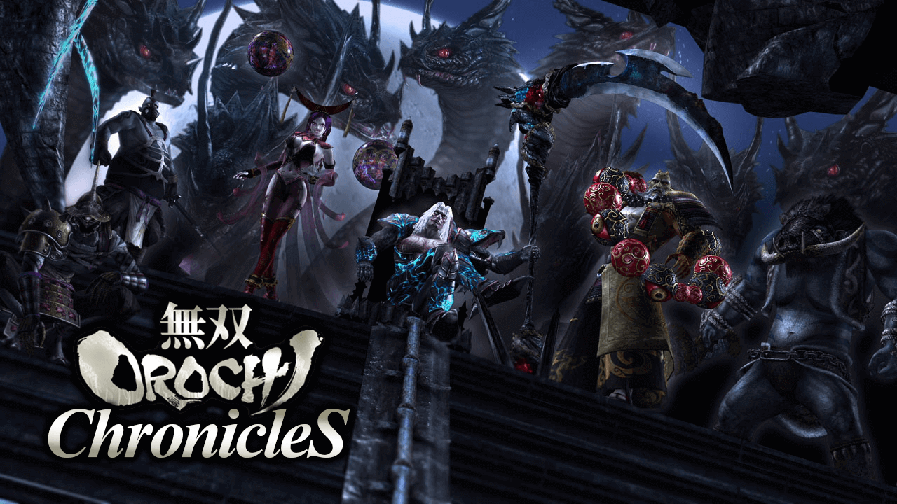
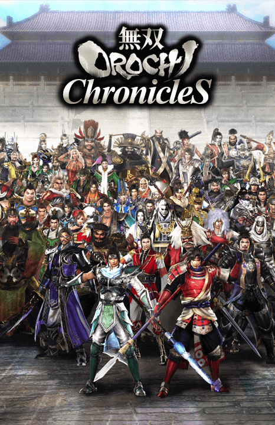
Also visit the editor’s Japanese study site:
Edit by 2016-2024 "Na²si (Nanasi)" Yupzhou "MOC - Musou Orochi Chronicles"
Version 1.6
—— Volume I ——
Birth of Orochi
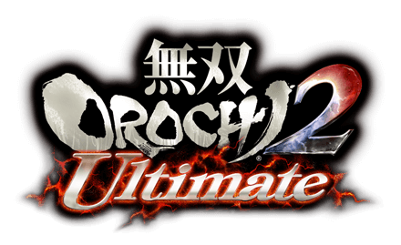
/ 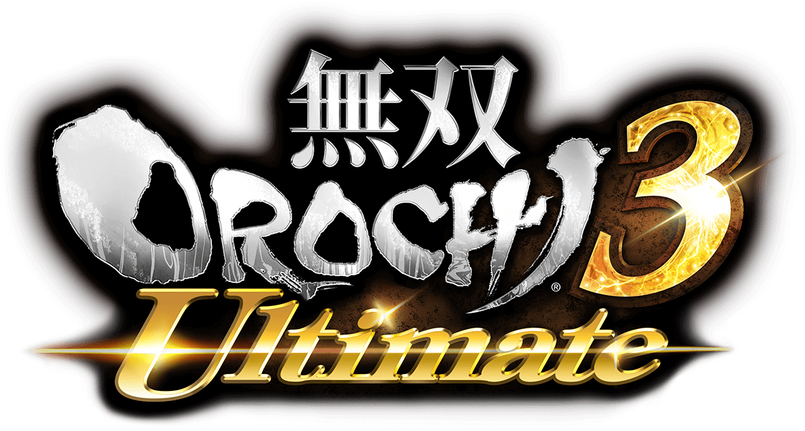
> 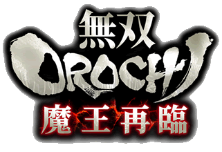
▶ Chapter 1 Birth of Orochi
Birth of Orochi

/
>
It began on an ordinary day like any other. Over the quiet peace of the Mystic Realm a host of demons fell without warning and broke a stillness that had lasted an age; to drive back the ravage, the Realm’s generals were forced into battle. Faithful to his creed — “every companion must be brought home” — Yinglong, with Fu Xi and Nezha at his side, took a handful of troops into Yamatai and rescued a squad of Realm soldiers at the very brink of death. The feat drew the notice of the sorceress, the Nine-Tails. She tested their strength and judged that for all his iron arms, Yinglong was simple in the head — material worth using, she thought; a man she would make her servant one day. Fu Xi could not read her intent and at once put the question among them: the Nine-Tails had once been able to fashion “simulacra” out of her tails, yet the Heavenly Emperor had sealed that power away — why was she doing evil again now? Yinglong declared the Heavenly Emperor not nearly cruel enough, that he should never have let her stalk free outside, stirring up trouble. Leading his troops out of the field, Yinglong swore that in these ever-darkening times he would save his friends by any means, even if he had to fight alone…
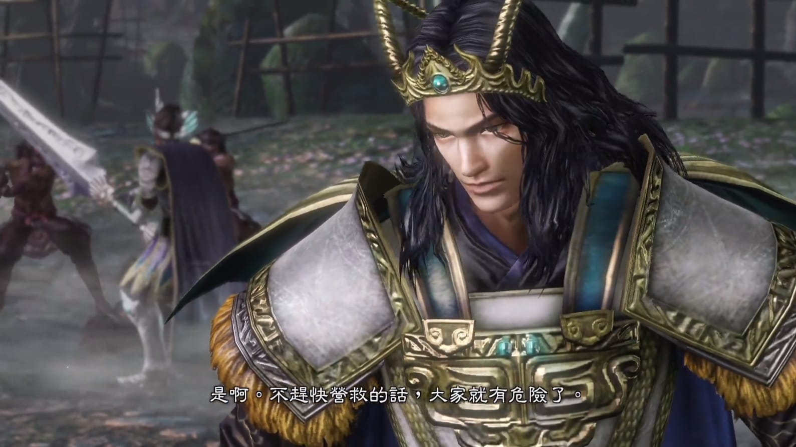
Tamamo no Mae — Ch. 7 · Part 1 Defense of the Mystic RealmThe demons came at last in force against the Realm. Fu Xi, Yinglong, Susanoo, Sun Wukong and Nezha fought at the very front. Yet whenever the demons were struck down they rose again, and they fled with this boast on their lips: “Attack as you will, we cannot be destroyed — so long as that Lord lends us his power.” Which Lord? Yinglong was haunted by the question. Then a mysterious woman came to report a matter of “the gravest kind”: that Lord was the wellspring of all evil; he wielded the Divine Mirror to drive the demons — which meant that the coming of the demons was the will of the Realm itself. Yinglong set out at once for the Celestial City to learn the truth.
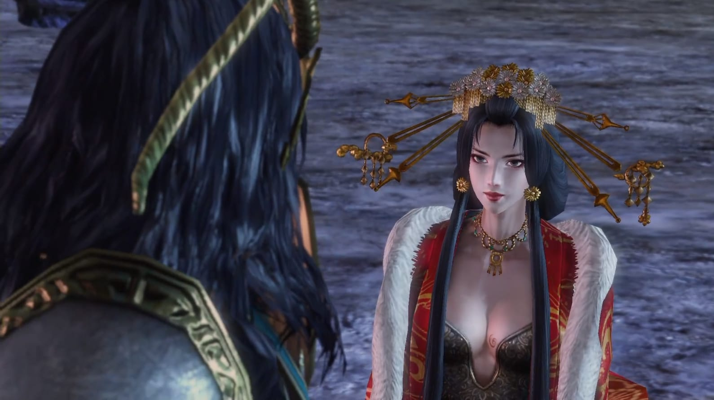
Clearing the demons had cost Fu Xi far too long. By the time he overtook Yinglong at the Celestial City, the place was already swarming with them. To save both the Heavenly Emperor and Yinglong from those claws, Fu Xi drove his horse hard toward the gates.
Yinglong slipped into the throne hall of the Celestial City. There the Heavenly Emperor sat on high, the Divine Mirror in his hand, and below him ranks of demons stood drawn up. Yinglong meant to step forward and demand his answer, then checked himself: not on impulse. He watched the Mirror’s light fall, and one by one the demons lost every shred of will to fight, hollow-eyed as drained souls, until they drifted inward and were taken into the Mirror itself. Yinglong stood dumb. So the Divine Mirror worked wonders like these — and the words of that mysterious woman came back to him, and with them the other question: why had the Heavenly Emperor never stripped the Nine-Tails of her arts at all? Everything fitted. The Heavenly Emperor was the wellspring of all evil…!
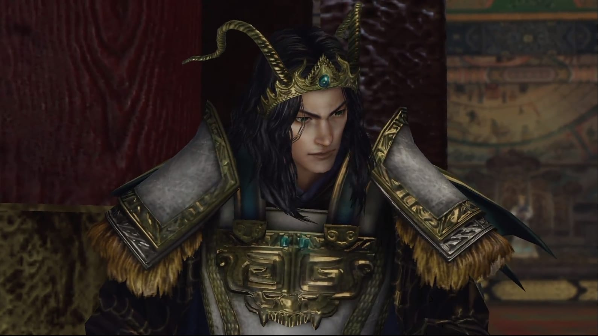
Yinglong strode up and wrestled the Divine Mirror with the Heavenly Emperor himself. He hurled accusations at the throne, while the Emperor thought only: how can this general slander me out of nothing — the Mirror is a thing made to seal demons away…! But Yinglong’s strength was more than the Emperor could bear; the Mirror was torn loose, and the Emperor fell where he stood. Yinglong glared at the Mirror and roared, sword raised to run it through. And in the very instant his blade touched it, the Mirror split; a flood of miasma poured out without ceasing and wrapped Yinglong about, and he was transmuted into the wicked Serpent Demon, Orochi! Against the Heavenly Emperor as he rose again, Orochi loosed a blow heavy with miasma, and the Emperor fell a second time. Driven by a pure lust of destruction, Orochi marked the Emperor’s head this time, and swung the great scythe once more…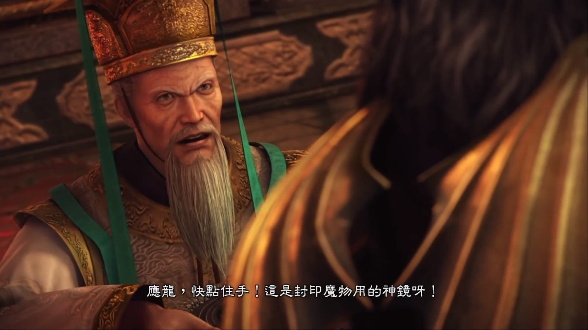
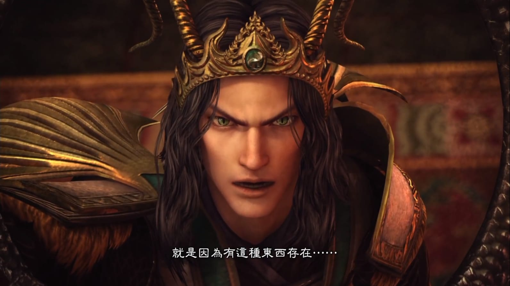
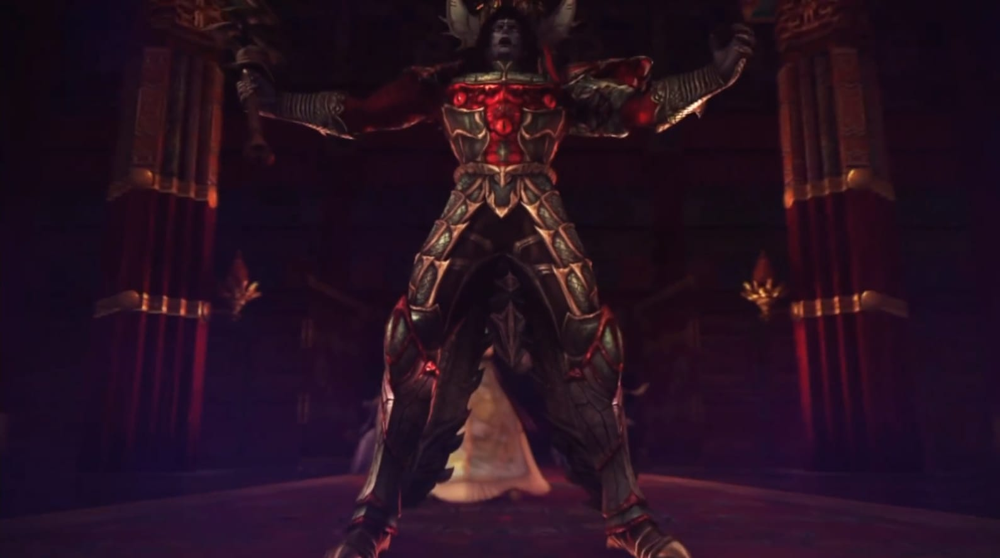
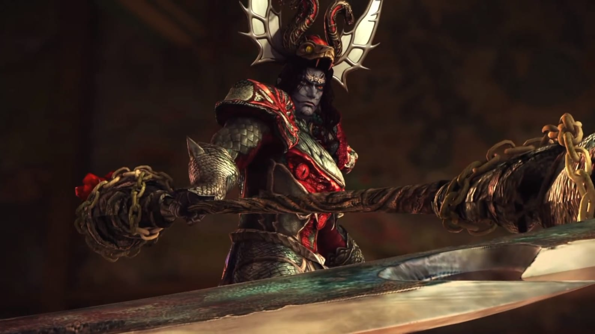
Fu Xi, having broken through the demons screening the city, at last forced his way into the throne hall. There the Heavenly Emperor lay dead across the floor; and standing over him, a demon of unknown and towering power — no other than Orochi himself, who had drunk in every last thread of miasma until he was the will to destroy made flesh. Fu Xi sustained the exchange a while, then found a way to carry the Emperor’s body out; and Orochi wasted the Celestial City to ruin and strode away. In that same tumult, Tamamo no Mae came into possession of the broken Mirror…With the Heavenly Emperor dead, the Mystic Realm fell to the governance of Susanoo, the Realm’s chief, as regent — and he proclaimed the crusade against Orochi. Orochi in turn raised the Demon King’s nest, Koshi Castle; the demons gathered to that lair, and the army of Orochi was born.
Orochi struck the head from the great Buddha of the Five Elements Mountain and walked away. Heaven had bred a mightier enemy, yet the Realm’s host was a handful of loose sand. Susanoo, worn to the bone by the long war against the demons, could barely stir; the burden of the crusade fell on Nezha and Sun Wukong. Searching the Five Elements Mountain for Orochi, the two found instead renegade generals of the Realm — and not a few of them were men they knew. Friend and foe indistinguishable, the loyal and the renegade ground against each other in a war without end.
The Nine-Tails’ simulacra, the demons’ road-blocks, the Emperor’s death and the loss of the Divine Mirror together cost the Realm’s host years before it could open a road to the lair at Koshi Castle — and by then the Demon King had mastered his own power. Time and again the crusade was beaten back; even Nezha, for all his boasts, was annihilated by Orochi within a few exchanges. Susanoo brought Nezha back from death and rebuilt him whole in steel, and he went on challenging Orochi. Only after long years of crusade did the Realm’s generals at last break Orochi and confine him beneath the Five Elements Mountain. Henceforth, for all eternity, Orochi would endure punishment without end and be shunned by all forever. After the confinement, the Realm turned its hand to hunting the fox demon, Tamamo no Mae.
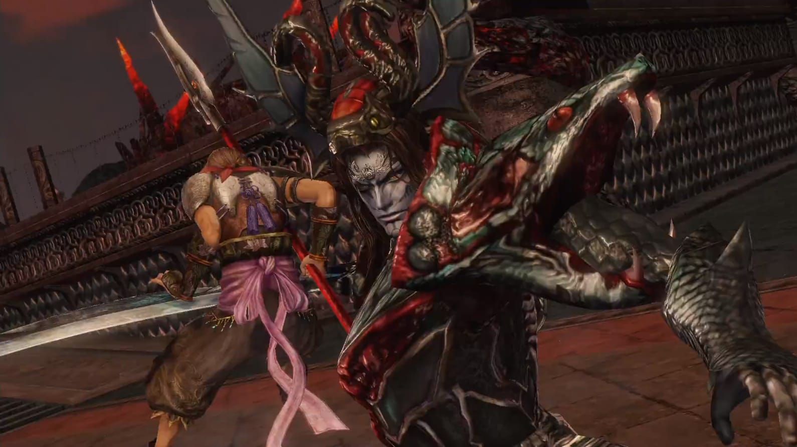
Tamamo no Mae, ceaseless in her mischief, was hunted by the Realm’s generals. But she was a past master of flight and they could do nothing about her; the longer she ran, the fainter her demonic aura grew — and yet, feeding on negative feeling, she could not stop making trouble. Abe no Seimei, the yin-yang master, crossed space and time into the Mystic Realm of the far-distant past. Seimei claimed the fox demon had once helped him; Sun Wukong claimed the Realm’s generals had locked him up. The two “volunteered” to help Tamamo no Mae out of the Realm and beat back general after general: Fu Xi, Susanoo, Nezha, Shennong, Taigong Wang, Sanzang, Nu Wa. Just as Tamamo no Mae, sure of victory, stood on the threshold of escape, Seimei and Wukong turned on her; Nu Wa woke, Shennong and Fu Xi came up, and the Three Sovereigns joined their force to seal Tamamo no Mae into the Killing Stone. So the operation against the fox demon was brought to its close. From the Killing Stone rose an intensity of hatred so strong that in the end the stone was hidden away at the Fire River.
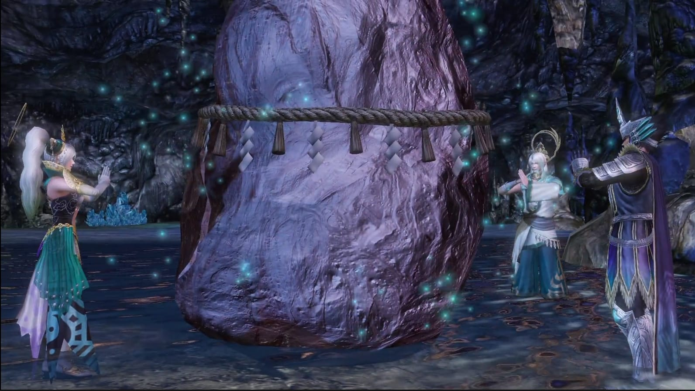
▶ Chapter 2 Epics of the West
Odin, king of Asgard, had fallen at Ragnarok and taken the ruin that was foretold, and entered the nether world. Hard by lay the River of Woes — but Odin would not bow to fate, and swore to overturn so miserable a doom. He raged through the realm of the dead, striking down monsters and the phantoms of Zeus and his children, until he forced out Hades himself, who had been looking on as at a play. Hades, to satisfy himself over and again whether Odin was worth raising, loosed phantoms of him against the armies of the dead. Watching his own phantom whisper the ugly wishes of his heart, Odin was ashamed of himself — and could not deny the wish. Odin beat back the captains of the nether world and accepted Hades’s last assay: battle with Hades. In that battle Hades felt Odin’s power and Odin’s wisdom, judged the god greatly usable, and granted him his life — overturning the fate of his death. At the same time Hades gave Odin the World Tree as a souvenir of parting, and the World Tree took hold upon his soul and grew. Odin felt the strange power of it, and already a vast and dreadful design was working in his mind. Asgard, Olympus, the nether world — there the three realms met…
Odin had lived through Ragnarok, and now meant to nurture the power of the World Tree in the heavens of Olympus and at last devour it, so that all the worlds might be destroyed and his own destruction averted. Gaia, goddess of the earth, felt his breath; and Loki of Asgard told her that Odin was coming against Olympus. Gaia, nothing but a soul now, summoned Perseus and joined hands with Loki to investigate. To put Perseus beyond suspicion, Loki divided off a bough of his mistletoe and gave it him, with this pledge: if ever Perseus distrusted him, let him break the bough, and Loki’s own mistletoe would wither and Loki’s power be diminished. So Gaia, Perseus and Loki searched Olympus, found Asgard’s spies and monsters, and struck them down; Perseus and Loki each acknowledged the other’s wit and valour. As the three held their reckoning in the temple, Gaia felt a terrible presence out west. Perseus rode alone, fell into a trap and was shut in with phantoms set upon him. Gaia found the caster; Loki beat her off, and the caster fled to tell Odin of Loki’s betrayal. Perseus’s case grew desperate, and Loki chose to save him first. Loki made it plain that to win one certain “wish” he would stop at nothing, and ran the caster down; Gaia could feel no suspicious presence any longer, and the inquiry rested there. Loki would go back to Asgard and plan it out in detail; and Perseus swore by the mistletoe that he would aid Loki through fire and water, whatever it cost. But in the end Odin learned of the understanding between Loki and Perseus, and commanded Loki to kill Perseus before his eyes. Perseus met death unflinching, and scattered his spirit and his memory to the four winds; a wraith adrift among the worlds, he continues the inquiry still…
▶ Chapter 3 King of the Other World
Long after the Realm’s generals had confined Orochi and sealed Tamamo no Mae, the ages of the Mystic Realm ran on.
The sorceress Da Ji grew weary of life in the Realm and set her interest on the serpent demon of elder legend, Orochi. Da Ji and the demons with her set out for the Five Elements Mountain, where Orochi lay confined. The mountain was watched on every side by Taigong Wang’s spies, and the gate beneath it, sealed, would not open. Da Ji’s party beat down a number of the Realm’s generals, found the key and entered. Under the Buddha statue of the mountain, restored to splendour, lay the petrified serpent demon, Orochi. Da Ji’s party drove off the wardens — Sun Wukong and Sanzang — and the stone fell away, and Orochi woke from his long sleep. Da Ji led Orochi out of the mountain, and Fu Xi, Nu Wa and Taigong Wang barred their way; Da Ji and Orochi beat the Realm’s generals back twice over. It was the first dazzling appearance of the sorceress and the resurrected Demon King. Taigong Wang gave out that they might be let run their course a while, and began preparations for a new crusade against Orochi. Da Ji assured Orochi that the world outside was finer still. But Orochi had one purpose only —
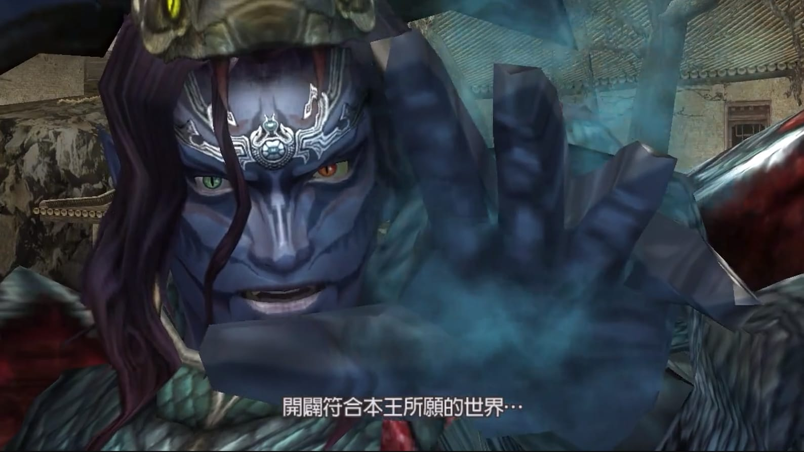
Hideyoshi, the hegemon, was making his final move for the unification of the land — the taking of Odawara Castle — when both his army and the Hōjō watched a convulsion come upon it. A misshapen host bore down on the castle, and at its head stood the risen Serpent Demon Orochi, the sorceress Da Ji and the tyrant Dong Zhuo. Dong Zhuo had joined the demons for the dream of his pool of wine and forest of meat, now to be realised in the Other World. At sight of that monstrous host, Toyotomi and Hōjō alike lost their hearts. Orochi’s army was irresistible and trampled the Hōjō under with overwhelming power; Fuma and Ujimasa were both beaten down, and Fuma said that though the Demon King could not rule chaos, to make his own weather in it was sport worth having — and joined Orochi’s army. Orochi, growing bored, let Da Ji prepare the fire attack. Keiji, fascinated by the wish hidden beneath Orochi’s irresistible strength, came at him with arms; Orochi crushed him and took him alive. Nene put her ambush out, and Orochi, rolling over everything in his path, took the granary. Then Da Ji fired Odawara Castle; Nene came out, was crushed, and withdrew. Hideyoshi, seeing his troops scattering and his grain gone, had no choice but to take the field himself. He commanded Orochi and the rest to give their names, and Orochi and Da Ji taught him their true ones — and crushed him. Hideyoshi glimpsed a terror of power with no bottom to it, saw in it the tyrant of an age of dread to come, and fled Odawara Castle. Orochi took Keiji into his service and made him a great captain of his army.
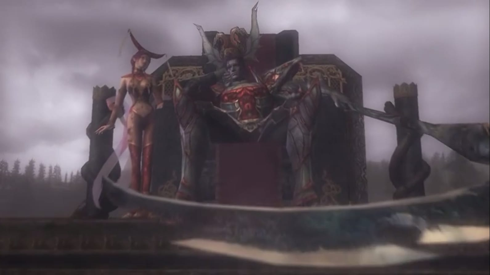
Warriors Orochi (the Original) — Orochi Route #2 Battle of ChengduNext, Orochi’s army marched west against Chengdu, the isolated capital of Shu. Liu Bei’s main strength lay dispersed abroad and could not be recalled at once, and the situation was desperate. Orochi first crushed Guan Xing and Zhang Bao and took the southern fort. The Crouching Dragon, Zhuge Liang, decided in a heartbeat and bade Liu Bei run; Liu Bei, who loved the people as his own, would not go without them. Zhuge Liang ordered Zhao Yun to guard Liu Bei and the refugees, and stayed himself to bar the misshapen host with his own person. Orochi drove straight in and cut his way into the inner city of Chengdu. Zhuge Liang shut the gates and fought Orochi to the death, and was beaten. Da Ji, seeing the man was usable, took him alive. Orochi left the city to pursue Liu Bei; Zhao Yun, having sunk the boats and broken the pots, brought up the rear for his lord and stood alone against ten thousand. Orochi crushed him also and took him alive. The priests then worked the arts Zhuge Liang had taught them and muddled Orochi’s army’s sense of direction, but were beaten down. Meng Huo and Zhurong came at Zhuge Liang’s summoning and were driven off. At last Orochi overtook Liu Bei and captured him — and so Chengdu fell and Shu was destroyed. The news shook every host: the Shu and Wei armies contending for Hanzhong made their peace; Ma Chao held Dingjun Mountain; Huang Zhong and Guan Ping rode to Fancheng to warn Guan Yu; Cao Cao ordered Zhang Liao out of Hefei to make ready a league of Wu against the demon. And Zhuge Liang counselled Da Ji to keep Liu Bei alive — “to draw in the other generals of Shu and take them all at once”. So Da Ji indeed took Liu Bei in hand to command the Crouching Dragon, and the Dragon became a fang and claw of the serpent.
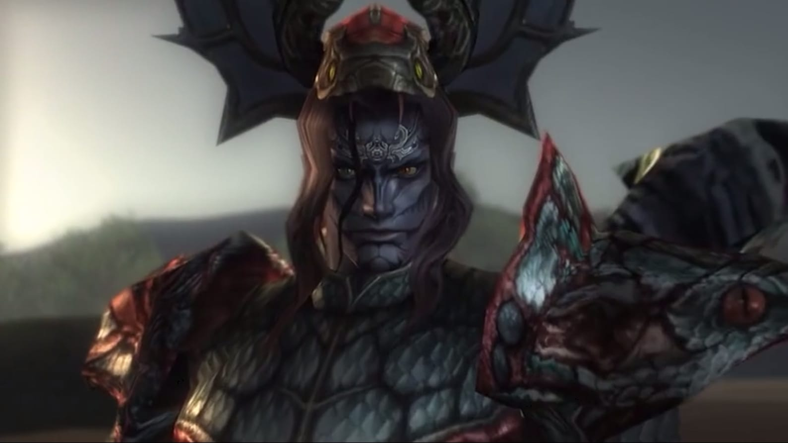
Warriors Orochi (the Original) — Orochi Route #3 Battle of KawanakajimaThe destruction of Shu stoked the warlords’ defiance. Shingen and Kenshin made their peace at Kawanakajima and drew up their lines on the spot to meet the attack, with Kagekatsu and Yukimura in the van, leading the horse bands and the Red Clads against Orochi’s host. Orochi crushed them; Yukimura fled; and Orochi drove into the Stone Eight Formation. Within it Shingen set fire, while at the same moment Kenshin and Kanetsugu came out announcing that they would “exorcise Orochi”, and fell on his main camp from two roads. Orochi came back to the front, crushed them, broke out of the Eight Formation and trampled Shingen under before returning. Zhuge Liang foresaw that the warlords might cast an encircling net, and Da Ji bade him see to it. Zhuge Liang became an asura, and stood at the very front of mankind’s killing of one another.
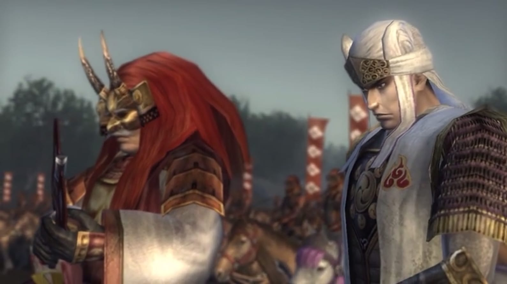
Warriors Orochi (the Original) — Orochi Route #4 Battle of HefeiZhuge Liang, made captain of the flying column raised to crush human resistance, led his army to Hefei. He judged that Wu’s troops must be there, and meant to test their strength. Hefei indeed was already occupied by Wu — and its captains were no other than Sun Jian and Zhou Yu. Zhuge Liang seized the north-east corner first, and Ling Tong fled. To stop Orochi’s army advancing, Zhou Yu sent out Zhang Liao and Gan Ning; Zhuge Liang at once cut the Little Poem Bridge and at once turned the two captains’ attack. Gan Ning fled; Zhang Liao rode hard back to camp to tell Cao Cao all was lost. Sun Ce arrived, and Zhou Yu, sure the turn had come, went out with Sun Jian — and both were undone by Zhuge Liang’s stratagems. To save his soldiers’ lives Sun Jian became a prisoner, and from that day Wu was reduced to Orochi’s vassal state, and the host of Wu a chief strength of Orochi’s army.
Warriors Orochi (the Original) — Orochi Route #5 Battle of Edo Castle
Human resistance grew fiercer by the day, and Orochi set his eye on Ieyasu, who had already moved his court to Edo Castle; Da Ji led Sun Ce against it. Orochi’s army ringed the castle first. The One-Eyed Dragon, Masamune, came down from the north to support Ieyasu outside the walls and was beaten down by Sun Ce. The siege went long without result, and Sun Ce turned fire upon the town; Ieyasu, forewarned, had it extinguished. Sun Ce then took the gate by assault, and Edo Castle opened. Masamune counter-attacked with his ambush and his reinforcements, and failed. Sun Ce entered the keep; Ieyasu sent Ina to fall on Orochi’s main camp, but Sun Ce got back ahead of her and blunted the surprise. Masamune, seeing that the “Little Conqueror” of old was such a fighting man as this, owned that neither he nor Ieyasu had the stuff of an empire yet. Ieyasu, out of devices, flung himself at the enemy in person. Sun Ce took the keep a second time and broke both Masamune and Ieyasu: Edo Castle fell, Ieyasu bowed before Orochi’s army, and the Tokugawa lands became Orochi’s vassal states too. Masamune, who had come out of admiration, acknowledged Orochi as a hero — and Orochi’s interest in mankind deepened again.
Warriors Orochi (the Original) — Orochi Route #6 Battle of Yiling
So Orochi took the field again. This time he marked the last hope of the Three Kingdoms — Cao Cao, “the able villain of an age of chaos” — so no human prisoner in his camp would give him word. Orochi marched with Sun Quan at his side, and passing Yiling met the Wei army led by Cao Cao in person. Orochi shelled the front line; Cao Cao ordered it to fall back into the Eight Formation, and so Orochi’s army took the linked camps. Orochi entered the Eight Formation and trampled Dian Wei, Xu Chu, Xiahou Dun and Xiahou Yuan, all of whom fled. Against the unknown engine Cao Cao found a scheme: he sent Man Chong to burn the cannon, the cannon blew up, and Cao Cao set fire to seven hundred li of linked camps. While the demons were unprepared Cao Cao cast his remaining strength on Orochi’s main camp by surprise — and Orochi stopped it. Yet Cao Cao’s figure was nowhere to be seen, and Sun Quan judged there was trick in the Eight Formation; so Orochi entered it again, and sure enough found a number of priests, and crushed them. Cao Cao appeared, a host of ambush rose on every side, and he fought Orochi to the death. Orochi crushed him as before; Cao Cao went down, and the way of the hegemon was hewn off. Dian Wei came back onto the field and carried Cao Cao’s “body” away. Masamune, seeing Orochi defeat the able villain of antiquity, admired him the more and affirmed his mould as hegemon of the land. But Keiji told him: Orochi, though he had broken Cao Wei, had not smiled — his eyes were not on the realm…
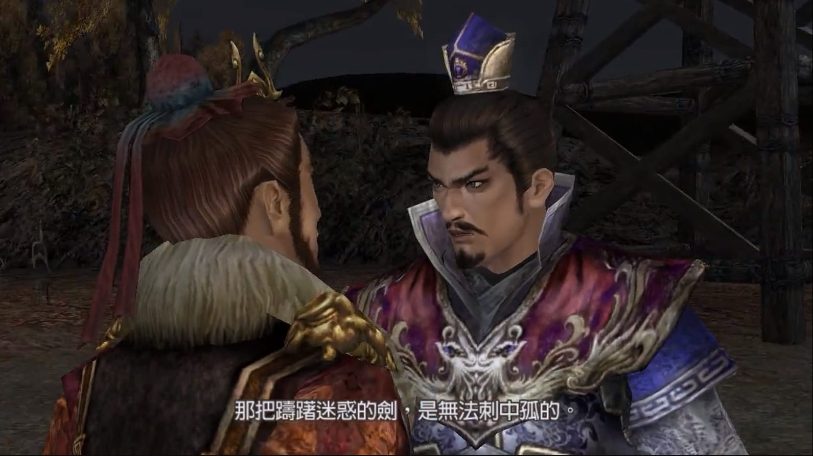
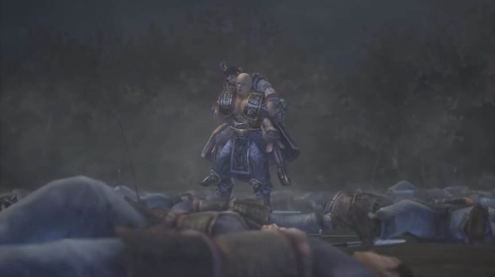
Warriors Orochi (the Original) — Orochi Route #7 Battle of MikatagaharaJust as Orochi persuaded himself that no one was left to match him, Ieyasu brought word that the “Demon King” of the human world too was in this world — Nobunaga, already drawn up at Mikatagahara. So Orochi and Ieyasu led their army against him. It was the last battle in which Orochi displayed his powers before mankind. Nobunaga’s van thought to stand the shock, and broke; thereafter the Oda host barred its gates and would not come out. Da Ji found her scheme: fall on their grain. On the march she saw Oda troops signalling with beacon smoke, knew they would use the assault on the granary to strike the main camp, and took the priests with her as she advanced. Mitsuhide came out with the storehouse to give battle, and the Oda host did indeed launch its surprise on the main camp. Da Ji summoned phantom soldiers to hold it, took the granary withal, and wrought her arts: she shifted the main camp’s men into the granary, and set a number of demons among the raiders in the space of a breath. The face of the attack was turned about; against immortal arts unknown to them the Oda host fell into the greatest disorder, and Nobunaga was forced to take the field. Da Ji set her arquebusiers on him; Orochi came to the front himself and crushed all before him. Nobunaga, Nōhime and Ranmaru took flight for the better policy, swearing to raise wind and rain in the Other World.
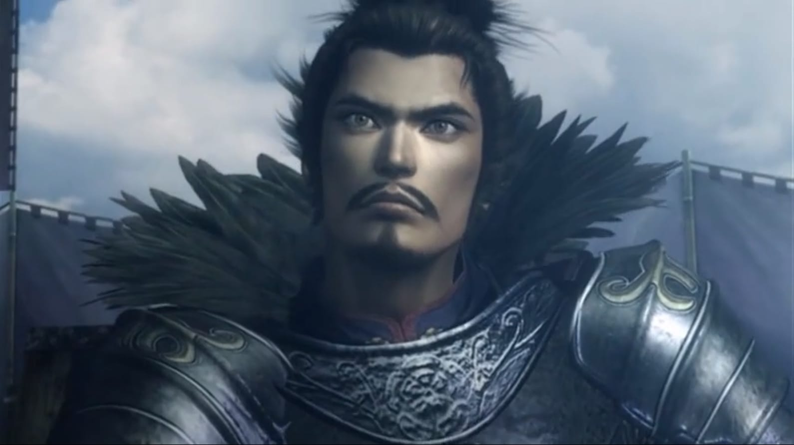
Warriors Orochi (the Original) — Orochi Route #8 Battle of the Fire RiverOrochi had swept every power of the human world, and now he smiled. Remnants were still abroad — but with mankind driven to the wall, mankind’s latent powers were only beginning to show, and only so could he meet true champions. Yet unbidden guests came to this “banquet”: Zuo Ci and Zhang Jue, joined by the three immortals of heaven — Fu Xi, Nu Wa and Taigong Wang — come to take Orochi. Orochi was displeased, and unwilling to be taken, so he made something short of a resistance. The field was thick with sorcery: Zhang Jue summoned phantom soldiers; Taigong Wang threw the demons into confusion and set them killing each other; Zuo Ci multiplied himself; Taigong Wang turned his boats and ranged them in the vast “manji” sign — the Formation of All the Immortals; Fu Xi called up a false Orochi and a false Da Ji. Orochi and Da Ji broke every one of those arts and forced the Realm’s generals to take the field themselves. Nu Wa called down the lightning and Fu Xi summoned “the armament of elder days”, but before Orochi both were no more than a knife trick. Orochi crushed the fierce captains of the Realm and went home in a sulking mood. Lü Bu, the ghost of war of the age of the Three Kingdoms, hearing there was such a champion, came under him also, hoping to meet yet more — and more entertaining — “prey”.
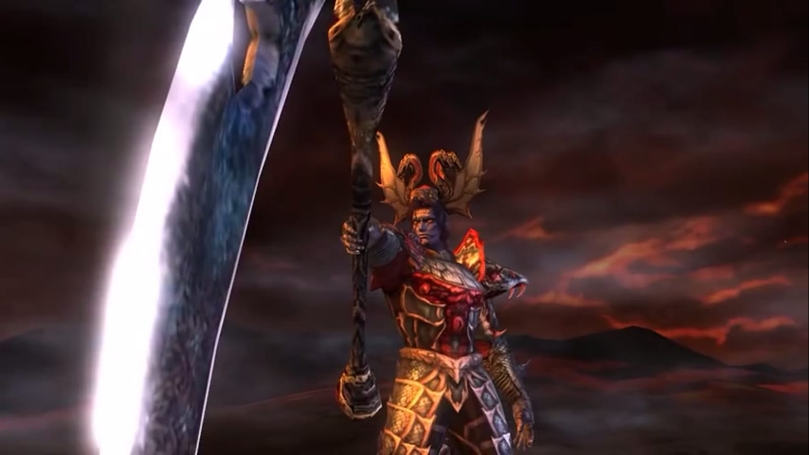
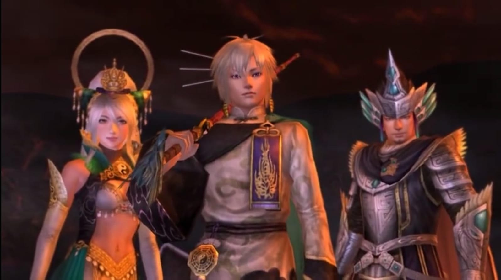
Orochi swept all the world and made himself master of the Other World, yet still he looked for a champion without equal. Keiji put Orochi’s wish in a single line — “to find one strong enough to end my life”. Orochi’s hunt for the strong rested here for now. Keiji, Sun Ce, Ieyasu, Zhuge Liang, Lü Bu, Masamune — about Orochi perhaps already stood the very ones who might surpass him…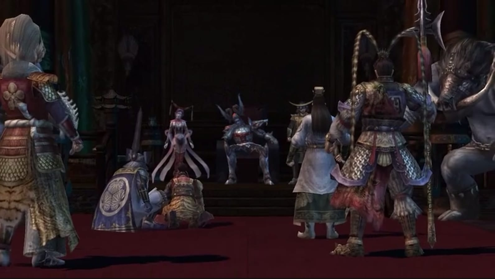
—— Volume II ——
Strife in the Other World
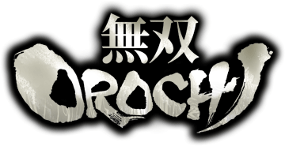
▶ Chapter 1 Warriors Stir
Strife in the Other World

Da Ji took Cao Pi, Mitsunari and Zhang Liao and marched against the bandits who infested the Kusagawa — Huang Gai and Xu Chu. Mitsunari's plan was to split the Wei army in two: one column driving west, the other joining Xu Huang, while he himself pushed south. Ever since the battle at the Fire River, the Yellow Turban Zhang Jue had been running without rest; Orochi's troops were everywhere, and the man had already lost his soul. Cao Pi beat him. Huang Gai threw a detachment in to draw Cao Pi forward, and Cao Pi destroyed it — whereupon Cao Pi found that he himself had been Mitsunari's bait. Mitsunari set off for the enemy's main camp, only to learn the enemy had the same idea: the southern fort had already drawn the bulk of the Wei army after it and was about to cry east while striking west, a head-on assault on Orochi's camp. So Mitsunari fell upon the southern fort, checked the rush, and plunged into the enemy's main camp. Cao Pi ran into Xiahou Yuan, who had barged in to fight his own guerrilla war, and lied that “marching in with demons is simply the way of the times”. When he reached the enemy's lines it was Xu Chu guarding the gate, and Xu Chu was so hungry that he could not know the heir of the King of Wei when he saw him — he thought only of eating. Cao Pi defeated him and rewarded him with a meal. The bandits' camp stood open, and only then did Cao Pi see that the bandit was Huang Gai. He and Mitsunari broke him, but left him his life.
Warriors Orochi (the Original) — Sengoku Route #1 Battle of Jingzhou
Mitsunari, leading Cao Ren, penned Guan Ping and Huang Zhong inside Xiangyang in Jingzhou. Nobunaga — with Mitsuhide and Hideyoshi at his back, all three bent on gathering every power that resisted Orochi into one fist — stepped forward and snatched Guan Ping from under the blade. Nobunaga broke Cao Ren and Mitsunari, cut Huang Zhong out, and beat off Cao Pi, who came running to the help. Nobunaga asked Mitsunari and Cao Pi why they should bend the knee to Orochi, and got no answer. Nobunaga took Guan Ping and Huang Zhong under his wing; Huang Zhong told him he looked very much like Cao Cao, the unscrupulous hero of a turbulent age, and let fall the rumour that “Cao Cao is at Honnōji”.
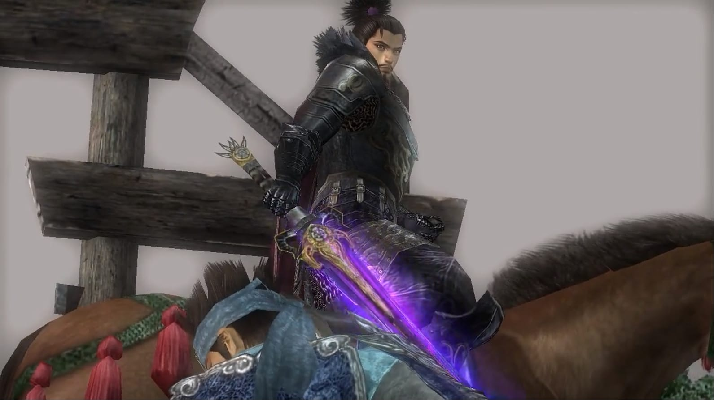
Nobunaga and Xiahou Dun each marched on Honnōji, both hoping to set eyes on Cao Cao. By the time Nobunaga arrived the temple was already ringed with Orochi's men. Huang Zhong, desperate to rescue Cao Cao, reached Honnōji to find that the Cao Cao there was Da Ji in disguise. Da Ji fired the temple and sent Zhou Yu into the attack; Nobunaga beat him off and detailed Takigawa Kazumasu to quench the flames. Then Da Ji loosed Sun Shangxiang, and she was defeated and taken. At that moment Xiahou Dun came up and joined hands with Nobunaga — and, seeing that Nobunaga and Cao Cao were men of one stamp who could hardly share one world, he went off to look for Cao Cao elsewhere. Shingen, hearing that Nobunaga was there, came as well; once Shingen and Nobunaga had settled that they stood on the same side, they parted with courtesy. After the battle Nobunaga released Sun Shangxiang.
Warriors Orochi (the Original) — Wei Route #2 Battle of Tianshui
To weigh once more the mettle of Cao Pi, heir to the way of the hegemon, Nobunaga led an advance column against Tianshui — ground Orochi held at no cost and valued at none. Da Ji knew that nobody in the field had ever met Nobunaga, but Cao Pi had; so she took Cao Pi and Mitsunari to bar his road, and Cao Pi fought Huang Gai a second time. Then Nobunaga's main body came up, and Zhuge Liang with Da Ji's relief. Cao Pi drove into Nobunaga's camp, and the two men studied each other at length; satisfied, Nobunaga called in his troops and withdrew. Watching Nobunaga, his own men felt they were watching the overlord Cao Cao. Da Ji set Mitsunari to watch Cao Pi — but Mitsunari and Cao Pi, it turned out, were of a kind…
Warriors Orochi (the Original) — Wu Route #1 Battle of Dingjun Mountain
To force Orochi to hand back his comrades, Sun Ce, Sun Quan and Ieyasu went to Dingjun Mountain to crush the remnants of Shu who were still resisting there. Ma Chao, Yueying, Jiang Wei, Zhang Bao and Ranmaru held the mountain; Sun Ce swept them aside — Ma Chao, Jiang Wei and Zhang Bao broke out and ran, Yueying was taken. Under commission from “a person anonymous”, Zhang Bao fell in with Xingcai, and the two were about to carry out a certain “assignment”. Sun Ce meant to let Ranmaru go; Ranmaru, won over by the straightness of Sun Ce's nature, put himself at Sun Ce's service.
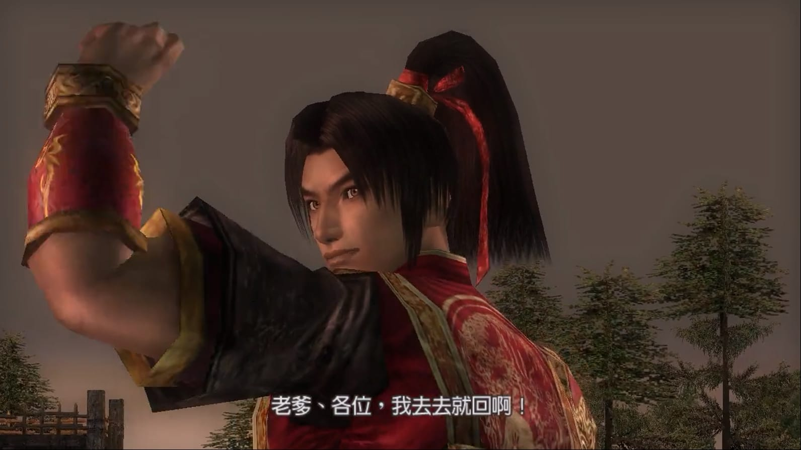
▶ Chapter 2 Tides of Resistance
With the Serpent's talons — Cao Pi, Mitsunari, Sun Ce and Ieyasu — working at full stretch, Ma Chao was put down and Nobunaga ceased to show himself, and for a while no revolt broke out anywhere. Da Ji proposed to Orochi that they hold a mock battle at Baidi City. Facing each other: on one side Orochi, Keiji, Masamune, Sun Ce and Ieyasu; on the other Da Ji, Cao Pi, Mitsunari, Zhou Yu, Dong Zhuo, Zhang Liao, Mizuchi and Zhuge Liang — and Zhuge Liang appeared to be weaving something behind the scenes. Orochi made an end of Mizuchi (he was brought back afterwards), and he and Da Ji settled which of them was the stronger at Baidi City: it was an overwhelming victory for Orochi.
Warriors Orochi (the Original) — Shu Route #1 Battle of Ueda Castle
Under commission from “a person anonymous”, Zuo Ci, Xingcai, Yoshihiro and Zhang Bao picked the very hours in which Orochi's army was busy with a mock battle, helped Zhao Yun out of the prison at Ueda Castle, and told him that Liu Bei the Virtuous was not dead — only missing. Zhao Yun fled west and fell in with Ginchiyo, who had broken out herself not long before and was an acquaintance of Yoshihiro's. Cao Ren, the commander of the garrison, sent troops to stop them, and Zuo Ci got in their way. Zhao Yun cut through Zhang He and shook off the pursuit. Ginchiyo joined Zhao Yun's force.
Courriers carried the news that Ueda Castle had been stormed, and the tide against Orochi began to run high. Thanks to Sun Ce, Zhou Yu was set free and enrolled in Sun Ce's army. Fuma, foreseeing the age of chaos that was coming, walked away from Orochi's side.
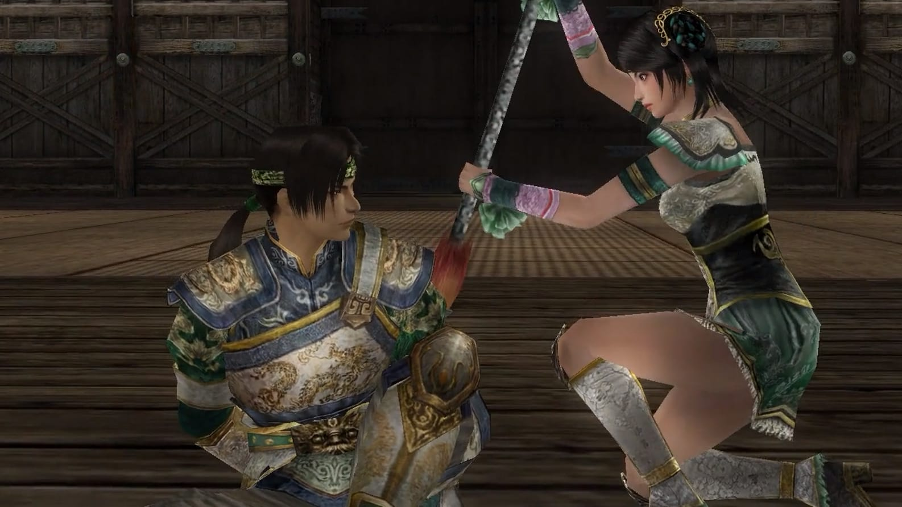
On the run, Zhao Yun's party came upon a prisoner convoy of Orochi's army at Hasedō, and Yueying was in it. Zhao Yun rescued Magoichi — who had crossed that way trying to help Yueying — and pushed north to free her. Da Ji, who had been watching the sport from the sideline, now stepped into it: she loosed her hidden troops, Mitsunari, to ring Zhao Yun and Yueying in. Zhao Yun forced the encirclement, and was met again by ambush and by reinforcement — someone read their movements to the letter and fed concealed bodies in wave after wave… Yueying made out Zhuge Liang's hand in it. Guan Suo and Pang De came out of hiding in their turn, and at last, as expected, Zhuge Liang himself appeared. Zhao Yun's party beat every one of them; Zhuge Liang threw back a single line — “the time has not come” — and was gone, leaving them utterly puzzled, while Yueying was sure he had a reason he could not tell. Magoichi told Zhao Yun that he had once heard Da Ji say “Liu Bei is at Chengdu”; so the party left Hasedō and set its face toward Chengdu.
Warriors Orochi (the Original) — Shu Route #2 · Side Story Breakthrough at Nanzhong
Zhang He and Daqiao reached Nanzhong early to bar Zhao Yun's road. Even with Jiang Wei at his side, Zhao Yun could not make up the odds. Yoshihiro therefore played the “angling ambush”: he and Zhao Yun baited the enemy out, and Jiang Wei, lying hidden, fell on them when nothing of the kind was expected. Zhao Yun's party beat Daqiao and Zhang He and took themselves out of Nanzhong.
By now several powers were growing strong — Zhao Yun, Lu Xun, the Xiahou clan, Shingen, Kenshin, Nobunaga — each treating Orochi as the enemy, now joining with another, now swallowing him. Nobunaga too had begun to gather men of ability. Sima Yi of Orochi's army rode hard over Kawanakajima and fell upon the people without cause, and Ma Chao 'the Brocade of Xiliang' meant to lead the refugees into the shelter of Zenkō-ji Temple. Huang Zhong counselled Nobunaga — Ma Chao is a man of ability — and Nobunaga went to help him protect the people. Sima Yi had reckoned on Nobunaga's coming all along: Ma Chao was here, and Huang Zhong was with Nobunaga. Nobunaga's column beat off the pincer of Dong Zhuo and Ieyasu and ushered the people into the Eight Formations; there Sima Yi, working Zhuge Liang's plan, loosed his ambushers. Nobunaga's men destroyed the ambush, settled the people, and in the end drove Sima Yi off. Ma Chao, moved by Nobunaga's great cause, took service under Nobunaga.
Warriors Orochi (the Original) — Sengoku Route #3 Battle of Kyushu
Nobunaga came round at last to Kyushu, cut up among four small powers, and meant to take them all in. Among them were the Yellow Turban Zhang Jue, Okuni the wandering dancer of Izumo, Xiaoqiao of the two Qiaos, and Konoe the renowned strategist. Hearing that Nobunaga intended to swallow them, Zhang Jue came on in full fury to bring heaven's punishment down upon him. Konoe offered plans, but the Yellow Turbans paid him no mind, and so Nobunaga beat Zhang Jue first. Okuni could not keep from chasing after her men, and spoiled Konoe's 'angling ambush'. Xiaoqiao, seeing Nobunaga's army draw near, took it for a fine opportunity and ordered a general charge; Konoe was struck dumb, and Nobunaga could only ask whether she was in such a hurry to die. Kanetsugu, acting for Kenshin, came to judge whether Nobunaga meant to extend his power by the sword now that the powers resisting Orochi were falling on one another; and Kanetsugu found Konoe moving through all these camps with not one man able to use his counsel. Nobunaga broke Okuni, and Xiaoqiao with her volunteers; when no field force was left against him he marched on Konoe — and ambushers started up before his gate, and he knew he had walked into the 'angling ambush'. Still, Nobunaga beat Konoe and folded the small powers into his own. Konoe muttered that they had lost because nobody would listen to him, and Nobunaga resolved to give the man a field large enough for his talent. Mitsuhide advised Nobunaga to consider an alliance with Shingen and Kenshin — but Nobunaga had another, sharper scheme…
Konoe, who had moved through so many camps, knew other armies' secrets — among them the place where Sun Jian was imprisoned. Nobunaga knew well that Sun Ce 'the Little Conqueror' was a man who did whatever he set his hand to; won away from Orochi, he would not only weaken Orochi's army but become the main strength of the resistance. So Nobunaga sent Konoe to Sun Ce. But Nobunaga's bare-faced growth had already marked him out to Orochi, and Dong Zhuo, at the head of a great army with Guan Yu, Zhang Fei and Zhang Liao, hemmed the Oda army in at Tong Pass, meaning to root Nobunaga out in a single battle. Nobunaga beat his vanguard, Guan Yu and Zhang Fei, then beat several more of Dong Zhuo's captains and drew Dong Zhuo himself out; he let Konoe slip away in that confusion while he held both Dong Zhuo and Zhang Liao. Dong Zhuo was broken, Fuma broke in and was beaten off in his turn, and Konoe got clear of Tong Pass and took the road toward where Sun Ce was…
▶ Chapter 3 Two Generals' Run
By Da Ji's design, Orochi ordered Sun Ce to go on putting down the revolt at Changban — a test of Sun Ce's loyalty after Zhao Yun's escape and Nobunaga's emergence into the open. Lu Xun, remnant of Wu, with Konoe, drew up at Changban to meet him. Da Ji kept Sun Ce under watch for a while; seeing no rebellion in him, she went away to attend to her own plotting. Sun Ce drove north. Lu Xun set an ambush and Ling Tong came onto the field, but Zhou Yu had his answer ready and threw guerrillas in to hold him. Lu Xun sent sappers to fire the position; Zhou Yu dispatched a counter-team against them. Konoe committed sappers in his turn; Zhou Yu urged that Konoe be driven off, and Sun Ce attacked him — and Konoe, feeling the heat of Sun Ce, came to believe that Nobunaga had judged rightly. Lu Xun played his last card and loosed Gan Ning on a surprise raid; Sun Ce stopped him. In the end Sun Ce broke Lu Xun and came home a victor, and Taishi Ci was set free.
Warriors Orochi (the Original) — Sengoku Route #3 · Side Story Battle of Xiapi
Orochi was not about to spare Lu Xun once he had split with Gan Ning and Ling Tong: Cao Ren, Zhang Liao and Xu Huang were put on his trail, and he was driven back to Xiapi. Nobunaga came out in person for his sake; Cao Ren, seeing it, turned against Nobunaga's main camp, while Mitsuhide and Hideyoshi took up Xu Huang. Reaching the north of Xiapi, Nobunaga was enveloped by Zhang Liao. He broke him, brought Lu Xun relief, cut his way through the whole length of the field, and fell on Cao Ren by surprise — and came home a victor.
Warriors Orochi (the Original) — Wu Route #2 · Side Story Battle of Changshan
To satisfy himself once more of what Sun Ce could do, Nobunaga sent Mitsuhide, Huang Zhong and Xiaoqiao to seize the granary Sun Ce kept at Changshan — at a moment when Sun Ce, under Da Ji's orders to take the war to Odani, was in the middle of his preparations. Sun Ce had no choice but to come out and retake the granary; he did retake it, then put the grain on the road with convoy after convoy. Fuma broke in and set his clansmen on the route, and Hanzō sent the Iga men against them. Zhou Yu and Xiaoqiao met again, but Xiaoqiao would not fight her own husband, and withdrew. The soldiers ate the grain, Wu's strength came back, and Sun Ce led the army against Mitsuhide. Mitsuhide was well startled to see Ranmaru serving in Sun Ce's camp; Ranmaru told him plainly that Sun Ce was a man of ability. Mitsuhide took the field against him and found that Ranmaru had not exaggerated. Sun Ce beat him and marched on Odani. Da Ji, meanwhile, was setting the rebels to kill one another…
Trusting Da Ji's intelligence that 'Liu Bei is at Chengdu', Zhao Yun's party reached the capital of Shu. To their astonishment, Yukimura — persuaded that the people inside were 'the returned dead', raised by Orochi — was storming Chengdu in earnest. Zhao Yun, bent on rescuing 'Liu Bei', slipped Orochi's eyes and cut his way into the city, where he found Wei Yan, who had swallowed the same rumour. From Wei Yan he learned that Liu Bei was not there at all, and at once went at Yukimura, the tool of the trick. Yukimura, won over by the brilliance of Zhao Yun's spear, woke to the plot he had been made to serve. Yuan Shao still believed all these people to be ghosts, and not even Zhao Yun could beat the notion out of him. Da Ji had meant to sit on the mountain and watch the tigers fight; but Yukimura was turned and Yuan Shao driven off, so she took the field herself — Zhao Yun beat her, and she fled to Nanzhong. Zhao Yun took Wei Yan and Yukimura with him.
Yuan Shao, though, had run only a little while before Zhuge Liang took him…
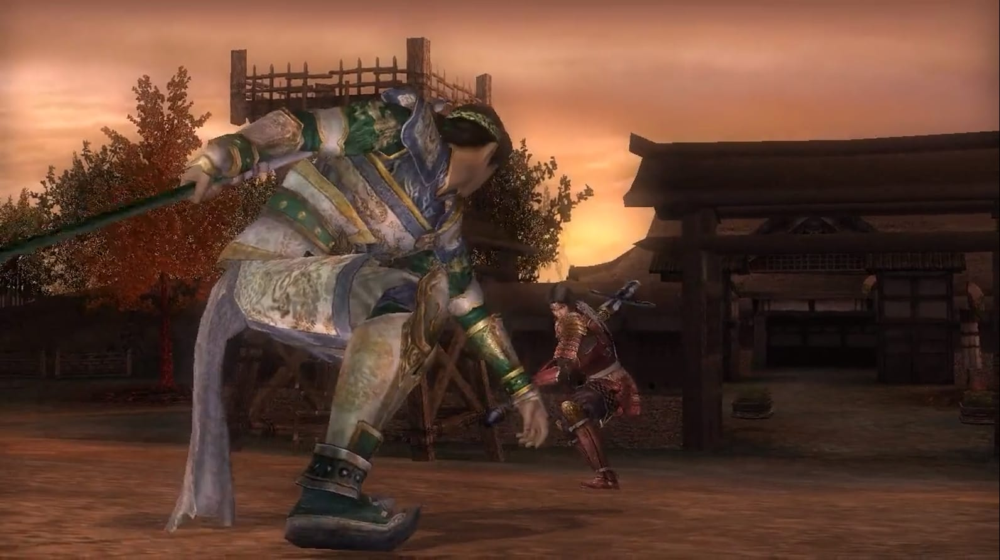
Zhao Yun's party split in two: Zhao Yun, Yukimura and Ginchiyo after Da Ji, back into Nanzhong; Xingcai and Yoshihiro to Odani, to muster the rebel forces. Since they left Nanzhong before, the country had lain under Orochi's hammer, and Meng Huo and Zhurong kept the war alive by one scattered raid after another; Sima Yi, Zhang Liao and Xu Huang were resolved to make an end of them. Magoichi got Zhurong out first, and Zhurong brought Zhao Yun's party before Meng Huo — but Meng Huo refused their help, for he would not owe what he could do to 'outsiders'. Yet the fighting went ill and everywhere they were the weaker. So Zhao Yun's party simply went on saving the men of the south as they found them; Meng Huo's pride gave way, he began to call them kin, and the men who had been saved came out in their turn to repay it, standing with Zhao Yun against Sima Yi's assault. Sima Yi played his last ambush; Zhurong answered it with her vine armour. Zhao Yun and the rest broke through Zhang Liao and Xu Huang and drove Sima Yi off, and Nanzhong was safe for the moment. Meng Huo and Zhurong, meaning to repay Zhao Yun's party, offered to help him search for Liu Bei; and Magoichi, from among the men of the south, brought word: 'there is a person of rank at the New Imperial City…'
Warriors Orochi (the Original) — Wei Route #2 · Side Story Invasion of Nanzhong
The growing army of Zhao Yun now set out for the New Imperial City in Wu Commandery. Orochi ordered Cao Pi into Nanzhong to crush the men of the south and Zhao Yun's army with them; Zhao Yun, by a stratagem, cut the bridges behind him and sundered Orochi's force. Cao Pi asked Zhang He to relieve the isolated main camp, but Zhang He, who would not be yoked to an ugly demon king, would not move. Cao Pi soothed Zhang He's temper and bade him fight as a general of Wei, and the fire came back into him. Cao Pi led his army to defeat Zhao Yun's force in pieces and thrust it out of Nanzhong.
On the road to Odani, Sun Ce received a letter from Konoe: Konoe held news of Sun Jian and wanted to meet Sun Ce at Odani. Sun Ce arrived with his army and, Konoe not yet come, began the siege at once. Odani was the rebels' city — Xingcai, Yoshihiro, Ling Tong, Gan Ning and Zhang Bao, who had joined first, were mustered there. To make Konoe's junction easy, Zhou Yu mastered the south of the city while Sun Ce engaged Gan Ning. Konoe arrived and joined Sun Ce unharmed, and Sun Ce now drove north. Konoe thought out a plan to take Odani while keeping the killing to the minimum: Sun Ce broke Ling Tong, who tried to bar him, and escorted Konoe through to the Yamada-yama fort, where Konoe smashed a great hole in the wall with his bare hands. Sun Ce struck at the heart of the place, beat Xingcai, and so took Odani. Lü Meng was set free in the outcome. Konoe told Sun Ce that Sun Jian was imprisoned at Osaka Castle.
To repay Nobunaga the favour of sending him Konoe, Sun Ce put Lü Meng and Taishi Ci to work bringing Nōhime out of confinement at Jianye. Dong Zhuo, Zhenji and Masamune all came down upon them when they heard; Lü Meng and Taishi Ci broke through pursuit after pursuit and carried Nōhime out.
Warriors Orochi (the Original) — Wu Route #4 Battle of Osaka Castle
For his own part, Sun Ce now resolved to stand alone. He left Sun Quan in Daqiao's keeping and, with Konoe and Ranmaru — his best — fell upon Osaka Castle, freeing Sun Jian, Kani Saizō and Jiang Qin. Sun Jian sheathed not one tooth: whoever stood before him went down, whatever stood before him went down, and he left the garrison nothing alive. Pang De and Cao Ren, the commanders of Osaka, were both hurled down; then the strain told on them, and just as they were within an inch of getting clear, another wave came up. Sun Jian took the hostage's place again of his own will, and Sun Ce, Ranmaru with him, left Osaka with regret in his throat. Because Sun Ce had set up by himself, Orochi's army launched the hunt for Sun Ce, and Sun Quan was promoted to general in Orochi's army with that business alone in hand.
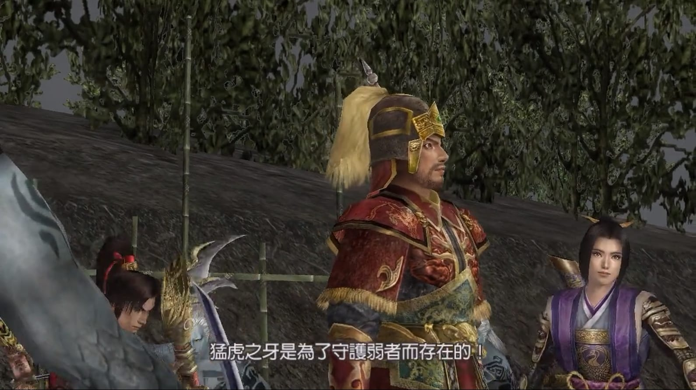
With the report going round that 'a person of rank is at the New Imperial City', Zhao Yun's army pushed east the whole way, straight at Wu Commandery. Out of nowhere Goemon cut across their path and ran off with Wei Yan's 'treasures' — gifts from Liu Bei; Wei Yan, in a fury, chased him with Xingcai all the way to Huarong Trail. The greatest thief under heaven picked up the sesame and lost the melon: down the road he dropped other 'treasures' one after another and could not rest for thinking of them. Wei Yan, as you would expect, beat down Goemon's men as he came and confiscated the loot behind him. Nobunaga had sent Okuni to watch Zhao Yun's army; she happened on this very farce and got in the way of it, and Goemon, recognising the big sister, took fright and slunk off the other road. Musashi, passing by and knowing nothing of which end was up, threw in with Goemon — then heard Wei Yan's grievance, found he had backed the wrong man, and slunk off as well. Wei Yan caught Goemon and got his 'treasures' back; the man himself he could not hold.
Warriors Orochi (the Original) — Wei Route #3 · Side Story Campaign to Pacify Jizhou
Goemon ran north and north until Nene took him. It happened that Orochi's army, long worried by Nene's ninja band that appeared and vanished at will, had found the band's main camp in Jizhou, and sent Dong Zhuo with Cao Pi and Mitsunari against it. Cao Pi lighted on Goemon, whom Nene had shut up. Cao Pi and Mitsunari had always held that a fellow like that should not be turned loose to do damage, and left him where he was. Under Nene's ninja arts the van of Orochi's army stood stock-still, and Cao Pi having no device left, turned Goemon loose — never expecting the man to see clean through Nene's art and haul out a crowd of agents working it from inside the ranks. Cao Pi and Mitsunari made an end of them, and Hua Xiong and the rest woke as out of a dream. The two beat off the enemy's van and were preparing to invest the camp; Nene, sensing the change, put off two copies of herself, and the Kunoichi broke onto the field too. Cao Pi and Mitsunari broke them both and came to the walls, where Fuma and Hanzō suddenly stood in their way and were struck down. The two beat Kiyomasa, Masanori and Nene, and took the ninja band into their own hands. Dong Zhuo then went back to Wu Commandery to hold the city.
The Kunoichi, for her part, was there because some power resisting Orochi had sent her to look; what she did will come out later.
Warriors Orochi (the Original) — Shu Route #5 Battle of Wu Commandery
Zhao Yun came to Wu Commandery under martial law, meaning with Yukimura to take the New Imperial City from two hands — himself at Moling, Yukimura at Kuaiji. The moment they were off the boats and ashore, both ran into Orochi's ambush; Zhuge Liang's planning, men said. Yukimura had been sure the commandery would be seeded with ambush everywhere, and so it was. Zhao Yun's army broke through the ambushes, broke Dong Zhuo, and got out their 'person of rank' — Yuan Shao. Zhao Yun's disappointment was such that all who heard of it wept. Zhuge Liang came out to bar him, found himself no match for Zhao Yun, and withdrew. Sun Quan saw that the whole business was a plan to draw the rebels into striking Orochi's army and to carry Yuan Shao off with them, and made it a certainty that it was Zhuge Liang; he could not stay in camp for temper and came out in person. Sun Quan declared that he fought for Wu, and Zhao Yun and Yukimura could only sigh that Sun Quan was sunk past saving. Zhao Yun took his former lord as a man under his own banner, and won Yuan Shao; Yuan Shao said he knew where Liu Bei was — and had forgotten.
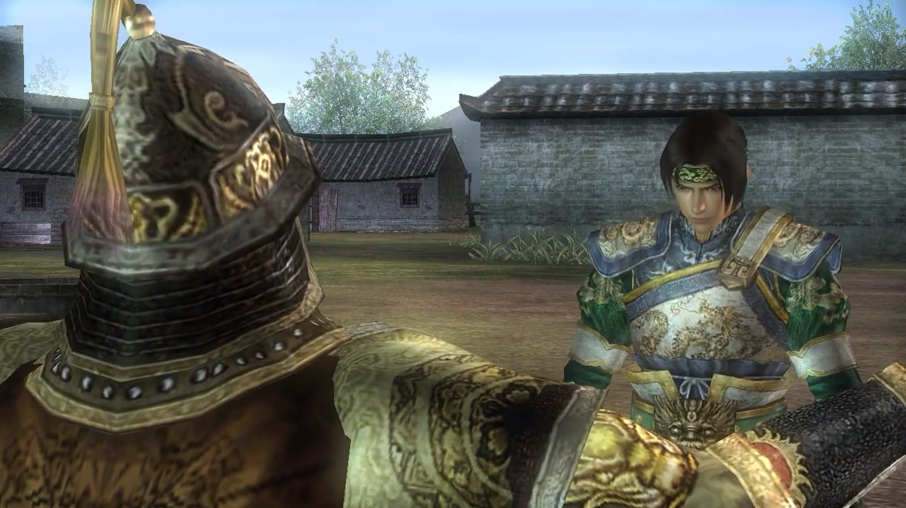
Zhao Yun split his strength into three armies — Zhao Yun, Sanada and the Southern — and went on searching for Liu Bei. At Hulao Gate he came upon Sun Ce, chased by Sima Yi, Cao Ren and Diaochan of Orochi's army. Zhao Yun put Wang Ping to draw the enemy out, and Wang Ping played Lu Xun so neatly that Xiahou Ba rose to it; Zhao Yun used that instant to sweep the troops about Sun Ce clean away, and the two generals joined hands. Zhao Yun drove off Cao Ren, and Sima Yi, grown wary, called the pursuit off. Zhou Yu, meaning to beat the many with the few, held Sun Ce back from a headlong rush and made ready for fire, sending Zhu Ran — a man mad on burning — to master the centre of the field. Sima Yi marvelled that Sun Ce did not simply come at him, and was curious what the rebels were about. Orochi's reinforcements arrived and Fuma burst onto the field; Zhao Yun beat off both. At the same moment Zhu Ran was ready, and Zhao Yun led the army back. Sima Yi put men out to sound them; Zhou Yu gave the fire, and Orochi's army burned. Sima Yi drew in his troops at once, but Zhao Yun, Sun Ce and Zhou Yu came on in pursuit and broke Sima Yi utterly. Sun Ce thanked Zhao Yun for the help; yet to free Sun Jian he meant to make a second try at Osaka Castle, and at the mention Yuan Shao remembered that Liu Bei was at Edo Castle. So Sun Ce and Zhao Yun agreed that Sun Ce would be there to help when Zhao Yun moved on Edo Castle.
Warriors Orochi (the Original) — Wei Route #3 Battle of Xiakou
Orochi required Cao Pi to join in the hunt for Sun Ce. Cao Pi said plainly that Sun Ce's revolt lacked thought behind it; Mitsunari drove the point home — were a certain someone here to revolt, it would all go far more smoothly. Da Ji kept her smile on and marked that Cao Pi could not but be harbouring designs beyond his station. Sun Quan caught Sun Ce at Xiakou but was barred by Cheng Pu; Cao Pi and Mitsunari broke Wu's captains one after another to speed the pursuit, and let Sun Quan and Sun Ce fight each other. Cao Pi waited, and waited; Sun Ce was still pinned by Sun Quan and could not get away. Da Ji arrived, saw that Sun Ce was still unfound, and let out a sigh. Sun Ce's reinforcements came up at last in sections; Sun Ce made for the boats, and Cao Pi and Mitsunari drove after him, beating off Ranmaru, Han Dang, Zhou Yu and Sun Ce in that order. Sun Ce was on the point of giving up, but Cao Pi was set on letting him go; so Sun Ce and Zhou Yu took ship south and left Xiakou behind.
But Da Ji had seen the whole of it, and asked Cao Pi why he had let Sun Ce escape. Cao Pi and Mitsunari fibbed that it was the enemy's stratagem — a shadow raised by Zhou Yu and dressed in Sun Ce's likeness. Da Ji still kept her smile on; but she was certain now that these two would raise a storm, and not far off either…
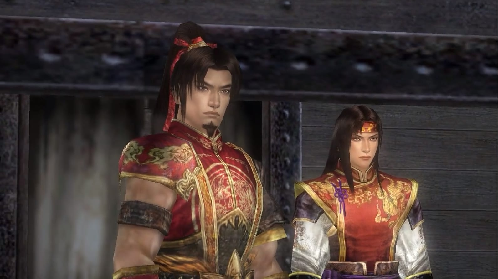
▶ Chapter 4 Grand Schemes of the Three Powers
Keeping step with Sun Ce's army, the Tokugawa army also threw off Orochi and stood independent, sending aid to the rebels wherever they were. Ieyasu and Hanzō answered an invitation to relieve Wancheng; by the time they reached it the place was one sea of fire. Ieyasu carried out of Wancheng its common folk, maids, militia, lady officials and village head, together with Yoshimoto and the Kunoichi who had cut the road for him, and drove off Pang De and Zhenji, cast down by the injustice of the war they were made to wage. Zhenji let out the news that Cao Pi lay under Da Ji's suspicion. Ieyasu took the Kunoichi with him and helped Yoshimoto out of Wancheng.
Warriors Orochi (the Original) — Shu Route #3 · Side Story Battle of Shizugatake
Yukimura, Wei Yan and Yueying — the detached column of Zhao Yun's army — came to the aid of the Hōjō, struck by Pang De and Cao Ren of Orochi's army. Hōjō morale was at its bottom and Ujimasa stood nearly on surrender. Yukimura knew that Pang De carried a great cause in his heart, and that such a man should not lead an unrighteous host into an unrighteous war. Jia Xu put troops in again and again to press the Hōjō; Yukimura's column saved them each time and set the Hōjō's will to resist burning again. Pang De watched a Hōjō army that would not lightly give up, then looked at his own sunk state, and could not keep the feeling off him. Yukimura took the Hōjō under his hand and, while Wei Yan held the enemy back, fell upon Pang De — saying plainly that Wei of today had no Way in it and was no longer ground on which a man could stand. Pang De came suddenly to himself: if Cao Wei were to be set right, it must be done from outside — and he yielded to Yukimura.
While Orochi's army wore itself out handling Nobunaga, Sun Ce and Zhao Yun, Takeda and Kenshin kept widening their ground. Cao Pi learned that the Dragon and Tiger's main camp stood at Sōga, and sent Zhang Liao to look. Zhang Liao found no main camp at all there — a mere outpost — so Cao Pi ordered him to take it with Xu Huang and Xu Chu. The three made an end of the garrison without a day's trouble, when a tremendous noise rose outside: Orochi's army was caught like soft-shell turtles in a jar, and the jar was Takeda and Kenshin. The Dragon and Tiger sent their van in on the outpost from every side, then put men to the fire. Seeing the troops they had thrown in destroyed, both came out themselves, and fell back upon the next field once beaten. Zhang Liao's column had barely lived through the Dragon and Tiger's onset when they fell to wondering who stood behind it all, pulling the strings. Then the beat of a cuju ball reached their ears — the author of the whole scheme was none other than Yoshimoto the Cuju Lord. Yoshimoto fought hard and was taken, yet Takeda and Kenshin did not pause: his plan was running true.
"Chapter 2 — Tides of Resistance"
1. Zhao Yun's jailbreak; the three Sengoku powers expand; Orochi's army strikes at Nobunaga, who has drawn the most of the eye (Original — Sengoku Route #4 · Battle of Tong Pass)
→ The person anonymous sets Zhao Yun on breaking out
→ Nobunaga meets Cao Pi, and learns that Cao Pi lies low waiting his hour
→ Cao Pi lets Huang Gai go
→ Takeda and Kenshin build their strength clear of Orochi's main force
"Chapter 3 — Two Generals' Run"
2. Nobunaga lures Sun Ce into revolt; Zhao Yun takes Yukimura and rescues Yuan Shao; Orochi's army pursues Sun Ce and moves against Zhao Yun
→ Nobunaga, with Konoe's intelligence, turns Sun Ce
→ The person anonymous — confirmed to be Zhuge Liang — sets Zhao Yun on Yuan Shao's rescue
→ Cao Pi lets Sun Ce go
→ Yoshimoto keeps off the edge of the blade and allies with the Dragon and Tiger
3. The Kunoichi's scouting (Original — Wei Route #3 · Side Story · Campaign to Pacify Jizhou)
→ Yoshimoto learns that Orochi's army is run off its feet by Sun Ce and Zhao Yun
→ Yoshimoto sends out the call to relieve Wancheng
→ Yoshimoto lets out word that Orochi is moving on the Hōjō at Shizugatake
"Chapter 4 — Grand Schemes of the Three Powers"
4. The battles of Wancheng and Shizugatake
→ Yoshimoto puts the Kunoichi in Ieyasu's hands as a fighting force
→ Yukimura turns Pang De, a great captain of Orochi's army, and wakes the Hōjō's will to fight
5. The battle of Sōga
→ The Dragon and Tiger spend the outpost to draw Orochi's eye and make ready for the decisive battle; Yoshimoto retires
6. The decisive battle with Orochi's army, now at hand
→ It will grind away Orochi's strength and prepare the way for the "great upheaval" to come
In the first phase it was Nobunaga who drove the war from the open; in the middle phase it was Yoshimoto who drove it from the shadows. His work done, Yoshimoto steps back and hands the part of the protagonist to the three Sengoku powers.
Warriors Orochi (the Original) — Sengoku Route #5 Battle of Guandu
Orochi judged this his chance to make an end of the Dragon and Tiger at a blow. He massed the armies of Cao Pi, Cao Ren and Sun Quan, and at Nagashino he met Takeda and Kenshin and gave battle. Nobunaga, hearing of it, saw the rare opening to fall on Orochi's rear, made all haste to order his columns and march, and with Zhang Jue made a bolt on Guandu, Orochi's great stronghold — feint east, strike west. The keepers of Guandu were Da Ji, Daqiao and Diaochan; Nobunaga, Mitsunari and Hideyoshi drove straight through them, and Baima, Yanjin and Wuchao fell as a matter of course. Halfway about Ling Tong came up in reinforcement, and one more great captain stood added to the Oda. With only Da Ji left of the enemy, Nobunaga had Huang Zhong withdraw from the field first, broke Da Ji and took Guandu. On the other hand, for everything they could do, Kenshin and Takeda could not withstand the fury of the demon host; they were heavily beaten and driven into ground of death. Huang Zhong reached Nagashino at the last minute and plucked Takeda and Kenshin out of the confusion. The talons of the Dragon and Tiger had sunk deep into Orochi's army.
Warriors Orochi (the Original) — Sengoku Route #6 Battle of Fan Castle
Orochi meant his main force to take back Guandu, lost to Nobunaga. But the pursuit at Xiakou and the great battle at Nagashino had worn Orochi's army to faggedness, and the long hard march after Nobunaga left it at the end of its strength; Nobunaga drew up at Fan Castle to wait on them. Cao Pi came in and straightway drowned the Oda army with water — but Hideyoshi had his answer ready and sent Ling Tong to shut the watergates. Sun Quan's men groaned and grumbled that he would not throw off Orochi. Nobunaga swept the enemy's van, whose will to fight was gone, broke Sun Quan and had him withdraw from the field first. Ling Tong beat Yu Jin and Zhang He and shut the gates. The water went down, the Oda reinforcements came up, and the weight of the attack turned: Nobunaga drove on Cao Pi's main camp. Xiahou Dun came out to take Nobunaga down, meaning to hew off a way of the hegemon that could never sit with Cao Cao, and Nobunaga beat him. Nobunaga held Xiahou Dun prisoner for the while and went straight at Cao Pi. The two met again, and Nobunaga said plainly that Cao Pi was not after his head. Cao Pi, fought against a swelling Oda host, had proof enough of Nobunaga's strength and drew off beaten. Knowing that Xiahou Dun bowed to nothing, Nobunaga advised him to look elsewhere for a lord to serve — Cao Pi, the young edge of the hegemon's way. Thus Yoshimoto's scheme came wholly off, and Cao Pi's own object was gained: through one operation after another, Orochi's strength was turned or drained, wounded within and without, and far the weaker man.
Warriors Orochi (the Original) — Sengoku Route #7 · Side StoryBattle of Kanegasaki
Nobunaga, Zhao Yun, Sun Ce... bit by bit the rebels beat Orochi's armies back, and Orochi's ground shrank. Even as Nobunaga fell on Fan Castle, Orochi sent Masamune and Zhang He against Kanegasaki, the key to Nobunaga's rear. Huang Zhong and Okuni led the about-face to Kanegasaki's defence and ran into a host come down upon them. Huang Zhong had no choice but to put a rider through for help; Masamune, though, ordered a general assault and seeded the road the rider must take with ambush. Huang Zhong shielded the rider and let Okuni take the host head-on. Huang Zhong carried the rider through ambush after ambush and ran full upon Lü Bu — and Tadatsugu was come as well, so the two met neck and neck: the strongest against the strongest, no fight, no knowing of each other. Huang Zhong and Tadatsugu turned Lü Bu together, sent the rider on his way, and went straight back to Okuni's rescue. Before long Xiaoqiao brought up reinforcements, and with Huang Zhong and Okuni counterattacked and drove Masamune off.
All was now made ready; Cao Pi too would move. He would set the one piece on the board that mattered beyond all others, and drive the war against Orochi to its climax…
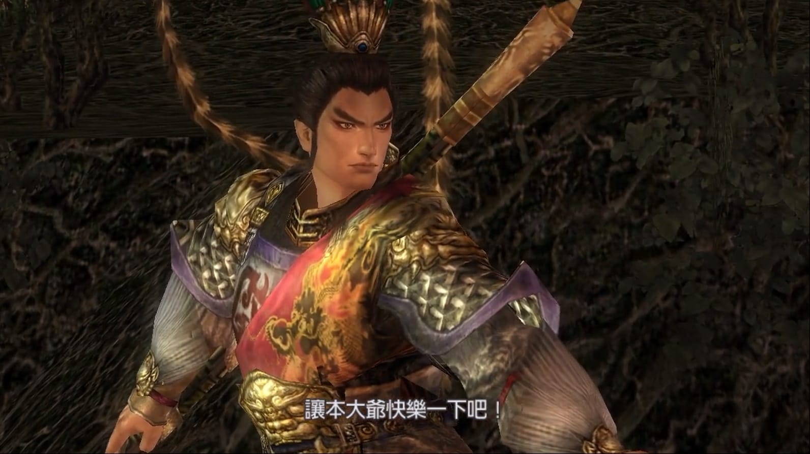
▶ Chapter 5 Sun Wu Musters
To drain Orochi's strength from the inside was exactly Cao Pi's plan. Sleeping on brushwood and tasting gall, Cao Pi plotted the overturn; to make it beyond risk he needed the old captains of Cao Wei — the two Xiahou. It chanced that Xiahou Dun, Xiahou Yuan and Pang Tong were drawn up at Yiling (Yiling being the ground where Cao Cao of old was "slain"; see Original — Orochi Route #6 · Battle of Yiling), and Cao Pi, Mitsunari, Xu Chu, Sun Shangxiang and Inahime came under the name of pacification, meaning to take them under their banner. Xiahou Dun, for his part, meant to weigh Cao Pi's measure in this very battle. Cao Pi attacked on two roads, Wei and Wu; Pang Tong set the two Xiahou on the wings likewise. While Sun Shangxiang doubted aloud how true Cao Pi's "loyalty" to Orochi was, Cao Pi was thinking only of how to win the two Xiahou. He beat them the first time and could not yet bow them — so he let the prey go in order to take it, and Pang Tong had seen through him. Pang Tong fell back into the Eight Formations and, seeing Cao Pi come on, loosed his strange art: the Split Body. Cao Pi baited him to serve beneath him; Pang Tong sounded him — beneath that Serpent, Orochi? Cao Pi said it plain: beneath Cao Pi. Pang Tong acknowledged the measure of the man and turned his spear. Cao Pi beat the two Xiahou again and baited them likewise; Xiahou Dun still could not read his mind. Cao Pi said out flat the thing he meant to do — the reviving of Cao Wei. Understanding came to Xiahou Dun all at once: Nobunaga's word had been true, and Cao Pi was one to whom force might be entrusted. Xiahou Yuan, seeing such spirit, took it for certain that a scheme lay behind it. Cao Pi, with the old captains and the Fledgling Phoenix both on his side, was well pleased.
With that Cao Pi set the revolt in motion, putting about the rumour that "Sun Jian is confined at Odawara Castle" — meaning to win the bandit Huang Gai. And Da Ji, too, had seen that Cao Pi stood on the point of revolt…
Warriors Orochi (the Original) — Shu Route #6 · Side Story Battle of the Tedorigawa
Of the strong but scattered rebel powers there remained by then only Zhao Yun of Shu, Sun Ce of Wu and Oda of Owari. Cao Pi, needing ready his rising, left Mitsunari to humour Da Ji in the suppression of the rebels. Orochi's army had lost men and captains in plenty, so this time Orochi sent Lü Bu along with them, to make the rebel business certain. Mitsunari, with Lü Bu, Zhang He, Inahime and the rest, met Musashi, Munenori and the company of swordsmen at the Tedorigawa and joined battle. As it happened Meng Huo and Zhurong — detached of Zhao Yun's army and searching the Tedorigawa for Liu Bei — came upon the swordsmen hard pressed by Orochi's army and went in to help; at Funao Castle they gripped Lü Bu hard and furthered Musashi to open the Tedorigawa's watergates, so that Musashi drowned seven armies. Mitsunari too had his answer ready, and his reinforcements came up; the Southern men helped Musashi to cut through, and Mitsunari was beaten off. Musashi led the swordsmen into Zhao Yun's army.
Sun Ce's work fell an inch short of the crown of the mound: the rescue of Sun Jian failed, Sun Jian was taken again, and Orochi set Sun Quan to hunt the "traitor" Sun Ce. Through Hulao Gate and Xiakou Sun Ce ran and wound about until he came to Sekigahara, where Sun Quan, Sun Shangxiang, Daqiao and Inahime ringed him round. Sun Quan and Sun Shangxiang held that Sun Wu should lie low and gather its strength, and that an early revolt like Sun Ce's would bring calamity on their father alone. It was not that Sun Ce had not thought of it; he wanted only Sun Jian free, and the sooner the better. On the one side, endurance to survive; on the other, resistance to rescue — the two, irreconcilable, joined a great battle at Sekigahara. Inahime led the assault twice over. Sun Ce cared nothing for winning or losing, only for his sister; and Inahime, feeling the force of that bond, was won by Sun Ce's unwavering heart and went about persuading Sun Shangxiang. Sun Shangxiang and Daqiao came on with a great host; Sun Shangxiang, stubborn, would meet Sun Ce herself, and was beaten. After thrust upon thrust Sun Quan and Zhou Tai arrived and sought to cut Sun Ce down in the field, and could not. Sun Ce gave Sun Shangxiang his word that he would free their father and Sun Quan too — and Sun Shangxiang and Inahime both joined Sun Ce's army.
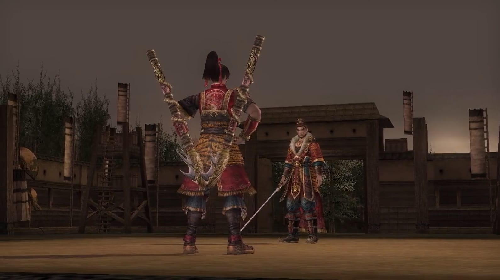
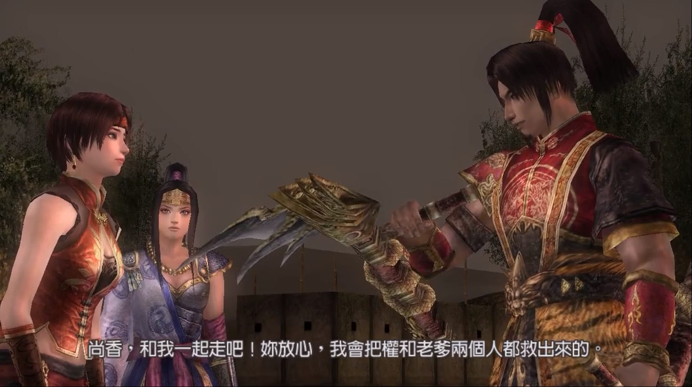
Warriors Orochi (the Original) — Wu Route #5 · Side Story Battle of the AnegawaDaqiao was found out as Sun Ce's abettor, and Orochi counted her a "traitor" too; at the Anegawa, Dong Zhuo and Sima Yi closed around her. Ieyasu held the main camp while Sun Ce made straight for where Daqiao stood; Sima Yi put troops across him and laid Zhang He as ambush. Sun Ce, furious past bearing, swept the enemy and brought Daqiao out, and the two swore to be together always. Zhou Fang's reinforcements came up, Sun Ce set Ieyasu in motion and the general assault began; Dong Zhuo and Sima Yi were beaten, and Sun Ce came home from the field with the day.
Warriors Orochi (the Original) — Wu Route #6 Battle of Hefei
Orochi sent Sun Quan and Keiji; Cao Pi sent Cao Ren and Zhenji to make the answer, and Sun Quan brought an army down on Sun Ce as he lay at Hefei. In the brothers' fighting Ranmaru could find none of an elder brother's grief in Sun Ce — only pleasure. Zhou Yu had seen it already: that Sun Ce and Sun Quan raised each other by meeting each other, and that this was Sun Ce's way of gathering strength and restoring Sun Wu. Sun Ce stood as bait outside Hefei and drew Keiji and Zhenji into the town; Lü Meng shut the gates and loosed the ambush, and Sun Quan lost two great captains in a stroke. Cao Ren moved out then upon the islet in midstream; on Lü Meng's advice Sun Ce carried away the bridges at either end, and Cao Ren and his men were pent upon the islet, able neither to advance nor to retire. Sun Quan, driven to the wall, ordered both wings forward. Sun Ce had the enemy's main camp before his eyes and went straight for Sun Quan; Zhou Tai raced back to the camp to hold him. Sun Quan roared that he would pass his brother, and was beaten for it still. Zhou Tai burned his boats, set his horse across Sun Ce's path and put Sun Quan away on the saddle fleeing. Hanzō meant to stop Zhou Tai, but Zhou Tai's will to fight was gone; he surrendered and had no choice but to throw himself on Sun Ce. For ever since Sun Ce's flight and the failure at Sun Jian's rescue, Sun Jian had been Orochi's hostage again — and where the tiger is held, the tiger's cub must be commanded; Sun Quan was required to buy his father's freedom with the merit of battle. After failure after failure his credit was spent: surrender, and Orochi would kill Sun Jian on the spot; lose and flee, and Orochi might spare Sun Jian for a while, but would call Sun Quan to account. Yet what came about passed all their imagining…
Sun Ce's flight, and defeat after defeat in the hunt for him… Orochi called Sun Quan to account and shut him under guard. Yet beyond all that — the string of losses, the sparks of revolt that caught brighter and brighter — Orochi was cheered at heart. The captains of the human world were rising above the Serpent. To fire the rebels' will yet harder, Orochi this time meant to put Sun Quan to the sword together with the hostage Sun Jian, with Dong Zhuo and Da Ji to see it done. Word came to Sun Ce, and he drove his army hard for Komaki-Nagakute. Hanzō had already gone, secretly by the little road Sun Shangxiang told him of, to free Sun Quan and Sun Jian; to leave no trace he made all speed back to camp — yet the two were run down for all that. To join them Sun Ce must fight a great host at full stretch, and among that host were old servants of Sun Wu. Cheng Pu, Jiang Qin and Han Dang offered to lead, and drew the enemy off with them; Sun Ce, Sun Shangxiang, Hanzō and the rest came around by the southern track and unwound Orochi's ring about Sun Jian and Sun Quan. The Wu captains inside Orochi's army revolted on the spot, and Sun Wu stood gathered once more. By Sun Jian's order the defence became attack, and Sun Ce led the army on, breaking Dong Zhuo and driving Da Ji off, drowned in the joy of a family met again.
One wave not done, another up. Da Ji, who had never thought the planned "execution" would prove the very hour of Wu's complete independence, withdrew to Odawara Castle to make ready against the "great upheaval" to come…
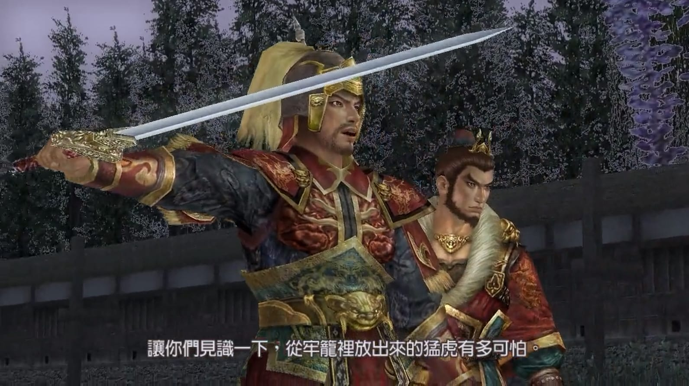
▶ Chapter 6 Cao Wei Revived
The enemy stood at Odawara Castle itself…! While Sun Wu's restoration was still new, Cao Pi brought a great army into Da Ji's own seat — Odawara Castle. Mitsunari pretended not to know that Cao Pi meant to rise, and sounded him; Cao Pi, on his side, sounded whether Mitsunari too carried a great ambition. In the talk the two made sure of the purpose of this garrison, and went up into the keep where Da Ji lay. The golden cicada slips its shell: Da Ji had it plotted beforehand, so Cao Pi and Mitsunari found an empty city — and Odawara ringed about by a sea of fire. Da Ji fell on Cao Pi's army from north and south; to bring his outer northern force in, Cao Pi hewed his way out toward the north. Certain of the demons, thinking Da Ji lost, fled with their heads in their hands. Huang Gai, drawn on by the rumour, reached Odawara; Mitsunari joined him and they moved out. Cao Pi broke the phantom of Cao Cao and brought his outer troops in; Huang Gai was spun round by the phantom of Sun Jian and fell into confusion. Mitsunari broke the phantom of Sun Jian and cut Huang Gai's fancy short, and Huang Gai declared he would fight shoulder to shoulder with Cao Pi's army. Da Ji, her body-made phantoms smashed to nothing, was seized with great distaste. Cao Pi and Mitsunari broke the last of Da Ji's reinforcements and took Da Ji alive. Cao Pi required her to further the war against Orochi; Da Ji made a fair show of agreeing.
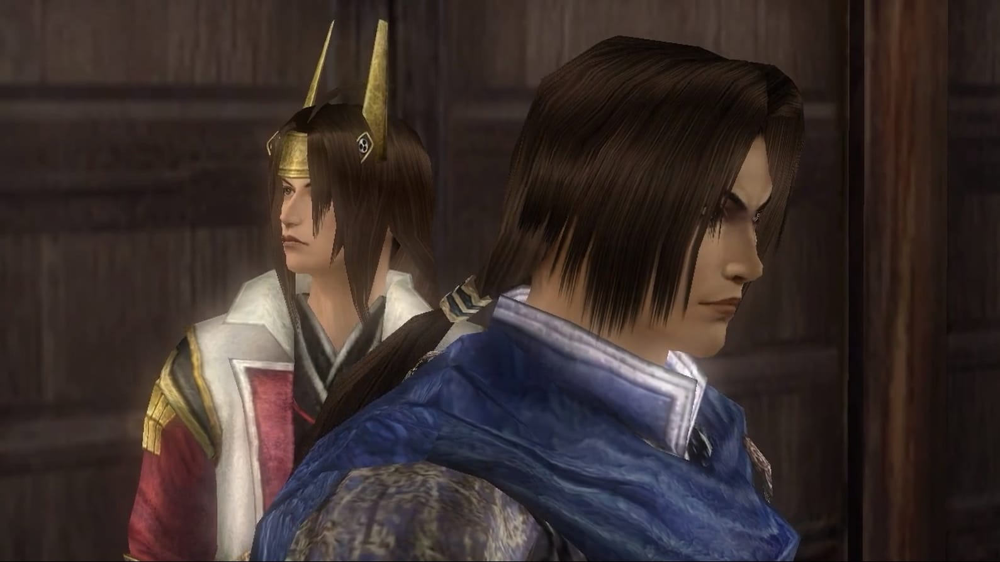
Warriors Orochi (the Original) — Wei Route #5 · Side Story Breakthrough of the Five GatesDiaochan, who followed at Lü Bu's side, wished him free of Orochi, and meant to turn her spear to the rebels — to wake Lü Bu by the overthrowing of Orochi. Dong Zhuo, hearing of it, pursued her like a man deranged. Mitsunari saw the thing come about and furthered Diaochan's flight, beating back Dong Zhuo burnt with desire and Lü Bu who struck with a held blade. In the end Lü Bu let Diaochan go, and stood on Orochi's side waiting the day they should meet again.
Cao Pi declared Cao Wei revived. For the overthrowing of Orochi he stretched his power outward and fell upon Nagamasa at Chencang. The Azai knew nothing of what Cao Pi was made of; they ringed the town against the Wei army and sent Oichi out to meet the Asakura's relief. Xiahou Dun came up to the walls while Cao Pi, by a side road, swung east and took the eastern quarter; Mitsunari came west at Oichi to keep the reinforcements from arriving. Gan Ning put out from the inner town and met Cao Pi, and could not match him. The great host of Cao Wei entered the town and ringed Nagamasa about, and Nagamasa fought to the last and was beaten. Nagamasa, Oichi and Gan Ning made account to die with the thing unfinished — and Cao Pi took them instead, and required their hands in the war against Orochi.
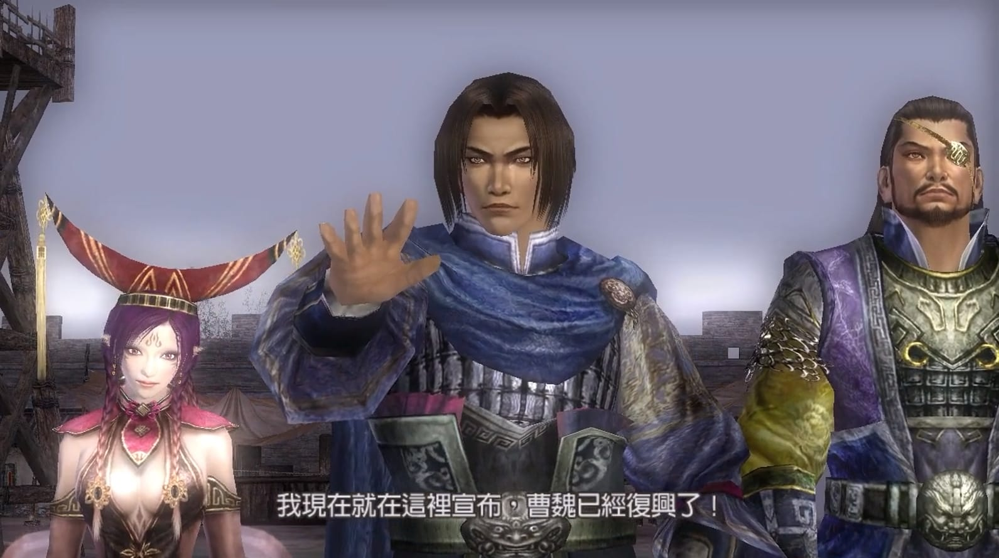
Warriors Orochi (the Original) — Wei Route #6 · Side Story Battle of LiangzhouAnswering Cao Pi's declaration of a revived Cao Wei, Zhenji rose in arms at Liangzhou. Orochi set Dong Zhuo against her. Cao Pi, hearing it, marched west with Xiahou Yuan to her relief. Fuma entered Orochi's army to confound the war. Cao Pi joined hands with Zhenji, and Zhenji felt a strange breath coming out of the enemy's fort: Fuma's conjurers were at their work, strengthening Orochi's men, calling up phantom soldiers — and a phantom of Cao Pi. Xiahou Yuan's hair stood up at enemies who would not die however he cut them down, and Zhenji was rooted to the ground by the phantom Cao Pi's "let me kill you". Cao Pi hunted the conjurers out and made an end of them; the arts went up like smoke and the soldiers came back to themselves. Then he brought the army on the main camp of Dong Zhuo and Fuma and beat them.
Warriors Orochi (the Original) — Shu Route #7 · Side Story Battle of Xiliang
With the rise at Liangzhou first, the people began flocking out of Orochi's ground in numbers. Dong Zhuo announced sore punishment for such as fled, and meant to fall upon the refugees of Xiliang to make an example of them all. Yukimura, hearing it, counted Dong Zhuo mad and without the Way, and hurried his army to Jiuyuan in Xiliang, where he met his uncle Nobutsuna and they stood upon the enemy together. Yukimura led the people away to safety while Dong Zhuo's pursuers pressed hard at them, and Lü Bu and Mizuchi came to bar the road as well. Tadatsugu appeared again, and the strongest of the Three Kingdoms met the strongest of Sengoku in battle once more. Yukimura furthered Tadatsugu, drove off Lü Bu, and got the people clean away. Dong Zhuo chafed and foamed, and raged at his own nothing.
Cao Pi began the offensive against Orochi, driving on the key of Yamazaki. Waiting for him at Yamazaki were Dong Zhuo the tyrant, Zhuge Liang the great strategist, and Sima Yi. Mitsunari and Cao Pi itched at the dream-couple drawn against them, and Cao Pi had a half-sense that his father-king Cao Cao would show himself. Orochi's men had great cannon planted on Mt. Tennō, with Zhuge Liang to hold them; so Cao Pi set a bait against the eastern wing and, with Mitsunari, went up the mountain from the west at Zhuge Liang to win the command of the guns. Cao Pi and Zhuge Liang exchanged the talk of old acquaintances; Zhuge Liang loosed his hidden archers, traded blow for blow with Cao Pi and was beaten off, and Cao Pi took Mt. Tennō and turned the guns back upon Orochi's army. Sima Yi brought an army to retake the mountain; Cao Pi and Mitsunari met him, yet Sima Yi feinted east and struck west, and the mountain was lost. Cao Pi had driven off Sima Yi when, of a sudden, Da Ji revolted — timing her stroke with Dong Zhuo's ambush to fall on the Wei main camp. Cao Pi and Mitsunari could only turn back and bar her. As the two were hard put by the density of the enemy's onset, Cao Cao and Dian Wei came up, joined Cao Pi, and fell on Orochi's army to raise the press about him. Cao Pi and Mitsunari cut a reeking way out and brought Dong Zhuo down. Cao Cao praised the "hegemon's way" in Cao Pi; Cao Pi held him for the "wall of the hegemon's way" — his own way not yet past it. Cao Cao left the command of Cao Wei's army still in Cao Pi's hands.
After Odawara had been struck by Cao Pi, Mitsunari and Huang Gai but a few men remained in it, Nobunaga and Huang Zhong came to Odawara to make the cleaning. Those few were no more than a screen Da Ji had set to draw the rebels in. Zhuge Liang and Sima Yi, strategists such as the age seldom breeds, brought their armies up; the demons outside the walls ran off, meaning to lure the Oda army in among the enemy's forts — but Nobunaga saw through it and put the demons down with all speed. Thus Sima Yi's scheme failed, his hidden men came out into the open, and it was the Oda army that had ringed Odawara which found itself ringed about. Nobunaga brought the army down upon the two wings and rode alone into the main camp — to find the main camp empty of a single man, and the "empty city" played to the full. Zhuge Liang's verdict upon Nobunaga: to enter alone on horseback was to bring the least hurt on himself; he owned that the ruse had failed. Nobunaga, having swept the field, drove straight on to the true main camp of the enemy, drew the ring about Zhuge Liang and Sima Yi, exchanged names with them, and fell to. Strategists, naturally, could not close with a man bred to arms; both were beaten. Sima Yi, seeing that Nobunaga had wisdom and courage alike and answered each move as it came, judged him a vessel great enough to have one's wit lodged in, and yielded to Nobunaga. Hideyoshi brought an army to the relief and found Odawara wholly Nobunaga's already.
Warriors Orochi (the Original) — Sengoku Route #7 Battle of Wuzhangyuan
Sun Ce and Cao Pi, working within and without, had cut Orochi's strength down; the schemes of Nobunaga and Cao Pi were both achieved, and nothing remained but the stroke at Orochi. And Orochi, perceiving that Nobunaga was nearing the completion of an army joined across all powers, sent Da Ji, Masamune and Keiji against him. With the relieving hosts of Takeda and Kenshin at hand, Nobunaga beat off Orochi's army. The war against Orochi came now at last to its closing position…
▶ Chapter 7 The Fourth Stroke at the Serpent
Sun Ce learned that Orochi's army would move against Jizhou, where the spirit airs gathered; fearing the altar might fall into the demons' hands and calamity follow, he sent Lü Meng, Konoe and Taishi Ci with an army into Jizhou. Konoe found the altar already occupied by Tadatsugu, and thought the thing passing strange — was Tadatsugu become Orochi's man as well? Lü Meng, Konoe and Taishi Ci divided on two roads against Tadatsugu, and found no evil heart in him at all. Under Tadatsugu's battle-shout the Honda host's spirit rose high, and the three joined hands to beat him off. Tadatsugu gave ground, made himself whole again and came back, and the three beat him off a second time. Tadatsugu thought to himself: beaten by Orochi's army — what a shame…! Konoe made haste to explain that the thing was not as he took it. Of a sudden Dong Zhuo and Masamune came up with an army, and Dong Zhuo told out his own plot: the rumour that Orochi's army would take Jizhou, drawn the rebels onto Tadatsugu, so that when both sides had bled each other white he might take the altar at one stroke. Tadatsugu, seeing it, knew he had fought the wrong men, leapt at once to Wu's side and gave his orders to the Honda. Dong Zhuo would have the altar by force and set Masamune to a hard assault; Taishi Ci and the Honda held him. Lü Meng and Konoe fell on Dong Zhuo and, joined by Tadatsugu come in at the rush, beat him down. By Lü Meng's direction Tadatsugu came home at last under the Tokugawa's name.
Warriors Orochi (the Original) — Wei Route #7 · Side Story Contest for Nanzhong
Warriors Orochi (the Original) — Wei Route #8 · Side Story Battle of Hefei New Castle
The Wei army fell on Orochi's holdings everywhere and, little by little, shared the world with Orochi. Learning that Cao Cao had shown himself, Orochi, Da Ji and Lü Bu — meaning to crush Wei in its rising — gathered a great host at Hefei New Castle. Cao Cao marched against them in person, while Cao Pi sent Nagamasa, Oichi and Gan Ning to take Nanzhong, now held by Orochi's army since Meng Huo's departure.
Cao Cao took the outer gates on three sides, put the main force and the ram home at the front, and sent Dian Wei with a detached column west to make a surprise — where he ran head on into Keiji. In the event the ram broke the inner gate, the westward track was carried likewise, and Cao Cao took that track to fall on Orochi by surprise. Da Ji, finding the Wei main camp empty of men, meant to fire it; Sun Ce's water force came suddenly to the rescue and Da Ji gave it up. Cao Cao and Dian Wei joined hands and went hard at Lü Bu; Lü Bu, beaten off, went west to Masamune's side in search of a field.
Nagamasa, for his part, found the Honda and Masamune of Orochi's army already at grips; he put Gan Ning to check Masamune and went with Oichi to the rescue, and Tadatsugu came up and the two armies made one. Tadatsugu's one great shout brought even the demons over. Lü Bu arrived, furious that Nanzhong was not yet taken, and fell upon the main camp — where Tadatsugu stood him off.
Cao Cao brought the army on Da Ji and Orochi. Orochi, having seen what force men under trial are driven to, invited the Wei army to a decisive battle, and sent Dong Zhuo to Nanzhong to call Masamune and Lü Bu back to Koshi Castle and make ready for the great battle.
Warriors Orochi (the Original) — Wei Route #8 Battle of Koshi Castle (Wei)
The Wei army followed the vine to the melon and came to Koshi Castle, the Serpent's nest that no man knew. At Koshi, with their blood on fire, sat Orochi, Da Ji, Lü Bu, Keiji and Masamune. Before Cao Cao and before Orochi Cao Pi would show his hegemon's way: he took the command with his own hands and came in by the south-east fort. Knowing what the flame-cannon could do, he required every army to take the guns set about the outer ground, drove off Keiji, Masamune and Da Ji, and bombarded Koshi Castle. Orochi took the defiance, let down the drawbridge, and Cao Pi brought a great host rolling in; Lü Bu was beaten off, and Orochi himself was brought down at last.
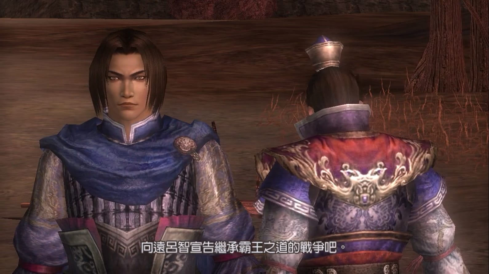
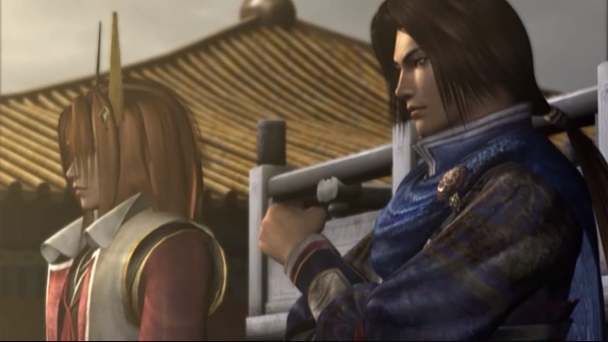
Orochi, having seen the strength of Cao Wei, was right well pleased and looked for more of the strong of humankind to come against him. He sent Da Ji, Lü Bu and Masamune to gather a great host at Chibi; Ieyasu and Konoe brought an army to take them on and, with Lu Xun come in Nobunaga's stead, burned Chibi.
Warriors Orochi (the Original) — Shu Route #5 · Side Story Battle of Jieting
Orochi thought it still not enough, and sent Masamune to goad Zhao Yun's army. Masamune drew up at Jieting and summoned Zhao Yun to come over. Magoichi Saika, who stood in Zhao Yun's army, was Masamune's old acquaintance; he took Xingcai and Zhurong and marched. Reading Masamune's posting, Magoichi set Xingcai and Zhurong on the two wings — but the wings were heavy with men and could not get forward, so Magoichi rode alone into the centre and offered himself as bait. Not knowing what the fellow had up his sleeve, Masamune set the wing men to close around him; the rest followed the crowd, and Magoichi was ringed so tight that not a drop of water could get out. Masamune played the man's own game and threw in even the troops before his camp. Thus all his eye was for Magoichi — until a great noise rose on either flank and he found that he, too, was ringed about by beauties. The two women were no slouches with their hands; Masamune was beaten and yielded, and so Magoichi took Masamune into the pay of the revolt and set him to work upon the war against Orochi.
Warriors Orochi (the Original) — Shu Route #7 Battle of Edo Castle
For Liu Bei's rescue, Zhao Yun came to the farmed-about Edo Castle with Yukimura and Magoichi, and found Shu captains inside it all, directed by Ma Su out of the little keep. Zhao Yun put Ma Su down, searched the little keep through and got nothing, and moved on the great keep. Sun Ce came as promised and furthered Zhao Yun to clean the north of the castle. Zhang Fei made one man hold a pass and fought Zhao Yun mightily, and was beaten by his conviction. Zhao Yun entered the great keep and searched without ceasing, finding only Guan Yu — and fought him and beat him. Then Da Ji and Zhuge Liang were come; Zhuge Liang set the great keep alight and put demons about Zhao Yun's army inside the walls. Zhao Yun got out of the keep and agreed with Sun Ce that they would take Da Ji and have the whole thing out of her; so, with Sun Ce holding the field, Zhao Yun broke through the demons' barring and came before Zhuge Liang. Zhao Yun put him to the question; Zhuge Liang kept silence, traded a few strokes and gave ground, and Da Ji met the fight. Zhao Yun cut Da Ji to pieces. Zhuge Liang counselled Da Ji to retreat and sealed her up within a membrane of light — and Da Ji thought that this 'Couchant Dragon' knew indeed how to endure, to rebel only now. Zhuge Liang pressed Da Ji for the place where Liu Bei lay. She consented, and would lead them. Zhuge Liang's 'saving of the country by a side road' came at last to its end. After the fight Guan Yu still feared that a betrayal of Orochi would cost Liu Bei his life; but Zhuge Liang eased him of it, and he fell in with Zhao Yun's party. From that hour the army of Shu stood recombined.
Warriors Orochi (the Original) — Shu Route #8 · Side Story Battle of Mikatagahara
Zhao Yun and Zhuge Liang followed Da Ji toward the ground where Liu Bei was held; Guan Yu and Zhang Fei, to wipe off the shame of what had passed, swept Orochi's army from the road — and at Mikatagahara met Dong Zhuo and Lü Bu, sent out by Orochi. Dong Zhuo came at them from Hamamatsu Castle in the south, so Guan Yu held the south while he and Zhang Fei struck the north on two roads, took the enemy's kitchens and cut their grain road. While Dong Zhuo's army was still locked in the south, Guan Yu and Zhang Fei had already hewn their way to Hamamatsu: two heroes against Lü Bu, and Zuo Ci came in to help as well. Past Lü Bu, the two beat Dong Zhuo down and joined hands with the main body.
Warriors Orochi (the Original) — Shu Route #8 Battle of Koshi Castle (Shu)
In the event, the ground Da Ji brought the army of Shu to was no other than Koshi Castle, the city of Orochi. At Koshi sat Orochi, Lü Bu and Keiji. Da Ji flung off the holds of Zhao Yun and Yukimura and flew back inside the walls, and took up the strategian's bout with Zhuge Liang. Shu came in by the north-west fort. Da Ji put out her phantom soldiers; Zhuge Liang sent men at the conjurers. Da Ji fired the flame-cannon on Shu's army; Zhuge Liang sent men to take the flame-cannon. Da Ji set Lü Bu and Keiji in the field; Zhuge Liang sent men before to draw them off and parted the two, so that Lü Bu and Keiji, fighting at a pinch, were beaten one after the other — Keiji even took to his heels and was gone far. Zhuge Liang taunted Da Ji; Da Ji, hot with shame and rage, let down the drawbridge and met it herself. Zhuge Liang, Zhao Yun and Yukimura brought a great host rolling in, and after Da Ji was beaten off they found Orochi holding 'Liu Bei'. Zhuge Liang gave his feather fan a wave at 'Liu Bei', and 'Liu Bei' showed her true shape: it was Da Ji. Orochi scoffed at the childish love of lord and subject in the army of Shu — and was brought down all the same by an army led to his door by the will of the very lord it had come to free. Behind Orochi waited the reward prepared for Shu at the end of their road: Liu Bei. The army of Shu was gathered at last; Liu Bei gave them his thanks, and every face about him wore the look of happiness…
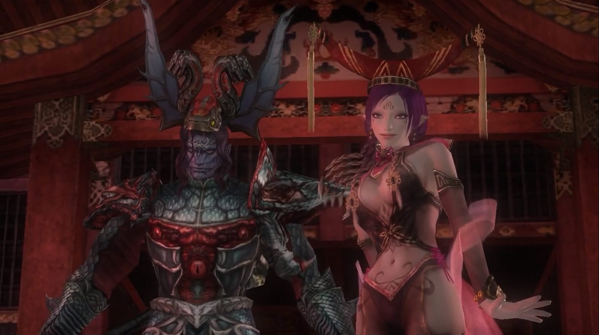
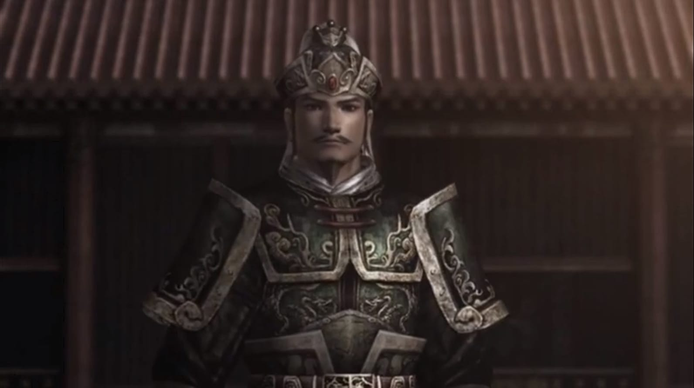
Keiji — 'self-styled friend of Orochi', gone out of Koshi Castle — found that the Wei army, the Shu army and Keiji himself together were not enough to fill Orochi's emptiness, and meant to take the field alongside the army of Wu. So he wrote and appointed the rebels a meeting at Osaka Bay. The challenge came to Sun Ce; Lü Meng took an interest in the thing and rode alone to the meeting. Keiji said plainly that if Lü Meng could bring his whole army to the door of his camp, he would fight him. So, holding Keiji's onset with one hand, Lü Meng beat the great drum for signal, and won the help of Zhu Zhi, Ieyasu, Zhou Tai, Inahime, Hanzō and Yoshimoto. When Lü Meng stood with the whole army before the camp, Keiji opened his gates and fought him hard — and, conquered by the bond of Sun Wu, came over to the army of Wu.
Warriors Orochi (the Original) — Wu Route #8 Battle of Koshi Castle (Wu)
By Keiji's direction the army of Wu came to Koshi Castle, the demon king's seat. At Koshi sat Orochi, Da Ji, Lü Bu and Dong Zhuo. The father and sons of Sun Wu set their challenge against Orochi and came in by the south-west fort: Sun Ce mastered the flame-cannon, Sun Shangxiang fell upon Dong Zhuo. But Sun Shangxiang was taken on the spot, and Wu fell straight at Dong Zhuo to win her back. Da Ji put her men out at the chance against Wu's main camp; Wu turned about, barred them and beat Da Ji off. Advancing on, Wu fought Lü Bu great and beat him off; then Orochi let down the drawbridge, and Sun Jian, Sun Ce, Sun Quan and Sun Shangxiang brought a great host rolling in and made an end of Orochi. Such is the power of the kin-bond of Sun Wu.
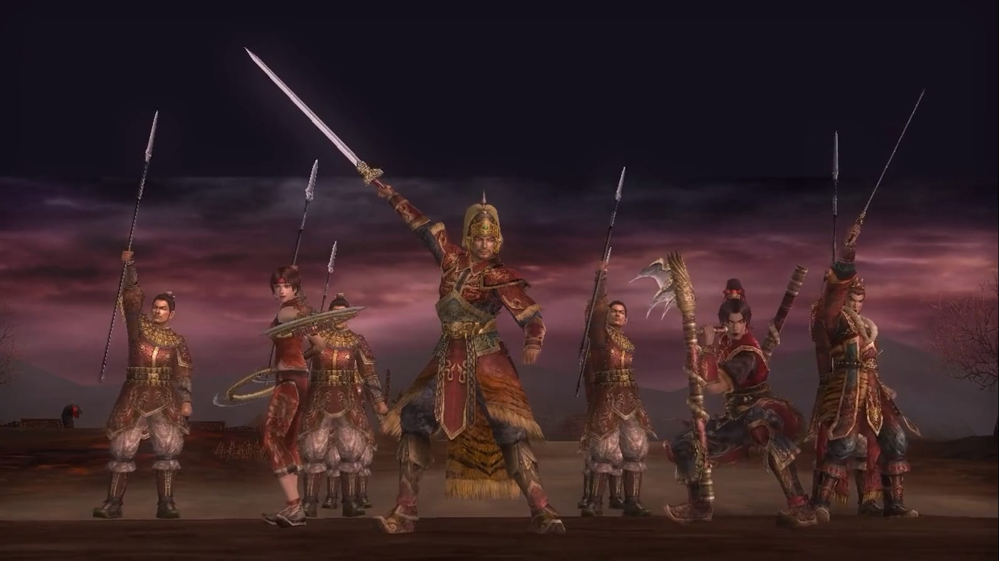
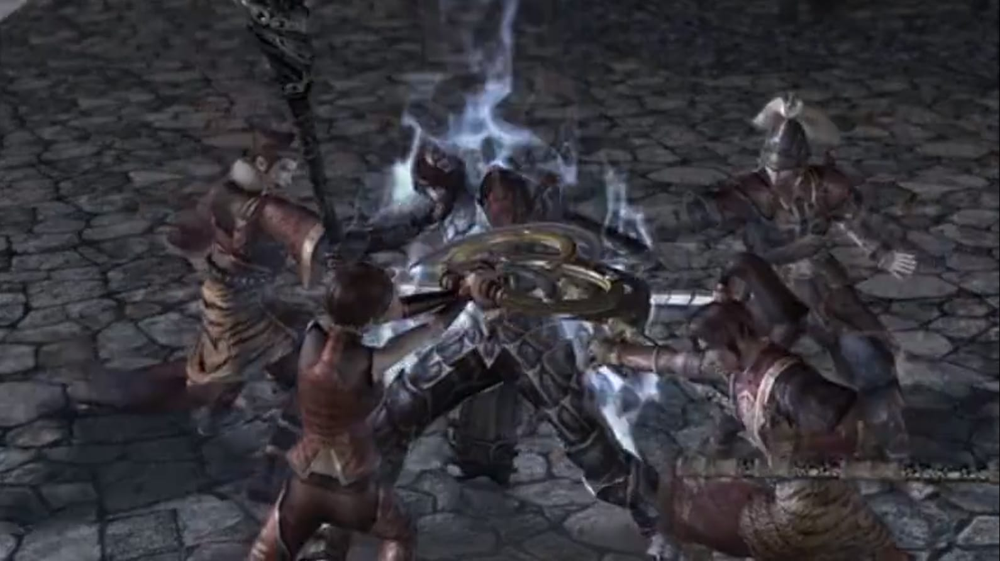
Why Dong Zhuo served Orochi was the store of treasure Orochi sent him for 'war stuff', on which he built his 'pool of wine and forest of meat'. Hideyoshi, Okuni and Zhang Jue learned the hours and the road of Orochi's payments, fell upon them and took the treasure. The money done, the goodwill done: Dong Zhuo fell out with Orochi and, seeing Hideyoshi so rich, attached himself to the Oda army.
Warriors Orochi (the Original) — Sengoku Route #8 · Side Story Battle of Baidi City
By this hour only Da Ji and Lü Bu remained of the great captains under Orochi. Orochi, having seen the strength of Sun Wu, was right well pleased and looked for other strong men of humankind to come against him. While Orochi's main host was away, Nobunaga and Nōhime fell as a pincer on Baidi City, Orochi's great stronghold. That Orochi's chaos might not be wiped out, Fuma came in to help as well — and then Lü Bu, Da Ji and Orochi himself. Cao Cao appeared and joined hands with Nobunaga; the Overlord and the Demon King made one body, and Orochi's army was beaten back upon beat back.
Warriors Orochi (the Original) — Sengoku Route #8 Battle of Koshi Castle (Sengoku)
By the chase pursued, Nobunaga with Takeda and Kenshin — the three strongest of Sengoku — came to Koshi Castle, the demon king's battlefield. At Koshi sat Orochi, Da Ji and Lü Bu. Da Ji's queer arts were not what they had been; the Oda army came out by the north fort and swept the demons outside the walls as was its way. Nobunaga saw that the drawbridge of Koshi was already laid — plainly Orochi could wait no longer. Wu sent Zhou Yu, Wei sent Li Dian to help; Nobunaga, Takeda and Kenshin brought the great host straight into the castle, broke Lü Bu and came to grips with the Demon King. Demon King against Demon King — and the victory was written by the Demon King of humankind. Orochi, even to death, threw himself against the strong of the human world, and with 'death' completed his wish 'to be overthrown'. Over the horizon of the Other World came, for the first time, the light of peace. The war against Orochi was at its end. Nobunaga and Takeda would fall to the building of a new world; but Kenshin still thirsted for battle — and a disturber of the peace, naturally, drew strange looks from everyone…
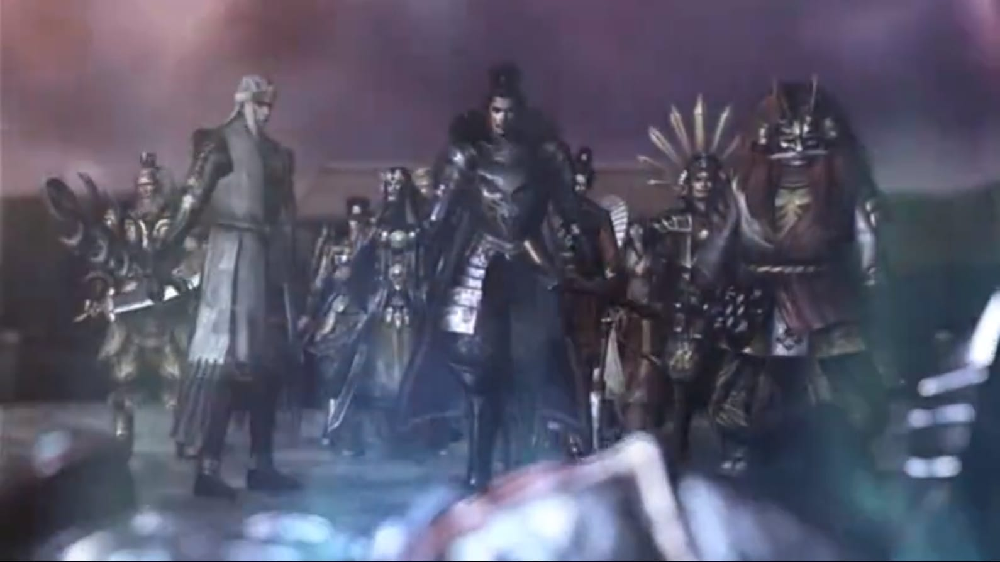
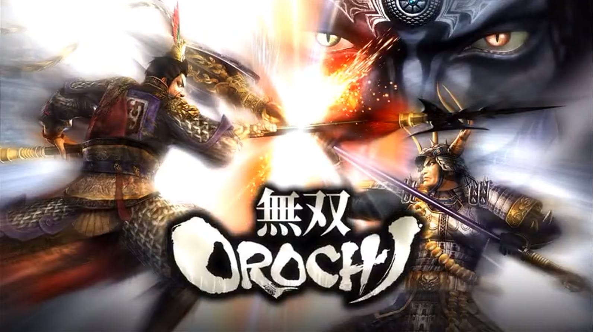
—— Volume III ——
The Demon King Returns
▶ Chapter 1 Chaos Undying
The Demon King Returns
To take Da Ji and Orochi, the Mystic Realm had once sent the War of the Fire River — and was beaten by Orochi. The Realm's generals, long minded to interfere in the world of men again, now saw mankind throw Orochi down by their own strength; some of them changed their minds about humans, though others still doubted them. For no sooner had Orochi fallen than his remnant took the field: Lü Bu rose in arms (Da Ji, Lü Bu, Sun Wukong and Kojirō had fallen on Osaka Bay unawares, while Yuan Shao, Zhang He and Diaochan marched against them, and it was Diaochan who talked Lü Bu over, so that he became a power in his own right); the warlords were shaken, Dong Zhuo and Masamune grew insolent, Da Ji and Cao Cao too had set their plans in motion, and the chaos showed not the least sign of drawing in. Nu Wa, Fu Xi and Taigong Wang came down into the world of men with well-nigh the one purpose and three different methods. And there is one more besides — a stranger never yet seen face to face, the mischief at the root of all this running trouble…
The unscrupulous hero of a turbulent age left Cao Pi to hold his rear and went out on an expedition of his own, with a mysterious beauty — Nu Wa — and a Kunoichi of the Sanada at his side. Cao Cao's first mark was Dong Zhuo and the monkey demon Sun Wukong, encamped at Luoyang in Sizhou. For some reason Wukong too was gathering men of talent about him. Whatever Cao Cao asked, Nu Wa professed not to know, and he was sure the immortal maiden was keeping something from him; while she, having but lately made the Overlord's acquaintance, was in no hurry to put her guard down. Cao Cao beat off Dong Zhuo and Wukong, sensing that this world was on the point of changing again.
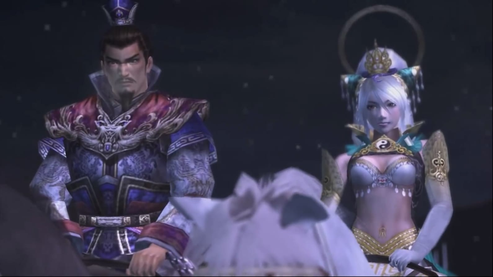
Warriors Orochi 2 — Wei Route #10 Battle of Sishui PassAt Sishui Pass, below Luoyang, the two Xiahou met Lü Bu in array, and Lü Bu's host closed about Xiahou Dun so tight that not a drop of water could slip out. Cao Cao came up, beat off Fuma as he forced his way into the press, and with Xiahou Yuan put fire to Lü Bu's army. The Wei army pushed on into the pass; three heroes took on Lü Bu and at last drove him back. Nu Wa, impressed by Cao Cao's strategy, came clean to him: Da Ji was working to bring Orochi back to life, and Wukong's master Kiyomori was plotting the same thing while he bought up soldiers and horses — the hour no longer admitted a moment's delay. Cao Cao ordered Cao Pi to seek help from every power, bade Zhang He persuade Yuan Shao, and wrote with his own hand the manifesto against Da Ji and Kiyomori.
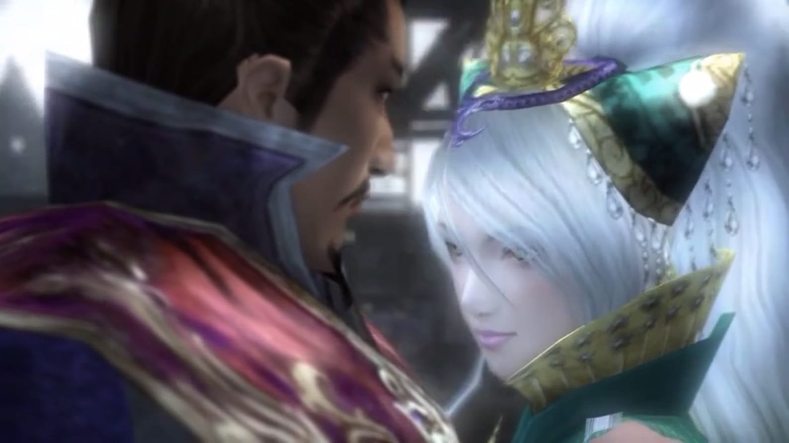
Dong Zhuo moved on elsewhere to carry on his mischief. Sakon Shima, living an idle life, was on his way to talk strategy with Shingen when he came upon Dong Zhuo butchering the Yellow Turbans at Lousang Village, and the common people with them. Ishikawa Goemon, blinded no doubt by gold and bewitched in the head, was lending Dong Zhuo a hand. At the side of Shima, who meant to aid the Turbans, appeared Musashi, Yoshihiro, Xu Huang, Huang Zhong and Guan Ping; Shima and the men of arms met Dong Zhuo's army together and relieved the Yellow Turbans. The immortal Fu Xi, seeing it, came to Shima's help as well, and went his way only after he had seen Dong Zhuo beaten off. In Shima's mind a shape was forming — a league of arms that crossed the boundaries of the powers. To that end he took the Yellow Turbans under his own wing, and meant to join hands with Nobunaga, Shingen and Kenshin, who had each on his own account beaten Orochi before. The first step was to borrow troops from Shingen.
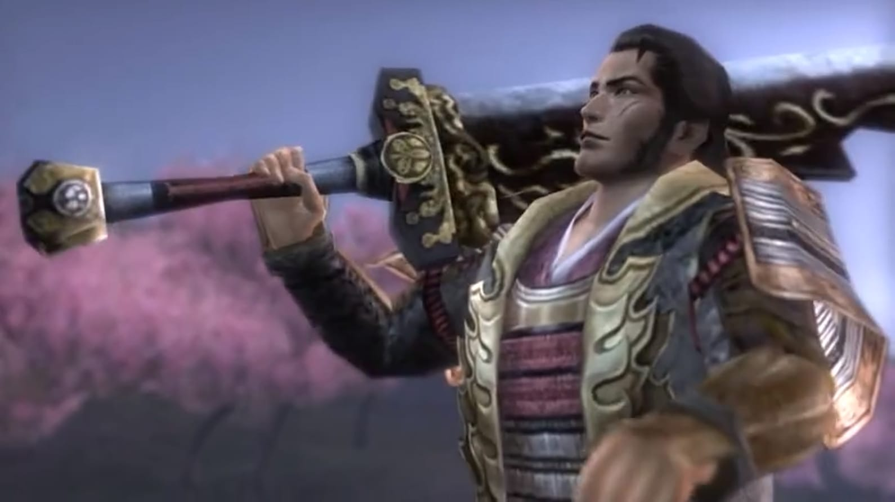
Warriors Orochi — Dramatic Mode #11 Rescue at NanzhongThe three champions of chivalry — Ma Chao, Nagamasa and Kanetsugu — with Yukimura at their side, rescued the common folk out of the hands of Kiyomori, Dong Zhuo, Fuma and Kojirō. In the end Ma Chao, Nagamasa and Kanetsugu swore their oath to righteousness (a nod later reused in Warriors Orochi 2).
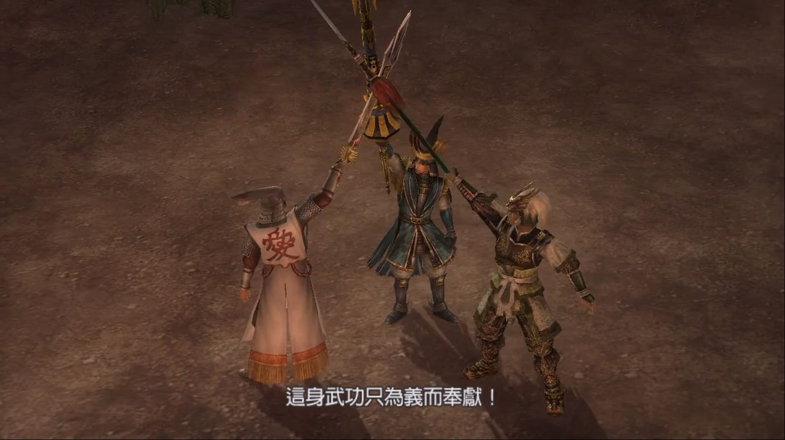
Warriors Orochi — Dramatic Mode #12 Contest for NanzhongSun Jian, still holding his troops in check, sent out Zhou Yu, Sun Ce, Ranmaru and others to read the movements of the several armies. Sun Ce, with Toshiie and Pang De, relieved Katsuie, hemmed in by Da Ji, Himiko and Wukong; Sun Ce called on Zhou Yu for help, and Ma Chao came running at the sound of Pang De striking his twin halberds together not far off, so in the end the day was won. Zhou Yu took the opening to bring Sun Wu and Meng Huo, king of the Southern Barbarians, into alliance; Sun Ce learned from Ma Chao about Kiyomori and went on with his scouting.
Warriors Orochi 2 — Wu Route #9 Battle of Ruxu
At Ruxu, Zhou Tai, Ranmaru and Motochika came upon a young warrior still hard at grips with Lü Bu — it was Yoshitsune. Lü Bu, finding someone in the way of his fighting, made off. Ranmaru led Yoshitsune away; Fuma burst into the field, Zhou Tai held him, and Fuma too made off. More and more demons came after them, saying as they came that they would report to someone else, and the party began to suspect a hunt organised against them. Fuma barred them once more; Ranmaru's party broke through and quit Ruxu. Yoshitsune took refuge for a while with Sun Wu, and said he was looking for 'a certain someone'…
Warriors Orochi 2 — Wu Route #10 Battle of Kanegasaki
Close behind came Dong Zhuo and Goemon, following Yoshitsune's trail; Okuni and Ling Tong met them at Kanegasaki, and were joined by Zhou Yu and Xiaoqiao coming back from Nanzhong. Okuni overthrew Goemon and forced out of him where Dong Zhuo was, and Xiaoqiao with Okuni lured Dong Zhuo on and beat him. Sun Jian took Goemon into his service.
Taigong Wang had come down into the world of men to take the demoness Da Ji. The winds of the age blew onto Shiting: Zhuge Liang brought word to Liu Bei — who had been talking so pleasantly with Ieyasu and Yoshimoto — that Da Ji had fled to this place, and Liu Bei, thinking of the common people, left Zhuge Liang behind and marched on Shiting in person with Sun Shangxiang. At Shiting, Da Ji and Dong Zhuo were in league once more, and Zuo Ci and Taigong Wang entered the stage: Zuo Ci took on Dong Zhuo while Taigong Wang forced Da Ji's bolted door. The plan had been to seize Da Ji while she and Liu Bei were at grips; but Liu Bei fought with a valour no one could set aside, and Da Ji broke away beaten. Liu Bei gained Zuo Ci and Taigong Wang — and did not know that, to so proud a man as Taigong Wang, he who was beside himself with joy was nothing but a piece on the board.
Warriors Orochi 2 — Shu Route #10 Battle of Sōga
Da Ji was busy in the shadows for some purpose of her own, while Masamune, bent on mastering the realm, had begun his conquests with Keiji and Sima Yi. Da Ji and Masamune seemed already to have joined hands; Ieyasu, smelling the danger, would talk Masamune out of it if he could. Masamune took up his position at Sōga, and there were no few demons in the Date army — too late, it seemed: Masamune and Da Ji were leagued. Ieyasu gave him a battle that settled nothing. He took the south-east fort first, drew on the reinforcements of Zhao Yun and Wei Yan, then took Masamune's granary; Wei Yan and Hanzō fought their way to the very gate of the central fort, set fire to it, beat off Keiji and carried the fort. By then Masamune's relieved army had come up at last, and he passed from defence to attack; Ieyasu too advanced. The two met again: Ieyasu wanted Masamune with him to take Da Ji and quiet the age — but Masamune was precisely the disturber of the peace. Ieyasu failed to persuade him, and Taigong Wang and Zhuge Liang saw that the labour had been for nothing and had only bought Da Ji her time. She had already joined the enigmatic girl Himiko…
Warriors Orochi 2 — Sengoku Route #10 Battle of Jizhou
One day Xu Huang and Musashi, deep in their sword practice, were set upon by demons, and caught sight of Da Ji in flight with the enigmatic girl Himiko. The two followed, and ambush after ambush of demons barred their road all the way. As Da Ji had it, Himiko was the key to 'a certain plan'. Musashi met his old rival Kojirō again and the two matched their swordsmanship. Xu Huang and Musashi beat off Da Ji and Himiko and took Kojirō in with them. Da Ji threw out her threat: 'Orochi is about to wake.'
Warriors Orochi 2 — Dramatic Mode · Side Story #37 The Fight for Hefei
Xu Huang and Musashi fell in with Shima and told him what had happened. Shima reasoned that the silent man (Fu Xi) must have come for nothing else than to stop this, and at once went into Shingen's country to treat with him. Shingen gave him a frank yes, and held that Da Ji might still be overtaken — so he put his men and horses in order and marched.
Benkei, mad after weapons, had only just been swept into the Other World. Finding no lord Yoshitsune anywhere, he did not know what to do with himself and made a game of relieving soldiers of their arms on the road; there he came upon Da Ji and Himiko fleeing to Hefei. Benkei barred their road and would have their weapons (the 'sword hunt') — but the two did not always carry their arms about them, and Himiko demanded his purpose. Benkei set out his robber's logic: a weapon in exchange for your life. Da Ji, seeing limbs well developed and a head well empty behind them, told him he would meet a great many men carrying rare and singular weapons, and Benkei went off with them.
So Da Ji and Himiko set their eyes on Hefei Castle, meaning to make it their camp and give Shima's army battle there. Zhang Jue, hard on the demons' heels, came to Hefei too, and Da Ji came to the demons' relief and reorganised the situation. Then Shima, Xu Huang, Guan Ping, Yoshihiro, Kojirō and Shingen caught up with Da Ji; and Benkei, seeing so many rare and sundry weapons appear before his eyes all at once, was beside himself with joy — he fell upon them and stripped them of their arms. With no weapons left, Shima's army could not fight and had to withdraw. Himiko took no liking to Benkei, but Da Ji was set on keeping him and praised him without stopping till Benkei's head swam, and so he cast in his lot with the demons. It seems Benkei and Yoshitsune are doomed to part company…
Warriors Orochi 2 — Sengoku Route #11 Rescue at Hasedō
Shingen held that the Takeda army alone was not enough against the host of demons, and Shima too was planning his next league — the next target, Kenshin. As it chanced, Kanetsugu of the Uesugi army was under Wukong's attack at Hasedō; Yukimura asked to march to his relief, and Shima set out with the Yellow Turbans at his back. All the way Shima and Yukimura worked through the demon arts — illusions and falling stone — and beat off Fuma as he burst into the field. Shima and Yukimura joined Kanetsugu, only to have the woods fired about them; Fu Xi appeared out of nowhere and undid the conjurers' invisibility. Shima broke the conjurers and the fire went out, and Fu Xi told them that he and Wukong were immortals alike, but that Wukong now made trouble under Kiyomori — Kiyomori, a man who had been swept into the Other World and then injected with Orochi's demonic aura, half human and half demon, who was now attempting to raise Orochi from the dead and had already summoned demons of more kinds and in greater number. Shima led the army against Wukong and beat him off; Kanetsugu thanked Shima's army for its aid and brought Shima before Kenshin. When Shima and Kenshin talked, 'the fight' was exactly what Kenshin was asking for: he would step into the breach and shrink from nothing to do it. Fu Xi, acknowledging Shima's talent and persuaded that Shima would carry out the task of leaguing the strong captains together and stopping Orochi's return, joined Shima's army.
Cao Pi knew well that Sun Wu, since the incident, had put its tusks clean out of sight and would not lightly further Cao Cao's advance. In truth, though Lü Bu and Dong Zhuo had made their incursions, the Wu army still stood stock-still, and Yoshitsune's offers to be given the field were refused as a matter of routine — all to keep the war from kindling. But the war had come to the door: to force Sun Wu into the field, Cao Pi and Pang Tong took an army against Meng Huo of Nanzhong, Sun Wu's ally. To sound what Cao Pi was after, Sun Jian sent Zhou Yu and Ginchiyo against him. By the secret stratagem Zhou Yu passed to him, Meng Huo set fire to the Wei army and came up before their main camp; Pang Tong, for his part, had found out the hidden ways of Nanzhong and fell on the Wu army's main camp unawares. Ginchiyo led her troops one step ahead of him and beat Cao Pi down; Cao Pi, having seen the tusks of Sun Wu, put the manifesto into Ginchiyo's hands and withdrew. Because the southern troops had fought as they did, Zhou Yu formally enrolled them in the army. While Sun Jian still hesitated over Cao Pi's manifesto, Lü Bu and Kiyomori fell upon Wu ground. Kiyomori was the very man Yoshitsune was looking for; Yoshitsune marched out in his impatience, and Sun Jian had no choice but to send him support.
Warriors Orochi 2 — Wu Route #12 Battle of Itsukushima
Sun Quan and Motochika marched until they overtook Yoshitsune, then took up formation at Itsukushima against the great hosts of Lü Bu and Kiyomori. Kiyomori was Yoshitsune's feud of two lifetimes, and had fallen by now to a demon man. He and Lü Bu talked over the plan: Lü Bu, blunt by nature and trusting in his own prowess, wanted nothing but to crash straight in and smash Sun Wu's 'turtle shell'; Kiyomori meant to warm the water and slowly boil the frog, letting Sun Wu's 'head' stretch out of that shell with none of its defences up, and destroy it in a single stroke. So Lü Bu showed his hand and came straight at the Wu army. Motochika saw that Kiyomori and Lü Bu meant to come in with the tide all the way out — but at that hour, on that shore, the water could never fall so far, and Yoshitsune judged that Kiyomori had cheated the 'Dragon God' of Itsukushima itself and was working the tides to serve him. Then Yoshitsune and Motochika, while the Wu army held the enemy and Sun Ce came back from his scouting with Daqiao to pin them down, reached the shrine of the Dragon God and woke the god's wrath, and the water drowned the hosts of the Taira and of Lü Bu. Lü Bu, at a loss for words, withdrew first; the whole Wu army sallied out and beat Kiyomori off. Sun Ce held that scouting and sheer defence were called for no longer, and Sun Quan too urged his father to rise and strike; so Sun Jian made up his mind and passed from defence to attack. The news Sun Ce brought was this: with Lü Bu abroad on his conquests, his stronghold of Yangping Pass was thinly guarded, and a blow struck there might break the link between Lü Bu and Kiyomori. Huang Gai, hearing it, was glad to be the van; Sun Jian too took an army out on the expedition, sending Lu Xun and Taishi Ci to support Shu and Wei.
▶ Chapter 2 Federation of the Three Kingdoms
Sun Jian stationed troops among Shu and Wei, helping Cao Cao build the federation of the three kingdoms. After Orochi's death Yuan Shao had grown a considerable power at Shizugatake, and Zhang He went to persuade his old lord to further Cao Cao — only to find Yuan Shao drawn up at Shizugatake to give him battle. In Yuan Shao's camp was Jiang Wei, who had left the country of Shu to make himself greater. Yuan Shu and Jiang Wei's tiger-chariots came forward as the van; Zhang He dashed that 'ugly engine' to pieces, and then — the three Yuan brothers had never been on good terms — set about dividing them, sending Xun Yu to divide Yuan Tan first. Yuan Shao was thrown into confusion; Jiang Wei knew a scheme when he saw one and rode hard for Yuan Xi with a letter from Yuan Shao. Yuan Shao likewise put his army in motion to attack; the Wu general Taishi Ci, come in answer to the manifesto Cao Pi had passed round, supported them and held off Yan Liang and the rest, while Zhang He cut Jiang Wei out and sent a false Jiang Wei who talked Yuan Xi into surrendering. Yuan Shao, ashamed and furious at once, threw his gates open and came out in force; Zhang He went forward to talk with him, but Yuan Shao's rage was beyond talking and Zhang He had to fight him and beat him. Yuan Shao yielded. Taishi Ci and Jiang Wei alike thought Cao Cao's way of drawing the powers to himself too brutal; but Yuan Shao, his cool head returned, judged that a united army led by Cao Cao might after all be the best way to set a crooked age upright…
Warriors Orochi 2 — Shu Route #11 Battle of Nagashino
Lü Bu, after withdrawing, fell on the territory of Shu at Nagashino. Liu Bei had more than he could manage in the hunt for Da Ji, while Zhang Fei and Guan Yu quarrelled over which of them should fight Lü Bu. With Taigong Wang's urging on top of that, Liu Bei left Guan Yu to hold the rear and marched with Zhang Fei and Tadatsugu to meet Lü Bu in a great battle. By repeating crossbows and the prowess of two fierce generals the army of Shu stood three of Lü Bu's advances; then Lu Xun came up with Wu's support, and they beat off Diaochan to draw Lü Bu out. Zhang Fei and Tadatsugu — two heroes against Lü Bu — drove him back. Lu Xun told Liu Bei of the demon man Kiyomori, and with that the three kingdoms were leagued and took Kiyomori for their one enemy.
Zuo Ci demanded of Taigong Wang why he had kept the existence of Kiyomori hidden. Taigong Wang said, outwardly, that he would not pile more intelligence onto the army of Shu's already heavy cares; in truth he still could not bring himself to trust the strength of humans, for fear that frail mankind would be dashed to pieces by so mighty a Kiyomori.
Warriors Orochi 2 — Sengoku Route #12 Battle of Changban
Shima's next target was Nobunaga, but before that he tried his hand at Masamune. Shima held that Shingen was the man to bear so great a trust; yet Masamune, leagued with Da Ji, Keiji and Sima Yi, plainly refused even Shingen's request for a meeting. Shingen and Kanetsugu fell upon Masamune, and Sima Yi answered by sending in the Date company of gunners and putting them sadly to it. Shingen made ready for a fire attack at once; Kanetsugu volunteered, broke through Keiji, came about by water in boats and set the slopes of Changban alight. Sima Yi started out of his wits: the guns were all spoiled and the will to fight went with them. Shingen set the whole army on and beat Da Ji off — and still failed to persuade Masamune. Shingen used the very words Ieyasu had used, but Masamune was the disturber of the peace and thought them a pack of honest fools: from the moment Orochi fell, he said, the realm had been carved up among the strong and a new age of chaos had already come — and with that he stormed out in a rage.
Xingcai and Inahime, heartened by their fathers' prowess, would serve the army of Shu as well. Liu Bei sent Liu Shan, Xingcai and Inahime to gather news of Kiyomori, and at the Five Elements Mountain they rescued Mitsuhide and Gracia, whom Wukong had shut up there. To learn something about Kiyomori, the army of Shu used Mitsuhide to drag Wukong into the open, and this was what they got out of him: Kiyomori had been Wukong's benefactor. Dong Zhuo came to Wukong's aid and, with so many beauties on the field, could not contain his excitement. The army of Shu beat off Dong Zhuo and Wukong and brought Mitsuhide back to the Shu camp, where he told Liu Bei that Kiyomori and Wukong were making war in every direction, widening their territory and recruiting men of ability.
Warriors Orochi 2 — Wei Route #12 Battle of Ji City
The Wei army had absorbed Yuan Shao and come into alliance with Sun Wu, while Taira no Kiyomori, by absorbing the generals left over from Orochi's remnant, now ranked with Cao Wei as the two great powers. Kunoichi scouts reported that Wukong was making trouble again, and Cao Cao sent Xiahou Yuan to fall on him unawares. At Ji City, Wukong and Sima Yi of the Date army were attacking Toshiie and Magoichi. The Wei army drew Toshiie and Magoichi out and then turned on the Date army in answer: Magoichi brought out his gunners, Xiahou Yuan his archers, and Sima Yi met them with Wukong and phantom soldiers. Wei broke Wukong, scattered the phantoms and beat off Sima Yi, who had abandoned Cao Wei; they took Toshiie and Magoichi back to the Wei camp — and left Nu Wa wondering whether Cao Cao would become the next Kiyomori.
Warriors Orochi 2 — Dramatic Mode · Side Story #35 Rescue at Tianshui
Cao Cao sent Zhang Liao, Xu Chu and Pang De to support Shu and Wu, and sent Magoichi and Zhang He to meet the army of Azai that had come in answer to the manifesto — and ran into Wukong's great host once more. Wukong, who in days past had earned merit against the demons, against Orochi and against Tamamo no Mae, had been disciplined for his mischief-making and sealed under the Five Elements Mountain, until Kiyomori — come across into the Other World — set him free. Wukong took Kiyomori for his benefactor and served under him for the sake of fighting champions he had never met. One day Sanzang found that Wukong had vanished; he made a turn through India and back, and not finding him came at last into the Other World that Orochi had made. It chanced that Zhang He and Magoichi were hemmed in by Dong Zhuo when Sanzang came down out of the sky and drew the two of them out. The army of Azai had answered the manifesto, yet Dong Zhuo had brought it to the edge of annihilation. Magoichi told Sanzang that Wukong would appear before long, so Sanzang fought alongside the Wei army, beat Dong Zhuo off, healed the wounds of the Azai army and held them up until Wei's relief came. Wukong indeed appeared, and Sanzang wished him back to the Mystic Realm; but Wukong refused and set himself against his master. Wukong could not prevail against the monk and fled the field in disorder. Sanzang, having failed to win Wukong back, stayed for a while in the Wei camp.
Sun Jian made Huang Gai and Goemon his van and marched on Yangping Pass; midway, at Okehazama, he met the Date army — and Xu Chu and Pang De, sent up by Cao Pi as his reinforcement. Huang Gai, seeing how fierce the Date horsemen were, stole in by a hidden track to fall on their rear, beat off Niu Jin and Keiji and carried off their horses. Xu Chu and Pang De blocked Sima Yi's surprise, and Huang Gai at last broke into the Date main camp. Masamune threw in his last company of gunners and was beaten for all of it. The army of Wu had thus opened its road to Yangping Pass; it gathered at Okehazama, and Sun Jian gave the word for the general attack on Lü Bu and Kiyomori.
Warriors Orochi 2 — Shu Route #13 Battle of Jiameng Pass
Because of what the army of Shu was doing, Taigong Wang came little by little to believe in the possibility of humankind. Kiyomori, testing that same possibility, showed himself in person at the head of Dong Zhuo and Wukong; Liu Bei, seeing him delivered to his door, sent Guan Yu out to offer battle while he stayed behind the lines with Zhang Fei. Guan Yu swept through Dong Zhuo's army as it came against Jiameng Pass and beat Dong Zhuo off. Cao Pi sent Zhang Liao to the support, and Zhang Liao joined the army of Shu and unravelled the phantom soldiers; Wukong divided himself into copies to bar the advance of Guan Yu and Zhang Liao and failed, and in the end the two beat off Wukong and Kiyomori. On the other hand, Taigong Wang went on with the search for Da Ji…
And so Kiyomori, after his warring with Wu and Shu, found that in the meantime Cao Cao's power had grown very great. To stand against Cao Cao, he brought Orochi back to life. Orochi sprawled upon his throne with intolerable boredom and took his ill humour out on Kiyomori; Kiyomori assured him that the great battle with the Wei army would put the spirit back in him, and shut Cao Pi in at Komaki and Nagakute. Dian Wei reported it to Cao Cao, and Cao Cao marched to the relief in person. Against that coming host Pang Tong would have Cao Pi act as the bait while he himself, with Cao Cao's guard about him, broke through Wukong by the side tracks and put fire to the demons. Cao Cao praised Pang Tong without end, till Pang Tong's head swam. Then Cao Cao and Dian Wei cut their way into Kiyomori's main camp and beat Kiyomori off. Orochi had no words; Kiyomori gave a great shout and had Orochi whisked away on the instant. Nu Wa judged that Kiyomori had not yet got hold of the key to Orochi's revival — Himiko — and that Orochi was therefore not wholly returned: the first thing needed was to make sure of Himiko's whereabouts. Cao Cao thought to himself that this immortal maiden was keeping something from him still. Himiko was a candidate queen of ancient Yamatai, of the blood of the gods descended, and would in the end be the queen to unite all Wa; that blood was the key to waking the Serpent Demon. Cao Cao owned Cao Pi's ability and ordered him to march out with him. Nu Wa held that a reasonable man like Cao Cao would not fall into the demon's way.
▶ Chapter 3 The Demon King Returns
Jiang Wei held that Da Ji also, another who would raise Orochi from the dead, was hunting for Himiko; and that to find Himiko he must first find Da Ji. Cao Cao sent Jiang Wei and Toshiie to look. Jiang Wei had already put his hand on Da Ji at Yamatai and marched to her, and when he came to the place he found Da Ji and Himiko together. Da Ji barred the way with her great guns; Jiang Wei and Toshiie went in to take the guns and were ringed about by demons. Out of nowhere Nagamasa came cutting in and raised the ring from Jiang Wei — for he had brought the Azai army to the rescue as well, though Da Ji had shut the road against him. Da Ji bade Himiko run; Himiko left a heap of effigies that walked of themselves and ran. Nagamasa and Toshiie set about breaking the effigies to make room for the Azai army; but Himiko had called Keiji, and when the two had beaten Toshiie off, the effigies vanished as well. Asai Yoshitsuna came up at a dead gallop, plied by Oichi's goading, and joined hands with Nagamasa. Jiang Wei pressed Da Ji so hard that she opened the gate like a creature tamed; Jiang Wei walked in and walked straight into her trap. He threaded his way over the ground that breathed fire, and took Da Ji at the last.
Warriors Orochi 2 — Wei Route #15 Battle of Tong Pass
'Bring Orochi back' was the banner they raised: Kiyomori took hands with Masamune and Keiji of the Date army. Himiko asked help of Kiyomori, Masamune and Benkei; Masamune sent Keiji ahead and he and Kiyomori followed — but word came to them on the road that Da Ji had already been taken by the Wei army. So Kiyomori and Masamune divided their force: Kiyomori went to stop the pursuit, Masamune to seize the cage-wagons. Oichi's scouts brought word that Himiko had fled to Tong Pass. Xiahou Dun pushed hard for Tong Pass to lay hands on Himiko, and found Kiyomori in his road. Xiahou Dun hewed him down; Kiyomori stepped through space, and demons came up in shoals. Then Nobunaga answered the manifesto and came with Mitsunari and Katsuie to the support. Kiyomori's conjurers kept the fallen demons rising again and again, and the Wei army's heart went out of it. The Oda army plucked the conjurers out several times and turned them to its own use, calling demons to fight demons. Dong Zhuo and Wukong came also to help Kiyomori; Wei and Oda beat them off together, and Wukong went off to help Masamune. Xiahou Dun took the army at Kiyomori again and brought a victory home. Cao Cao and Nobunaga joined their two armies and drank warm together; and Nu Wa, seeing how Cao Cao's heart was set upon all under heaven, and that in this he differed at bottom from the lonely Orochi, let out the sigh that 'Orochi is no Cao Cao'.
Warriors Orochi 2 — Dramatic Mode · Side Story #38 Rescue at Mikatagahara
Cao Pi, lest anyone change sides on the road, asked help of Wu and Shu. Taigong Wang, hearing of it, sent Wei Yan and the rest; Sun Jian, hearing of it, sent Motochika, Sun Ce and Yoshitsune. So a host of the federated three kingdoms — Cao Pi, Jiang Wei, Pang Tong, Nagamasa, Oichi, Yoshitsuna, Motochika, Wei Yan — brought Da Ji under escort to Mikatagahara, where Himiko, Benkei and Masamune barred their way. Benkei seized the Wei army's weapons and its horses; Masamune drilled a troop of horse on the spot and strengthened the demons as well; they fell on Wei Yan and carried Da Ji off. Then Kiyomori sent Wukong to help; Jiang Wei gave chase; Sun Ce and Yoshitsune came up. Himiko took Da Ji forward under her own escort while Masamune held Jiang Wei back — and Benkei and Yoshitsune met again. Yoshitsune looked: was this the woman demon Da Ji? No wonder Benkei had not come. He had gone over to the demon host; so Yoshitsune fought him hard and broke the bond of lord and man between them. Da Ji took Himiko ahead with Wukong and left Benkei standing in the cold wind. The rest, seeing that Da Ji was gone and the fight gone with her, each broke off to his own.
But on the road Da Ji and Himiko slipped quietly from under Wukong's eye and came about to Odani Castle to hide; and Taigong Wang — and 'another' — took note of them…
Taigong Wang, now sure that Da Ji lay hidden at Odani Castle, marched after her with Lu Xun; they took Da Ji out of her shifting about — she would not stay in one place — and with them found a girl full of riddles, Himiko. Da Ji bade Himiko run, and Lu Xun put his men after her at once. Zhuge Liang came up and shut the road behind her, and Himiko was taken. Taigong Wang sent Da Ji and Himiko away in cage-wagons to Liu Bei. Then, history repeating itself as it always does, Lu Xun's scouts brought word that Wukong had fallen on the cage-wagons — and Da Ji and Himiko were lost again…
Warriors Orochi 2 — Dramatic Mode · Side Story #36 Battle of Anegawa
Cao Pi had lost Da Ji and sent more men out to look. On the road Wukong fell on the cage-wagons carrying Da Ji and Himiko under Shu's escort and cut both of them out. Toshiie and Pang Tong, hearing of it, rode to Anegawa to lay hands on them. Sanzang, hearing that Wukong was with them, went with the two and found Wukong keeping company with demons. Sanzang went after Wukong; Da Ji, seeing it, bade Himiko run, and Himiko left conjurers and shikigami behind her and ran. The shikigami came back to life however often you killed them, so Sanzang put the conjurers away, and the shikigami came to nothing with them. The Satake army, which Wukong had dragged along with him, had lost all heart for fighting; Sanzang sent them home. Zhang Bao, who had been tracking the wagons, came in first and opened the road for the Shu army. Dong Zhuo came also to help the demons and Sanzang beat him off. Sanzang joined hands with Zhao Yun, Xingcai and Guan Xing, who came up behind him, and meant to take Wukong, Da Ji and Himiko together. But Himiko had already called Kiyomori; and just as Sanzang sent Wukong flying, Kiyomori was there in front of him and covered Wukong's and Da Ji's withdrawal.
Warriors Orochi 2 — Wu Route #14 Battle of Yangping Pass
Sun Ce and the rest came back to the Wu army, and at last reached Yangping Pass. Yangping Pass was as thinly kept as they had looked for — only Chen Gong sat in it. Sun Jian bade Sun Ce take it fast. Chen Gong set his conjurers to raise a fog, and the fog cut the Wu army in pieces; then Gao Shun fell on the Wu camp at its rear. Under Chen Gong's hand Sun Ce and Pang De fell into confusion, and Lü Bu of a sudden broke off and withdrew into his camp; the Wu army was in a place with no way out. But Lü Bu's heart was not in it. Ma Chao of Xiliang's brocade came on to the Wu side, and Lü Bu withdrew in ill humour.
Warriors Orochi 2 — Shu Route #15 Battle of Koshi Castle
Kiyomori had taken Da Ji and Himiko into his den, Koshi Castle, and with Himiko for his medium he was working the rite to bring Orochi wholly back. Liu Bei sent Zhao Yun, Zhang Liao and Mitsuhide to strike the castle and stop him. The Shu army took the flame-cannons as was its custom, beat off Da Ji and Wukong, and Zhao Yun marched the great host in and broke Kiyomori. But the thing was already beyond stopping: a shaft of evil light went up into the sky and blew a great hole in the heavens…
Zhou Yu turned the fight at Yangping Pass over in his mind and liked it less and less; he suspected the Empty City, and sent Yoshitsune and Ranmaru to see. They met — with Ieyasu come up in the middle of it — the leagued host of Kiyomori, Lü Bu and Date, and being too few were taken. Kenshin, Guan Yu and Xu Huang heard of it and went to Qishan to win them back, and stood against the leagued army. Yoshitsune and Ranmaru, freed, turned about and ran back at once and told the Wu army that the great host of Kiyomori, Lü Bu and Date was coming…
Warriors Orochi 2 — Wu Route #15 Battle of Yamazaki
By now Sun Wu's head was out of its shell and lay bare. Kiyomori, with Lü Bu, Wukong and Sima Yi for his great host, drew the ring closed about the Wu army and showed them what his craft really was. Sun Jian meant to break the ring with the whole army, but Kiyomori kept putting men in and closing them in, and his guns would not stop; the Wu army was at its last. For Lü Bu this was a dull kind of war, and Kiyomori's world a dull kind of tomorrow. Lü Bu threw it off: he swept the field, broke Sima Yi and Wukong, marched with the Wu army, and cut Kiyomori down in the field. Yoshitsune liked him the more for it and would see him to the end. But though Kiyomori was dead, the thing had long since gone past recall…
Warriors Orochi 2 — Shu Route #16 Battle of Wuzhangyuan
True Orochi had seen the strength of Shu Han and was well pleased, and longed for other strong men of mankind to come at him; so he took Da Ji and the great host and made his stand at Chibi. Zhou Yu's scouts brought word that a thing like Orochi had taken the field at Chibi. Sun Jian pushed the whole army hard for Chibi; Lü Bu came behind at full speed — the Red Hare of horses leapt, and he was there — and stood before Sun Jian's face. Lü Bu pointed his halberd at the sky and opened the road for the Wu army. True Orochi was the strongest thing now living, and the mark Lü Bu now meant to take out. Motochika could not help praising the soul that will not be ruled. Da Ji, seeing the Wu army come, cut the bridges adrift, set fire across the water and sent out demons that would not die. The Wu army waited for its first fleet, coupled the ships with chain and laid them as a bridge to the shore, and carried the altars, so the demons could not come back. Then it waited for its second fleet, laid the ships as a bridge to the enemy, and Sun Jian set the army on the camp. Da Ji went mad and burned her own chained fleet with the rest. Lü Bu and the Wu army broke through Da Ji and Keiji lying in wait, stood before True Orochi in all his might, and at the last beat him. True Orochi withdrew again, and Lü Bu went off in silence. The winning Wu army took its ships home and made a feast on the water: some were dancing, some were drowning themselves in drink, and only Yoshitsune sat looking at the shore with his eyes going nowhere, hollow-eyed, missing Lü Bu…
True Orochi had seen the strength of Sun Wu and was well pleased, and longed again for stronger men of mankind to come at him. This time he meant to stake all he had: he took Masamune, Keiji and Sima Yi with the great host to Guandu, set himself in order again, and his spirit rose like a rainbow. Cao Cao and Nobunaga marched against the serpent come again and bade the Wu army forward with them. Masamune worked the great guns from Guandu's wall and shelled the Wei-Oda army; Cao Cao ordered the front kept and the demons drawn onto it and met there: Keiji and Sima Yi came up against the lure and bit it, and the Wei-Oda army, working its volleys three deep behind, stuck them full of holes like a honeycomb, then carried Masamune off and the shelling stopped. True Orochi nodded satisfied, thinking that strong as these were, the demons he had brought were enough for him to have his play against them. But Sun Jian the Tiger of Jiangdong, Huang Gai, Liu Bei the Restorer of Han, Zhao Yun and the rest, when they understood that True Orochi was not done yet, answered the manifesto and brought their armies to the field; and the leagued army of the three kingdoms, with the Demon King of the world below at its head, brought True Orochi down at last.
The company stood over True Orochi's body and looked their fill. Yuan Shao said a feast was ready and sent everyone away, till there were left only Nu Wa, Cao Cao and Nobunaga. With Orochi gone, the Other World was already in the hands of its two lords, Cao Cao and Nobunaga. They smiled with their faces and kept other accounts in their hearts. Nu Wa, having thought it through to the end, buried Orochi's body at Tong Pass; Yuan Shao went back to his ground at Shizugatake; and Cao Cao and Nobunaga agreed that before long they would open war for the lordship of the Other World and stake everything on it…
True Orochi, wholly come back, came slowly down to the earth with his might cracking the sky. Da Ji, Kiyomori, Himiko, Masamune and Wukong met his great returning. On the side of mankind the leagued three kingdoms came out with their spirits high: Cao Cao, Nobunaga, Liu Bei, Sun Jian, Yoshitsune, He Jin and Yoshitsuna stood in array, with Zhang Jue and Munenori of the Allies of Warrior States among them. True Orochi took Da Ji and Kiyomori and charged. Cao Cao, Nobunaga and Liu Bei were sent down one after another; the strength of mankind could not meet True Orochi at the full, and there came to answer him the Three Immortals — Fu Xi, Nu Wa and Taigong Wang — with the strongest general of them all, Lü Bu, and Tadakatsu. The Three Immortals' barrier wore the demons down to nothing; Himiko raised an anti-barrier against it. True Orochi put the Three Immortals under his heel; Lü Bu, Tadakatsu and Sun Jian fell hard upon the camp, cutting demons down all the way, and Wukong could not stay them. True Orochi had them all under his heel in turn. So True Orochi swept over this leagued host of every power — and yet let them go with their lives, to wait until mankind and the immortals had grown stronger and came at him again…
▶ Side Stories Allies of Warrior States
Shingen failed to win Masamune over, but won Sima Yi.
Kagekatsu brought word that Lü Bu and Wukong had fallen on Sun Wu. So Konoe turned his eye from the powers outside the warring states to Wu. It chanced that Lü Bu, after Nagashino, and Wukong, after Jizhou, were joining hands; Lü Meng and Gan Ning stood alone with the songs of Chu all about them. Konoe sent Huang Zhong, Yoshihiro and Sima Yi to their help, that he might lay them under an obligation. Sima Yi saw the Wu army dwindling like a candle in the wind and told them to cry for help. Wukong, seeing the Wu army send its runners out, came to stop them; Huang Zhong and Yoshihiro beat him off. Lü Bu worked the great guns on the Wu army; Sima Yi held the demons down and set his Sima gunners in order. The Wu relief came up and Lü Meng led the whole army at Lü Bu. Then Chen Gong reached Liangzhou also and joined hands with Lü Bu, and they came out with everything. With Konoe's help the Wu army beat off Lü Bu.
Warriors Orochi 2 — Sengoku Route #14 Battle of Hulao Gate
By now Konoe had drawn together the strength of Wei, Shu, Wu, Takeda and Uesugi; the ring was closing, and one mark was left — Nobunaga. The plan was a painted dragon needing now only its eye. On the road to where Nobunaga lay, Konoe, Guan Ping and Musashi were stopped at Hulao Gate by Kiyomori. Konoe's army broke his van and forced past the demons and Wukong, and sent Yamamoto Kansuke to join hands with Nobunaga. Nobunaga brought his army up to the help; Kiyomori set phantom soldiers and fire to work, but Nobunaga saw through it, plucked out the conjurers and mastered the burning. Then the whole army fell on Kiyomori; Kiyomori too put out his doubles and sent Dong Zhuo, bought with treasure; he could not hold and drew back on Baidi City. Konoe presently set Hideyoshi, Nobunaga and Kenshin out against him.
Konoe, having leagued the three powers of the warring states with part of the strength of the three kingdoms, brought the League Against Orochi's Return to its completion. Konoe judged that Kiyomori was preparing to raise Orochi in Baidi City, and marched with a great host. Konoe, Shingen and Fu Xi looked down from the high ground with the Takeda-Wu-Yellow Turban army at their backs, the Oda army on the left wing and the Uesugi army on the right. Nobunaga galloped ahead and, with Kenshin, fell on Baidi City at full speed. Nobunaga drew Dong Zhuo out with the angling ambush and Kenshin sent his horse forward; Kiyomori put Wukong in, and Fuma came to his help as well. After hard fighting Konoe's army broke into Baidi City from three sides — but Kiyomori had finished the rite of the raising. Kiyomori set himself against Konoe's army in a great battle and was beaten. And yet the serpent demon Orochi was wholly come back…
Warriors Orochi 2 — Wei Route #16 Battle of Sekigahara
▶ Side Stories Noisy Diary Life I
Warriors Orochi — Dramatic Mode #02 Battle of Osaka Castle
The leagued Sengoku armies of Oda, Toyotomi and Tokugawa fought the leagued armies of Wei, Wu and Shu twice over—first at Fan Castle, then at Osaka.
Warriors Orochi — Dramatic Mode #03 Battle of Hefei New Castle
The great strategists met in a match of wits at Hefei New Castle: Zhuge Liang, Zhou Yu and Shingen against Sima Yi, Konoe and Kenshin.
Warriors Orochi — Dramatic Mode #07 Battle of Wu Commandery
Jiang Wei, Lu Xun and Konoe met Zhuge Liang, Zhou Yu and Shingen in a match of wits at Wu Commandery.
Warriors Orochi — Dramatic Mode #13 The Fight for Jizhou
Pang Tong, Zhang Jue and Zuo Ci against Nene’s ninja band—a match of Taoist arts, ninja arts and the art of vanishing.
Warriors Orochi — Dramatic Mode #15 Battle of the Han River
Guan Ping, Cao Pi and Gracia against their own fathers—Guan Yu, Cao Cao and Mitsuhide.
Warriors Orochi — Dramatic Mode #19 Decision at the Fire River
Shu and Tokugawa met Wu, Lü Bu and Toyotomi in a great battle at the Fire River.
Warriors Orochi — Dramatic Mode #23 Battle of Chencang
Yuan Shao, Shu, Tachibana, Toyotomi and Dong Zhuo met Wei (Sima Yi) and Wu in a great battle at Chencang.
Warriors Orochi — Dramatic Mode #26 The Fight for Nanzhong
A mock battle fought between Shu and Wu.
Zhao Yun, Yukimura and Yoshihiro helped Liu Bei and the common folk cut their way out of the ring thrown by Dong Zhuo, Fuma, Kojirō, Masamune and Lü Bu.
Warriors Orochi — Dramatic Mode #06 Decision at Odawara Castle
Three old rivals—Guan Yu, Xiahou Dun and Lü Meng—fell upon the army of Toyotomi to bring Liu Shan out, and to succour Guan Ping, Gan Ning and Xu Chu.
Warriors Orochi — Dramatic Mode #09 Battle of Jingzhou
Cao Ren, Sun Jian, Sun Ce, Katsuie and Toshiie fell upon Yuan’s army to bring Oichi out.
Warriors Orochi — Dramatic Mode #10 Battle of Xincheng
Wei, Wu and Oda met the leagued army of Liu Bei in a great battle at Xincheng; Dian Wei, Zhou Tai and Ranmaru brought Cao Cao, Sun Quan and Nobunaga out, and at the last turned defeat into victory.
Warriors Orochi — Dramatic Mode #16 Battle of Ueda Castle
Belted about, the leagued armies of Wei and Wu fell upon Shu and the Nanman unawares.
Warriors Orochi — Dramatic Mode #17 Battle of Kyushu
Sun Shangxiang, Daqiao, Oichi and Zhurong brought Liu Bei, Sun Ce, Nagamasa and Meng Huo out of Da Ji’s very claws.
Warriors Orochi — Dramatic Mode #18 Battle of Honnōji
Nobunaga led the bowmen—Huang Zhong, Xiahou Yuan and Inahime—to answer the matchlock companies of Date, Shimazu, Toyotomi and Sōga.
Warriors Orochi — Dramatic Mode #20 Battle of Mai Castle
Sima Yi led Wei against Toyotomi, and Toyotomi was all but broken, when Yuan Shao, Zhurong and Nene came up with their host to the rescue—so much so that Dong Zhuo took the field himself to save Toyotomi, and Wei was beaten off in the end.
Warriors Orochi — Dramatic Mode #21 Battle of Shikoku
Tokugawa and Wei leagued against Date, Wu, Shu and the Nanman.
Warriors Orochi — Dramatic Mode #24 Battle of Lushan
Dong Zhuo had shut up a great company of women—Oichi, Ginchiyo, Daqiao, Xingcai, Sun Shangxiang and Okuni. Cao Pi came to bring them out and was himself cooped up in their place; Zhenji, Xiaoqiao, Nōhime, Inahime and Ranmaru went to the rescue.
Warriors Orochi — Dramatic Mode #27 Battle of Yan Province
Yuan Shao and Konoe closed about Gracia, and Wei, Wu and Tokugawa came to her relief.
Warriors Orochi 2 — Dramatic Mode #34 Rescue at Edo Castle
Wei, Wu and Shu closed about Ieyasu. The ninja took the field to bring him out.
Liu Bei marched against Orochi in the fullness of Orochi’s power; Keiji, Lü Bu and Tadakatsu burst into the field, and Orochi was hammered down. (If Kiyomori, having brought Orochi back, then takes the stroke of Shu, the hour falls after Warriors Orochi 2 — Wei Route #13, Battle of Komaki and Nagakute.)
Warriors Orochi — Dramatic Mode #22 Battle of Xiapi
Da Ji, Sima Yi, Masamune, Mitsunari and Cao Pi marched against Hideyoshi, Konoe, Gan Ning and Zhuge Liang. (What a strange mustering of captains.)
Warriors Orochi 2 — Dramatic Mode #29 Battle of Chibi
Mankind took on the generals of the Mystic Realm. (If Orochi had joined the Realm’s host.)
Warriors Orochi 2 — Dramatic Mode #31 The Fight for Sekigahara
Minamoto and Taira with Dong Zhuo, Yuan Shao and the Yellow Turbans leagued against Oda, Uesugi, Takeda, Date and Imagawa. (If Yoshitsune and Kiyomori were to stand together—though by the story Kiyomori lies dead and is not yet brought back—and if Yoshitsune were to take Benkei, which does not happen until Warriors Orochi 2.)
Warriors Orochi 2 — Dramatic Mode #33 Battle of Shizugatake
The women captains took the men on head-on. (If every captain without equal gathered under Da Ji or Kiyomori)
Okuni, Goemon and Meng Huo went about Changsha raising money, and at the end the treasure of Changsha turned out to be Hideyoshi Toyotomi’s private purse…
Warriors Orochi — Dramatic Mode #28 Battle of Hasedō
Dong Zhuo had made off with Yuan Shao’s gold and hired Magoichi Saika and the Kunoichi to guard him on the road through Hasedō. Yuan Shao, Nene and the demons each had men in that country, moreover, and word had gone how much coin Dong Zhuo carried. He crossed Hasedō at the last, only for the common folk to take him for a benefactor come to hand them money; and having no way out, Dong Zhuo made over the gold with his own two hands. When all was done, the Kunoichi told them where the money had come from…
Sanzang, Wukong and Himiko set out for a far country and, coming through Nanzhong, fell upon Gracia and Sima Yi under attack. Midway through the rescue a great fire rose about them, and Sima Yi’s feather fan put it out. They sought out who had kindled it, found Goemon, and gave him the beating he had earned—but Goemon said it was Okuni’s orders. Gracia remembered that women were held captive to the west; Wukong took it for princesses and brought out a lady attendant ringed about by Nanman soldiers, and came to blows with Meng Huo, who said it was Zhurong’s orders. Gracia remembered, next, a “great eater guarding the road”, but Wukong had lost all patience. That guard was Xu Chu, of course—waiting on his dinner, and telling them he had Cao Cao’s orders to let none through. Wukong not only stopped the rice coming, he laid Xu Chu in the dust and forced the way. The three went on and met Cao Cao, Zhurong and Okuni, who could not be killed. The immortal saw the demon craft in it and dragged out Fuma, and Fuma had the face to call it “a journey into Chaos”. Wroth, the three beat him off and left that country. Wukong sought to slip away in the lull, but Himiko saw him come, and the two came to grips; Sanzang chanted the spell of the tight band, and Wukong found life a thing he would rather not be living, and could do nothing about it…
—— Volume IV ——
Yamata no Orochi Strikes
▶ Chapter 1 Before the Calamity
Yamata no Orochi Strikes
After the Wei army’s crusade against True Orochi, the host of the Realm came down: meaning to take Da Ji, the leagued armies of Wei and the Realm came to Koshi Castle. Under cover from Masamune, Himiko and the demons, Da Ji got out of Koshi Castle and went in search of Orochi’s corpse.
The Yellow Turbans fell on the villagers at Guangzong. Dian Wei — like Sima Zhao and Wang Yuanji, a gatherer of intelligence on the road — passed that way and furthered the village head in rescuing the people, and was seen by Shingen and Kenshin, who were passing in their turn to buy the famous wine of that country. Dian Wei brought the people out by his own single arm and then took the hard road toward Changban. The villagers, dreading to bide in so troubled a place, forsook their homes; Zhang Jue and the Yellow Turban main body came up, made the village over into a granary, and took Guangzong — the ground where their thread of fate was spun — for the stronghold of their renewed doings.
Warriors Orochi 3 — Ch. 3 · Side Story Battle of Guangzong
Gracia had hidden herself in a wooden crate to take a tour of the world; unknowing, she crossed into the Yellow Turbans’ country and was carted off as baggage to their stronghold of Guangzong. And there, by some spell laid upon her that no one could name, Gracia was shut in the crate and could not get out…
Guan Ping would not hear Xingcai’s persuading: he left Shu, went over to Oda’s army, and joined Toshiie at Jieting.
Setting Material Battle of Sekigahara
Cao Cao and Nobunaga drew their hosts together at Sekigahara to make the Other World acknowledge their supremacy — on one hand the Eastern Army, with Cao Wei, Ishida, Sanada, Takeda and Uesugi at its head; on the other the Western Army, with Oda, Tokugawa and Shu at its head — and the war stood upon the edge of a blade. (The same array appears again in Chapter 3.)
The rest of the powers: leagued with the demons — the Yuan house, Imagawa, Chōsokabe and Shimazu; standing aside — Wu, Hōjō, Nanzhong, Sōga, the swordsmen, Mōri, Dong Zhuo, the Yellow Turbans, Lü Bu, the demons and the Realm.
Warriors Orochi 3 — DLC Joint Battle on the Thousand-Li Road
Hidetada of the Tokugawa, of the leagued armies of Shu and Tokugawa, set out from Chengdu to be present at Sekigahara, with Guan Yu, Guan Ping, Inahime and Nobuyuki for his guard. Lying across his road came the men of Sanada, Uesugi and Wei — Masayuki, Kenshin, Xiahou Dun and Yukimura. Under Guan Yu’s guard Hidetada at last came clear of Shizugatake and pressed on toward Sekigahara… (a nod to the history in which Tokugawa Hidetada came late to Sekigahara)
The demons meant to make Yuan Shao’s domain of Shizugatake their own, and played the wound-themselves stratagem before his eyes. Yuan Shao credited the demons’ “wish” — to build a world where humankind and the demons dwell together — and leagued himself with them. Their flattery of him went on without end; Yuan Shao floated with it and believed some great doing was coming to his hand; and at Wangliang’s egging-on he set himself to the enlarging of his territory.
Warriors Orochi 3 — DLC Relief of the Demons
By tracking the demon Hundun, the Realm’s host learned where the demon army was, and battle was joined at the Five Elements Mountain; Yuan Shao, Yoshimoto and Motochika fell upon the Realm’s host to relieve Hundun and carried him out. Yoshimoto and Motochika, both mad after cuju, would “play a game of cuju to shake the Other World to its foundations”: they gathered together all who loved the ball, men and demons alike, and reared a Kingdom of Cuju at Liangzhou.
Zhong Hui led the Wei army to hold Luocheng. But Okuni’s disturbances cast that army into confusion, and just then the host of demons came on in great force. Zhong Hui judged that the hour belonged to the demons, forsook Cao Wei and went over to Dong Zhuo.
Warriors Orochi 3 — DLC Relief of Diaochan
Under the demons’ furious onset Lü Bu and Diaochan were torn asunder. Zhang Liao, Yoshitsune and Okuni raised a Band of the Righteous and, Lü Bu being wounded, searched Sekigahara for Diaochan at his side. While they were upon this search the Band brought Nene, Oichi, Sanzang and the lady officials out of harm, learned from Nene where Diaochan might be, and came upon her assailed by Wukong. But no sooner was Diaochan saved than every hand came at Lü Bu and the Band: Mizuchi; Dong Zhuo finishing out his pool of wine and forest of meat, with Zhong Hui at his heels for the warmth; Yuan Shao leagued with the demon Wangliang; and Da Ji with Himiko. Lü Bu, Diaochan and the Band fought a hard way out of the pinch, but Lü Bu’s wounds grew worse upon him, and they turned toward Tong Pass in search of some place of safety.
(In the setting the puppets are Kiyomori’s work only after the Serpent has appeared, which makes the game’s handling of Kiyomori — of the puppet Yukimura, the Kunoichi, Toshiie, Kanetsugu and Guan Yu — sit oddly.)
Warriors Orochi 3 — Ch. 3 #1 Battle of Tong Pass
By Da Ji’s instruction Mizuchi led the host of demons one step ahead of Lü Bu and took Tong Pass. The Realm’s host, meaning to take Da Ji, leagued itself with the Wei army. Cao Cao, though his own great undertaking was still in the preparation, sent out Cao Pi, Sima Yi and Mitsunari under this compact: the Wei army should ring Da Ji in and leave the rest to the Realm’s disposal — and the Realm sent Nezha ahead to march on Tong Pass. When Da Ji and Himiko came to Tong Pass the demon army was already hemmed in by Wei and the Realm and all but undone; Nezha and Susanoo made ready to lay hands on Da Ji. Lü Bu, after the saving of Diaochan, came along the bank at Tong Pass and fell in with Nezha, and each believed the other stood in his road. Nezha, all machine, crushed Lü Bu. Lü Bu sent Diaochan to flight, but she ran out before Nezha, and Nezha, believing her likewise in his road, killed her. Keiji, bursting into the field, furthered Da Ji to win out of Tong Pass. The Realm’s host withdrew for a while, and Cao Pi led the army on in pursuit of Da Ji.
▶ Chapter 2 Yamata no Orochi Strikes
Da Ji carried Orochi’s body away from Tong Pass and put demons out scouting on every side; finding Jieting but weakly held, she fell upon it. Set upon restoring Orochi to life by her own art, she brought instead the eight-headed Serpent into the world — Yamata no Orochi; the Serpent cast its shell and left behind Orochi’s likeness, Shuten Dōji. Cao Pi, Zhenji, Mitsunari and Xu Chu, who saw this calamity, died where they stood; Sima Yi and Sima Shi got clear. The demon host’s might swelled greatly and it began to move. And with the Serpent come, Susanoo felt in the Other World — where Orochi was not — the tokens of a coming collapse, and called Kiyomori back out of the underworld. But Kiyomori came now with a wholly new and wicked device of his own.
Warriors Orochi 3 — Ch. 3 · Side Story Battle of Wancheng
Here Kiyomori and Wukong made trial of “the art of puppetry”. Momiji, alone at Wancheng, fought against demons and puppets and fell in that battle.
Warriors Orochi 3 — Ch. 3 · Side Story Defense of the Nan Commandery
Kiyomori, seeking stronger men to make trial of “the art of puppetry” upon, sent demons and puppets to fall upon the people of the Nan Commandery.
Zhao Yun, Zhang Fei, Hanzō, Tadakatsu and Inahime went back to Yangping Pass to hold it; Dodomeki led the demon host against it, and with the Serpent destroyed Yangping Pass, and Zhao Yun and the rest were killed.
Warriors Orochi 3 — Ch. 3 · Side Story Liberation of Luocheng
Zhong Hui having forsaken the Wei army, Cao Cao — all the old feud with Shu put aside — sent Sima Yi to hold Luocheng. Dodomeki came against Luocheng with the demon host and cut the Wei army’s lines of supply, and Cao Cao sent Guo Jia to Luocheng in support. Then the Serpent came, and destroyed Luocheng and went on toward Chengdu; Sima Yi, Sima Shi and Guo Jia fell in the battle.
Warriors Orochi 3 — Ch. 3 #6 Battle of Chengdu
It had been a fair day. Liu Bei and Ieyasu were walking among the quiet streets when the dark came down over the sky. The Serpent came to Chengdu at last, and with it the great demon host drove furiously against the city; Dong Zhuo took the confusion to butcher the people, meaning to lay Chengdu in his hand and fulfil his dream of the pool of wine and the forest of meat. Liu Bei, Zhuge Liang and Ieyasu were brought to the last pass. Chengdu was destroyed in the space of a moment, and Shu and the Tokugawa were no more. Dong Zhuo had no course left but to walk with the demons and look out for another capital.
Such Shu generals as survived went their several ways: Huang Zhong, Ma Chao, Ma Dai and Xu Shu set their faces straight toward Odawara; Wei Yan ran into Nanzhong; the rest were shut in the hills about Hanzhong by the demons. Xingcai was taken by Dong Zhuo.
Warriors Orochi 3 — Ch. 3 #6 Battle of Hulao Gate
On the other hand the Serpent fell upon Hulao Gate. Sima Zhao and Wang Yuanji, who ran about the country under colour of gathering intelligence while they spent themselves in pleasure, saw that calamity; so did Hanbei, out upon the like errand, see the Serpent going at large. Behind the Serpent came the great demon host with Kiyomori at its head. Zhong Hui took Luoyang in the confusion and Dong Zhuo took Xuchang, and they set themselves to building the pool of wine and the forest of meat. Dong Zhuo’s army laid hands on beautiful women wherever it found them: it took Xingcai, Nene and Oichi, and had Liu Shan, Kiyomasa and Nagamasa doing its will through them, and set them to the defence of Hasedō.
The Serpent swept Sekigahara. Cao Cao, Xiahou Dun, Nobunaga, Nōhime, Mitsunari, Guan Ping and the armies of Wei and Oda there were taking their fill of a last bout between them when the Serpent’s calamity came down, and no man of them survived. The neighbouring armies of Sanada and Uesugi fell back upon Fancheng, and part of the Wei army got through to Hefei.
Setting Material Battle of Jiangdong
The Serpent swept Jiangdong. Sun Jian and Ujiyasu, treating together in friendship at Wu Commandery, were fallen upon and killed. Sun Ce, Daqiao and Zhou Yu, who held the defence of Wu Commandery, kept Xiaoqiao, Sun Shangxiang, Lianshi, Sun Quan, Ding Feng and Zhou Tai out of Jiangdong and then died themselves. Ding Feng and Zhou Tai carried Xiaoqiao and the rest to Hefei. And the Hōjō being no more, the Fuma winds of disorder blew again.
Setting Material Battle of Kyushu
The Serpent swept Kyushu. Muneshige brought up the rear for Ginchiyo and ran the long road out, as far as Xingshi Mountain.
Sima Zhao and Wang Yuanji, who had seen the Serpent fall on Chengdu, afterward leagued with the heroes still left and reared a host against the Serpent, and here and there in the country they made what resistance humankind could make. At the last the survivors of mankind drew together at Odawara. But the demon host, its strength grown enormous with the Serpent’s coming, marched to take that last stronghold of humankind. When Shu was destroyed by the Serpent, Huang Zhong, Ma Dai, Xu Shu and Ma Chao purposed to come to Odawara and join the host against the Serpent. The demons would not leave off pursuing, and at last Ma Chao’s company was all but cut to pieces; Huang Zhong and Ma Dai brought up the rear so that Ma Chao might get away. After Ma Chao’s company had broken through the Stone Eight Formation, Huang Zhong barred the gates and held them to the death; Ma Dai parted from Ma Chao, giving out that he would take another road, and took the road where the demons were thickest. Ma Chao and Xu Shu at last won out of Yiling, and Ma Chao sent Xu Shu ahead to Odawara while he himself turned back into Yiling again. Kiyomori came up, and the demon host fell on Ma Dai in a rush. Kiyomori set the puppet Takeda horse band and the Kunoichi to destroying the army of Shu; Pang De, passing by Tedorigawa where the demons kept their armoury, came in all haste to Ma Dai’s support. Huang Zhong, blocking the issue of the Stone Eight Formation, was hemmed about and killed. Kiyomori opened the gates of the Stone Eight Formation, and the puppet Yukimura came out at the head of the horse band; Ma Dai and Pang De fell in the battle. And Ma Chao, returning to Yiling, saw the ground strewed with the fallen and set up a cry that tore his heart out…
Warriors Orochi 3 — Ch. 1 · Side Story Assault on Mikatagahara
There was in past days a man called the Demon King. By his great power he made a new world out of the old, and waited for a strong man to come who could strike him down. That man was named Orochi; laden with a crime so heavy that even death was denied him, he longed for his own undoing — and at the last that wish was fulfilled by the heroes of the human world. Kiyomori had poured into his own body the evil energy Orochi left behind in the Other World at his death, and so had raised Orochi again — only to be beaten again. The war he kindled was long done with; yet there were those who could not forgo their feeling for Orochi — Masamune and Keiji — and these meant to raise a new wind of war. Kiyomori came back out of the underworld meaning to restore Orochi to life a third time. Masamune and Keiji, finding no place for themselves in a world with no Orochi in it, saw the Serpent going at large and Kiyomori risen again into the bargain, and judged that Orochi might indeed be called back a third time; so the two took the field with Kiyomori. Kiyomori led his army against Hideyoshi at Mikatagahara. Hideyoshi had meant to run to Nagashino with Ranmaru, Guo Huai, Wang Yi and the rest — but now Ranmaru, Guo Huai, Wang Yi and the rest were nowhere to be seen. Masamune knew there must be some trick in it, and Kiyomori divided his army in two to fall upon both at once; sure enough, Guo Huai came out against him. Then Kiyomori of a sudden began to chant a running formula:
But Kiyomori failed to make a puppet of Guo Huai; Guo Huai withdrew, and Kiyomori pressed on to Hideyoshi’s main camp. Hideyoshi played the golden cicada that slips its shell, set Ranmaru free, and meant to run for help. Kiyomori failed to make a puppet of Ranmaru; Ranmaru withdrew, and Kiyomori went after Hideyoshi. Wang Yi and Wen Yang came up to stop the pursuit; Wang Yi ran after Kiyomori asking where Ma Chao had gone, and Kiyomori knew nothing at all of it; he failed to make a puppet of Wang Yi, and Wang Yi withdrew. After three failures he came by the trick of it, made a puppet of Wen Yang, and pressed hard upon Hideyoshi — yet even so Hideyoshi got away. Then Masamune and Keiji joined Kiyomori, the demon host was set in order again, and the journey of Orochi’s remnants to bring Orochi back began once more…
Warriors Orochi 3 — DLC Kiyomori’s Shadow War I
At Hefei, in Wu’s holding, Kiyomori went on making trial of the art of puppetry: he made puppets of Wang Yi, Guo Huai, Sun Quan, and Lianshi, who had been wounded keeping Sun Shangxiang’s flight safe. Cao Ren and Cai Wenji got clear.
Warriors Orochi 3 — DLC Kiyomori’s Shadow War II
The demon host took Hefei, puppeted its captains and swelled its numbers. Taira no Kiyomori went on against Fancheng, which Guan Yu held for Shu. Guan Yu, hearing that Chengdu had fallen, meant to abandon Fancheng. With the same device Kiyomori turned well nigh the whole army there into puppets — Yukimura, the Kunoichi, the Takeda horse band, Kanetsugu, Toshiie, Ranmaru and Guan Yu himself among them. Xiahou Yuan and Xiahou Ba got clear, but Xiahou Yuan brought up the rear for Xiahou Ba and the two were parted.
Mizuchi, meaning to give tongue at last to his discontent, suddenly lifted the flag of revolt against Kiyomori; part of the demons followed Mizuchi and Koshi Castle was ringed about. Zuo Ci and Yoshihiro, hearing of it, came also to further Mizuchi’s rebellion. Kiyomori set the demons and the puppets — Yukimura, the Kunoichi, Toshiie, Kanetsugu and Lianshi — against Mizuchi; Yoshihiro led Mizuchi’s army in a surprise upon Kiyomori and beat him, and Kiyomori, by the formula Orochi had taught him, called Orochi forth. Mizuchi fled in the last discomfiture. Da Ji came back to Koshi Castle and joined Kiyomori; she chose Dingjun Mountain for the demons’ seat, opened a general offensive, and set herself to the taking of the stronghold of the host against the Serpent — Odawara. Zuo Ci, seeing that nothing great would come of Mizuchi, looked only for another chance to fall on Kiyomori; and Yoshihiro stayed within the demon host, seeking a battle to turn a losing lot about. But there he was mistaken.
Warriors Orochi 3 — DLC The Great Battle of the Realm
Susanoo suffered himself to believe that Da Ji and Kiyomori had raised Orochi from death again. To carry Orochi back to the Realm he led the host of the Realm against Koshi Castle, but the demons held stubbornly and beat him off. Mizuchi, seeing the tide run with the demons, came back into their line. Da Ji and Kiyomori turned the Realm’s assaults aside; Dong Zhuo and Zhong Hui leagued with the demons once more; and the demon host set itself openly to the enlarging of its power.
▶ Chapter 3 The End of the Other World
Wukong and Himiko led the demon host and the puppets and took Mt. Niutou; Guan Suo fell in the battle.
Warriors Orochi 3 — Ch. 1 · Side Story Withdrawal from Mt. Niutou
Wukong went away from Mt. Niutou and left a number of demons to hold it. Lü Meng and Taishi Ci, passing by Mt. Niutou, parted there: Taishi Ci went on toward Ueda Castle, and Lü Meng meant to come to Hasedō; the demons and the Fuma lay across his road, he was grievously wounded, and with that wasting body he pushed on…
Warriors Orochi 3 — Ch. 1 · Side Story Rescue at the Tao River
Sun Shangxiang led the army of Wu in flight as far as the Tao River; the puppet Lianshi brought the demon host against the generals of Wu at the Tao River, slaughtered and plundered all along the Tao River, yet fled when Sun Shangxiang herself came upon the field.
Warriors Orochi 3 — Ch. 4 · Side Story Battle of Hefei
Lu Xun, alone at Hefei, fought against the demons and fell in battle.
Warriors Orochi 3 — Ch. 4 · Side Story Battle of Komaki and Nagakute
Pang Tong stood alone at Komaki and Nagakute against the demons and Wukong, and fell in the battle.
Warriors Orochi 3 — Ch. 4 · Side Story Repelling the Assault at Nagashino
The puppet Wang Yi brought the demon host against Ma Chao; followed hard by Wang Yi, Ma Chao got away. Masamune, with the puppet Yukimura, the Kunoichi, the horse band and the gunners, took Nagashino, and Lianshi came up and joined him.
Yuan Shao’s host and Dong Zhuo’s host came against Ueda Castle — held by Wang Yuanji — each for a cause of its own. Sima Zhao, Zhuge Dan, Sakon and Zhang Liao had been fighting the demon host up and down the country when news reached them that Ueda Castle and Odawara Castle were both in danger. Yuan Shao would have Ueda to stretch his border; Dong Zhuo would have Wang Yuanji taken. Sima Zhao divided the force: part he led himself toward Odawara Castle, the rest he sent to Ueda. Yuan Shao and Dong Zhuo fell on Ueda from two sides; Wang Yuanji and Sakon had divided their men to meet them beyond the walls, so the castle stood unguarded, and Zhong Hui’s relief marched straight in and held it. Wang Yuanji, Taishi Ci, Zhuge Dan, Sakon and Zhang Liao went down beneath the weight of the attack, and Ueda Castle fell. Thus neither of the two got his wish — Dong Zhuo lost the woman he came for, and Yuan Shao lost the ground.
Warriors Orochi 3 — Ch. 1 #2 Battle of Dongkou
Hanbei and Kanbei kept Dongkou. Hanbei, hearing that Odawara Castle was in danger, went to its relief. But Da Ji put about the tale that “the men of Dongkou have joined hands with the demons”, and Jia Xu, Ginchiyo and Huang Gai came against it in answer. Kanbei and Jia Xu’s host gnawed at one another until Jia Xu had the better of it and made an end of him; then Da Ji came up and took the harvest of a fight she had not paid for, and with Himiko shut Jia Xu’s host between two fires and destroyed them to a man.
Warriors Orochi 3 — Ch. 1 #2 Battle of Nagashino
Hideyoshi furthered Zhou Tai in his search for Sun Quan, and so won his trust. The two came to Nagashino seeking Sun Quan. Nagashino was a hold of the demon host, kept by Masamune and Wukong leagued with Kiyomori; there the Date gunners were gathered, and the puppet Takeda horse band. Wukong had sharpened the art of puppetry until the puppets came with far greater strength about them. Hideyoshi and Zhou Tai were killed by the puppets.
The fight about Odawara Castle stuck fast, and even the demons grew impatient and wished good captains to come in about them. It was at Shouchun, hard by Odawara Castle, that the demons fell in with Shuten Dōji. Shouchun was a city held by Cai Wenji and Cao Ren. Shuten Dōji came upon Dodomeki and Gyūki, and Mizuchi, seeing how well he fought, cried out to ask who this comer was. Shuten Dōji did not know what he himself was; Mizuchi told him, “keep fighting and you will come to know”, and took him into the demon host. Mizuchi set Shuten Dōji to force the town from the east and lay hidden himself on the west. Cao Ren sent the outlying troops hard at Shuten Dōji, but though they pressed a long while they could not break him and were themselves cut up instead. Then Xiahou Ba came into the country in quest of his father, and Mizuchi, startled out of his hiding, made sure that the enemy had taken him by surprise. Cao Ren, seeing the ambush come forth at last, led his army out. Shuten Dōji brought Mizuchi out of it and then beat Cai Wenji and Cao Ren; Cao Ren and Xiahou Ba got away, and the demons handed Cai Wenji over to Kiyomori, who made a puppet of her.
Warriors Orochi 3 — Ch. 1 #3 Battle of Shouchun
Yoshitsune and Masanori came to take Shouchun back; Mizuchi set Shuten Dōji against them, and Yoshitsune and Masanori went down beneath the blows of Shuten Dōji and the demons.
Warriors Orochi 3 — Ch. 1 · Side Story Battle of the Nan Commandery
Xiahou Yuan furthered Magoichi Saika out of a pinch upon the road and came on to the Nan Commandery; Wukong led an army upon the place, and Xiahou Yuan fell in the battle.
Warriors Orochi 3 — Ch. 1 · Side Story Breakthrough at Chibi
Cao Ren, Xiahou Ba and Katsuie came together at Chibi and were shut about by Kiyomori, Wukong, the puppet Guan Yu and Sun Quan. Kiyomori wrought his spells the stronger off the praying altar at Chibi, and made puppets of Cao Ren and Xiahou Ba at the last. Katsuie, wounded, got with difficulty to Xuchang.
Warriors Orochi 3 — Ch. 1 #3 Battle of Odawara Castle
Odawara Castle, kept by Kaihime, had gathered about it Wu’s general Sun Shangxiang, Ding Feng, Xiaoqiao, and Musashi with the company of swordsmen. Kiyomori and Da Ji brought the demon host in a great flood down upon every hold along the road until all were broken, and Odawara Castle stood the last hold of humankind. The castle was ringed about so straitly that nothing could slip in or out, and at the last the demons’ great onset bore it down; Kaihime, Sun Shangxiang, Ding Feng, Xiaoqiao and Musashi fell in the battle. Yoshihiro judged this the uttermost of ill fortune, turned in revolt and fell upon Da Ji and Kiyomori with his own hand, and died fighting. Sima Zhao and Hanbei came toward the rescue and failed, and got out of Odawara Castle.
Kiyomori, Da Ji and Mizuchi, with Shouchun and Odawara Castle mastered, pressed the front onward and swept out such men as were left.
Da Ji came into the country of Kyushu. She drew in Achilles, and Motonari too, who had been searching for some way to bring the Serpent down; with a tale of Guan Suo she cozened Bao Sanniang, and slew Nemea. Then Da Ji went on toward Nanzhong.
Warriors Orochi 3 — DLC Joint Battle of the Ninja, the Immortal and the Monk
Kiyomori, to restore the strength the demon host had spent, set his hand to “the Rite of Wicked Arts”. Ryu Hayabusa felt something amiss in the air and ran toward Kiyomori. The Immortal Zuo Ci felt the wicked breath likewise; he found Benkei at grips with the demons and threw in his lot. Ryu Hayabusa, tracking the same breath, came up also — ninja, immortal and monk fighting at one shoulder — yet for all their joined hands they could not beat down Mizuchi, Kiyomori and the puppets Toshiie, Kanetsugu and Cai Wenji. Kiyomori pressed on to Anegawa. Zuo Ci, Benkei and Ryu Hayabusa followed at his heels.
Warriors Orochi 3 — Ch. 2 #1 Battle of Anegawa
At Anegawa Kiyomori performed “the Rite of Wicked Arts”, made an end of Zuo Ci and his company, and marched upon the stronghold of Dingjun Mountain.
Warriors Orochi 3 — Ch. 2 #1 Battle of Hasedō
Mizuchi and Shuten Dōji, at Hasedō, fell in with Kiyomasa, Nagamasa, Liu Shan and Katsuie, whom Dong Zhuo had sent out, and cut down Lü Meng and Ayane of the host against the Serpent. Mizuchi then pushed on to Xuchang and joined Dong Zhuo. Katsuie, come to Xuchang, was forced to bow to Dong Zhuo, Oichi being in his hands as hostage.
Da Ji ran riot through Nanzhong; Meng Huo, Zhurong, Wei Yan and Kojirō fell in the battle.
Warriors Orochi 3 — Ch. 2 · Side Story Repelling the Assault at Komaki and Nagakute
Kiyomori sent his van to Komaki and Nagakute to open the road and made an end of most of the men of Sōga. Jeanne fled to Dingjun Mountain.
Warriors Orochi 3 — Ch. 2 #2 Battle of Dingjun Mountain
Kiyomori came to Dingjun Mountain; Jeanne and Magoichi Saika were set upon by Wukong and the puppets Cao Ren, Guan Yu, Sun Quan and Xiahou Ba, and fell in the battle.
Warriors Orochi 3 — Ch. 2 · Side Story Feint at Xingshi Mountain
Zhong Hui, to lay by a favour with Dong Zhuo, led an army to hold Xingshi Mountain. Jiang Wei would force his way clean through, for he had set his mind on Xuchang — the city of the wine pool and the forest of meat, as men told the tale; the demons at Zhong Hui’s bidding set upon him in a ring and Jiang Wei was grievously wounded. Zhang He, passing Xingshi Mountain, heard of the business, but Zhong Hui laid hands on him and sent him under guard to Xuchang.
Warriors Orochi 3 — Ch. 2 #2 Battle of Xuchang
Jiang Wei came to Xuchang with a failing body, in the hope of saving Xingcai; the demons set upon him in a ring and he died there.
Sanzang, passing the Tao River, furthered Ling Tong against the demons that had fallen on him; meaning, as was his way, to take Wukong, he was himself put in irons by Wukong instead.
Warriors Orochi 3 — Ch. 2 · Side Story Battle of Xingshi Mountain
Muneshige, cozened by a stratagem of Da Ji upon Xingshi Mountain, was ringed about by the demon host and died there.
Warriors Orochi 3 — Ch. 2 · Side Story Battle of Jiangdong
The demons fell on Jiangdong; Rachel, Zhuge Ke and the rest of Wu’s host fell in the battle.
Warriors Orochi 3 — Ch. 2 · Side Story War Machines at Tedorigawa
The demons fell on Yueying at the Tedorigawa and brake her engines of war, and Yueying fell in the battle.
Warriors Orochi 3 — Ch. 2 · Side Story Battle of Mikatagahara
Gan Ning stood alone at Mikatagahara against the demons and, driven to the very last, died fighting.
Warriors Orochi 3 — Ch. 2 · Side Story Battle of Liangzhou
The demons fell on Liangzhou, the Kingdom of Cuju; Yoshimoto and Motochika fell in the battle.
Warriors Orochi 3 — Ch. 2 · Side Story Battle of Yan Province
Kasumi stood alone at Yan Province against the demons and fell in the battle.
Warriors Orochi 3 — Ch. 2 · Side Story Battle of Xuzhou
Sterkenburg stood alone at Xuzhou against the demons and fell in the battle.
Warriors Orochi 3 — Ch. 2 · Side Story Battle of Liaodong
Sophitia stood alone at Liaodong against the demons and fell in the battle.
The Other World went forward to the fate of ruin. The Serpent moved again and laid Luoyang in ruins, though Zhong Hui held it.
Warriors Orochi 3 — Ch. 2 #3 Battle of Sekigahara
Susanoo set himself alone against the Serpent and was beaten; so he sent Nezha alone to Sekigahara to take Da Ji. Nezha beat back Motonari and Achilles, but Da Ji got away.
Warriors Orochi 3 — Ch. 2 · Side Story Battle of Jiange
The demons fell upon the two hosts of Yuan Shao and Dong Zhuo gathered at Jiange and destroyed them; Yuan Shao and Dong Zhuo fell in the battle.
The Serpent went abroad again; the cities were gone to ruin and the common people ground to nothing, and the world stood at the edge of destruction. Of all the heroes in the world there remained only Ma Chao, Sima Zhao and Hanbei; the three, knowing no way out, chose to burn their boats — with their last strength they raised a last host against the Serpent and plied a last device: to go to “the Serpent’s nest”…
▶ Ending and Beginning
Some years after Orochi died, the heroes of the Three Kingdoms and the Warring States came suddenly upon the brink of destruction. A great beast, “the Serpent”, rose up and overset heaven and earth and fell upon the cities. With this, the demon host gathered under the demon man Kiyomori, raised from death again, and answered the Serpent in their assaults upon humankind. Driven by the peril before their eyes, such men as were left began to come together; but the strong Serpent and the hard demon host laid them under such a pressure that humankind was brought near to wiping out. For all their trying, the men of the world did nothing but repeat their failure before the Serpent and the demon host, and to turn this despairing thing about one course only remained: to slay the Serpent. Be it ever so hopeless, the last three — Ma Chao, Sima Zhao and Hanbei — raised a last host against the Serpent and, after the manner of men resolved to die, began humankind’s last battle.
Mizuchi of the demon host kept watch at “the Serpent’s nest”. Before a sea of burning heat the host against the Serpent could not come near the Serpent. Though they won the demons’ mighty engine, the ballista, it could not start a hair’s harm on the Serpent. The Serpent’s onset routed the host again and again, while the demon host got reinforcements. Kiyomori declared to the host that “ruin was a thing already settled”. Because the battle went so sorely and the loss was so great, Sima Zhao bade the whole host withdraw; yet of all the men on that field three only were left alive. As the three were like to get clear, Da Ji appeared, meaning to see with her own eyes the ending of humankind in this Other World. It seemed there was no second chance for man. Even as the Serpent had like to swallow the three, the mysterious immortal Kaguya came down and carried them to a place of safety. Kaguya was an immortal sent out of the Realm to help humankind escape the danger; and with this she showed them another way: to go back into the past, begin again from the first, and gather their companions once more…
—— Volume V ——
Slaying Yamata no Orochi
▶ Chapter 1 Yesterday Once More
Slaying Yamata no Orochi
So Ma Chao, with regret and rage heaped upon him, went back to the battle of Yiling as it lived in his memory. With the great cause of saving all living things about him, the last three tore through time and came back into the past —
Ma Chao went back to Yiling in the past. It was thus: no sooner had Ma Chao withdrawn than Ma Dai fell under sudden assault by the demon host. Kiyomori bade the puppet Kunoichi and the Takeda horse band make an end of the Shu army. Pang De came to Ma Dai’s aid; Ma Chao beat down the Kunoichi and loosed the hold Kiyomori had upon her, and took her with him, and the three heroes of Xiliang were together again upon that same ground. The Takeda horse band and the horse band of Xiliang ran afoul of each other in good earnest. Ma Dai told Ma Chao that Huang Zhong, for the slaying of Kiyomori, had gone alone into the Stone Eight Formation; and to stay the march of the demon host that was left, Huang Zhong had stopped up the issue of the Stone Eight Formation. Ma Chao came hotfoot to the Stone Eight Formation and heard Huang Zhong’s last words. Kiyomori opened the gates of the Stone Eight Formation and let the demons in upon the Shu army. Ma Chao broke through demon and puppet and fought the puppet Yukimura; and Kiyomori, seeing the art of puppetry like to be loosed, called Yukimura back. This time Ma Chao, having broken through hardship heaped upon hardship, beat Kiyomori down indeed, and saved Ma Dai and Pang De and the Kunoichi, and altered the past.
Warriors Orochi 3 — Ch. 1 · Side Story Battle of Tedorigawa
In the history that was, Huang Zhong stopped up the issue of the Stone Eight Formation to stay the onset of the demons that were left, and perished at the last in a death pitiful and glorious. Yet to save Huang Zhong was not beyond doing. Pang De remembered that, going to the relief of Yiling, he had seen a whole legion of the demon host at the Tedorigawa, and in that there must be some hidden thing. So Pang De and Ma Chao tore through time and came back to the Tedorigawa. The Tedorigawa proved to be the demon host’s very armoury; Pang De and Ma Chao broke the captains that lay hidden there, Dodomeki and Mizuchi, and found the ballista and the catapult and took them, and sent men to carry the catapult to Yiling.
Warriors Orochi 3 — Ch. 1 #1 · Altered Battle of Yiling, After the Change
Ma Chao and Pang De trod the field of Yiling again. With the catapults they beat in the gates of the Stone Eight Formation and plucked Huang Zhong out of the ring of a great host.
Odawara Castle, the “impregnable” — can it hold out until Sima Zhao and Ma Chao and Hanbei arrive?
In the history that was, Sima Zhao and Zhuge Dan and Sakon and Zhang Liao were fighting the demon host here and there over the country when word came that Ueda Castle and Odawara Castle were in danger at the same hour. They parted their force in two: Sima Zhao for Odawara Castle, the rest for Ueda. Ueda Castle fell, and the relief of Odawara Castle failed as well. Ueda Castle was held by Wang Yuanji, and the fall of Ueda Castle meant the death of Wang Yuanji. To save his wife, Sima Zhao meant to go to Ueda Castle; and being come back into the past, he begged Zhuge Dan and the rest to take him with them to Ueda. Zhuge Dan had always thought this Sima Zhao an idle wanton creature; now, in a press of danger, to hear him prate about coming out of the future and to see him in a humour for jesting — so he fell to preaching at him. Sakon marked that Sima Zhao’s whole temper was changed and began to misdoubt the business more and more. Zhang Liao, seeing the company bicker and nothing settled, proposed that they ride for Ueda Castle without a moment’s delay.
Three hosts were gathered at Ueda Castle: the host of Sima Zhao, the host of Yuan Shao, and the host of Dong Zhuo. Yuan Shao’s host held to the creed of “a world where humankind and the demons live together”, and came against Ueda Castle to make it a new seat of their court; Dong Zhuo came to carry off the beauty Wang Yuanji. On the march Sakon learned that in the history that was this battle was lost, and stood upon his guard. Sima Zhao broke through the two hosts and came at last to Wang Yuanji and Taishi Ci, when the main bodies of Yuan Shao and Dong Zhuo arrived. Wangliang of the demons counselled Yuan Shao to take Ueda Castle before Dong Zhuo could; Zhuge Dan saw that Dong Zhuo and Yuan Shao were leagued in name only and might be beaten singly. Wang Yuanji drew Dong Zhuo upon her, so that Sima Zhao might first beat off Yuan Shao. Sima Zhao broke Wangliang and Yuan Shao, and was weighing whether, with their whole force come out and the city empty behind them, reinforcements of Dong Zhuo might yet fall on him — even so, Zhong Hui of Dong Zhuo’s host came up in support and fell upon Wang Yuanji. Sima Zhao reasoned that in the history that was it was Zhong Hui who took Ueda Castle. He turned at once and made haste, and gave Zhong Hui argument and blows together. Zhong Hui, it appeared, had consorted with the demons to fulfil his ambition in this world and had taken service under Dong Zhuo’s banner. Sima Zhao beat off Zhong Hui and saved Wang Yuanji; and at the last Sima Zhao’s host beat Dong Zhuo off indeed and made Ueda Castle sure.
Warriors Orochi 3 — Ch. 1 #2 Battle of Dongkou
To make Odawara Castle sure, Hanbei went back into the past to one of the strongholds of the host against the Serpent, even Dongkou. In the history that was, Dongkou was held by Hanbei and Kanbei together. When word came that Odawara Castle was in danger, Hanbei likewise went to its relief; Dongkou fell, and the relief of Odawara Castle failed. Hanbei was assured that if he had himself stayed at Dongkou in that hour the ending would have turned about. The enemies at Dongkou were all of humankind: Jia Xu and Ginchiyo and Huang Gai, believing that Kanbei had joined hands with the demons, came in arms against him, and Hanbei met them. Hanbei and the rest beat off Ginchiyo and Huang Gai; then Himiko appeared and fell upon Jia Xu’s host and upon Hanbei and Kanbei. Himiko, it seemed, was the true enemy of Jia Xu’s host. Hanbei talked with Jia Xu; and Jia Xu, finding Hanbei’s wits sound and whole, discovered that Da Ji’s craft had been laid over his own, and joined his cause. Hanbei came to see that Kanbei had in fact read the plot behind this battle, and would still fall on the other side nonetheless, and would not hear of terms. Da Ji came at the hour she had judged for Jia Xu’s host to have destroyed the host of Hanbei and Kanbei: two great strategists, each skilled to trap the other in one cast, would surely have destroyed one another, and the harvest was hers to reap — and she found Jia Xu and the two of them shaking hands instead. The host of Hanbei and Kanbei beat down Himiko and Da Ji, made Dongkou sure, and won Jia Xu and Ginchiyo and Huang Gai to their side. Da Ji turned about and went back to Odawara Castle, as it served her.
Warriors Orochi 3 — Ch. 1 #2 Battle of Nagashino
The ring about Odawara Castle was so close that to go there direct for relief was impossible. To draw the demons’ eyes elsewhere, Ma Chao led his host to Nagashino, a stronghold of the demon host near Odawara Castle. The Kunoichi descried Wukong with the Date gunners, the puppet Takeda horse band and puppet after puppet falling upon Hideyoshi and Zhou Tai, and the fight was harder than the battle of Yiling had been. Zhou Tai beat down Lianshi and loosed the art of puppetry from her, and let her escape. Ma Chao saved Hideyoshi through Wukong’s opposition and went against the puppet Ranmaru and Guo Huai; and Wukong called the two puppets back before their sorcery could be loosed. Hideyoshi judged that if Wukong fell, the puppetry would loosen with him; so Ma Chao set upon Wukong and loosed the puppetry from Ranmaru and Guo Huai for a certainty. Next the puppet horse band and the gunners came out. Ma Chao and Hideyoshi broke through them, and when Masamune was come within reach, the puppet Yukimura entered the field and fell upon the Kunoichi. Ma Dai was there in time to help, and the Kunoichi loosed the puppetry from Yukimura. Masamune only was left. Masamune bragged that he and Kiyomori should see Orochi raised again in great style; and Ma Chao, who had lived through a future that was hell, roared upon Masamune that “Orochi shall never come again at all”, and beat him down.
The host against the Serpent had held Ueda Castle and Dongkou, and the demons’ eyes were drawn from Odawara. But the ring about Odawara was as close as ever, and the direct road to relief was hard still; so Sima Zhao, to draw the demon host after him, went against Shouchun, a stronghold of theirs. Come near Shouchun, Sima Zhao felt the breath of a hot battle: a demon of unknown name was playing with Taigong Wang and Yoshitsune and Masanori, and Wang Yuanji and Zhuge Dan and Zhang Liao ran to the rescue. The mighty demon was called “Shuten Dōji”, and save only that name he knew nothing of himself — neither what he was nor what he wanted. Sima Zhao’s host furthered the three and beat him, but he fled within the walls, and they resolved to take the town by assault. Watching Masanori, Yoshitsune remembered Benkei who had been his man. Mizuchi gave orders to open the gates of Shouchun and draw Sima Zhao’s host in; and the instant Sima Zhao and Masanori were within the inner ward, Mizuchi shut the gates and set fire, and the two were penned in the inner ward. Shuten Dōji came out and fell upon Taigong Wang and Yoshitsune outside the gate. Taigong Wang with his immortal arts opened the gates easily enough, and Sima Zhao’s host were able to beat down Mizuchi, and coming forth beat Shuten Dōji also. And Taigong Wang saw “hope” in Shuten Dōji…
Warriors Orochi 3 — Ch. 1 #3 Battle of Odawara Castle
Because the host against the Serpent had won at Shouchun and Nagashino, Kiyomori, to win back ground, parted off a piece of the host ringed about Odawara and sent it to Shouchun and the like, so that the ring about Odawara got a flaw in it. Hanbei and Jia Xu and Huang Gai and Ginchiyo marched upon Odawara Castle. Could Odawara Castle be freed, the future lying under a cloud of despair would show the dawn. Weakened though the ring was, Kiyomori and Da Ji gathered demons in host numbers there yet. Da Ji summoned the demon host without end to ring Odawara Castle about; Kaihime kept the defence, and set Musashi and Ding Feng and Xiaoqiao and Sun Shangxiang against them. Through Kaguya’s and Kaihime’s rescue Sun Shangxiang was saved, but Musashi was killed fighting within the ring. Kaihime and Huang Gai and Kaguya beat down Da Ji and the demons when they had broken into the castle; yet Da Ji said she was not in league with Kiyomori, and the company stood amazed. Kiyomori declared he would turn Odawara Castle into a city of ghosts, and Yoshihiro of the demon host came out. Ginchiyo demanded of Yoshihiro why he had cast in his lot with Kiyomori; and Yoshihiro’s reason was nothing but this — “with the demons who have never left losing since Orochi died, a fight worth fighting is to be had” — which wrung Ginchiyo to a sore disappointment, and she beat down Yoshihiro and Keiji, that appeared upon a sudden, in very anger. The host against the Serpent beat Kiyomori off at the last and freed Odawara Castle. Then Yoshihiro joined the host against the Serpent upon this ground: “with the demons who have never left winning since the Serpent came, there is no sport.”
Zhou Tai was persuaded that the art of puppetry was loosed from Lianshi, yet thought that one step still was wanting to “free” her indeed. Sun Shangxiang remembered that at the Tao River she had met Lianshi after Lianshi was made a puppet, and how Lianshi fled rather than stand her bout against Sun Shangxiang. Had she faced Lianshi in that hour, it might be that at Nagashino also Lianshi could have been “freed” from the puppetry. Sun Shangxiang and Zhou Tai and Ding Feng and Kaihime set out into the past. Sun Shangxiang came to the help of the Wu host at the Tao River, took the measure of Lianshi man to man, and loosed the puppetry from her. Lianshi, to make atonement for “the crime of setting blade against the Princess”, remained within the demon host to gather intelligence, with tryst made to meet again at Nagashino before long.
Warriors Orochi 3 — Ch. 1 #2 · Altered Battle of Nagashino, After the Change
Ma Chao and Zhou Tai and Sun Shangxiang trod the field of Nagashino again. Even as Masamune commanded Lianshi and Ranmaru to charge, Lianshi, seeing Sun Shangxiang and Zhou Tai come, brake her faith with Masamune, fell upon Ranmaru, and withdrew. The truth was that Wukong, having strengthened his sorcery, made it so that a puppetry could not be wholly loosed by the beating of the puppet alone: the worker of the art must be beaten likewise. Which explains also why, when Lianshi was beaten at Nagashino before, she was not freed: at the hour Wukong was beaten Lianshi had fled, and so fell back into the estate of a puppet. So long the host pressed on that Masamune was driven to put his gunners in the field; and at that moment Lianshi appeared, fell upon the gunners, and with the host freed Yukimura and beat Masamune off. Lianshi came over to the host against the Serpent, and brought the intelligence she had gathered into their hands.
Warriors Orochi 3 — Ch. 1 · Side Story Rescue at Dongkou
Kaihime and Sun Shangxiang would save Musashi. The truth was this: succour had come out of Dongkou in that hour, and had that succour reached Musashi at Odawara Castle, the ending would not have been what it was. Yoshihiro told Kaihime that Dongkou lay so thronged about with the demon host that succour could hardly get out of it. So Dongkou had in truth drawn the demons’ eyes — and that was the thing that killed Musashi. Yoshihiro and Kaihime and Sun Shangxiang set out into the past to open the road by which succour might come to Odawara Castle; they plucked Munenori out of his peril, broke through the demon host, and marched south to the relief. Himiko came in haste and, finding them gone, went south by ship as well. Yoshihiro and the rest saved Shigenari Tōgō and beat Himiko off, and the ring about Dongkou was dissolved.
Warriors Orochi 3 — Ch. 1 #3 · Altered Battle of Odawara Castle, After the Change
Kaihime and Sun Shangxiang trod the field of Odawara Castle again. The succour had broken the ring about Dongkou and was now come at last toward Odawara. With succour at hand, Musashi, the peerless sword, was not to be beaten easily. The history was altered already: because Kaihime and Sun Shangxiang were gone to Dongkou, it came about that before this battle Kaihime was not at Odawara Castle, so that Ujiyasu left Odawara Castle to Kaihime’s father, Ujinaga Narita, and Huang Gai came out in Sun Shangxiang’s place. Da Ji swelled the demon host about Musashi; yet Shigenari Tōgō coming to the help, Musashi broke the press. Hereat Da Ji was moved to fury and in a moment was within Odawara Castle. Ujinaga set out in all haste for Odawara; and Kaihime told her father there was an ambush within the castle, which puzzled Ujinaga greatly (a maiden’s secret, as it were ♪). When Da Ji was beaten, Kiyomori sent Yoshihiro out. The host against the Serpent beat Yoshihiro, and Keiji, and Kiyomori in their order, and won the field again.
On a sudden, word between the warders of Ueda Castle and the host against the Serpent was broken off. In one corner of Ueda Castle Kaguya felt a warp in space and time, as of some great person come into the matter. Ueda Castle was a stronghold of importance against the Serpent; and when Wang Yuanji and Kaguya and Hanbei and Ginchiyo and Ma Dai, Wang Yuanji and her company, came to Ueda Castle, they found demons and men of humankind together falling upon it. The feeling of the warp grew plain, and Kaguya likened it to “the wave upon the long river of time raised by a stone thrown in from outside the world”. Yuan Shao’s host, taking advantage of the warp, brought the demons again against Ueda Castle; but there was within the castle yet another host, unknown, and it was fighting the demons. While the host against the Serpent fell upon the demons, the numbers of that unknown host swelled by little and little, and the demons fell into disorder and withdrew. Kaguya discovered that a barrier was set upon Ueda Castle which no immortal art could loose. The unknown host were not friends to the host against the Serpent: for a cause unknown they kept the walls, and even opened the gates to fall upon the host. The host against the Serpent therefore fought them to win Ueda Castle back. And when the unknown host were made an end of, Kaguya felt the warp in space and time again. Wang Yuanji and Kaguya and Ginchiyo went out of the castle and saw space and time opening like a curtain drawn aside, and there came forth Abe no Seimei, the onmyoji sickened of the world. Seimei had crossed space and time that no name of this world might tie him, and had laid hold upon Ueda Castle in the Other World; and the castle was won back by the host against the Serpent while he was “abroad upon a walk”. In truth he had gone to borrow “the power of the dragon vein” in Ueda Castle and to seek a “bridge” back to his own time. Wangliang brought Yuan Shao to the siege; and Seimei, seeing people fighting the demons, took an interest in this world at last, and with the host beat Yuan Shao off, and set his shikigami to keep the castle, and joined the host against the Serpent.
▶ Chapter 2 The Counterattack’s Beacon
Warriors Orochi 3 — Ch. 2 #1 Battle of Kyushu
Da Ji ran south, and in Nanzhong she woke Achilles — Achilles out of the Other World, athirst to make trial of strong men — and with the hope of tidings of Guan Suo she cozened Bao Sanniang. Come into Kyushu, Da Ji drew Motonari to her — he had shown no small curiosity in her design — and set herself to receive the host against the Serpent; while Hanbei and Jia Xu, under Taigong Wang's order, went south into Kyushu in pursuit of Da Ji.
Da Ji made an end of part of the Serpent-host's advance, and Motonari set his hidden men in place. Da Ji, shewing but a few to guard her, dared Jia Xu to come on; wherefore Jia Xu gave the word to ring the demon host about and cut it in pieces, and went about taking Da Ji living. Ginchiyo and Yoshihiro remembered that Muneshige, unrivalled in the West, was gone missing, and purposed to search Kyushu while they were upon the place. Jia Xu knew that Da Ji would not yield herself easily, and redoubled his guard. Jia Xu had Da Ji ringed about on three sides when Himiko came suddenly forth and set the Seven Pillar-Stones in work. Jia Xu and his men were shut in by them, yet pressed their attack the closer. Da Ji, fearing for Himiko, bade her withdraw. Ginchiyo and Yoshihiro were greatly bewildered by the strange face of the country; and even then a soldier descried a fair man in complete harness. Ginchiyo supposed it Muneshige, and Da Ji was all but taken when on a sudden she whisked away — and the field filled with hidden men, and with Achilles, the strongest warrior in Greece. Achilles sustained Ginchiyo and Yoshihiro by himself. Then a long halberd was thrust at Achilles, and its owner likewise a fair man in harness; but this man was no Muneshige. He named himself Nemea, and said that he led the soldiers of Dingel to drive out evil, and whence he came no man knew. Jia Xu, seeing him and Achilles match one another, judged it the hour to follow Da Ji. Upon the road he descried the Mōri's lure-and-ambush, and withal saved Goemon, who was digging for treasure in that country. Jia Xu fell upon Da Ji again; she whisked away a second time, leaving Motonari behind, and burned the bridge that joined north and south, so that the host against the Serpent was cleft in two. By then Nemea had got the better of Achilles. Jia Xu beat Motonari down, and Da Ji set Achilles out once more. Bao Sanniang, cozened by Da Ji, had taken arms against the host in Kyushu for the sake of finding Guan Suo, and was taken by Cheng Yu of that host. The host against the Serpent beat Da Ji at the last, yet for all that she escaped. After the battle Nemea, knight of the Dark Round Table, told the host that he came out of an Other World other than theirs and knew no road home; but, seeing evil cover this world, he held it right to join the host against the Serpent. Bao Sanniang likewise joined, that with their help she might seek Guan Suo.
Warriors Orochi 3 — Ch. 2 #2 Battle of Nanzhong
Da Ji, spent with running, went slower than she meant. Such a vantage was not to be lost, and the chasing party — Nemea and Kaihime and Sun Shangxiang and Kaguya — overtook Da Ji in Nanzhong. So spent was Da Ji that no leisure was left her to set traps, and it was now a question of time before the host had her. She put Achilles to keep the temple. Meng Huo and Zhurong and Wei Yan, seeing the stir, came to help intercept Da Ji. Achilles, marking Kaihime's bright and terrible carriage, said she was very like the Queen of the Amazons. Nemea and Achilles fought hard again, and Nemea won again. Motonari appeared to cover Da Ji and stopped the narrow road. Himiko came forth and was beaten down by Kaihime. Meng Huo stayed Da Ji wonderfully, and the host broke through Motonari also; but the demon host beat Meng Huo down, and Da Ji went on running. Upon the way Kaihime asked Kaguya again about Ujiyasu, the Lion of Sagami. Kaguya told her that Ujiyasu died at the hour of the Serpent's coming, and that hour being not reachable, Ujiyasu could not be saved yet. Himiko, from head to foot in wounds, appeared again to keep Da Ji, and was beaten down by Kaihime a second time and held. Zhurong stayed Da Ji also, and at last the host came up with her. Kaihime and Sun Shangxiang beat her down, yet even then, at a flaw in their guard, she slipped away. A fast friendship was settled between Kaihime and Sun Shangxiang and Kaguya; and Kaihime, seeing Himiko fight so desperately for Da Ji's sake, took pity and let her go. Meng Huo and Zhurong and Wei Yan joined the host against the Serpent.
Warriors Orochi 3 — Ch. 2 · Side Story Battle of the Tao River
Among the intel Lianshi had gathered was this: a thing the demons prized lay hidden at the Tao River. Goemon took it for treasure, and went to the Tao River alone. The demons had sealed the forts one and all, and that made his hope the greater. Hideyoshi, dogging Goemon's steps, took an interest in so suspicious a business and kept him company. Goemon searched several places and came upon the trail where the treasure had been moved, and upon the treasure itself — Sanzang. Sanzang begged Goemon's party to save Ling Tong, who was penned. The truth was this: Sanzang and Ling Tong had descried Wukong at the Tao River and gone to take him, and were themselves taken by Wukong's art, Wukong being strengthened by Kiyomori. Sanzang knew Goemon for the fellow that had set the fire (Source: Warriors Orochi 2 — Dramatic Mode #30, A Ramble through Nanzhong). Having broken the demons' counterstroke, Goemon and Hideyoshi found Ling Tong and plucked him out. But reinforcement of the demon host came pouring in, and no treasure was to be found, so Goemon gave up the seeking and fled the Tao River with Sanzang and the rest. Wukong came back, and seeing Sanzang loose from the art, vowed to take him a second time; yet by the pains of Goemon's party Wukong was taken. Wukong fell telling Sanzang of the old journey to India, and while Sanzang stood wrapped in the memory of it, Wukong took the moment and was gone. Sanzang and Hideyoshi and Goemon and Ling Tong made the four of that journey to India over again — only Ling Tong, being a man of the Three Kingdoms, could not know what things came after. In the end, the two that had been penned — Sanzang and Ling Tong — were the very thing the demons prized that Lianshi spoke of.
When the host against the Serpent had Odawara Castle back, Kiyomori, to repair the strength he had spent, gathered the demon host outside Odawara Castle and set about the Rite of Wicked Arts. Ryu Hayabusa felt the unquiet and ran toward Kiyomori. The Immortal Zuo Ci felt the same evil — Zuo Ci found Benkei fighting the demons and lent him a hand. Hayabusa, tracking the evil, came thither too; and the Ninja, the Immortal and the Priest, fighting as one, beat off Mizuchi and Kiyomori and the puppets Toshiie and Kanetsugu and Cai Wenji. Kiyomori, seeing the ground no longer fit for the rite, pressed on his march and went to Anegawa; and Zuo Ci and Benkei and Hayabusa went on at his heels.
Warriors Orochi 3 — Ch. 2 · Side Story Infiltration at Anegawa
Warriors Orochi 3 — Ch. 2 #1 Battle of Anegawa
Ryu Hayabusa looked toward the Skyscraper far off and felt this world to be far wrong. Zuo Ci and Benkei told him that it was Orochi who had made this Other World; and though the demon air did carry something of Orochi, it was Kiyomori that put forth the demon air at Anegawa. So, under Zuo Ci's and Benkei's shield, Hayabusa crept quietly in upon the House of Prayer where Kiyomori was. On the other hand, Ma Chao, to win the puppet captains left behind out of their enchantment, led his host in chase of Taira no Kiyomori and came to Anegawa also.
Ma Chao and Hideyoshi, beholding likewise that huge building belonging to neither the Three Kingdoms nor the Warring States — the Sky-Piercing Tower, which they named the Skyscraper — were greatly astonished. Yukimura and Ranmaru and Guo Huai, to wash away their shame, went at the puppets in the van. Yukimura judged that the door that would not open must be Wukong's art, and went against it. The host against the Serpent beat down the puppet Toshiie first, yet could not free him, and Kiyomori called the puppet back in a trice. Kiyomori set the art of puppetry in work again and made Yan Liang and Tsuneoki Ikeda turn; Wukong also set the art in work and made Hua Xiong and Xiahou He turn. While the host was busy with new puppets, Wukong, to take the host's own camp, used the art a second time and made the captains in that camp — Nagahide Niwa and Kohachirō Teramura — turn. Then Hayabusa appeared, and falling suddenly upon Kiyomori at his chanting, clave the door of the House of Prayer; and Zuo Ci and Benkei went in with the momentum into the demon host's own camp. Kiyomori's art grew weak, the gates of the art opened, and the puppet Cai Wenji was freed also. Kiyomori whisked away, leaving the puppets Toshiie and the rest, and kept time with Mizuchi's coming demon reinforcement. Now the art being weak, a puppet needed only to be beaten down to be loosed; so Kanetsugu and Toshiie, beaten down, came to themselves. The host joined Zuo Ci and Benkei; and Benkei told how, ever since Yoshitsune had cast him off (Source: Warriors Orochi 2 — Dramatic Mode · Side Story #38, the Rescue at Mikatagahara), he had fought the demon host without cease to win Yoshitsune's recognition, and how Zuo Ci, who would go only where demons gathered, had followed along. Zuo Ci held that the Serpent's coming had set the unquiet going again, the strange ground of Anegawa and the ninja out of the Other World being the witness of it. When the host came at Kiyomori, Kiyomori had already strengthened his art and the demon host's fighting strength was grown very great. Before Kiyomori could strengthen it again the host beat him down, and Taira no Kiyomori withdrew, leaving behind him these words: “resist as you will, the fate of ruin is not changed”. Toshiie and Kanetsugu and Cai Wenji and Zuo Ci and Benkei joined the host against the Serpent; and Yoshitsune, seeing Benkei's godlike endeavour, was at peace with him again. Hayabusa also joined, taking the punishment of evil for his charge.
Warriors Orochi 3 — Ch. 2 #2 Battle of Dingjun Mountain
By the way the demon air ran, Zuo Ci found out Kiyomori's stronghold — Dingjun Mountain. Ma Chao and Kanetsugu, to dash the wicked art in pieces, and Zhou Tai, to free Sun Quan, set forward for it. Ma Chao meant to fall on Kiyomori directly, but Kanetsugu descried men ringed about by the demon host to the west, and Ma Chao held it unrighteous to leave them, and went west to break the ring. Wukong, by his art, made the French host of Jeanne — Jeanne, the Silver Maiden — into puppets; and Magoichi stayed behind to fight Wukong so that Jeanne might get away. Jeanne, crossing the bridge, was stopped by the puppets of the French host, but Zhou Tai and Cai Wenji and Ranmaru came in time and threw down the French with the flats of their blades and saved her. Yet Wukong killed Magoichi, who had kept the rearguard for Jeanne, and went to follow her. Zhou Tai and the rest reached the top of Banner-Hill and beat Wukong down. Then followed demon reinforcement, and the puppet Xiahou Ba's arrival, and Fuma breaking in to take Ma Chao at unawares; and the confusion of the field came to its height. The host against the Serpent beat off the reinforcement, took Xiahou Ba, and beat Fuma down. Wukong appeared again, leading the strengthened puppets of the French host against Jeanne. Wukong was beaten down by the host a second time, and the French host came to itself. Kiyomori, seeing Wukong beaten, sent the puppet Guan Yu and Sun Quan forward. The host pressed up to the top of Dingjun Mountain, and beat down Guan Yu and Sun Quan wonderfully and took them, and broke through the guard of the puppet Cao Ren and the sudden onset of the demon host, and came to Kiyomori's own camp; but Kiyomori had slipped away. Guan Yu and Sun Quan and Cao Ren and Xiahou Ba joined the host against the Serpent, and Jeanne joined to win back the peace of this world.
Warriors Orochi 3 — Ch. 2 · Side Story Repulse at Komaki and Nagakute
At that hour Jeanne had come to Komaki and Nagakute in this Other World and was set upon by demons. Magoichi came upon the sudden, with a splendid fury, to the rescue, and got Jeanne away. Had that Jeanne not fled but fought beside him, so that Magoichi had not lost so many of his men, maybe Magoichi would not have died at Dingjun Mountain. So Jeanne and Hideyoshi went back into the past to Komaki and Nagakute, and put heart into the French host, and made an end of the demon host's van, and joined Magoichi, and made an end of his being taken in the rear, and went at Mizuchi together — and the great slaughter of the men of Sōga was avoided. But Magoichi for all that could not get out of the gripe of fate……
Warriors Orochi 3 — Ch. 2 #2 · Altered Battle of Dingjun Mountain, After the Change
Jeanne and Ma Chao trod the field of Dingjun Mountain again. The men of Sōga were no weaker than before, so Jeanne went straight to the top of Banner-Hill and with Magoichi beat Wukong off. Ma Chao had made ready beforehand against Fuma's sudden onset. Kiyomori was beaten down at last, and Jeanne told Magoichi the whole reason of the matter, and Magoichi joined the host against the Serpent.
Warriors Orochi 3 — Ch. 2 · Side Story Battle of Jiangdong
After the Serpent's coming, the demons and Kiyomori took Jiangdong. Lianshi, learning that the demon host in Jiangdong was hard put to it, took it for the good hour to win her home back, and went thither with Ding Feng and Yoshihiro; and in a corner of Jiangdong they felt a strange air. Jiangdong was filled with a wood of buildings never seen before — towers one above another, and a huge statue of a woman whose face was a mystery, bearing a great torch and a document nobody could read(the Statue of Liberty). Rachel, a beauty beyond knowing, helped Zhuge Ke, the warder of Jiangdong, and the rest against the enemy. Rachel called herself “the Fiend-hunter”, a strong one out of the Other World. Kiyomori, hearing the name, came against them and took the Wu host in the front and rear. Zhuge Ke received them on the south side, and Rachel with Ding Feng and the rest beat Kiyomori off and won Jiangdong back. Rachel joined the host against the Serpent to hunt the “fiends” of this world, and met Hayabusa, come out of the selfsame world as she.
Warriors Orochi 3 — Ch. 2 · Side Story Battle of the Nan Commandery
Magoichi said that in the past, at the Nan Commandery, the master of the bow had fallen fighting the demons. Xiahou Ba, seeking his father, was sure that this master of the bow must be his father Xiahou Yuan; and Xiahou Ba followed Magoichi back into the past. At that hour Wukong was hunting the master of the bow to his death; Xiahou Ba came running and looked, and it was Xiahou Yuan indeed, and the two hosts joined. Magoichi and Xiahou Yuan hearkened also to the Lady's plea and saved the Lady's sister. The host against the Serpent beat Wukong down and won Xiahou Yuan.
Warriors Orochi 3 — Ch. 2 · Side Story Battle of Engines at Tedorigawa
“Set out upon the road and seek comrades” — so Zuo Ci had charged them; and Benkei and Xu Huang began in the Other World a journey of seeking. But the road was all demons everywhere: Benkei came by no weapon worth the carrying, and Xu Huang could not bend to his training. The two grew ill-content, and wished only to fall in with comrades carrying good weapons. Passing the Tedorigawa they came upon demons being beaten by a tiger-chariot, and Xu Huang thought of Yueying. Yueying was gone abroad and had left an engine of defence behind her, so that her engines of war — the tiger-chariot, the ballista and the repeating crossbows — were gone of themselves. To seek Yueying without hazard, Benkei and Xu Huang stopped the engines one after another along the road. Now it happened that the demons were seeking Yueying too; so Benkei and Xu Huang beat off the demons and Wukong also, and after that Yueying came home. Yueying conceived a great interest in Benkei's weapon, but Benkei had no mind to give up his weapon (the clockwork gauntlet). So Yueying settled to take it by force. Xu Huang wanted nothing better and began a bout with her, and at the last Xu Huang came out above. Yueying apologised her rudeness; Benkei pressed her to yield the tiger-chariot, and Yueying willingly agreed — upon condition that Benkei give up his weapon.
Taigong Wang held that Shuten Dōji, demon though he was, might prove the very key to the Serpent's undoing: a strength beyond all matching, a presence that overawed the field, and withal a want of wit — these being given, a “surmise” writes itself. Yet a surmise is but a surmise, and Shuten Dōji must be taken and looked into. So, following the reports of him seen about the country, Taigong Wang and Sima Zhao and Zhuge Dan made haste to Hasedō.
Zhuge Dan came to see this much: that without Mizuchi's ordering Shuten Dōji stirs in no degree; therefore let a party break into the demon host's own counsel and confound Mizuchi's command, and Shuten Dōji's hand is stayed. But Zhuge Dan could but talk war upon paper and offered no plain way of the doing. Sima Zhao proposed decoys to draw the enemy in the front, and a picked party to fall upon the camp behind. Taigong Wang was right well pleased at that, and counselled the two to labour with one heart and to supply each other's want. Masanori, hearing that Kiyomasa too was within the demon host's lines, entered the battle to prove the tale.
Sima Zhao and Zhuge Dan played the feint east and the blow west. Now Taishi Ci, when he heard that Hasedō was fallen, began to fear for Lü Meng. Lü Meng was indeed giving ground before the demon host's onset, but the demon host shut his road. Nagamasa, Oichi his wife lying in the hands of the demon host — of Dong Zhuo's — shut the road against Sima Zhao for the demons' sake; beaten down, he begged the host against the Serpent to win Oichi out. Lü Meng, ringed about by the demon host, fell there.
Sima Zhao's front attack drew the demon host's eyes so effectually that Zhuge Dan got clean through unseen. Mizuchi bade Shuten Dōji fall upon the host against the Serpent's own camp; Shuten Dōji came forth and went at Taigong Wang. Kiyomasa likewise, Nene lying in the demons' hands, went at Masanori, and being beaten down made the same suit for Nene. Shuten Dōji was beaten back, and Mizuchi rated him roundly, and he withdrew to ground where he lay hid. Zhuge Dan fell suddenly upon the demon host's camp and lighted upon no Shuten Dōji there; Mizuchi broke the field and ran, and left Liu Shan to hold the host off. Liu Shan also, Xingcai lying in the demons' hands, had been serving the demon host, and being beaten down made the same suit for Xingcai.
Sima Zhao and Yoshitsune and Masanori pursued Mizuchi; and Yoshitsune ran upon Ayane, the ninja all in allure, and took her for a demon and fought her. Ayane's coming was after this manner: at the ending of the duel where strong men of every world were gathered — the fourth DOA tournament — the skyscraper TRITOWER, that was beyond all height, fell in ruin; and she, dogging a traitor of her own school, was cast through into this world. Newly come to the place, and marking the country wrapped in demon air, she threw in her lot with the host against the Serpent. Sima Zhao and Masanori overtook Mizuchi and made an end of him; and Shuten Dōji of a sudden lost the meaning of fighting and grew weak. Hereat Taigong Wang was made sure of his “surmise”. Yoshitsune and Masanori, to wash away the shame of Shouchun, fell upon Shuten Dōji. Shuten Dōji, loth to hold a long bout, withdrew. Nagamasa and Kiyomasa and Liu Shan told the host against the Serpent that the ones dear to them were taken by the demons for hostages; and since the host was at the demon host's heels, they desired to be numbered with it. Ayane too — a ninja of the Hajinmon, the shadow sect of the Mugen Tenshin clan — held that, no road home being anywhere to find, she would cast in with humankind for a season.
Warriors Orochi 3 — Ch. 1 · Side Story Withdrawal from Mt. Niutou
Lü Meng fell, ringed about by the demon host. He was no captain to be put down so easily; the truth was that in a battle earlier he had gone grievously wounded. Taishi Ci sought tidings of Lü Meng on every side and came at last to this: that Mt. Niutou in that season was a dangerous country. And Taishi Ci remembered that he and Lü Meng had parted at Mt. Niutou, and that the mischief must have come after that. So Taishi Ci and Nagamasa went back into the past to Mt. Niutou to seek Lü Meng, and found the demons even ringing him about, and the straits made straiter still by demon reinforcement and by Fuma breaking in upon the field. Now Fuma cast down the bridges and presently set the fires; Taishi Ci and Nagamasa were stoppered at every turn and went about by crooked roads, and at the last got Lü Meng out in safety. Taishi Ci and Lü Meng made their tryst at Hasedō.
Warriors Orochi 3 — Ch. 2 #1 · Altered Battle of Hasedō, After the Change
Taishi Ci trod the field of Hasedō again. Hasedō fell even as before; but Lü Meng, waiting upon Taishi Ci, had held on past all holding, and when he saw him come resolved to strike back. The march that day went easy, and ere Shuten Dōji put hand to aught Mizuchi was driven back already, and the design of the sudden assault was given up. Lü Meng stanched Mizuchi's road; Mizuchi bade Shuten Dōji come forth, but he was creeping upon Taigong Wang's quarter and so appeared before Taigong Wang. Lü Meng and Taishi Ci joined hands and made an end of Mizuchi. Shuten Dōji of a sudden lost the meaning of fighting and grew weak, and being beaten down fled. Lü Meng joined the host against the Serpent.
Warriors Orochi 3 — Ch. 2 #2 Battle of Xuchang
After the battle of Hasedō the host against the Serpent dogged Shuten Dōji, and it was Ayane that lighted upon the demon host getting out of Hasedō. Taigong Wang set Ayane to keep on the scouting of Shuten Dōji's road and of where the hostages lay. Guided by Ayane, the host came at last to Xuchang, Dong Zhuo's seat of power; and there Mizuchi and Dong Zhuo joined hands. For Dong Zhuo had been catching beauties whithersoever he went, and at Xuchang had builded at last the “pool of wine and forest of meat” his heart had dreamed of. Nagamasa fell upon Xuchang with the very device Sima Zhao had used at Hasedō. Jiang Wei also came, dragging a wasting body, for the saving of Xingcai; the demons ringed him about and there he died. The host held Dong Zhuo's host outside the walls with a front attack of Taigong Wang and Kiyomasa and Liu Shan, while Nagamasa and Ayane and Masanori and Zhuge Dan led the picked party in at the side. Nagamasa took Katsuie first — Katsuie, who served Dong Zhuo for a hostage's sake; and being within the city Masanori won Nene out (Kiyomasa: a sorry bargain), and Nagamasa won out Xingcai and Oichi, and by the way Zhang He also, why imprisoned no man knew (?). Dong Zhuo, aware of it, came at the host; and discovering Ayane went about to take her, and was beaten down and withdrew. Zhong Hui likewise was beaten back, and now meant to quit Dong Zhuo. Mizuchi too fled, roaring at Shuten Dōji to flee with him. The host in one spurt overtook Shuten Dōji and took him. Before Taigong Wang, Shuten Dōji declared that of himself he knew nothing but his name. Taigong Wang told him that his secret lay hid in his own “heart”; the host would help to draw it forth, and in return the host would need his help. Shuten Dōji agreed to Taigong Wang's proposal. Nene and Xingcai and Oichi and Katsuie and Zhang He joined the host against the Serpent.
Warriors Orochi 3 — Ch. 2 · Side Story Feint at Xingshi Mountain
Jiang Wei, wounded as he was, had crept into Xuchang and been ringed about by the demons and killed. Liu Shan, hearing of it, took it grievously to heart that officers such as Jiang Wei should die with the host none the wiser. Zhang He told Liu Shan that he had seen Jiang Wei at Xingshi Mountain — at that hour Zhang He himself being taken for a suspicious fellow and locked up. So Liu Shan and Xingcai went back into Zhang He's past; and Xingshi Mountain in that season lay under the watch of Dong Zhuo's Zhong Hui. Zhang He remembered that about the same time Jiang Wei was raising a clamour in the south. Liu Shan judged that now Jiang Wei's wound must be prevented and his passage made sure, and therefore would raise a clamour in the north first and draw Dong Zhuo's eyes thither. Zhong Hui was indeed hot with anger, and sent the southern host of Dong Zhuo against the north, and Jiang Wei forced his way through Dong Zhuo's men without a check. Liu Shan and Zhang He made an end of Zhong Hui at the last.
Warriors Orochi 3 — Ch. 2 #2 · Altered Battle of Xuchang, After the Change
Liu Shan and Zhang He and Xingcai trod the field of Xuchang again. Jiang Wei came to Xuchang for the saving of Xingcai and won Oichi out. Kiyomasa too had his wish and won Nene out. Liu Shan and Xingcai, the other women being saved, joined Oichi and Jiang Wei. At the last the host made an end of Dong Zhuo and took Shuten Dōji. Jiang Wei joined the host against the Serpent.
Warriors Orochi 3 — Ch. 2 · Side Story Sweeping of Nanzhong
Hardly were Meng Huo and his company come into the host against the Serpent when swift word came that a great host of demons was gathered at Nanzhong. Meng Huo and Zhurong, hearing their home lay wasted, set out for Nanzhong straight with Wei Yan and Zhang He. The homecoming of Nanzhong's king shewed the people of Nanzhong hope. Zhang He, scouting, found the demons pouring into Nanzhong without pause, and fell in with Kojirō, a man of his own mind, and fought at one shoulder with Meng Huo and the rest. Meng Huo and Zhurong beat off the demons and the wolves and won out the tigers and the men of the South. Zhang He called this battle a contention of strength with skill and of beauty with savageness, and drew Kojirō into the host against the Serpent.
Warriors Orochi 3 — Ch. 2 · Side Story Battle of Mikatagahara
Among the intel Lianshi had gathered was this: at Mikatagahara there seemed one captain standing alone against a host of demons. Lü Meng took great interest in it, and thought of Gan Ning, the man of splendid hands and to be trusted. So Lü Meng went to Mikatagahara with Masanori, who was athirst to make a racket, and with Kiyomasa, set to keep an eye on Masanori. Lü Meng vouched that Gan Ning and Masanori were two eggs of one shell, and Kiyomasa drew his conclusion: Gan Ning was “in plain terms a fool”. Masanori and Gan Ning were rivaling one another in the tally of demons killed, and there was little to spare of a bout between them, when Wukong came. Then the two fell to a trial of which should make an end of Wukong first; and together they made an end of Wukong, and let the reckoning stand for a next time. Kiyomasa held that the two fools should be left where they were; but Lü Meng, thinking it would go hard with the folk of that country, carried them home again and kept them under eye.
Warriors Orochi 3 — Ch. 2 · Side Story Battle of Xingshi Mountain
When the Serpent fell upon Kyushu, Ginchiyo and Muneshige were together; yet in the withdrawal the two were parted, and Muneshige's going was never known afterwards. “I shall by no means die” — that was the last thing Muneshige left Ginchiyo to hear, and so Ginchiyo had been searching for tidings of him ever since. Upon a chance Ginchiyo heard from Xiaoqiao that “Muneshige is at Xingshi Mountain”, and thither she went with Xiaoqiao and Sun Shangxiang. Da Ji played her trick upon Ginchiyo: “Muneshige is even on the mountain top, and there the demons will ring him about in good earnest”, and withdrew; and Ginchiyo's company ran hard to the top, and found the trick, and were themselves rung about by the demons in good earnest. Even then Muneshige came, drawn by the clamour. For Da Ji had told Muneshige likewise that “Ginchiyo is shut upon the mountain top, and the demons ring her about in good earnest”. Muneshige and Ginchiyo joined hands, and asked one another's errand at that place, and each made answer “I came to save you”. The wind-god and the thunder-god of the Tachibana were met again, and would raise the storm of victory upon that field. Muneshige and Ginchiyo beat Da Ji down and even so let her escape. Muneshige joined the host against the Serpent.
The host against the Serpent took Shuten Dōji at Xuchang. Taigong Wang, day after day in talk and study with Shuten Dōji, fell to building, out of the gear left at Xuchang, the engine against the Serpent called the Yashiori. On a sudden came word that one head of the Serpent was pressing toward Luoyang. Taigong Wang led the whole host to Luoyang. Now the Yashiori needed time to be got going, and until it could be got going the host must keep Taigong Wang and Shuten Dōji unhurt. Taigong Wang, Shuten Dōji, and the Yashiori — lack any one of the three and the battle was lost beyond recovery. Demons, with Masamune and Keiji, hearing that the host against the Serpent had an engine against the Serpent, came to break the Yashiori and to hinder Taigong Wang and Shuten Dōji, and the host denied them every time. Taigong Wang drew the essence out of Shuten Dōji and ran it into the Yashiori. A shaft of white and dreadful light went at the Serpent; the Serpent stood stiff in that instant, shrank back into the ground, and belched forth a great volume of miasma, and therein took the shape of an Orochi. Sakon felt at once the kinship of the Serpent and Orochi. Masamune, seeing Orochi “come again to life”, went at it afresh and found but an empty shell; and remembered Ma Chao's roar that “Orochi shall never come again at all”, and stood sunk in a maze of doubt. Yoshitsune likewise marked that in this Orochi there was none of the presence that had curdled men's blood before. The host made an end of Orochi, and first victory against the Serpent was won. And since it was now clear that Orochi could not truly come back to life, Masamune and Keiji joined the host against the Serpent. The Serpent went home to its nest; and in the Serpent's nest eight such Serpents yet hold their coil. If the Serpent is to be destroyed, more men and more engines are needed……
The battle of Luoyang proved that the “essence” drawn from Shuten Dōji does indeed stay the Serpent effectively; and Taigong Wang had made clear the link between Shuten Dōji and Orochi. Here was a man served with his own dish.
At Nanzhong the host against the Serpent had let Da Ji and Himiko go, and Hanbei could but scout the country round and wait his turn. But after Nanzhong Nezha came with the host of the Realm to take Da Ji, and battle joined at Sekigahara. Before Nezha the assaults of Achilles and Motonari availed nothing, and Da Ji bade Himiko flee. For Da Ji's sake Himiko chose to seek help of the host against the Serpent. The host had need to take Da Ji alive, so Hanbei might not suffer Da Ji to die; and Kaihime, seeing Himiko so set upon saving Da Ji, would herself to the rescue also and led her host to Sekigahara. Kaguya, beholding the host of the Realm upon the field, knew at last whose hand was in the matter — “that Lord”(Susanoo). He was come into the field already. Achilles, matched against Nezha, judged it like putting sword with the gods of Olympus. Da Ji stepped through space and was taken fairly by Nezha's hidden men, and Himiko led her host to the rescue. Motonari and Achilles were beaten back. Lü Bu, maddened by a certain business, found Nezha out and broke into the field, and was beaten back likewise. Whereat Xu Huang pronounced Nezha's a “prowess beyond humankind”, seeing that he had beaten even Lü Bu, “the strongest weapon of humankind”. Nezha fell upon Da Ji, and the host against the Serpent set all its strength to cover her, and at last beat Nezha back. Da Ji, at Himiko's entreaty, joined the host against the Serpent; and Motonari and Achilles went with the stream and joined also. Thus was Da Ji free to set about her venomous design……
Warriors Orochi 3 — Ch. 2 · Side Story Battle of Jiange
Dong Zhuo and Yuan Shao, each in leaguer with the demons, joined hands and came against Jiange. Jia Xu and Motonari, who had made ready beforehand, went out with few to meet them. Yuan Shao's and Dong Zhuo's numbers were too many; the host against the Serpent was ringed about and isolated. Jia Xu, facing the last depth of adverse ground, knew that no succour was to be hoped for, and designed to sow discord among the enemy; Motonari was vastly pleased at the hearing. Jia Xu gave him a withering look and muttered under his breath, “We shew a weakness this broad on purpose — were I the enemy, I too would drive upon it”, and Motonari knew that his quiet handiwork was found out. Yet for the present the two could but mind the enemy. Against that last depth of adverse ground Jia Xu and Motonari laid the stratagem of discord upon Yuan Shao's and Dong Zhuo's hosts one after another, and drew He Jin and Yoshihisa Niou and Gongsun Zan apart. Dong Zhuo, aware of it, came at the host; and Jia Xu went to win Yuan Shao from Dong Zhuo, but Wangliang read the design, and Yuan Shao, hoodwinked, would not hear Jia Xu. The host overthrew demon after demon, and drew Wangliang forth out of Yuan Shao's own camp and made an end of him; and Wangliang fled the field with only this: “the design is spoiled”. Yuan Shao was persuaded and joined the host against the Serpent. Dong Zhuo, seeing this, and his reinforcement arriving at the very hour, led his whole host to the assault. The host at the last beat Dong Zhuo off for a certainty. After the battle Yuan Shao said that he had made war ever since to build “a country where humankind and the demons live together”, but here at last he would have done; for the demon that was the hinge of it (Wangliang) had got away, and henceforth he would serve humankind.
Warriors Orochi 3 — Ch. 1 · Side Story Battle of Mt. Niutou
Ever since Shu's ending Bao Sanniang had been searching for Guan Suo. Nene told her that one had seen Guan Suo at Mt. Niutou. So Bao Sanniang, with Nene and Daqiao, went back into the past, and met the person spoken of — Himiko. In that season Wukong held Mt. Niutou with the demon host and the puppets. Himiko, furthering the search for “a man strong and goodly to look upon”, found first the puppet Cao Ren and then Guan Yu; and Daqiao, furthering the search for “a man as strong and goodly as Sun Ce”, found the puppet Toshiie. Guan Suo came, drawn by the clamour. Bao Sanniang's company made an end of Wukong and joined Guan Suo; and under Nene's preaching, Bao Sanniang and Guan Suo plighted the vow of “together for ever”……
Warriors Orochi 3 — Ch. 2 · Side Story Battle of Liangzhou
Liangzhou had come clean of the demons' ravage, and the people there lived in quiet. Liangzhou is but a strait country, yet one had reared therein a state of its own. Liu Shan, taken with the tale, visited Liangzhou, and Guan Suo and Bao Sanniang, who feared for him, came with him. What they saw at the place, though, was a vast host of demons. Liu Shan's company beat down the demons and drew out the host of Chōsokabe — a host wherein were humankind and demons mingled. Liu Shan judged that these were no enemies, and so it was: these were kindly demons, mad after cuju, and the country people held that no demon who loved the ball was evil at all. Even then the wicked demons came suddenly upon Liangzhou and set upon Yoshimoto, railing at the kindly demons that they “kept not their office”. Liu Shan's company won Yoshimoto out; and Motochika, counting them no enemies who had saved Yoshimoto, joined with them and beat the demons off. Then Yoshimoto and Motochika and Liu Shan and Guan Suo played a game of cuju one against another. The truth was this: Yoshimoto and Motochika, unlike Yuan Shao with his taking of towns and ravaging of the country, had laid hold of the love that humankind and demons alike bore to cuju, and had builded in Liangzhou a country where humankind and the demons live together — “the Kingdom of Cuju”. Yet with this battle the Kingdom of Cuju came to its end. Yoshimoto hoped to rear it again; Motochika held that a dream so far off was not for Yoshimoto's hands alone. That such a Kingdom of Cuju might be reared at all, the age must first be quieted. So Yoshimoto and Motochika joined the host against the Serpent.
Warriors Orochi 3 — Ch. 2 · Side Story Battle of Xuzhou
The host against the Serpent was getting slowly the better of the day. The demons gathered at Xuzhou to retrieve the battle. Sun Shangxiang and Huang Gai and Yoshimoto and Motochika, sensing the enemy's motion, made for Xuzhou, and there saw a knight unknown to them standing alone against the demons. Learning that Sun Shangxiang was a “princess”, and meaning to fulfil the “code of chivalry” she carried, the knight set herself to shield Sun Shangxiang. Sun Shangxiang declared that “the Lady Bow-and-Waist has no need of much shielding”, and fought at the knight's side. The knight named herself Sterkenburg, called Sterke, a knight of “the Kingdom of Aland”; she was cast through into this world on the road home to Aland, the guard of Princess Meruru being ended. Here the demons fell upon a village girl; Sun Shangxiang's company won her out, and the girl begged them to save her sister also. Sun Shangxiang's company broke through the demons and entered a cavern, and there saw a strange scene — a purple and doleful country, such as Sterke had known in her own world, yet warped after a fashion uncanny. Sun Shangxiang's company won the sister out; then Dong Zhuo's host came suddenly, meaning to hew this ground off for itself. Sun Shangxiang's company went back the way they came and beat Dong Zhuo off, and the village girl and her sister were come together again. Sterke joined the host against the Serpent, that she might abide by “the princess” Sun Shangxiang and fulfil the code of chivalry.
Now that the engine against the Serpent, the Yashiori, was in hand, the host against the Serpent took the road for the Serpent's nest. Even to the host as it now stands, the throwing itself at the Serpent may still seem a desperate thing. Numbers and company were not yet enough; yet that so much of a nightmare might be ended the sooner, the host chose to set the Serpent fairly before it. Hanbei, calling to mind the demon host's succour in his memory, set hidden men beforehand; and at the leading of Sima Zhao and Ma Chao the host, with the Yashiori, struck down the eight heads of the Serpent, and the heads shrank back into the crater, belching a great volume of miasma outward……
Warriors Orochi 3 — Ch. 4 #2 Battle at the Crater
The miasma took shape as eight Orochi. The Orochi used against the host the “sorcery of terror”, and fear sat in every breast. Taigong Wang held that these Orochi, who could work a sorcery to bewitch the heart, were no thing to be lightly counted. The Orochi of this place were no “lees of the Serpent”; they might well be called the Serpent itself. Taigong Wang discovered the “Dragon's Den” and sealed the Orochi's “sorcery of terror”. The host, with all its strength, made an end of the eight Orochi, and so held on living in this other world. Yet hold on as they might, this world must come to ruin at the end; and what shall be humankind's last pass……
Susanoo, throwing himself alone at the Serpent, had lost that bout. In the battle following he could not stir hand nor limb, and only Nezha could be sent to Sekigahara. Had Susanoo in that hour taken the physic Shennong boiled for him, the wound would have been healed and he could have come forth to fight. But it was Susanoo's refusal that drove the host and Da Ji into one league. Susanoo and Nezha and Shennong, calling to mind that passage of the past, would have the fact made other than it was; and by the “Power of Reversion” the three were carried back to Sekigahara of that hour. Da Ji was vastly astonished at Susanoo's coming, and after Susanoo had beaten Achilles flat she designed to put Motonari against him; but Motonari, knowing well he was no match, counselled running instead. Himiko brought Xu Huang and Kaihime and Hanbei and Ding Feng and Kaguya to the succour, and Shennong judged some secret matter to be in it. Susanoo beat them flat as before, nor cared at all why humankind had need of Da Ji; he knew only that humankind was too weak, and would be nothing but an obstruction in the road against the Serpent. Shennong, seeing Susanoo stubborn as a stone, would himself help humankind and departed from them. Susanoo and Nezha, likewise, would have none of Shennong, and ran on their own way in high spirits.
Warriors Orochi 3 — Ch. 2 · Side Story Breakthrough at Jiange
That humankind had let Da Ji flee was fury to Susanoo; and Shennong proposed the helping of humankind. He who has the Realm's host in hand, his office it is to destroy the villains that turn the world upside down. Susanoo and Shennong parted asunder, and with Nezha he dogged Da Ji, and at Jiange fell in with a person unforeseen — Wukong. Wukong craved of Susanoo to fight at Nezha's side; Nezha, meaning the same, and Susanoo granted it. Sima Zhao and Ma Chao and Zhang Liao and Pang De and Jeanne and Nagamasa and Oichi and Ryu Hayabusa resisted without ceasing for Da Ji's sake, and Susanoo beat them all flat. Susanoo came to see the stubbornness of humankind with new eyes, and for a moment thought that “the set will of humankind might yet save a world gone to rack”; then gainsaid himself, holding that the Serpent must be destroyed by the Realm. Nezha asked Wukong whether he too would follow Susanoo as he did; whereat Wukong gave a jump, thinking that his lord Kiyomori yet waited his service, and slipped away at the chance……
Yet humankind, ere ever Susanoo could take the next turn, followed the “thread of existence” of Da Ji through Kaguya's power and came back into the past before the Serpent came. And Susanoo, his hands being idle now, resolved to go in search of the thing Da Ji had hidden.
▶ Chapter 3 Humanity Unity
Warriors Orochi 3 — Ch. 3 · Side Story Interception at Tong Pass
When Da Ji came into the host against the Serpent, all by Kaguya's power were carried into Da Ji's past, into the world before the Serpent came. At that hour no man had yet lost his life to the Serpent, and the lords of the age were fighting Da Ji in that world. In the history that was, Susanoo and Cao Pi had agreed beforehand that the host of Wei should ring Da Ji about at Tong Pass and leave the rest to the Realm's handling. But now, to hinder the Serpent from coming, the host against the Serpent was, willy-nilly, drawn up on Da Ji's one side, and therefore must cover Da Ji. So the host against the Serpent had no choice but to set itself against Wei and the Realm.
The hosts of Wei and of the Realm came at the leagued host, and Nezha put forth meaning to take Da Ji. Now Lü Bu, having won Diao Chan out, was come by the bank of Tong Pass and ran upon Nezha. Each believed the other to be blocking his road, so a bout was joined; and Nezha beat Lü Bu flat. Lü Bu sent Diao Chan fleeing, but Diao Chan came running before Nezha's face, and Nezha, reckoning her likewise an obstruction, slew Diao Chan. Lü Bu, maddened with grief, rose the higher and yet could not win, and gave the field. Nezha then fell suddenly upon Da Ji; and Susanoo appeared, meaning to take Da Ji alive. It was at that hour that Da Ji remembered: here was the very beginning of Nezha's dogging of her without cease. Keiji broke into the field and joined Da Ji's side. Against Susanoo humankind availed nothing; and little as they cared for Susanoo's doing, Sima Zhao and Wang Yuanji and Kiyomasa fell straight upon the several forts of Wei. Cao Pi and Sima Yi and Sima Shi, seeing them in leaguer with Da Ji, were struck dumb — that humankind should join with Da Ji and come against Tong Pass, and that Sima Zhao too should be facing them; here, they were sure, was some hidden matter. Before Sima Zhao's onset the hosts of Wei and of the Realm gave back. After the battle Sima Zhao explained to the host of Wei that humankind shall hereafter perish by an enemy of unwonted might. Cao Pi and Sima Yi believed that Sima Zhao's unaccustomed course had its reason, yet might by no means suffer such disorder; and so Cao Pi set Xu Huang and Sima Yi and Sima Shi and Mitsunari over them to keep eye upon their doings. And in a place marked of none, Da Ji stealthily drew forth a coffin, and put off Kaguya, who had chanced upon the sight……
Warriors Orochi 3 — Ch. 3 · Side Story Assault on Tong Pass
Diao Chan slain and Lü Bu put to flight — Xu Huang had seen the whole of it, and burned with a just anger at Nezha's deed, and would have Diao Chan's life brought back again. Sima Shi, hearing the tale from Xu Huang, judged that had but ships been laid to make a road, Diao Chan need not have died for want of any way to flee. So Xu Huang and Sima Shi and Sima Zhao went back into the world before the battle of Tong Pass. In that season none held Tong Pass but the demon host under Mizuchi. Sima Zhao and Xu Huang drove the front onward and destroyed the demons' engines, while Sima Shi brought the ships himself and joined the two banks of the Wei. Sima Shi took the west fort there and then, builded rams, and at the last broke Mizuchi, who was close-shut within the town; and left the ships where they lay.
Warriors Orochi 3 — Ch. 3 #1 · Altered Battle of Tong Pass, After the Change
Sima Zhao trod the field of Tong Pass again. The ships being laid, Sima Zhao might now stay the rage of Nezha in the very act. Nezha would have cut down Lü Bu and Diao Chan together; Diao Chan fled aboard the ships and so past the death that was in her way, and Lü Bu, unable against Nezha, gave the field. Sima Zhao came by the ship-road to the river bank and made an end of Nezha, and Nezha's onset came to nothing. So Diao Chan joined the camp of the host against the Serpent.
Warriors Orochi 3 — Ch. 2 · Side Story Battle of Yan Province
Even at the fiercest heat of the war between the demons and humankind, the demon host, its spirit now mightily risen, brought a great host against Yan Province. Nemea, weighing the matter as she did, went with Ayane and Diao Chan to that land overrun by demons. Nemea's company held the demons' furious onset and found, fighting lone, the woman ninja Kasumi. Kasumi is heir to “the Tenjinmon, the head line of the Mugen Tenshin clan of ninjutsu”; by a certain business she was made a “renegade”, might no more return to her village, and lived her life hunted. It was while dogging Alpha-152, the uttermost super-clone made out of her own genes, that she was cast suddenly through into this world, and the demons fell upon her. Kasumi and Ayane met within this other world and became companions upon one and the same side. Kiyomori and Wukong came, drawn by the clamour; and Kasumi's and Ayane's company drove the demon host out of Yan Province. After the battle Kasumi joined the host against the Serpent.
Warriors Orochi 3 — Ch. 3 · Side Story Battle of Jieting
Guan Ping had been seen no more from the hour the Serpent came. He had fought the length of the land with the Oda host, and Xingcai misgave her that some ill had befallen him. Yet since they were already carried back to the hour before the Serpent came, they might be carried back to that hour also — the hour when Guan Ping left Shu and joined the Oda host, and when Xingcai’s persuading came to nothing. This time Xingcai went again into the Jieting of the past with Keiji and Katsuie: not to persuade, but to beat the sense into Guan Ping. Guan Ping and Toshiie had met at Jieting and, to repay the favour of Nobunaga, were come into the Oda host. Xingcai’s company fell upon the Oda host; Shu and Oda being in league, Toshiie took the assault of friends at their back for a thing to be ashamed of, and came forth to the field — only to see there, where they had no business to be, his own kin, Keiji and Katsuie. Toshiie beaten, Xingcai and Guan Ping exchanged a great many blows, until at the last Guan Ping yielded to Xingcai’s purpose and returned to Shu.
Warriors Orochi 3 — Ch. 3 · Side Story Interception at Yangping Pass
The road to Koshi Castle ran through the ground of Shu and Tokugawa, so Ma Chao held that Liu Bei and Ieyasu were lords allowed on all hands for kind ones, and would surely further them once the whole of it was told. But the matter was not so easily won. The hard men of Shu and Tokugawa — Zhang Fei, Zhao Yun, Tadakatsu, Hanzō and Fa Zheng — held Yangping Pass; and because Da Ji was with the host against the Serpent, that host’s errand was put down for treachery in Guan Yu, Ma Chao, Yukimura, Toshiie and Sun Quan, and no answer would be waited for, only blows. Guan Yu led his men until every hard man of Shu and Tokugawa was beaten, and only then would Zhang Fei talk at length with him. That Guan Yu should come out of the future astonished him mightily. Zhang Fei kept his doubts, yet knew Guan Yu for no man of lies, and said only this: “had it been anyone but my second brother saying it, he had been sent flying with one fist long ago.” So Zhang Fei and the hard men promised the host against the Serpent their furtherance, and the road to Chengdu was opened.
Warriors Orochi 3 — Ch. 3 #3 Battle of Shizugatake
That Da Ji might be destroyed, the leagued host of Takeda and Uesugi joined the Wei host at Shizugatake. Left as they were, they would surely fall upon the back of Da Ji as she ran for Koshi Castle. Ma Chao led his men about at once and back to Shizugatake. The Wei host sent Cao Pi and Xiahou Dun against him in its name. To hold the unstopping onset of Takeda and Uesugi, Yukimura and Kanetsugu each laid a plot. Sima Yi came with the Takeda horse band, and Aya-gozen with the Uesugi host; Sima Yi ran upon Yukimura’s mines, and Aya-gozen fell into Kanetsugu’s fire. Shingen and Kenshin, praising the wit and the valour of the two, made ready for a bout with them, but Yukimura and Kanetsugu beat them each apart, and the leagued host withdrew. Aya-gozen said that since no man could tell how the other lords would shape, neither Takeda nor Uesugi would throw in with the host against the Serpent; and if Takeda and Uesugi likewise joined hands with Da Ji, needless war would come of it. Therefore she herself, as the voice of Takeda and Uesugi, entered the alliance.
Warriors Orochi 3 — Ch. 3 · Side Story Covering Changban
Hanbei, that nothing should hinder Da Ji upon her road to Koshi Castle, made defence against the powers about her. Word came that a great host of Oda was gathered at Changban. Himiko was already in the hands of the host against the Serpent, yet Hanbei did not trust Da Ji — lest strife come of it, and lest Da Ji’s plot prosper, for she might set humankind to hate one another out of the host itself. Hanbei, Kanbei, Jia Xu and Motonari made all speed to Changban.
Ding Feng, gone ahead, discovered that at Changban were gathered not Mitsuhide’s Oda host only, but Zhuge Liang’s Shu host as well. Against the host against the Serpent strung out and thin, Mitsuhide and Zhuge Liang chose the swift stroke: Mitsuhide made fire and sent in his gunners, Zhuge Liang loosed his hidden men — and the host caught both and was delivered out of the danger. In the heat of the fight the Oda host butchered and plundered the folk of the villages, and those were Dian Wei’s benefactors. Dian Wei came at the news, but too late. Dian Wei, beside himself with rage, fell upon the host against the Serpent without any asking of questions, and being beaten by that host departed the field. Kanbei and Jia Xu would have plots of their own also: Kanbei brought down stone upon the road to stop the onset, and Jia Xu burned it. Then came Sun Ce, Zhou Yu and Ujiyasu to the rescue — for Hanbei, to avoid a blow from front and rear, had spoken the Wu and Hōjō leagued host over beforehand. But Zhuge Liang, planning two steps ahead, kept his hidden men in reserve and mastered Sun Ce and Ujiyasu with them, until in the end he was himself outmanoeuvred. Mitsuhide and Zhuge Liang came forth in their own persons to drive the enemies back, could not, and each withdrew his host. Sun Ce, Zhou Yu and Ujiyasu fell in with Sun Shangxiang, Xiaoqiao, Ding Feng and Kaihime, took for truth that the host against the Serpent came out of a dark future, and joined it.
Warriors Orochi 3 — Ch. 3 #3 Battle of Honnōji
The Oda host had gathered its great numbers at Honnōji and waited for Da Ji. Nobunaga was at Honnōji, and Fu Xi the hard man of the Realm. That the host against the Serpent might rest from its fatigue, Sun Ce, Zhou Yu and Ujiyasu offered to take Honnōji themselves. Sun Jian came to further Sun Ce and Ujiyasu, and found great store of gunpowder about Honnōji. A shot from a gun went off by mistake; the powder took fire and Honnōji burned. Mitsuhide, fearing for Nobunaga, was caught in the bursting of Honnōji and went down in the sea of fire. The great fire forced every hidden man of the Oda host into sight, and Fu Xi came forth also. When Ujiyasu beat Fu Xi, Fu Xi was again persuaded of the strength of humankind. Nōhime supposed that Hanbei took pleasure in the sight of hell he had seen with Da Ji; but Hanbei said this — that they came out of a hell of a future, and everything now done was done that the future might not be made hell. When Hanbei, Sun Ce and Ujiyasu beat Nobunaga, Nobunaga judged that there was truth in Hanbei’s word. After the fight Kaguya told Fu Xi and Nobunaga the whole cause of the matter; and Ujiyasu said that no man could know what Da Ji was plotting, that this demon was not yet to be trusted, and further that the lords should join hands to keep humankind from falling upon itself. Nobunaga allowed Ujiyasu’s reasoning and leagued with Wu and Hōjō.
Warriors Orochi 3 — Ch. 3 · Side Story Defense of Jieting
It was the great store of powder at Honnōji that had killed Mitsuhide. Nōhime, hearing of it, remembered that that powder had been got ready to keep the demons from Jieting. In that season the demons had hindered it, so that it came not to Jieting but was turned back to Honnōji. Had it then come through to Jieting, Mitsuhide might have been saved. Nōhime, with Deng Ai, Achilles, Sun Ce and Goemon, went back to the Jieting of that season, cleared the hindrance away, and at last brought the powder of Honnōji safe to Jieting. Sun Ce and the rest held the demon host off with the great guns.
Warriors Orochi 3 — Ch. 3 #3 · Altered Battle of Honnōji, After the Change
Sun Ce trod the field of Honnōji again. The powder being carried away, there was none left at Honnōji, and so the death of Mitsuhide might be avoided. Sun Ce, wiser by the last battle, fell upon the Oda host unawares, kept watch for the hour of Sun Jian’s coming and joined him, and came by Mitsuhide alive. Mitsuhide, learning that Sun Ce came out of the future wherein he himself went down in the sea of fire, was astonished beyond measure.
Warriors Orochi 3 — Ch. 2 · Side Story Battle of Liaodong
Strange buildings stood up suddenly in Liaodong, with word that one was fighting the demon host there. Sun Jian, Nene and Masanori went into Liaodong to save that person. Many demons were already gathered in Liaodong; and seeing how strong the company of Sun Jian was, they gave word to the demons of Xiangping and broke at once the ladder that went up to Xiangping. Nene’s ninja climbed the sheer rock with their hands and set a ladder for the company of Sun Jian. Within Xiangping a temple of the Other World had risen, and under it lava was seething, so that the place was a strange one to see. There Sun Jian’s company met the woman warrior Sophitia Alexandra. Sophitia took them first for enemies and set her blades against them; but she herself was hemmed about by demons also, and when the company of Sun Jian showed her their good will, she fought at Sun Jian’s side. Sun Jian would have carried Sophitia out of Liaodong, but was hindered by Masamune, Keiji and Kiyomori — for Kiyomori would have had so strong a fighter out of another world under his banner. When the company of Sun Jian had driven Kiyomori off, Sophitia told them the whole of her coming.
Sophitia is a holy warrior of the oracle given out by Hephaestus, the god of the smith’s craft, and she has two children. Once she fought in the last holy war, when the matter was complex beyond untangling: she destroyed the wicked sword Nightmare, yet her daughter was taken for a hostage, and so it fell to Sophitia to fight in defence of that wicked sword. When the war was over she hurried home to learn whether her children were safe, and so, by the turn the world took, was cast through into this one. Sun Jian told her that for a time, at least, she might not return to the world she came from. Comforted by Nene and Masanori, Sophitia did not abandon the hope of seeing her daughter again, and joined the host against the Serpent.
Warriors Orochi 3 — Ch. 3 · Side Story The Taking of Shouchun
Since he departed from the Hōjō, Fuma has been a gust of wind blowing into every field he pleases, and has hindered now the leagued host against Orochi in its season and now the host against the Serpent in this one, more than once. This time Fuma laid hands on Shouchun suddenly, as if to boast that he was there, and led Ujiyasu to come and take him. Ujiyasu went to Shouchun with Zhou Yu and Ding Feng to apprehend the wind. Ujiyasu drove straight through the men of Fuma and into Shouchun, and Fuma set fire to hold him. Ujiyasu led the company out through the fire, beat Fuma at the last, and wished the “compact” made a second time. Zhou Yu marvelled that even the wind must be bound by a compact; Fuma answered that the wind is bound by nothing; and Ding Feng saw in the whole of it the kindly duty of master and man. Fuma, saying that he had misgivings for Ujiyasu in his cowardice, accepted the second compact.
Warriors Orochi 3 — Ch. 3 · Side Story Defense of Yangping Pass
A tumult rose suddenly about Yangping Pass. A rescue had gathered at the Pass for Zhang Fei and Tadakatsu; and had but Zhang Fei, his persuading long since done, told them the cause of the matter, the quarrel would have resolved itself without a stroke. But Fu Xi would not put Zhang Fei and the rest forward, and took the field in his own person — for he had a presentiment that that immortal would appear, who since Orochi made the Other World had never shown himself before the eyes of men, being no friend to war. Yet now, when humankind had come to such straits that it joined hands with Da Ji, even that one might stir for all that. Fu Xi, Lü Meng, Himiko and Motonari came forth. Fu Xi would have spoken his persuasion as he fought, for the moment. The rescue were children one and all, and Fu Xi found the host of the Realm among them — when of a sudden Shennong was come. Shennong healed the men of Shu and Tokugawa as they fell. Fu Xi, seeing no other way, led his host against Shennong and beat him, and would have had him hear the reason of the thing. “The enemy of an enemy is a friend,” and at the last even Shennong took in why humankind must join hands with Da Ji.
Yuan Shao, head of the great house of Yuan, took it for a sore disgrace and a loss of face that demons should have cozened him. Word came to him that Kaguya held so fair a power as the “power to go back”; and Yuan Shao reckoned that thus the disgrace might be wiped clean out of memory. He granted to Zhurong and Ginchiyo, who chanced to be at hand, the “glory” of aiding a noble house; and, the shameful past being to be done away with, made bold to take Kaguya and run back into the past—to Shizugatake, the place where he had met the demons and begun to work with them. The host against the Serpent had but now fought a battle at Shizugatake, which called some little memory of the past back to Yuan Shao—though whether it was this place or no he could not tell—and he gave it out that the demons were drawing near him. This, he declared, was the ground where humankind “has had its fill of disgrace”, and he required Zhurong and Ginchiyo to fight as the noble house of Yuan beseemed them, and to “stay the coming of the Serpent”. Ginchiyo found nothing in it but shame.
Wangliang, meaning to take Yuan Shao’s ground, sent the Jiangshi in to flatter him, as he had counted on. A plan came to Yuan Shao, and he drew near the Jiangshi. The Jiangshi and the other demons played the wound-themselves stratagem before his eyes; and after all that acting Yuan Shao took a company of demons into his service, and the Jiangshi brought him to Wangliang. Yuan Shao told Ginchiyo his plan by stealth and in whispers, yet for his own part took the demons’ flattery and floated on it. Ginchiyo could not keep her tongue from it, and Yuan Shao came to himself again and took the demons one and all. Wangliang was vastly astonished that Yuan Shao should have seen through his “campaign of flattery”. Kiyomori, drawn by the noise, came up; and, seeing the demons lying in their wretchedness, put strength into them—and the demons stood up again. Wangliang, his vigour come back, remembered the hidden men he had set beforehand, “against the rain and whatnot” (so in the original); and in a moment Yuan Shao’s company was ringed about. Yuan Shao lost his head and meant to cry a truce and a standing-down with the demons. Ginchiyo, having none of it, stormed at him to lift up his “noble head” and resist. By his demon art Kiyomori made the demons stronger yet, and Wangliang, grown mighty, shouted the onset against Yuan Shao. All the spirit was gone out of Yuan Shao; he ordered the rest to hold the field well, and made ready to be first himself to “advance”—into the battle of the future. Zhurong, having none of it either, hauled Yuan Shao back by main force. The company, set to work, got the better of the day by degrees, and floated again, thinking that before a noble house the demons could not survive a stroke. Zhurong joked that the time had come for Yuan Shao to do his own working; whereupon Yuan Shao, frightened out of it, fell to flattering the pair of them without end. Wangliang was beaten back, and longed after the strengthened power once more; but Kiyomori, seeing by this battle that the demon art does not lift the demons’ power by much, began to make other plans……
Ginchiyo, seeing how Yuan Shao’s deeds ran behind his words, told him that if he joined hands with the demons again she would make an end of him and the demons together. Zhurong looked for some return from Yuan Shao; and Yuan Shao, close-fisted as he was, accounted that the “glory” of aiding a noble house had been given them plainly enough, and yet they counted it not enough—whereat he was greatly surprised……
The success at Shizugatake, where the leagued hosts of Takeda, Uesugi and Wei were beaten off, set Ma Chao forward again upon Chengdu. Hanbei had done such service that the host against the Serpent had the powers of Wu, Hōjō and Oda behind it, and the one power not yet leagued was the Wei of Cao Cao. But on the road to Chengdu, as Ma Chao drew near Fancheng, the Wei host under Cao Pi and Guo Jia barred his way; and at his back Cao Cao’s great army came on. To reach Chengdu with all speed, Ma Chao must break the ring about Fancheng. Ma Chao’s company broke through Cao Pi, Xiahou Dun and Yu Jin, only to find the issue sealed by Nu Wa. Cao Cao came, and sent Guo Jia away to the defence of Luocheng; and so Guo Jia left the field. When Ma Chao stood before Cao Cao, he had the look of a man that would take his head. It was Cao Cao’s hands that had put Ma Chao’s father Ma Teng to a cruel death; that disgrace had never gone out of Ma Chao’s memory, and he had hoped one day to strike Cao Cao down with his own hand. The chance lay before him, and he could not take it. Now that the coming of the Serpent was to be stayed, humankind must stand together; and for a lord of Cao Cao’s ability, his death would be a loss to mankind itself. After much weighing, Ma Chao chose to leave Cao Cao the road of life. Kaguya told the reason to Nu Wa and Cao Cao. Nu Wa was of one mind with Fu Xi; and Cao Cao, knowing all the while that the host against the Serpent was being led by the nose by Da Ji, could do nothing about it—Da Ji held the intelligence that mattered. Cao Cao sent envoys to Shu, Takeda, Uesugi, Wu, Hōjō and Oda, and gave it out to every power that the Wei of Cao agreed in the league.
Warriors Orochi 3 — Ch. 3 · Side Story Liberation of Luocheng
Since the Serpent came, nothing has been heard of Guo Jia. Most like he perished at Luocheng, where he held the defence and the Serpent fell upon him. In the host against the Serpent no man knew the straits Guo Jia had been in; and to save him there was but one course—to prevent the very event of Guo Jia’s setting out for Luocheng. At that time Sima Yi directed the operation to free Luocheng, ringed about by the demon host under Dodomeki, and Cao Cao sent Guo Jia to Sima Yi’s support. Xiahou Dun, Tadakatsu and Sima Yi went back into Sima Yi’s past. The two fierce captains helped Sima Yi win the line of supply back and put heart into the men, and beat the demons off without any need of reinforcement. Xiahou Dun sent word at once to Cao Cao that Luocheng was freed and Guo Jia’s support was wanted no more.
Warriors Orochi 3 — Ch. 3 #4 · Altered Battle of Fancheng, After the Change
Sima Yi stood again on the field of Fancheng. First he broke the hidden archers, then beat off Cao Pi and Xiahou Dun one after the other, and so prevented the pincer. Nu Wa and Cao Cao came with their hosts; and since Luocheng was now freed, Guo Jia was free to take his part in the ring about the host against the Serpent. The host took Guo Jia alive, and to Guo Jia it seemed that Sima Yi looked straight through his schemes. Sima Yi, swelling with pride, said that this was just because his own reach of wit stood above Guo Jia’s. Kaguya set the truth before Guo Jia: this battle, for Sima Yi, was nothing but a thing that had already happened……
Warriors Orochi 3 — Ch. 3 · Side Story Battle of Guangzong
“Go to Guangzong and look for the girl hidden in the wooden box”—so ran the riddling instruction; and Sima Yi the idler and Masamune, having nothing else to fill the hours, went to Guangzong for a killing of time. Guangzong was the great camp of the Yellow Turbans, and that “wooden box” might well be among their baggage train. Who was this “girl”? Why lay she “hidden in a wooden box”? To ease the doubt upon them, Sima Yi and Masamune and Goemon—Goemon, ever a-hunting of treasure—sought their way into Guangzong. Demon-winds blew over Guangzong in many places, so Sima Yi looked for the box in a windless village; the Yellow Turbans turned that village to a granary, took the company for men come after their provand, and came out against them to hinder. And sure enough, among a great many boxes the company found one that could not be broken, with the “girl” unable to get out of it. When Sima Yi’s company had cleared up Zhang Liang’s mistake and beaten Zhang Bao, they undid the demon art and came to Zhang Jue’s altar. Zhang Jue furthered Sima Yi in the opening of the box and brought the “girl” Gracia out. It seemed that Gracia, hiding herself in a box, made the round of the world and filled her mind with what she saw; and Gracia, judging that she would learn more in company with Sima Yi and Date Masamune than in a box, joined the host against the Serpent. Zhang Jue held that his meeting with Sima Yi and the rest was the working of Heaven and a thing of fate, and joined the host likewise.
Warriors Orochi 3 — Ch. 3 · Side Story Battle of Luocheng
Before this, when the host that fought with Da Ji was at odds with the Wei host, Aya-gozen and Lianshi had crept into Luocheng to trouble the Wei; and at the same time a woman carrying an umbrella had thrown Luocheng into confusion. Cao Cao took great interest in her; and hearing what Aya-gozen and Lianshi had done, begged them to search this woman out. Zhong Hui held Luocheng at that time, and Okuni so troubled him that he was forever running away. As before, Aya-gozen and Lianshi came to trouble the Wei host, but this time they fell in with Okuni, and Aya-gozen and Lianshi furthered her to Zhong Hui. When a crowd came calling on him at his door, Zhong Hui was vastly astonished. The women laid hands on him by main strength and took him. After a long looking about him, Okuni, Aya-gozen and Lianshi settled that Zhong Hui was a handsome man with nothing behind the face. Okuni and Zhong Hui joined the host against the Serpent.
Warriors Orochi 3 — Ch. 3 · Side Story Rescue at Yiling
Word came to Guo Jia that a beauty was at Yiling, proving herself in training against the demons. Guo Jia took great interest in it and set out for Yiling with Guo Huai—Guo Huai, who hoped Guo Jia would teach him “the secret of pleasure”. Xingcai went with them looking for a “friend” whose whereabouts no one knew. The company brought out first Honda Tadahiro, ringed about by demons. He told them that he and the Princess Inahime, at their training, had been assailed by demons and parted. Zhang Fei and Tadakatsu came to the help; Guo Huai, uneasy at the wind blowing out of the north, looked and saw the demons that were left gathered on the south bank—whereupon Guo Jia conceived a scheme: Zhang Fei and Tadakatsu should seize the two bridges and put the demons to the torch. Guo Jia told Guo Huai that the “secret of pleasure” was this: “Because no man knows when his life will end, he must lay hold on the present and take his pleasure as though his life depended on it.” The scheme succeeded; the demons fell in a ring upon Inahime, and Zhang Fei joined company with Xingcai. In the end Guo Jia’s company beat the demons off and brought Inahime out. Even before Zhang Fei and Tadakatsu, Guo Jia made up to Xingcai and Inahime, but the state of those two fierce captains drove the thought out of him. Guo Huai, from his heart, admired the man who staked his life on the taking of pleasure.
With the victory at Fancheng, every lord acknowledged the host against the Serpent. At last the champions of a turbulent age stood of one mind and took the road for Koshi Castle. At Yamazaki, on the way to Koshi Castle, the host was fallen upon by the host of the Mystic Realm; but of the Realm’s captains only Nezha was there, and no sight of Susanoo. Koshi Castle lay right before them, Da Ji’s purpose grew ever the more suspect, and Taigong Wang held that not for a moment might they slacken their watchfulness of her.
Da Ji ordered the ring of the Mystic Realm broken first of all, and the host pressed up to the foot of Mt. Tennō. Susanoo, beforehand, had shut by immortal art the great gate upon Mt. Tennō—an art that even Taigong Wang could not undo. Sakon put it to Taigong Wang that Da Ji’s “hidden thing” was likely some thing bound up with the birth of the Serpent. Sima Zhao and the rest went the long way round and met Wukong’s fall of stone. Wukong, at Nezha’s asking, had come into the fight, and was beaten by the host against the Serpent. Lü Bu appeared suddenly and fell upon Nezha, and was beaten in his turn. Nezha beat Lü Bu, yet could not beat the host off; and he went on about “the power of the Realm avails nothing against humankind” and “the strengthening has been done wrong”, until a laugh went up from every company and the field ran full of good spirits. Then Susanoo appeared of a sudden and required Da Ji to give up her “hidden thing”—and the reason Susanoo came so late was that the thing Da Ji had hidden could not be found. Da Ji called the host to come and protect her, and Susanoo condemned the foolishness of the host’s doing. But Masamune stepped forward and said: because they had seen a fearful future, and to keep the world from falling apart, humankind had hearkened to Da Ji’s counsel—and so, even now, all mankind at last had come to be fully one. The host broke Susanoo, and Da Ji took the opening and ran. Susanoo, seeing that Da Ji neither owned the thing nor would give it up, followed her until he came to the place where she had hidden it, thrust Da Ji aside, and laid her “hidden thing” open before every eye—the corpse of True Orochi……
“—No.” Susanoo denied it: such a doing would but hasten the world’s ruin, and Orochi could not be brought back to life indeed. Before ever they reached Koshi Castle, the corpse of Orochi of a sudden sent miasma out, gathered it into a ball, and changed its shape into “Yamata no Orochi”—the Serpent that destroys this other world. Beyond hope, it seemed, the world was now upon the road to ruin, and nothing could stop it. Susanoo gave notice to humankind: “This world desires its own ruin. The purpose of Orochi in making this world was to accomplish ‘the destruction of himself’. While Orochi lived, no such thing came about, for by ‘reason’ he kept this world in tune. But when humankind cast Orochi down, the world was doomed. The power of Orochi, bereft of reason, spread slowly and surely, until at the last it joined itself to the will of the world—and so the Serpent was born. The Serpent, desiring ‘the destruction of himself’, gnaws the world away, as a snake that eats its own tail (the Ouroboros… a nod made of this in Warriors Orochi 3)……Frail humankind cannot make an end of the Serpent. Therefore, hereafter the war upon the Serpent shall be carried on by this old man in person… this old man will not suffer humankind to put forth a hand.”
Yet Taigong Wang held that even if the coming of the Serpent could not be stayed from the first, still, with the engine against the Serpent—the Yashiori—and Shuten Dōji and the strength of humankind now in hand, the Yashiori might be built in greater number out of the substance of every country, and so the Serpent destroyed. To gather the strength of all, the host must go to Chengdu and fall in with Liu Bei and Ieyasu. Though the Serpent was now beginning its assault upon humankind, yet if men joined hands they would surely carry the day through together and make a bright future—
Now that the host was full of men and the Yashiori, the engine against the Serpent, made ready beyond any want, the host against the Serpent took the road for the Serpent’s nest. Even to the host as it now stood, the throwing itself at the Serpent might yet hold a chance of victory. With the Yashiori the host struck down the eight heads of the Serpent, and the heads shrank back into the crater, belching a great volume of miasma outward……
Warriors Orochi 3 — DLC Settling a Household Quarrel
The miasma took shape into an Orochi. Orochi, born again, had the great demon host at his back and was presently coming against Wuzhangyuan. Sima Yi, Masamune and Yoshimoto had gathered a fit strength of the host against the Serpent at Wuzhangyuan; yet Wang Yuanji and Sima Zhao fell to bickering over Sima Zhao’s hate of trouble, Xingcai and Liu Shan over Liu Shan’s slackness at his training, Nene and Hideyoshi over Toyotomi Hideyoshi’s ever-changing fancy, and Nōhime and Nobunaga over Nobunaga’s not filling Nōhime’s wishes (and so on)—a quarrel among their own people. Sima Yi, Masamune and Yoshimoto settled it between them and set everyone ready to receive the onset. Then Orochi came suddenly with the demons against them; Sima Yi, Masamune and Yoshimoto led the host to stand before them, and staved the demon host off indeed.
Warriors Orochi 3 — DLC Destruction of the Fortress
The demons had taken Osaka Castle and planted great engines there, raising it into a strong fortress of the demon host. The host against the Serpent came against it with Hideyoshi, Shuten Dōji, Achilles, Lü Bu, Tadakatsu and Xu Huang at its head, and at the last brought Orochi down. And so the champions lived on in this other world—but the world itself must come to ruin in the end; and what, at last, should be the ending of humankind……
▶ Chapter 4 Yamata no Orochi Strikes!
The coming of the Serpent had not been stayed, and the world, now bent upon its own ruin, grew the less stable for it: in every quarter space and time were warped. As the host went forward to the war against the Serpent, Jia Xu learned that the demon host was gathering about Wancheng. That the demons should get them no further footing—yet no great army could be spared to Wancheng—so Jia Xu and Ryu Hayabusa went in alone, by stealth. Wancheng breathed upon Jia Xu a strange air, for here was a scene out of the Other World, “Hayabusa Village”, and this was ground Hayabusa knew. Nene and the Kunoichi, falling in with the warders of Wancheng, met the demon host; the demons were beaten off, and then the warders turned and made at Nene's company. They were under “the art of puppetry”: every warder of Wancheng was enchanted. Even then a championess, swift of foot, came before Jia Xu and Hayabusa and wrought “the art of healing”, and undoing the demon work set them free. This championess was called “Momiji”, of the selfsame world as Hayabusa—a ninja woman, perfected in the arts of the ninja, of war, of sealing and of healing. By the warping of space and time she had been carried over into this other world, “Hayabusa Village” and all. She with the company of Jia Xu beat off Wukong who led the demons, drove the demons forth out of Wancheng, and joined the host.
Warriors Orochi 3 — Ch. 3 · Side Story Defense of the Nan Commandery
The demons, answering to the Serpent, fell on every quarter; and Lianshi learned that the Nan Commandery lay under their stroke. Hard by her were two of the strong ones out of the Other World—Rachel, who detested the demons as she detested “the Fiend”, and Jeanne, who would save the people in their suffering. The three rode to the Nan Commandery; but Jeanne, who would have the fighting kept within the narrowest bound, and Rachel, who would press the front onward and make an end of the demons where they stood, fell to words. Lianshi took the mean between the two and made her policy: “keep to the defense, and destroy the demons as they come against us”. The demons fell on the central fort without cease; and in the heat of the fight Rachel and Jeanne came by degrees to understand each other's mind. Kiyomori, hearing that the Nan Commandery—sooner to have fallen by rights than any place—was not taken yet, came riding to see; and no sooner saw those strong women than he counted them worth making into puppets—and was beaten off between them instead.
Warriors Orochi 3 — Ch. 3 · Side Story The Swordmaster's Challenge
Against the day of battle with the Serpent, the Yashiori, the engine meant for the Serpent, was building. The heroes were bringing the gathered material to Odawara Castle, and even as it was upon the road Wukong came out of nowhere and carried the material off. Xiahou Dun, Musashi and Yoshitsune raised the banner of “win back the material” and fell on Wukong, who had his camp at Komaki and Nagakute; yet Musashi and Yoshitsune carried a thought of another kind in their hearts—that, namely, of meeting the prowess beyond humankind, Nezha. Yoshitsune guessed that Wukong knew material lay at Komaki and Nagakute also, and for that had set his eye upon this place. Wukong had indeed got Ibaraki Dōji surrounded. Xiahou Dun and the rest brought their comrades out and went at Wukong to keep the baggage safe; then suddenly Lü Bu came upon the field in search of Nezha, and Wukong, seeing him, cried aloud for Nezha to come out and bar his way. Nezha came out indeed, and beat Lü Bu again; and Musashi and Yoshitsune, who had seen it with their own eyes, were so shaken that the fighting spirit took fire in them. Xiahou Dun, too, would show no back, and with the two of them gave Nezha battle. Nezha was beaten by the three, and began to take an interest in “challenge, comrades, and working together”. Many a fight had now proven that, however strong a man might be, he should fall by the hand of Nezha—yet if men put their hands together, Nezha must fall. The company of Xiahou Dun beat Wukong off and kept what baggage was left. Musashi, after that bout with Nezha, was taken with “a warrior's shiver”, and swore to become still stronger. Xiahou Dun reminded them not to forget the chief thing set before them now… the destruction of the Serpent.
Now that the strength of humankind was gathered, there remained no reason to fear the Serpent. Cao Cao, Ma Chao and Nu Wa brought their army into Chengdu and fell in with Liu Bei and Ieyasu—the “benevolence” and the “hegemony”, those two giants, in a fellowship that seemed a dream. And then, as if it had been counted to the hour, the demon host drew a ring about Chengdu that let nothing through; and one head of the Serpent, likewise, began to move toward the city. In history as it was, Chengdu fell because the Serpent came against it; but now Cao Cao's aid had come, and if the coming of the Serpent could not be avoided, the ruin of humankind could.
Since the Yashiori was not at hand and nothing could be done against the Serpent, Cao Cao held that they should take the people and get out of Chengdu with all speed. Dong Zhuo, while the demon host pressed Chengdu, meant to take the city into his own hand and so come by his dream of “the wine pool and the forest of meat”. Zhuge Liang set Fa Zheng in ambush to fall on the demons unseen, and, judging that Dong Zhuo would in the end be a curse, had him taken. The people were gone; and as Ieyasu, Liu Bei and Cao Cao made ready to leave Chengdu, Susanoo barred their road. Susanoo held to it that humankind should not put a hand to the killing of the Serpent. Liu Bei said: “There are those who came back to this place out of the future, needing what we can do; and their purpose being laid before us, we must answer their petition.” Cao Cao said likewise: “Humankind shall win its future with its own hands.” Susanoo, obstinate in his own opinion, would stop Liu Bei and Cao Cao come what might. Nu Wa bade Susanoo stand down and trust in the strength of humankind; but Susanoo would not be moved. Ieyasu, Liu Bei and Cao Cao, putting their strength together, threw Susanoo down and told him that humankind did not fight alone, but was a company bound in one fate, each upholding the other. Susanoo owned that he had counted the strength of humankind too cheaply, yet held it still not enough for the task of killing the Serpent, and vanished when he had said it. No sooner were Ieyasu, Liu Bei and Cao Cao gone out of Chengdu than the Serpent came and trampled the city. Zhuge Liang judged that the rebuilding of Chengdu might cost a long while; but that which is the state's essence is the people—and the people's safety kept was a victory. Cao Cao, Liu Bei and Ieyasu took the road for Odawara Castle, to make ready against the Serpent.
Warriors Orochi 3 — Ch. 3 #6 Battle of Hulao Gate
On another hand, Cao Pi and Sima Zhao and the rest, with the Yashiori and Shuten Dōji, rode hard for Hulao Gate to keep the Serpent from falling on Hulao Gate. Behind the Serpent stood the demon host led by Kiyomori. In history as it was, the Serpent and Kiyomori were no enemies the host could match; but now humankind had the Yashiori and Shuten Dōji, and could stand against the Serpent and Kiyomori fairly. Upon the march, Shuten Dōji at the last remembered that he was “Orochi's likeness”, and swore to put his own strength to the host's use.
The Serpent stood there with its demon power filling heaven and earth, and Kiyomori judged it to be Orochi in “a new shape”. Sima Zhao made the Yashiori drive back two heads of the Serpent; and even as at Luoyang, the two heads shrank into the ground and became two empty shells wearing the name of “Orochi”. Kiyomori, finding the inside of “Orochi” hollow, concluded it was “dregs” vomited up by the “new Orochi”. Da Ji, looking upon Taigong Wang who watched her, told him she would betray the host no more—for neither the Serpent nor the dreg-shaped shells were the “Serpent Demon Orochi” she wanted. The host, countering the demons' ever one and selfsame ambuscades, came at last before “the Gate of Orochi”, locked fast; Taigong Wang could not open it with any art of the Realm, and the host could go no farther. Shuten Dōji remembered that he was “a splinter of Orochi” shed at the Serpent's birth—that the will to destroy had gathered itself wholly upon the Serpent, so that Shuten Dōji had neither want nor wish; yet even so, he was “Orochi” (for in the old tale Shuten Dōji is the child of Yamata no Orochi). Therefore he might open even “the Gate of Orochi”, locked by Orochi's power. First of all he rode in and broke the two empty shells that wore Orochi's shape, and Cao Pi led the company to Odawara Castle, to make ready against the Serpent.
Warriors Orochi 3 — Ch. 3 #6 Battle of Osaka Castle
On a third hand, Sun Jian and Hanbei went to Osaka Castle, where, with the stuff gathered out of all the land, the Yashiori for the day of battle was being multiplied. To keep that work of multiplication unmolested, Osaka Castle held the greatest strength the host could number: Sun Jian “the Tiger of Jiangdong”, Kenshin “the Dragon of Echigo”, Shingen “the Tiger of Kai”, Ujiyasu “the Lion of Sagami”, and Nobunaga “the Demon King of the Sixth Heaven”. The Yashiori were multiplied swiftly enough; now they must be carried to Odawara Castle. Since the Yashiori were the one weapon available against the Serpent, the doing of it drew the great demon host led by Mizuchi. The host beat the demons off cleanly; then Wukong fell suddenly on the city's interior, and Nezha came into the fight for the demons' revenge upon humankind. Wukong shut the city gates with demon art, and ran into Nezha's body, to make him stronger, the power of Kiyomori and of his demonry. Deng Ai broke the wall with the great guns and led the assault on Wukong. Lü Bu appeared and made at Nezha; and, seeing Diaochan, joined the host. Three Wukongs were broken and Nezha's demon power scattered; and the host, all together, made an end of Nezha, and so at last won the multiplied Yashiori through to Odawara Castle. Nezha, too, owned at last the thing now proven three times over: that humankind had beaten him.
Warriors Orochi 3 — Ch. 3 · Side Story Breakthrough at Guangzong
Jia Xu took the sore at Changban's Dian Wei. Dian Wei, the village at Changban drawn into the fighting, was at last made furious and counted the host and Oda's army for one enemy; therefore Jia Xu's company came never to be Dian Wei's fellows in the fight. That the village was fallen upon was fact enough, and the knot in Dian Wei's heart was hard to unnow. Jia Xu chanced to learn from Shingen and Kenshin that they had met Dian Wei before the battle at Changban—and so, to keep that error of Dian Wei's from hardening, Jia Xu went back into the past of Shingen and Kenshin. It was then that the Yellow Turbans were falling on the country folk at Guangzong; Dian Wei helped the village elder to win the besieged people out, and it chanced that Shingen and Kenshin, passing that way to buy the famous wine of that country, saw it done. With the help of Jia Xu's company, Dian Wei was quickly through with the rescue, put down also the outrage of Cheng Yuanzhi and the Yellow Turbans, and went forward to Changban without let. But the people dared no longer abide in that ground of trouble, and forsook the village. Zhang Jue with the main body of the Yellow Turbans came in to join them, made the village their granary, and took this place where their fate had touched them, Guangzong, for the footing of their work renewed.
Warriors Orochi 3 — Ch. 3 #2 · Altered Battle of Changban, After the Change
Jia Xu set foot again upon the field at Changban. Dian Wei came back to Changban the earlier, so that if the village were fallen upon again he might be in time to win the people out. At the last Jia Xu saw clean through all the device of Mitsuhide and Zhuge Liang, and prevailed on Dian Wei to join them.
▶ Chapter 5 Crusade Against Yamata no Orochi
Now that the host was full of men and the Yashiori, the engine against the Serpent, made ready beyond any want, the host against the Serpent took the road for the Serpent's nest. Even to the host as it now stood, the throwing itself at the Serpent was no longer a course without wit in it. Now was the very hour to hew out a future with hope in it. Hanbei, out of his memory of the demons' reinforcement, set hidden men in place beforehand; and under Sima Zhao and Ma Chao the host struck down with the Yashiori the eight heads of the Serpent. The heads shrank back into the crater, belching a great volume of miasma outward……
Warriors Orochi 3 — Ch. 4 #2 Destruction of Orochi
The miasma took shape as eight Orochi. The Orochi used against the host the “sorcery of terror”, and fear sat in every breast. Taigong Wang held that these Orochi, who could work a sorcery to bewitch the heart, were no thing to be lightly counted. The Orochi of this place were no “lees of the Serpent”; they might well be called the Serpent itself. Taigong Wang discovered the “Dragon's Den” and sealed the Orochi's “sorcery of terror”. The Orochi repeated without ceasing, “My wish is the world's wish”; and when the host had made an end of the eight, the Orochi said, “The destruction has begun……”, and with that the power lodged in the eight Demon Kings gathered itself into one, and True Orochi came again. The Serpent, too, appeared once more, and the world was turned upside down in a moment. What waited upon humankind now—the last of ruin, or a new chapter of hope?……
The strength of humankind had gone above the eight Demon Kings, yet the power lodged within the eight Orochi gathered itself into one, and True Orochi came again. Behind True Orochi stood the Serpent with its gory mouth wide, and the world under them was trampled to the very edge of ruin. A power and a presence that neither the Serpent nor the eight Orochi could reach—True Orochi had now become a terror such as had never been.
The chief captains of the host—Liu Bei, Ieyasu, Cao Cao and Nobunaga, with Ma Chao, Sima Zhao and Hanbei at the van—went down into the lair to see the thing out, and were mightily barred by Susanoo, the chief of the Realm. Susanoo cried his wrath upon the host: “Next comes the battle that decides the fate of this world, and I will not trust the fate of the world to humankind.” It seemed, then, that if they were to reach “that place”, they must first get past Susanoo. The host of the Realm set upon humankind its arts of the Realm—the “Gale”, the “Seven Pillars” and the firing of the ground—meaning with sorcery to stop the march of humankind. The lords, bearing one another up, undid each art of the Realm, and Hanzō got inside Susanoo's main camp unseen. Nobunaga gave the word “Onward to the future”; the whole host drove forward and made an end of Susanoo. Susanoo, won over by the strength of humankind, acknowledged it, bade humankind “with your own hands hew out your own future”, and laid the road to the lair—True Koshi Castle—open for the host. Not one moment hesitating, the host marched in to the uttermost deep of the will that was Destruction……
The last battle, with the world's fate laid upon the hazard; the final chapter of the tale that crossed space and time—here they open—
Warriors Orochi 3 — Ch. 4 #4 Destruction of True Orochi
Taigong Wang, Kaguya, Sun Jian, Shingen, Kenshin and Ujiyasu came together at True Koshi Castle with Liu Bei, Ieyasu, Cao Cao, Nobunaga, Ma Chao, Sima Zhao and Hanbei, who had gone in front and forced their way past Susanoo. Taigong Wang felt in it a great will to Destruction, and held that Orochi was Orochi now no longer but the very agent of Destruction—the Absolute Destroyer. Sima Zhao said, “We are come to this place no longer for anything to do with Orochi, but to fight for the future we would hew out for ourselves.” Taigong Wang approved the word and gave command, “O humankind, make your ending full and round.” The host thereupon set itself to the taking of True Koshi Castle. It broke in pieces the vessels laid under the seal, and the twin serpents of the seal at the great gate were undone; Kiyomori came out and held the gate, making ready his sorcery. Susanoo, too, came to stand with humankind, and with the host he beat Kiyomori down, so that they entered the inner ward of True Koshi Castle. At the point of death Kiyomori threw out a last bravado: “Though I am beaten, what is settled will not change……all that this world holds is given over alike to destruction……such is Orochi's wish.”
“This King is Orochi—and yet this King is not Orochi.”
“The world's will this King follows: to make an end of all things.”
“This King is Destruction made absolute.”
“All, everything, shall be given over to destruction.”
Behind the Absolute Destroyer the Serpent was roaring.
Humankind against the Other World itself—the last great battle.
May the miracle of the last time show itself again.
It was the miracle whereby the strength of humankind overcame True Orochi.
In the eyes of Susanoo, chief of the Realm, the strength of humankind was too frail a thing to bear the destroying of the Serpent. If humankind would destroy the Serpent, it must first get the better of Susanoo. Upon the road to the Serpent's nest Susanoo fell upon Lu Xun, who held the guard at Hefei. Cao Pi, a man who set store by talent, cast aside the grudge between Wu and Wei and went with Zhenji and Mitsunari to Lu Xun's relief. With the help of Cao Pi's company, Lu Xun's host took Hefei back and drove Susanoo off. Lu Xun joined the host against the Serpent to repay the kindness of Cao Pi.
Warriors Orochi 3 — Ch. 4 · Side Story Battle of Komaki and Nagakute
When True Orochi fell, Pang Tong chose to go into hiding. But now that the Serpent had come, Pang Tong's wit was a thing that could not be done without, and Zhuge Liang had been seeking him on and on. Hanzō learned by chance that at Komaki and Nagakute there was a man who made a play of the demons. Wit enough to master the many with the few, and this and that of the accounts besides, assured Zhuge Liang that the man was Pang Tong. The Crouching Dragon, to win the Fledgling Phoenix, set out for Komaki and Nagakute with Hanzō, Huang Zhong and Wei Yan. Zhuge Liang's company came at the minute when the demons were like to cut Pang Tong down, and delivered him out of that strait. Pang Tong brought the bridging to pass and put the firing of the ground against the demon host; and with the south-east wind that Zhuge Liang prayed down, the great fire ran up into the demon host's main camp, and Wukong was beaten off. Pang Tong joined the host against the Serpent.
Warriors Orochi 3 — Ch. 4 · Side Story The Taking of Luoyang
Since the coming of the Serpent, humankind had closed its ranks through the pains of “those who crossed space and time”, and stood together against the Serpent and the demons. Yet there were some who swam against the stream and did as their whim led them—Zhong Hui. Out of the disorder the Serpent had made, Zhong Hui took Luoyang, set up his court and his realm, declared war upon the powers about him, and stretched his territory step by step. Deng Ai, once Zhong Hui's own compeer, might not abide his folly; and to keep the like thing from arising again he went with Mitsuhide and Nagamasa to stop him. Hayabusa furthered Deng Ai's company and got them clean into the palace at Luoyang; but the guard about Zhong Hui was close, and Mitsuhide held that they should hem him in and so force the inner gate of the palace to open. The host of Zhong Hui was but newly levied, and the loyalty of its officers and men could not run deep. So it fell out: the inner gate of the palace opened under the terror of the host pressing on three sides, and Deng Ai, Mitsuhide and Nagamasa, entering in, beat Zhong Hui down. Mitsuhide and Nagamasa allowed the fixity with which he carried out his own “righteousness”, but not that, failing to see where the chief contradiction lay, he should raise disorder at the very time when humankind should have been of one heart against the demons. Zhong Hui was persuaded, and came over to the host against the Serpent.
Warriors Orochi 3 — Ch. 4 · Side Story Repelling the Assault at Nagashino
Since joining the host against the Serpent, Sima Yi had been searching out where Wang Yi had gone. Wang Yi had been of Wei's staff, a woman of parts and learning. Hard at the heels of the Serpent's coming, she had led the demon host against Ma Chao. Sima Yi, set on her talent, went with Nōhime and Oichi to Nagashino. Nōhime took it that Wang Yi might be wrought upon by Kiyomori out of her vengeance against Ma Chao; but Sima Yi would not believe her so mean a fool as to sell herself for a private grudge. Sima Yi fought her, and she broke the ring and fled. Sima Yi made sure that Kiyomori must come to this place, and that Kiyomori must be beaten before the sorcery upon Wang Yi could be loosed. Kiyomori came in fact at the head of a host. The host beat Kiyomori down, but Wang Yi, with vengeance still lodging in her, fell upon Ma Chao in the open field. Sima Yi had no choice but to accept the thing he would not believe—that she had sold herself for a private grudge. Nōhime, Oichi and Ma Chao beat Wang Yi down; Sima Yi made his persuasion of her, and Wang Yi, bearing her shame a while longer, joined the host against the Serpent.
When the eight Orochi were beaten down, the power lodged in them was loosed out of their carcases; gathering itself into one, it bred the mightiest and the most wicked thing that was—the Absolute Destroyer, True Orochi. Fu Xi, Nu Wa, Kaguya and Taigong Wang, given wind of it, made all the speed they might toward the uttermost deep of the lair before any other could come thither, at the head of the host's lords—Liu Bei, Ieyasu, Cao Cao and Nobunaga—and Shuten Dōji; but they were mightily barred by Susanoo, chief of the Realm, and Nezha. Nu Wa, grieved that Susanoo should still be set upon stopping humankind, took up the battle against Susanoo with Fu Xi. The host of the Realm loosed the “Gale”, the “Seven Pillars” and the firing of the ground, and cleft humankind in two. Nu Wa and Fu Xi each led a part of the host against Susanoo and Nezha. Immortal and lord, bearing one another up, undid the arts of the Realm one after another and forced their way past Susanoo and Nezha. Nezha showed the first smile ever seen upon his face, and said, “I am beaten, and yet it is a good thing……” The strength of humankind had long since gone above even Susanoo: now was the very hour to destroy the Serpent—
Warriors Orochi 3 — Ch. 4 #4 Decision at True Koshi Castle
Susanoo, won over by the strength of humankind, left the fate of the world in humankind's hands and laid open the road to True Koshi Castle. The host, made up of the Mystic Realm and the world of men together, came at last to the uttermost deep of the lair.
to lead out a future with hope in it;
humankind was now to fight, in the Other World, its last battle—
Kiyomori rose again, and poured his demon power into Orochi—
“This King is Orochi—and yet this King is not Orochi.”
“The world's will this King follows: to make an end of all things.”
“This King is Destruction made absolute.”
“All, everything, shall be given over to destruction.”
Behind the Absolute Destroyer the Serpent was roaring.
Humankind and the Mystic Realm against the Other World itself—the last great battle.
The host, gathered in its full strength, set itself to the last encounter with the Absolute Destroyer.
……
Even as True Orochi fell—
“Destruction cannot be avoided.”
The body that sent forth miasma in great volume.
True Koshi Castle—and the whole world with it—began to fall in pieces.
Heaven turned and the earth shook, and the next minute seemed the minute of ruin.
“This world is doomed to destruction……”
There existed, then, a thing that neither the Mystic Realm nor humankind together, though they fought hand in hand to the uttermost, could keep from coming to pass.
—and in Susanoo's breast great eddies rose and fell.
Kaguya: “There was yet something we might do, for the saving of humankind—”
Taigong Wang: “Since this world now shows a flaw—”
Nu Wa: “then should we send them back, each to the age he belongs to—”
Fu Xi: “with all the power of the immortals about us, we should be able to cleave this world asunder—”
“Very well.”
—at Susanoo's word the immortals lifted up their hands, and the Light opened out of Kaguya and wrapped the immortals about, and at the last broke into a great radiance—
“Farewell. Live well, each in the time and space you belong to.”
The column of light shot upward and covered the whole sky at the last—
…as from a dream waking…
The peerless heroes were returned, each into the time and space where he was meant to be.
▶ Chapter 6 Noisy Diary Life II
Musashi and Nemea had appointed a duel at Nanzhong; but Nanzhong was gathered full of demons, so Musashi and Nemea beat the demons off first and would come to the duel after. Watching the excellence of Musashi's sword in the Niten Ichi-ryū, Nemea was put in mind, whether he would or no, of the “Sword Saint” of the world he came from. Even as the duel began, succour of the demons came upon them, and they must break it off again and make an end of the demons. Kojirō and Achilles came in unasked, each for his own duel — Kojirō against Musashi, Achilles against Nemea. Musashi and Nemea beat down Kojirō and Achilles, and at last the duel was fought.
Warriors Orochi 3 — DLC Battle of the Dead at Nanzhong
Guo Huai was ringed about by the host of Meng Huo and cut off from his own. Kanbei, his face like a sick man's, Kojirō pale of skin, and Zhou Tai slow of speech came to his relief, and they likewise were set upon; for the host of Meng Huo took these also for the Dead and gave them over to destruction. Kanbei judged such fighting a thing without sense, and the sooner made an end the better; so he turned their own device upon them and fell to working upon their hearts, blowing up their fear until the host was run into confusion. He came to Guo Huai without hindrance — and Guo Huai, knowing nothing of himself, took Kanbei likewise for one of the Dead. Meng Huo and Achilles appeared, avowing that they would send the Dead home into the “everlasting dark”. Of a sudden Dodomeki appeared, and knew at one look that these were not the Dead — yet not so far from like them either…… Kanbei held that Dodomeki was blest with a pair of eyes exceeding human, and Guo Huai proposed that for the turn they should join hands with this demon; so Meng Huo and Achilles were beaten off. And between Kanbei and Dodomeki a friendship began to grow……
Liu Shan of a sudden vanished from the drilling-ground. Xingcai, Jiang Wei and Zhao Yun cast the country about them searching, and found there, of all men, Zhang He who had nothing in the world to do with the matter, and Motonari and Yoshimoto with Liu Shan in their guard, and Goemon. Da Ji appeared and with a great pack of demons worked confusion, and Wukong came in unasked. The host of Shu at the last plucked Liu Shan back out of the demons' hands.
Warriors Orochi 3 — DLC Training of Yoshitsune
That Yoshitsune might be cured of his “dread of cool and lightly-clad beauties”, Benkei gathered the fair in one place at Hasedō — Zhenji, Lianshi, Zhurong, Bao Sanniang, Nōhime, Nu Wa and Sanzang — and set Yoshitsune to look his fill upon them. Masanori, seeing Yoshitsune flush, was of a sudden all in flowers at heart; yet for all this the cure would not come. Hideyoshi and Toshiie, taking it that some one had fallen upon the fair, and Zhang He and Ding Feng, taking it that a trial of beauty was being held, came to Hasedō. Yoshitsune's company beat these off; then Da Ji, dogging Kasumi, came to that ground, and Dong Zhuo came at the noise of beauties, and finding but a single one — Kasumi — set his march against her. Dong Zhuo called Lü Bu in to take her, and at the last they were ringed about three ways. Yoshitsune's company beat both hosts off for Kasumi's sake, and by little and little grew used to Kasumi's alluring dress, so that his “dread of cool and lightly-clad beauties” may be said to be a little overcome……
Warriors Orochi 3 — DLC Repelling the Assault at Itsukushima
Taira no Kiyomori rose again from death and brought the demon host in great force upon Itsukushima, so that the host against the Serpent was brought to the very straits of utter destruction. Jia Xu and Lu Xun and Motonari and Dian Wei and Gan Ning were driven in upon the two wings of the demons, to hew out a way of life. Motonari's counsel was to beat off Wukong, who had gotten the landing-place, and so draw the succour in. But Kiyomori, by the art of puppetry, made two captains of the host against the Serpent turn their hands, and withal sent certain demons in at the host's own encampment. Jia Xu and Lu Xun and Motonari, at the uttermost stretch of their strength, came at last to the landing-place and beat Wukong down. Muneshige and Ginchiyo arrived with the succour; the host rose and smote back, and Kiyomori was driven out of Itsukushima.
Warriors Orochi 3 — DLC Strange Tales of the Other World II
Da Ji and Kiyomori were leagued again. Nemea with Sun Ce and Sun Quan and Sun Shangxiang beat the demon host off in Kyushu.
Warriors Orochi 3 — DLC Rescue at Honnōji
Cao Cao and Nobunaga lay isolated at Honnōji, Da Ji upon the one and Kiyomori upon the other. Xiahou Dun, Xiahou Yuan, Dian Wei, Ranmaru and Nōhime came up, and saw Honnōji gathered full of demons and burning withal. The succour came in from both hands and drew Cao Cao and Nobunaga out.
Warriors Orochi 3 — DLC Contention of the Ninja
By a stratagem of Yoshitsune the legion of the ninja beat the great host of demons off Shizugatake.
Warriors Orochi 3 — DLC Canvassing before True Koshi Castle
The host of the Realm and the demon host were fighting at the entry of True Koshi Castle. Then Zhang Jue came thither with the Yellow Turbans to preach, and turned Gyūki and Dodomeki and sundry of the Realm's generals over to the Yellow Turbans.
Warriors Orochi 3 — DLC Winning of Trust for Gyūki
To root out the demons that were left, Jia Xu and Kanbei led the host against the Serpent to the Fire River against Kiyomori. Gyūki and Dodomeki, of the Yellow Turbans, made ready to cast in their lot with the host; but the host trusted no demons, so Ling Tong directed Gyūki and Dodomeki to run whithersoever the host was ringed about and come to its relief. When they had won the trust of Oichi and Ma Dai and Guan Ping and Nagamasa and Pang Tong, Gyūki and Dodomeki, falling in with Guan Ping and Guan Suo, clove upon the demons. Wukong came, his art of puppetry now brought to perfection, and Xiahou Ba and Guo Huai were made puppets in the twinkling of an eye. Yet Gyūki and Dodomeki beat Wukong down and won the trust of Xiahou Ba and Guo Huai. Ling Tong sent Lü Meng and Masanori in for succour, and took in the net every demon that Gyūki had drawn in. At this Gan Ning and Okuni, who lay hidden, came forth and put their trust in Gyūki and Dodomeki. Kiyomori, though he was fallen, would not have done, but by main force called True Orochi back out of the underworld. In the end the host could not bring itself to trust Gyūki and Dodomeki. Susanoo came down into the world below for the undoing of True Orochi……
Warriors Orochi 3 — DLC Guarding the Girl in the Wooden Box
Under the guard of Sima Yi and Magoichi, Gracia set her “Grand Tour” on foot at the Fire River. They beat off Musashi the swordmaster and Kojirō, and came upon a panda. Gracia, chasing the panda, went in even to the tiger's lair, and was drawn into the quarrel between Kiyomasa, come thither to hunt the tiger, and Sun Ce, who was the tiger's guarder. Sima Yi's company had no course but to beat both down, and Sun Ce came into the host. Gracia was drawn next into the drilling of Zhuge Liang and Zhou Yu, until Sima Yi's company laid Zhou Yu and Zhuge Liang both low and made an end of the drilling. The demons fell upon Zhang Jue from the two hands; Sima Yi's company beat the demons off and brought Gracia and Zhang Jue together. Bao Sanniang came to that ground seeking Guan Suo; Gracia offered to seek him for her, and lighted instead, to her own surprise, upon demons lying in wait. Guan Suo appeared, and beat the demons off at one shoulder with Bao Sanniang. Of a sudden the duel of True Orochi and Susanoo struck even to that place; Gracia found it a passing good spectacle and threw herself into the battle of True Orochi and Susanoo. Then Mitsuhide, who had kept a silent watch over Gracia all this while, flashed out and shielded her, and so True Orochi and Susanoo and humankind made a three-way press of battle. At the last True Orochi was beaten down again and Susanoo driven off; and Gracia set herself up as “the Peerless Under Heaven”, and was soundly lectured for it by Mitsuhide upon the spot, and so her “Grand Tour” came to its end.
Dong Zhuo came sudden upon Nobunaga; and Liu Bei and Ieyasu and Jeanne went to Komaki and Nagakute for the saving of the people. The Band of the Righteous broke the whole van of Dong Zhuo's host and carried the people safely out. Dong Zhuo's host came on in general assault, Zhong Hui and Lü Bu and Dong Zhuo all in the field; but the Oda host and the Band of the Righteous fought so desperately that the host of Dong Zhuo was beaten back.
Warriors Orochi 3 — DLC Joint Battle of the White Turban
The three of the White Turban — Xu Huang, Kenshin and Aya-gozen — beat off Dong Zhuo falling upon Odawara Castle, Shingen come to offer battle, and Benkei come in unasked.
Warriors Orochi 3 — DLC Repelling of the League against Dong Zhuo
Dong Zhuo drew together Lü Bu, Zhong Hui, Keiji, Fuma, Wukong and Mizuchi. Yuan Shao leagued the five powers of Wu, Wei, Tokugawa, Imagawa and Shu, and sent against Dong Zhuo every one in the person of its captain — Sun Jian, Cao Pi and Tadakatsu, with Yoshimoto, Liu Bei and Cao Cao come in for succour. Midway, Hanzō and Zhou Tai fell upon the camp and drew out the hostages Sun Shangxiang, Zhenji and Inahime. By Kiyomori's spell the “Gate of Orochi”, which the league had to guard with, was thrown open. At the last the host of Dong Zhuo beat the league off, and went on upon his dream of the pool of wine and the forest of meat.
Warriors Orochi 3 — DLC Dong Zhuo's Ambition
To take the fair, Dong Zhuo spread false tidings and brought Aya-gozen, Kaihime, Jeanne, Wang Yuanji, Cai Wenji, Kaguya and Ayane all into Hasedō, and there had them taken. Diaochan, brooking the lusty might of Dong Zhuo, would open her mouth and close it again. Magoichi, Taigong Wang and Ryu Hayabusa went and brought every woman of the prisoners out.
Warriors Orochi 3 — DLC The Rising of Zhong Hui
Dong Zhuo lighted upon the fair again in Yamatai — Nu Wa, Inahime, Da Ji, Wang Yuanji, Diaochan, Zhurong and Gracia — and Zhong Hui, being of the host of Dong Zhuo, did at his bidding and took the fair one after one. Dong Zhuo charged Zhong Hui to take Zhurong and Gracia where they fled; Zhong Hui did it not, and drew Dong Zhuo's rebuke. At the last he could endure no more, but bellowed upon Dong Zhuo, “It is you, you yourself, that stand in my road to preferment”, and parted from him. Dong Zhuo fell upon Zhong Hui straightway. Zhurong came with Meng Huo; Sima Zhao came to the saving of Wang Yuanji, Lü Bu for Diaochan, Himiko for Da Ji, Tadakatsu for Inahime, and Fu Xi for Nu Wa. Zhong Hui, whose heart was set upon the realm itself, broke through their opposition by main strength and drove off Dong Zhuo withal. At the last Gracia came with Mitsuhide and Motochika; Zhong Hui beat them down and left the host of Dong Zhuo.
Warriors Orochi 3 — DLC Rescue at Luoyang
This time Dong Zhuo leagued with the demons again and took five lady officials into the palace at Luoyang. Sima Zhao, Ma Chao and Keiji drew the enemy out, while Zhang Liao and Ayane crept in and brought the lady officials safe. The host against the Serpent beat off Lü Bu at the last, and fled Luoyang with the lady officials.
Warriors Orochi 3 — DLC Relief of the Beasts
Because the taking of the fair would never come off, Dong Zhuo essayed another course — “to alter himself”. He gave his ear to a rumour of Yuan Shao's and came to Wuzhangyuan to hunt wolves, that he might dress a drug to win a woman's heart. Fuma, Sun Ce and Xiaoqiao heard of it and came to save the wolves. No sooner had Fuma's company driven off Dong Zhuo than the cries of beasts in great number came to their ears, and sure enough they found tigers not a few in their crying. Sun Ce said that the homes of these tigers were holden by men, and Xiaoqiao was amazed beyond measure that Sun Ce could understand the speech of tigers. When Sun Ce came to the tigers' lair he found Xu Chu had broken the ground into a field there and was meaning to sow it; Sun Ce drove him off and brought the tigers home. It appeared that Xu Chu likewise had come at a rumour of Yuan Shao's — “sow here and the harvest will be great”. Sun Ce was struck all of a sudden with the thought that there was something in Yuan Shao. Xiaoqiao lighted upon a panda empty of belly and went about to find bamboo for it to eat. Gracia had cut every bamboo down about Wuzhangyuan; finding the panda by that means, she judged that “that person” had spoken true when he said “fell all the bamboo and you will find the panda”. Xiaoqiao was thunderstruck, and took the panda for a pitiable thing, and fell upon Gracia with blows and won back the bamboo she had felled. Gracia likewise had believed what Yuan Shao said, and did not know that bamboo was the panda's bread. Yuan Shao came and avowed that “to rid these parts of beasts is the bounden duty of a noble house”; Sun Ce, all on fire at Yuan Shao serving beasts so, fell upon the host of Yuan Shao. The beasts that had been helped came to the relief likewise and flew at Yuan Shao. Sun Ce, Fuma and Xiaoqiao opened their eyes wide, and found that the beasts kept faith better than men. Under the onset of the beasts Yuan Shao was all at sixes and sevens. Fuma's company drove Yuan Shao off, won the beasts' homes back for them, and took leave of them.
At Chengdu, Yoshitsune was training his young follower Masanori. Masanori broke through trial upon trial and came at last to a duel with Yoshitsune.
Warriors Orochi 3 — DLC Judgment upon the Men of the Other World
The strong of the Other World — Yoshitsune, Benkei, Achilles, Jeanne, Ayane, Ryu Hayabusa and Nemea — with Fu Xi and Nu Wa of the Realm stood at the Five Elements Mountain against the host of the Realm, Susanoo leading it.
Warriors Orochi 3 — DLC The Great Battle of Minamoto and Taira
Yoshitsune, Cao Cao, Zhou Tai, Benkei, Lü Bu, Mitsuhide, Shingen, Ieyasu and Kenshin VS Kiyomori, Fuma, Shuten Dōji, the demons and the puppets. Against the onset of Kiyomori, Yoshitsune fell upon Yangping Pass by the mountain road, led his host to the relief of Mitsuhide and the rest, and with them drove into the pass and went at Kiyomori.
The host against the Serpent had Wukong ringed about at the Five Elements Mountain and was at his heels. Wukong, to resist them, made four clones of himself, so that they were five in strength; yet every one of them was ringed about. Nezha came to Wukong's help and beat off every captain of the host, and brought Wukong out of the pinch.
Warriors Orochi 3 — DLC Capture of the Mischievous Ape
Wukong, ever a lover of a scrape, was falling upon the common folk in every part. Zhuge Liang held that the plague must be rooted out, and helped Sanzang in the search for Wukong, until at the last they took him at Itsukushima in the very act of falling upon the folk. The host against the Serpent served first the common folk, then beat down Wukong's clones and Wukong's self — but for all that Wukong gave them the slip. Hideyoshi came along that road, and Sanzang, taking him for Wukong, fell upon the host in a rage and was beaten off. Nene, Kiyomasa and Masanori of the Toyotomi host, thinking the host was upon them, turned and resisted; whereupon Sanzang, ashamed of his own mistake, came in person and made the quarrel up. Wukong appeared again but withdrew, held in check by Zhuge Liang's men in ambush. At the landing-place to the north-west there showed a demon like Wukong — and indeed a very demon it was; while men were upon that one, Wukong slipped away by the other, and though they discovered him again he found his opening and was gone. The fourth time, Wukong made great talk that now he would be in earnest, and Sima Yi, to beat Zhuge Liang, made common cause with him. Hanbei brought Meng Huo's succour to Zhuge Liang to withstand Sima Yi; and under the onset of the host, Wukong and Sima Yi withdrew. The fifth time, Wukong avowed he would overturn the whole host at a breath, and came on with Nezha and Mizuchi. The host likewise meant to take Wukong at a breath and came at him with all its strength. So Wukong was taken at the last, and went back to Sanzang.
Zuo Ci bade Cao Cao, Liu Bei, the three fools, Kojirō, Nezha and Lü Bu into this field, to give Sima Zhao and Motonari — slack of heart — a lesson worth the learning.
Warriors Orochi 3 — DLC True Love
Aya-gozen took for living witness those gathered at Chibi — the sisterly love of the two Qiaos, the friendship of Keiji and Kanetsugu, the love of master and disciple between Zhuge Liang and Jiang Wei, the wedded love of Liu Bei and Sun Shangxiang, the love of kindred spirits between Motonari and Cai Wenji, and the love that was between Lü Bu and Diaochan — and so told Nu Wa and Nezha of “love” among humankind, which moved the two beyond measure.
Warriors Orochi 3 — DLC Lu Bu's Revenge
Lü Bu, meaning the better of Nezha, fell out with the host of the Realm. Kaguya, Fu Xi and Nu Wa came against him and were beaten; Wukong, thinking to slip Sanzang's hold a second time, found both himself and Sanzang beaten off. Lü Bu beat back Taigong Wang likewise where he stood in the way; whereupon Nezha, moved by so fixed a purpose, showed himself and took the field against him. Long had Lü Bu exercised himself, and at the last he beat Nezha down. Susanoo held that the strength of Lü Bu was like to overtake his own and came against him as well — little thinking that Lü Bu would beat him down too. So Lü Bu became in very deed the strongest captain of all the other world, “among heaven and earth, I alone am the honoured one”.
Warriors Orochi 3 — DLC Keiji's Theme
Keiji, too, would have a theme song of his own, so he took the two musicians with him — Cai Wenji of the konghou and Motochika of the shamisen — and went to Chibi. There he listened through every one: Benkei's “The Rule of Benkeism”, Okuni's “Flower Capital”, Zhong Hui's “Kid Around Ska”, Sanzang's “Bamboo Paradise”, Mizuchi's “The First End” (that one he had stolen), Tadakatsu's “Tadakatsu”, Lü Bu's “Theme of Lu Bu” and Orochi's “Theme of Orochi” — and not one of them, he judged, would suit him.
A rumour went about Kawanakajima that a man was asking for a sweetheart who took pride in her own strength; so Okuni brought Kaihime — proud enough of her own wrist, that — and Kaguya, who was passing by, to look for the man. Kaihime beat down first Cao Pi of the domineering sort, then Kiyomasa of the sort that quells a bustle for Hideyoshi — but both of them had wives at home (Kiyomasa's case was somewhat other). It had begun with Kaihime seeking for herself and ended with her seeking for Kaguya. Certain, thought Kaihime, to suit Kaguya was the fresh and wholesome sort: she beat down Guan Suo and Xiahou Ba, and Kaguya would have none of them. Next she set her eye on Muneshige, of the prince-charming sort every woman was in love with, and still Kaguya would have none of him. Suddenly Bao Sanniang and Zhenji and Ginchiyo came up to call her to account, and Kaihime could not fathom why; then Hideyoshi showed himself, laughing over the mishap, and every one perceived it was Hideyoshi's doing all along, and Nene with the other women set upon him. Hideyoshi begged Kaihime's pardon for so mischievous a prank — yet to Kaihime it had been a hope not easily come by… (In history, Kaihime became a concubine of Hideyoshi.)
Guo Jia came up and spoke to Kaguya; Mitsuhide and Ranmaru took Guo Jia up and lectured him, and Kaguya was drawn into it along with him, until Huang Zhong and Huang Gai and Yoshihiro and Nene and Hideyoshi brought her out of the pinch. Goemon and Ling Tong came seeking treasure and drew Kaguya into it; Lu Xun, mistaking Kaguya for the host of the Realm, set fires about her; Magoichi and Masamune, lit from within by the lure of a beauty, spoke to Kaguya; Miyamoto Musashi and Sasaki Kojirō duelled, and Kaguya was drawn into it; Yoshimoto and Liu Shan were playing cuju, and drew Kaguya into it, and she fell in with the Band of the Righteous. The host of the Realm came to bring Kaguya back to the Realm; Taigong Wang and Zuo Ci and Sanzang and Wukong and Nu Wa and Fu Xi and Nezha and Susanoo appeared one after another, and seeing how Kaguya and humankind fought so valiantly, were filled with admiration.
Warriors Orochi 3 — DLC Mystic Love
Guo Jia and Magoichi lighted by chance upon the fair ones of the Realm gathered at Yangping Pass. Guo Jia made first with Nu Wa, “the one rose of the Realm”; but Nu Wa had him in disgust, and Fu Xi came forward and drove the two of them off. “A fair rose carries its thorn,” said Magoichi; “I would be going to a beauty nearer at hand.” At “nearer at hand” Guo Jia remembered Sanzang — approachable, and not far off — and made to her. Magoichi told Sanzang, “From the first hour I saw you I have not forgotten…”; Sanzang refused him flat. Magoichi saw the door shut upon him so modest was she, and Guo Jia counted to come at her by the mountain path. Wukong discovered him and told his master, all in surprise, that a strange fellow hung about the back door. The priest Sanzang was startled out of her wits, and with Wukong drove Guo Jia and Magoichi off. The two came upon Gracia. “What a sunny girl,” said Guo Jia; “how pleasant it must be to talk with her!” Gracia's nurse, Magoichi, said, “I shall not stay your hand… for to me an added nurse to sit upon the child were a very good turn.” Gracia, catching sight of Magoichi, cried out loud to know what he was doing there. Magoichi said he had brought a new “right bosom friend”; Guo Jia stepped up and spoke to her, meaning to fall into talk, and Gracia took an interest in him — only she made a mistake, supposing he would have her telling tales of ghosts at the third watch. Mitsuhide hurried up and stopped him, told Gracia that both of them were liars, “lascivious fellows”, and drove Guo Jia and Magoichi off. Magoichi would be cured of all this; and at “cured” Guo Jia remembered Kaguya, who heals, and made to her. Suddenly Kaihime came out — “Kaguya dear, do not listen to these light and feeble men! I'll have the whole of them flying—” — and fell upon Guo Jia and Magoichi, so the two of them must find mirth in misery. Ujiyasu came along behind Kaihime and, seeing her strain at it so, fell in upon Guo Jia and Magoichi likewise. The two of them took to their heels. Magoichi, seeing Guo Jia's face was wrong, began to fear for his health; yet with a confidence no one could explain, Magoichi held he had left no bad impression behind, while Guo Jia judged it better next time to sit and pledge cups in the plain way of the world. So talking, they were out of Yangping Pass.
Warriors Orochi 3 — DLC Reclusive Beauty
That Wang Yi might lift her heart again, Sima Yi set before her the men and women of these times who matched themselves one against another and honoured each other in the match — Muneshige and Ginchiyo, Sun Quan and Lianshi, Meng Huo and Zhurong, Nagamasa and Oichi — and so a fast friendship grew up between her and Kaihime and the Kunoichi who were with her. Guo Jia and Magoichi Saika came that way and would have cured lonely Wang Yi; Wang Yi said the heads of the two of them would be no cure for her heart, and frightened them off.
The three of sword and shield — Muneshige and Xingcai and Achilles — fell out at Kawanakajima with those that held sword and shield good for nothing — Zhang Fei and Katsuie and Taishi Ci and the Kunoichi — with Nezha and Gracia and Masanori of the same opinion thrusting in to trouble the field. Muneshige bragged that “in the shifting ways of sword and shield lie possibilities without end”, and Xingcai said he stretched the matter. Zhang Fei would not stop his cursing — “all that carry sword and shield are cowards”; Tachibana Muneshige blamed the narrowness of him, and Achilles was wroth — “To call me coward: well spoken! Be proud that I myself convey you down to the nether world” — and to blows they went. Zhang Fei, catching sight of Xingcai, remembered of a sudden that she too carried sword and shield, and broke out in sweat; Xingcai in a rage cursed her father for worthless, and Zhang Fei, set upon by the three of them in their fury, was beaten. Achilles said he would leave the carcase to the wind and give him for meat to the hungry demons; Muneshige stayed the dangerous thought of him.
Sima Shi's “treasure” had been stolen — and the same thing was a “treasure” in Masamune's eyes as well. Goemon, greatly taken with this “treasure”, came and put his nose into it. Sima Shi, remembering that Sima Zhao had once stolen a “treasure” of his (Source: Dynasty Warriors 7 — Conquest Mode), went to ask him plainly for an accounting; the two fell out and broke bitterly, yet the thief was not he. Xu Chu and Yoshihiro passed that way; Goemon made sure it was they, and Sima Shi fought them — still the thief was not they. Sima Shi came next upon Yoshimoto and Motonari; seeing how white and plump and soft was Yoshimoto's face, he judged that face had confessed the matter already, and fought them — still the thief was not they. The stealer, Sima Shi made certain, could only be Zhuge Liang, inventor of this white-clad wrapping; and Zhuge Liang and Yueying coming up at that minute, Sima Shi fought them — still the thief was not they. Sima Shi, in a fury of pique, concluded the thief must be hard by; Goemon, feeling suspicion fall upon himself, drew in his breath. Sure enough, Himiko and Xiaoqiao appeared; Himiko, with a wry smile, let fall “Such weather… and such fine weather it is…”, and fled with Xiaoqiao. The two of them were taken for all that, and Himiko complained, “It was but a steamed pork bun — to be so straitened over it!” It was then only that Goemon learned the “treasure” had been nothing but a “bun”, and hung down his head for the disappointment. Sima Shi roared, “Fool! The steamed bun is treasure beyond all price! Warm soft skin about the rich brown meat within…” Masamune, the veins starting out upon him, cried, “Hold your tongue! To think of it alone…” And of a sudden a great panda stood before Sima Shi. Himiko and Xiaoqiao said the creature had gone without food, and so they had taken the buns to feed it. Masamune and Sima Shi were at once eased of their anger; Sima Shi purposed to keep and feed the panda well, and the quarrel came to an end.
Warriors Orochi 3 — DLC Party Planners
Shuten Dōji and Zhang Fei and Gan Ning laid plans for a “great” banquet; and a banquet made ready wants somewhat good to stay the drink withal. From Taigong Wang — angle-fishing with “a rod to cast a great scheme on” — and Nu Wa who went with him they took away fine fish fresh out of the water; from Xu Chu and Dian Wei, who were tilling the ground, they took away a watermelon. This time it was Himiko and Xiaoqiao that had stolen Sima Shi's buns to eat, and Sima Shi and Masamune came following them all the way there; Shuten Dōji and Zhang Fei and Gan Ning snatched a heap of the buns out of their hands. From Kenshin and Shingen and Jia Xu they took away rich wine of a high quality. Shuten Dōji knew it good by the smell of it, Zhang Fei tasted of it twice or thrice, and they set out for the place of the banquet. Even as they would fall to, Taigong Wang and Xu Chu and Sima Shi and Masamune and Kenshin came all together to call them to account, and the three of Shuten Dōji, to keep the meat and drink for their own, made a great fight of it. Xingcai and Guan Yu came up at the noise; Xingcai, seeing Zhang Fei with his arms about the wine, knew he was drunk again and made the wine forfeit, and Guan Yu presently laid upon Zhang Fei the “ban of strong drink”, so that life was not worth the having to him.
Warriors Orochi 3 — DLC In Vino Veritas
This time Guan Yu would hold the great banquet in good earnest. But every man of them had, unbidden, drunk what he should not and was deep in the uproar of drink, and so the banquet like enough would not be held. Zhang Fei, drunk and not knowing it, gave out great words that he would school them, and the face of Guan Yu fell all in a heap; Shuten Dōji told Guan Yu that with him for company there was nothing to fear. Chunyu Qiong, drunk and running wild, made the earth shake under him, and Zhang Fei “cured him with moxa”. Dong Zhuo, drunk and raving — “All mine, all the beauties under heaven are mine…” — was “cured with moxa” by Zhang Fei. The soldiers of Pan Jun called him a great drinker, and Shuten Dōji, taking it for contempt of himself, “cured” Pan Jun with moxa at large. Huang Zhong had brought wine of his hoarding for Kenshin and was wroth upon finding it stolen. Shuten Dōji discovered it was Goemon that had taken the wine, knew it good by the smell of it, and Zhang Fei tasted of it twice or thrice; whereupon Goemon was in tears in a moment: “That is too, too bad! I, I never had a drink of it yet!” Then Zhang Fei brought the “wine” back to Huang Zhong; Huang Zhong and Kenshin looked into the jar and found it empty, and fell into a great fury and ran wild, and were “cured with moxa” by Zhang Fei. Huang Gai and Yoshihiro fell to wrangling over muscle and a scuffle followed, and Zhang Fei went to “cure them with moxa”. “Warriors of a hundred fights, thus like fools when drink is in them — is there no shame in one of them?” said Shuten Dōji. Drunkards grew upon every side; Zhang Fei and Shuten Dōji fell to blows, seemingly not sorry, and the field was for a time in great disorder. Xingcai and Inahime came up, and knew that Zhang Fei was drunk again, and said they would tell Guan Yu of him. Zhang Fei, in a terror, withstood Xingcai and Inahime. “He will not so much as hear his own daughter,” said Shuten Dōji of Zhang Fei. Zhang Fei held Inahime and Xingcai down and was rated roundly by the two of them, and knowing shame, made his apology.
The “hegemons” of history — the host of Tokugawa and of Fu Xi, against the host of Sima Shi — met in a great battle at Yamatai.
Warriors Orochi 3 — DLC Clash of the Conquerors
The Wei host and the Oda host met again in great battle at Hulao Gate. Liu Bei and Ieyasu came between them to arbitrate.
Warriors Orochi 3 — DLC Testing Times
Lu Xun, Yukimura, Jiang Wei, Ginchiyo and Muneshige against Huang Gai, Pang Tong, Huang Zhong, Shingen and Yoshihiro — a mock battle of the young against the old.
Warriors Orochi 3 — DLC The Art of War
The Toyotomi host fell upon Chengdu of Shu — a bout of stratagem between Zhuge Liang and the pair of Hanbei and Kanbei.
Warriors Orochi 3 — DLC Master Archers
The marks of the bow — Xiahou Yuan, Sun Shangxiang, Sakon Shima, Lianshi, Motonari, Huang Zhong, Zhuge Liang, Yueying, Masamune, Magoichi, Guo Huai and Ieyasu — set their strange craft at work over Liangzhou, and strove which should be counted best.
Warriors Orochi 3 — DLC Talent Acquisition
Cao Cao sent Xiahou Dun, Xiahou Yuan and Pang De into the Nan Commandery to gather in talent. Xiahou Dun won over Magoichi, Masamune, Toshiie, Yoshihiro, Keiji, Fuma, Hanbei and Kanbei — only Guan Yu and the captains of Shu would not be won.
Warriors Orochi 3 — DLC Speed is of the Essence
The same in effect as the Challenge Mode stage “Tempest”.
Warriors Orochi 3 — DLC Sekigahara Sprint
The same in effect as the Challenge Mode stage “Swift Charge”.
Warriors Orochi 3 — Ch. 4 · Side Story Mock Battle at Wuzhangyuan
Small quarrels still flared from time to time, yet the other world had come into a settled and quiet age. By the labour of the heroes the Serpent and True Orochi, the Destroyer, had been brought down; the miasma True Orochi gave forth wrapped his own body about, and his remains vanished out of the world. The people stayed on in the other world; the several powers, after much doing, concluded at last a pact to war upon one another no more, and so lived there in peace — and the immortals too were gone back to the Realm. But a world with no war in it left a thirst in certain hearts: some would prove their own strength, some would meet the mighty face to face — no less than instinct this in captains beyond the measure of mortals. So the lords of the several powers were won over, and under the name of “making ready against a new threat” a mock battle was held at Wuzhangyuan. Those set against the heroes, and named out for the purpose, were Zhuge Liang the “Stormcaller”, Zhang Jue the “Miracle of Heaven”, and Abe no Seimei the “Power of Creation”. Kanetsugu, Zhuge Dan and Xu Shu gave battle to a wit beyond common wit, learned what lay in it, and carried word back to their lords.
—— Volume VI ——
Mirror Realm
▶ Chapter 1 Mirror Realm
Mirror Realm
The nightmare the Serpent and the Destroyer had brought was come to its own end. The heroes of the Three Kingdoms and the Warring States had concluded their pact to fight no more, and the other world had settled into a quiet age.
It chanced that Wukong had come down from the Realm to the Fire River for the air, and there fell in with Da Ji and Himiko.
“Let the will to rampage fill heaven and earth.”
“— until I, your king, am wakened.”
“Oda and Da Ji have leagued to set the land in uproar.”
— what Jiang Wei said was not to be believed. Had the oath sworn for peace been a lie through and through? Voices of resentment hung about the leagued camp of Shu and Tokugawa. Liu Bei and Tadakatsu, at the head of the leagued host, fell sudden upon Honnōji of Oda, meaning to have out Nobunaga’s true meaning; but Mitsuhide came against them to bar the way, and upbraided them with “breaking the oath”. Shu and Tokugawa, nothing daunted by the bar, closed upon the Oda main camp, where Nobunaga told Guan Ping that this was no wise course. Guan Ping, Xingcai and Inahime beat Nobunaga down, when Jiang Wei came sudden to his side and set him upright, and in his turn upbraided the leagued host of Shu and Tokugawa with breaking the oath and falling upon one another. Inahime pressed him with questions, and Jiang Wei remembered that after his battle with Da Ji of old he had lost his memory — so it seemed he had been made Da Ji’s tool. No more than a “tail” guessed dimly in a dream would come back to him. Nobunaga declared that it was the false Jiang Wei had wrought all this strife. Liu Bei acknowledged his own error, and as its lord proclaimed that Shu and Tokugawa stood leagued with Oda, to call Da Ji to account.
Tamamo no Mae — Ch. 5 · Part 3 The Fight for the Nan Commandery
The quarrel between Shu-Tokugawa and Oda was composed, but it left a question in every mind: what was it Da Ji truly wanted, and whose was the shape beneath the false Jiang Wei? There was no breathing space — the next strife was begun already. A host of “Oda” had fallen upon the Wei, and the Wei came on in answer against Oda, so Nobunaga went to the Nan Commandery to meet them. The Oda host beat off Guo Jia and Zhenji, and then Cao Pi and Mitsunari fell upon the Oda main camp. Cao Pi called Nobunaga base, was beaten and withdrew, with no thought of making terms. On the sudden, Da Ji and a false Nobunaga appeared. Nobunaga beat Da Ji and the false Nobunaga, found a “tail” where they left, and concluded it was Da Ji’s doing. Ranmaru asked: were it not Da Ji playing the part, whose shape was it in truth, and after what manner had Da Ji come by so great a power as this? … Mitsuhide held that Da Ji could be no far off, and that she must be found; so the Oda host set men searching for her in every quarter.
On the other hand, there was doing about the “stone”. Gyūki, all in glee, took it that Orochi was to come back to life again; and under a fold of miasma the “stone” cracked open (on 5 March 2022 the Killing Stone in Tochigi split and came apart in two), and out of it came a woman with a mirror in her hand. The woman named herself “Tamamo no Mae”. The Oda host found Da Ji, and Tamamo no Mae leagued with Da Ji the instant they met, and with the mirror drew in Nobunaga, Mitsuhide, Ranmaru and Nōhime……
And so the captains of the land vanished one after another, while all set themselves to hunt out where Da Ji was——
The strife was no sooner hushed than a new prodigy — the captains of the land were vanishing one after another (Sima Zhao among them), and those who were left went about in search of a clue. Sima Shi, Wang Yuanji, Masamune, Gracia, Shingen, Sakon Shima, Aya-gozen, Kanetsugu, Ujiyasu and Gan Ning joined their forces into a leagued host and set out for Ueda Castle, the last place Da Ji had been seen, hoping to find her there. Word was that a woman like Da Ji was beyond the walls; the leagued host found it was a snare. Sima Shi turned it upon them with an ambush of his own, drew the trap off deliberately, and in one stroke beat back the demon ambush that had bit upon it. Within Ueda Castle they searched for Da Ji; Kiyomori (and he might be no more than a make-believe) and Himiko appeared to hinder them. The leagued host beat them, came upon Da Ji, laid her down and questioned her where the vanished were. Da Ji, of the sudden, put Tamamo no Mae forward, and Tamamo no Mae, mirror in hand and levelled at Sima Shi and Masamune and Gracia, said that all who had vanished were within the mirror. Kaguya and Shennong came in sight and cried to them to be gone from thence — but too late. Sima Shi and the rest were all drawn into the mirror……
Shennong told the leagued host that Tamamo no Mae was a demon woman, sealed away long ago for her misdeeds. Sima Shi counselled that the country about them should first be looked into. And so the leagued host set its first steps into the Mirror Realm……
The light leaping from the mirror in the mystery-wreathed woman Tamamo’s hands took Sima Shi and his company and drew them down into a strange space. A scene seen a hundred times — yet the unease would not go: here was a world other than the Other World. Were they also here, the men the Mirror had swallowed? Or did Da Ji lie hid in this world too, she who seemed to know something of the matter? … To find the answer, Sakon Shima and Ujiyasu and Shingen and Wang Yuanji and Aya-gozen and Kanetsugu and the rest set to work upon that ground.
Lu Xun and Ginchiyo and Sima Zhao led a host against the leagued host at Kawanakajima. Hard fighting done, the leagued host took them prisoners, and Fuma with them that lay in ambush. Kaguya and Shennong showed themselves, and Lu Xun’s company came at last to speak the truth of things. The tale was this: again and again Lu Xun and his had been set upon by “comrades”, and so they had reckoned the leagued host for enemies. Shennong said that they must be in the Mirror Realm by now, and those “comrades” likenesses made by the Mirror. Kaguya said that a likeness wears the very face of the man, yet has nothing at all within. The Mirror, again, is a mirror of the Realm; and in the Mirror Realm the “power to go back” avails nothing. Shennong judged that Tamamo no Mae had the Mirror in her hands by then, and that it was she who had made this Mirror Realm. To find the rest of their company with the whole speed they might, the leagued host divided its march in two.
Tamamo no Mae — Ch. 6 · Part 3 Clash at Shizugatake
Hideyoshi and Nene and Daqiao and Xiaoqiao and Muneshige went wandering in the Mirror Realm and descried at Shizugatake the forms of Mitsunari and Masanori and Kiyomasa and Sun Ce; but hail them as they would, no answer came. Nene found Yoshitsugu and brought her host to junction with his, and was set upon by hidden men; Yoshitsugu turned his coat, and Hideyoshi concluded it was Kiyomori’s doing. Hideyoshi broke past Yoshitsugu and met Zhuge Jin upon the road; and Zhuge Jin told Xiaoqiao he would lead her to the one she held dear. Xiaoqiao, taking it for Zhou Yu, went with him all for joy — and fell into the plot of Zhuge Jin and his: hidden men, and fire; and even Han Dang and Cheng Pu coming up as succour were but a part of the trap. The leagued host got round those straits and found Mitsunari’s company at the last. Hideyoshi felt the battle grow stranger evermore and began to doubt what these were. Shennong and Gan Ning came up and told him that these things could take no word and no thought home, and were only shapes dressed like the men themselves; whereupon Hideyoshi, his guess now made certain, led all his host against the likenesses and fought at close. Taishi Ci and Ling Tong and Lü Meng were come to Sun Ce’s help, and marvelled beyond measure to see Sun Ce and Daqiao cutting at one another. Shennong told Ling Tong and the rest that Sun Ce and his were likenesses raised by Tamamo no Mae, and obeyed none but their maker, Tamamo no Mae. The likenesses all beaten down, Shennong told this half of the leagued host who Tamamo no Mae was: a demon woman of old, sealed away for her misdeeds in the Killing Stone — yet she had broken the seal and come by the Mirror as well, and why, no man knew yet. Hideyoshi said that hearts of men were Tamamo no Mae’s food. Shennong said that Kaguya likewise was upon the search for her friends and must have fallen to the selfsame case, which was a care; the need now was to join with her and counsel together.
Tamamo no Mae — Ch. 6 · Part 4 Clash at Hefei
Kenshin and Yukimura and the Kunoichi and Sun Jian and Sun Quan and Kaihime and Momiji were also wandering the Mirror Realm, when of a sudden Shingen and Kanetsugu and Aya-gozen and the rest fell upon them. Why Shingen’s company came at them none could tell, and Yukimura and his took the fight (the Kunoichi all the while dreaming of running off with Yukimura). Yukimura’s company relieved Sun Jian that was ringed about, and pushed on until they stood before Shingen and Kanetsugu and Aya-gozen. Then of a sudden Shingen and Kanetsugu and Aya-gozen showed themselves behind Yukimura also, with Gan Ning and Ling Tong come to aid them; and not knowing which were the true, Yukimura’s company beat the whole of them to the ground. Kaguya, after her junction with Shennong, came to Hefei too and told the truth to the Kunoichi and the rest. The Kunoichi began to mistrust her own friends, but Kaguya with her keen eyes saw that every one there present was the very self. At this the company came to themselves, and Yukimura and Kenshin and Gan Ning made their apologies severally to Shingen and Aya-gozen and Sun Jian. From what she had marked with her own eyes, Kaguya judged this Mirror Realm a world made but half: there were seams in it, and it was not shut about them utterly — in a word, a way out of it was to be found…
Tamamo no Mae — Ch. 6 · Part 5 Clash at Yamazaki
The leagued host held on its way, seeking whether any road led out of that world, and at Yamazaki found Sun Shangxiang and the captains of Wu barring the march and falling upon them. Sun Jian and Sun Quan and Kaihime went out with a host to make sure whether these were indeed the men of Sun Wu. Shennong and Kaguya, the while, went to look for the way of escape out of the Mirror Realm. Sun Jian’s company relieved Magoichi Saika and Mitsuhide first, and Gracia came to reunion with them; then they pushed on to Mt. Tennō, relieved Nobunaga, and broke through the Wu host that was but a likeness. After the battle, Shennong and Kaguya told Sun Jian and the rest that the door out of the Mirror Realm had been found — but it lay still a good way off, and more hindrance than they had met would surely lie upon the road to it.
The likenesses of Tamamo no Mae came about the leagued host in a body and stayed it, from which the host guessed that the door of the Mirror Realm was near. Muneshige and Xiaoqiao and Ling Tong and Lü Meng set foot in Jiangdong. A likeness of Ginchiyo came upon them at unawares; Muneshige made with her wantonly, and finding her answer void of all wit, concluded her false and made an end of her. Lü Meng, to take the enemy in pincers, divided his march in two — but found that every turning of his was known beforehand, and guessed that captains of Sun Wu were in the hostile camp. So he fell on the enemy’s main camp from the rear, descried their hidden men, and won Yoshihiro over to his own side. Zhou Yu, hearing his own camp won, came at the leagued host with Huang Gai and the rest. Lü Meng’s guess had hit the truth; yet “this” Zhou Yu and Huang Gai, he judged, came far short of the wit and the mastery of “that”, and were for that reason false. The host of “Wu” beaten off, likenesses of Lü Bu and Diaochan and Zhang Liao broke onto the field; and Muneshige concluded that Tamamo no Mae was at her wit’s end, and that this place was the door. The leagued host beat down Lü Bu and the rest, and above Lü Bu where he fell the air itself cracked open. Xiaoqiao leading, the host passed through that seam and got out of the Mirror Realm. Kaguya saw that the Mirror was broken and its power gone; so none should e’er be pent there again. Lü Meng said that the field against Tamamo no Mae should be made ready without pause, and she sealed away. Shennong said that with all hands they might hold her down; but to seal her again in the Killing Stone there wanted the power of the Three Sovereigns — Fu Xi and Nu Wa and Shennong, not one of the three to be spared…
The leagued host had beaten down the likenesses and fled out of the Mirror Realm; but the strife was not stilled until Tamamo no Mae too was down and sealed again in the Killing Stone. Fu Xi said that Tamamo no Mae’s curious shifts were a trouble even to him; Kanetsugu and Taishi Ci and the rest made plain and upright claim to bear a part in rooting out that grief of the heart. Nu Wa put her trust in humankind and desired them to cut her demon power down as low as they could. The leagued host came to Xuzhou to take Tamamo no Mae. Da Ji, to stay their going, let loose a great number of “simulacra” against them. Abe no Seimei came up — he who of old had merit in her sealing — and said that beneath Xuzhou ran a dragon vein, and that this used would keep the likenesses from rising again. Da Ji that kept the dragon vein was driven off, and Seimei came to the vein and held Tamamo no Mae’s demon power in check. Da Ji made fire, and set up four “simulacra” of Lü Bu to stay the host. Nu Wa bade Kagutsuchi quench the burning; the host, with all its might, beat down the four “Lü Bus”, and fell upon Da Ji and Tamamo no Mae and had the vantage over those two demon women at last. Da Ji ran; and the Three Sovereigns sealed Tamamo no Mae again in the Killing Stone. Her last word, before the seal took her, was this —
“Once more this body shall take… its power…!”
…
The Mirror was broken, and nothing was left but shards.
A quiet air was over the Other World; and for folk there is no better thing than a peaceable life.
But the root of the mischief was not cut out.
Da Ji was still at large, and Tamamo no Mae should in time come back to her old power.
When once the season served,
strife would rise again…
▶ Chapter 2 Strife Renewed
Shingen could not understand how Tamamo no Mae had been able to break the seal. Shennong thought it might be that Da Ji, making use of the left remains of Orochi’s power, had gathered up the ill in men’s hearts and so made the breaking clean. Shingen and Aya-gozen held that Tamamo no Mae would come to her old power again in time, and, that no such trouble might rise twice, would fain find a sure way to seal her. Shennong remembered of a sudden that there was the sealing by the Mirror. The Mirror was a secret treasure of the Realm, made even for the shutting up of demons. Gan Ning said that when they came out of the Mirror Realm, that mirror was already broken to nothing. Shennong said the Mirror indeed was no longer in this age; therefore, if they would have it, they must go back into time past. Gan Ning proposed that they return to the very hour when they were swallowed into the Mirror Realm. So Gan Ning and Shingen and Aya-gozen called the leagued host together again, and with Shennong and Kaguya crossed space and time and came once more to Ueda Castle, where at the first they had sought Da Ji.
Aya-gozen thought that by the power of the Mirror they might perhaps find the comrades whose place was then unknown. Shennong said that so he had the Mirror in hand, he could call them over. The leagued host, taught by what had befallen, laid hidden men against Da Ji’s trap and saw through it at ease, and entered Ueda Castle. Da Ji sent out a false Kiyomori and Himiko to stay them, and both were beaten down. Da Ji driven off, Tamamo no Mae at last showed herself; the host beat her down; and she, the Mirror in her hand, said she would give it them over — then of a sudden set the Mirror upon Shingen. Gan Ning put Shingen aside, and in a white light Tamamo no Mae vanished, leaving only the Mirror with a crack in it. Thus the host came to know that the Mirror was cracked.
Shennong and Kaguya said that the crack upon the Mirror was the reason the Mirror Realm had its seams, and such a Mirror as that could not be used to seal a demon. It was for that reason that Tamamo no Mae, though she went into the glass, came out of it again straightway. Shingen proposed that they go back to a time when the Mirror was yet unbroken; but not even Kaguya knew when the Mirror came to be cracked. Shingen held that Tamamo no Mae must know, and proposed a search in many divisions. Shennong called forth the men pent in the Mirror and set them to the search of Tamamo no Mae.
The leagued host, parted into divers companies, sought Tamamo no Mae in every quarter. About this time Shu-Tokugawa and Oda-Wei came to blows. Dian Wei and Wang Yi and Oichi and the rest went to Tedorigawa to learn what the quarrel was. They were no sooner come and joined with Cao Cao than Ma Chao and Nagamasa and Meng Huo had Wei-Oda ringed about. Cai Wenji said that Ma Chao took it that Wei-Oda had fallen upon Shu-Tokugawa, and so had struck back; Wei-Oda had no such meaning, but smelt a mystery in it for all that, and must e’en take the fight. Nagamasa ruled Ma Chao and Meng Huo and Zhu Rong in their anger and set them upon the leagued host of Wei and Oda; Oichi went to persuade Nagamasa, but his heart moved not at all. Zhuge Liang came up, made sure that Nagamasa was not sound, and threw in with Wei-Oda. Nagamasa, seeing the turn, fairly ran. Ma Chao would not hear Zhuge Liang’s counsel; Wei-Oda held him; yet he still maintained that Wei-Oda had fallen upon them — and only when he saw that no harm was meant did he draw off for the nonce.
Tamamo no Mae — Ch. 6 · Part 10 Rescue at Yan Province
The next strife was now. Musashi and Achilles and Ayane and Ryu Hayabusa and Rachel, a power standing for themselves, fell upon Wei-Oda, and Kanbei and Jia Xu that kept the guard were like to be undone. Xiahou Yuan and Zhang He and Kojirō and Kasumi went to Yan Province to rescue their friends — one of them that he might have his bout with Musashi. In Yan Province the Wei-Oda host was cut in two and the guard-line had gaps in it, and the straits were bitter. Xiahou Yuan’s company, with much ado, got Xiahou Ba and Xu Huang and Jia Xu and Kanbei out. Kanbei was sure a hand was behind it. Achilles came up, and Jia Xu led out a host and took him in pincers and beat him off. Ryu Hayabusa and Ayane and Rachel laid a plot: Rachel should draw Wei-Oda frontwise, and the other two come at their back — but Jia Xu’s hidden men marred it. Musashi came again with Zhang Jue, and the host beat him down a second time and took him alive and asked why all this blood was. It was the selfsame tale with Musashi: he said the fault lay first with Wei-Oda — Wei-Oda had fallen upon Zhang Jue, and so he had raised men and horses and come at Wei-Oda. Xiahou Yuan was certain this was a mock made by the simulacra of Da Ji and Tamamo no Mae; Musashi said it could not be; and Zhang He urged that in a world turned topsy-turvy nothing was too strange. Musashi hearkened to the counsel of Wei-Oda and took service under them.
Tamamo no Mae — Ch. 6 · Part 11 Investigation at Mt. Niutou
The heroes set about a great search for Da Ji and Tamamo no Mae. Of a sudden Shu-Tokugawa sent an envoy to Wei-Oda with word that Pang Tong’s advanced guard had descried Tamamo no Mae at Mt. Niutou and that Wei-Oda must come to their aid. Cao Cao and Zhenji and Deng Ai made all speed to Mt. Niutou in search of Pang Tong and Tamamo no Mae. Demons had the mountain ringed about, and Cao Cao’s company, with the greatest pains, plucked Pang Tong out — only to be called a simulacrum by him. From Shu-Tokugawa came Zhang Fei and Wei Yan and Guan Suo and Bao Sanniang and Benkei to his help, and believing what Pang Tong said, fell upon Cao Cao. Cao Cao’s company beat off Zhang Fei and the rest, deaf to all reasoning, and then fell into a brown study. Cao Cao said that as he beat down Pang Tong he had seen a tail, and took this Pang Tong for a demon in borrowed shape — and the very “discovery of Tamamo no Mae” a false report. Deng Ai judged that the battle of Dong Zhuo and Yuan Shao kindled at the selfsame hour was another snare of Tamamo no Mae, and should be prevented. Cao Cao thought that Shennong the Immortal would be able to persuade them, and Deng Ai went to beg Shennong’s help.
Tamamo no Mae — Ch. 6 · Part 12 Intrigue in Xuchang
The heroes had come through trap after trap of Tamamo no Mae’s and their resolve was now set: she must be sealed outright. And now there were stirrings between Dong Zhuo and Yuan Shao, who after the great battle had agreed to fight no more. Yuan Shao, all in fury, marched suddenly upon Dong Zhuo at Xuchang, and strife hung upon a thread. Zhong Hui misgave at the unending stream of Yuan Shao’s reinforcements. Sima Zhao came forward as vanguard against Dong Zhuo’s host; Zhong Hui essayed to reason with him and failed. Okuni came at Zhong Hui and Goemon would be finding treasure on the same field — both were descried by the Fuma. Dong Zhuo’s men broke Okuni and Goemon and the rest; then up came Shennong, Dian Wei and Kanbei with the Wei-Oda leagued host, meaning to stay the fighting. But Dong Zhuo would hear no counsel: he suspected a trap and fell upon Shennong. Yuan Shao had reckoned Shennong’s party an army of rescue; when he saw them beaten back he judged them no match for a blow, and resolved to take the field in person. Dong Zhuo’s host drove Yuan Shao off, and Yuan Shao left one word behind him — “Invade my lands no more” — and was gone. After the battle Shennong essayed a second time to persuade Dong Zhuo’s host, told them it was Tamamo no Mae’s doing, and like as not she had made simulacra to work the mischief. The Fuma said that of late there had appeared among the people men of strange bearing — and no few of them — goading disloyalty here and there and kindling quarrels that meant nothing. Shennong added that the men themselves remembered nothing of what they had done, and that they were seen not at Xuchang only but in many places besides. Jiange too was now torn by insurrection, doubtless at the same woman’s hand. Dong Zhuo said that if a woman dared work for his death, she and he must reckon. Shennong said that if the simulacra who fomented this unrest could be found out, Tamamo no Mae’s hiding-place might be known with them. So Shennong carried the day with Dong Zhuo’s host: Dong Zhuo made Zhong Hui over to him and marched for Jiange.
Tamamo no Mae — Ch. 6 · Part 13 Insurrection at Jiange
The Shu-Tokugawa leagued host, made suspicious by Tamamo no Mae’s plotting, came at last to insurrection in its own ranks. Zhong Hui joined Ieyasu, Dian Wei and Yueying and rode hard for Jiange, where they found the two hosts of Jiang Wei and Guan Yu hotly engaged. Taigong Wang, who was with Guan Yu, told Ieyasu’s party to succour the isolated captains of Guan Yu first and only then essay persuasion. Yueying considered that if persuasion failed she must do her utmost to find the simulacra at work there, before the matter grew worse. Taigong Wang and Ieyasu’s party drew captain after captain of Guan Yu out of the pinch. Guan Suo in Jiang Wei’s host had already given up fighting, but Bao Sanniang goaded him to bring down his father Guan Yu. Nōhime and Deng Ai and others of the Wei-Oda league were drawn into the same insurrection. Ieyasu’s party asked Jiang Wei and Guan Yu what they truly wanted: Jiang Wei said only that he would not cheat the trust they had put in him; Guan Yu answered that he would have one battle to the death with Jiang Wei, and the two hosts went on hacking at each other. Ieyasu’s party and Guan Yu broke Jiang Wei; Guan Yu said he would end this business with his own hand, and resolved to march on Jiang Wei’s main camp. Guan Suo, goaded by Bao Sanniang, came to blows with Guan Yu. He sheltered Bao Sanniang behind him, yet her manner was not as usual, and at last suspicion took hold of him. Guan Yu’s host beat Bao Sanniang down, and she turned into a “tail” and flew off before the eyes of Ieyasu, Dian Wei and Yueying…
After the battle Guan Suo and Guan Yu each acknowledged where he had done wrong. Taigong Wang said that humankind need not reproach itself overmuch: against the changing-arts of Tamamo no Mae even he, an immortal of the Realm, could hardly tell false from true. Yet this action to stay the “tail” would surely stand them in good stead when they came to trace where Tamamo no Mae lay hidden.
It appeared that every simulacrum had been turned out of one of Tamamo no Mae’s “tails”. By Taigong Wang’s immortal craft the Realm’s host now knew where Tamamo no Mae was — Itsukushima. And to win a “Mirror” whole and sound, with which she might be sealed outright, they must first learn from her own mouth how the Mirror came into her hands. Fu Xi sent Pang De, Toshiie and Hanzō and others to find where Tamamo no Mae lay hidden and to ask how she had got the Mirror. Itsukushima was gathered over with demons, and the Realm’s host divided its search into two. A poisonous mist lay upon the field; Toshiie, misguessing the Dragon Shrine, went thither with Fu Xi. As the Realm’s host advanced a false Fu Xi showed himself suddenly, and at once it was in confusion. Fu Xi broke the simulacrum and then tried to draw Tamamo no Mae out with taunts, and drew nothing. At the Dragon Shrine the Realm’s host found the demon that worked the poisonous mist. Himiko came up to save the demon, and the demon was moved. Fu Xi broke Himiko and the mist was laid, and presently he felt that Tamamo no Mae was hiding at the Itsukushima shrine to the south-east; he led at once that way and found her indeed. Fu Xi asked her when and where the Mirror had come into her hands; Tamamo no Mae made a mystery of it and put him off — “That was in a time long, long ago; I have forgot it entirely” — and, unknowing, gave him the very clue he needed. Da Ji came of a sudden and carried Tamamo no Mae off by teleport. Fu Xi gave orders that the barriers be drawn wide so that Da Ji could not teleport, and Da Ji was taken at last. She would not say where Tamamo no Mae was; and Fu Xi ordered her confined in the Realm, to be plied with questions at leisure.
“Long, long ago” was the clue in what she had said. Long, long ago the Divine Mirror was a secret treasure of the Realm and the Heavenly Emperor’s own possession. At the same moment that Orochi appeared out of nowhere and slew the Emperor, the Mirror was lost; and Tamamo no Mae, it seemed, was in the Realm then too. Toshiie proposed going back to that far-off past for a whole Mirror, and Fu Xi thought that with strong humankind at his side it might truly be done. So Fu Xi, to win the Mirror and to guard the Emperor he had failed once, took with him the strongest of humankind and, by Kaguya’s “power to go back”, came back to the Realm of the far-off past —
▶ Chapter 3 Origin of Orochi
In the far-off past the Realm was ruled by the Heavenly Emperor. But the Emperor, in the course of the war against the demons, was slain by Orochi, and the Divine Mirror he owned went missing with him. To cross time and go back to the rescue of the Emperor was a forbidden thing in the Realm: while the Emperor lay under attack, Susanoo and the other captains of the main host were themselves hard at grips with the demons, and if they too crossed time the Realm would be brought to the brink of ruin. Yet a Mirror whole and sound was worth a broken rule, and this once Fu Xi must break it. Fu Xi carried the heroes of humankind back into the Realm of the First Age, took Guan Yu to the front where the fighting was hottest, and there wrought with Yinglong. Fu Xi’s charge had been the Emperor’s safety, but the Emperor sent him to the front with his own word. Struck down, the demons rose again; they left one boast on their lips as they ran — “Attack as you will, we cannot be destroyed — so long as that Lord lends us his power” — and were gone. Fu Xi and Guan Yu went on at their heels. Yinglong was haunted by the question: which Lord? Then a mysterious woman came near to him with a matter of “the gravest kind”: that Lord was the wellspring of all evil, and with the Divine Mirror he drove the demons — which meant that the coming of the demons was the will of the Realm itself. So Yinglong set out for the Celestial City to learn the truth. Fu Xi, still seeking an answer of his own, went on chasing the demons that fled; and since Yinglong too would go and make his surmise good or bad, Fu Xi committed the Emperor to Yinglong’s guard.
Fu Xi, with the heroes of humankind — Cai Wenji, Sima Yi and Mitsuhide — followed hard on Yinglong’s steps to the Celestial City. From a distance Fu Xi saw the city grown thick with demons and knew it for the very moment of the Emperor’s death. The Divine Mirror kept a secret no one knew: it was a thing made to seal demonic nature, and the Emperor had used it so against the demons continually. But a Mirror that could not hold what was too strong or too many — such a sight as this meant the Mirror was no longer usable, and some evil had probably befallen the Emperor. And Yinglong perhaps also… For the Emperor’s sake and Yinglong’s, Fu Xi drove his horse hard toward the gates.
At the outer works of the Celestial City Fu Xi found the demons in force and the bridge to the city drawn up; within, plainly, they were past counting. His party broke through the screen outside, let the moving bridge down and entered — only to find the road into the hall cut off as well. They went about by a by-way and came to the Jewel Hall of the South. Yang Jian opened the door for them; Fu Xi, working the jewels, called a stair out of nothing and opened the road to the hall. He asked Yang Jian whether he had seen Yinglong, and could hear nothing.
Fu Xi’s party came at last, by turning and turning, into the throne hall, and heard the voices of the Emperor and Yinglong: Yinglong was here indeed. The joy of Fu Xi, who should have been whole with gladness at meeting Yinglong and the Emperor again, was turned to seeing Yinglong wrestle the Divine Mirror with the Heavenly Emperor himself — Yinglong, certain that the Emperor was the wellspring of all evil, hurling accusations at the throne, while the Emperor thought only: how can this general slander me out of nothing — the Mirror is a thing made to seal demons away…! But Yinglong’s strength was more than the Emperor could bear; the Mirror was torn loose, and the Emperor fell where he stood. Yinglong glared at the Mirror and roared, sword raised to run it through. And in the very instant his blade touched it the Mirror split; a flood of miasma poured out without ceasing and wrapped Yinglong about, and the very music of the place changed key. Fu Xi, fearing what unlucky thing had come upon Yinglong, lived to see him transmuted into the oldest enemy of the Realm’s generals — the serpent demon past redemption, Orochi! The Twin-Dragon Divine Fang was transmuted into the great scythe Mugen, and against the Heavenly Emperor as he rose again Orochi loosed a blow heavy with miasma, and the Emperor fell a second time. Driven by a pure lust of destruction, Orochi marked the Emperor’s head this time and swung the great scythe once more. With a clang Fu Xi had flashed in before him and stood against that unblest and unclean blow. Fu Xi hurried the Emperor away, thinking as they ran: if Orochi could not be turned back, then as in the history that was, he and Orochi must fight again; and withal — it was Yinglong who had become Orochi… What a wretched fate. Demons came suddenly at the Emperor; the Emperor, believing no escape possible, bade Fu Xi flee and leave him. Fu Xi would not hear of it: he would not dishonour his charge a second time. Saved by Fu Xi now once, now again, the Emperor gathered himself and could run. Orochi pressed at the Emperor’s heels without ceasing, yet Fu Xi’s party brought the Emperor out of the Celestial City. The Emperor, spent, fell into a swoon but stepped aside from death, and history was changed. And the Divine Mirror came back to the Emperor’s hand as before.
That Orochi was Yinglong was a fact of stunning weight for a Realm that had never known it. Orochi as he now stood had drained all miasma to himself and was the will to destroy made flesh. But Fu Xi’s party did not yet know why Yinglong had set his heart upon the Mirror. Mitsuhide, changing the subject, fell to talking of Orochi. By the history as written, Orochi would ravage at large and then settle the Realm into a long war; but this time the Emperor lived and humankind stood by — whither would history go now…?
Orochi, having spoiled the Celestial City, struck the head from the great Buddha of the Five Elements Mountain and walked away. Now that a mightier enemy had appeared in Heaven, the Heavenly Emperor, wounded grievously, could not put forth his strength — and the Realm’s host was a handful of loose sand. Susanoo, worn to the bone by the long war against the demons, could barely stir; the burden of the crusade against Orochi fell on Nezha and Sun Wukong. Fu Xi, with Hanbei and Zhao Yun, cast in his lot with the two. It was the first time humankind ever saw Nezha’s living body. Searching the Five Elements Mountain for Orochi, they fell in with friends of the Realm and invited them to the crusade; but these generals of the Realm not only refused — they came at Fu Xi’s party with blows. Taigong Wang was among the “renegade”. Hanbei held that Tamamo no Mae must be in this age also; and while no one could say the Realm’s host was of one mind, Orochi could not be beaten — so Tamamo no Mae must be found first. Fu Xi’s party asked about among the other generals of the Realm and found that every one of them was a simulacrum: no wonder the host was “a handful of loose sand”. Then they came upon Mu Zha, who had descried a force of suspicious march — it proved to be the simulacra Shennong and Nu Wa, and Mu Zha himself a counterfeit with the rest. Hanbei led the party and found Tamamo no Mae indeed and beat her down. She ran; her power was gone low and her changing-arts would not serve her; and Hanbei judged the moment now for the crusade against Orochi. Fu Xi had crossed into this age to win a Mirror that could surely seal him, and so he would have the Emperor’s own strength mend the Mirror. The Emperor, recovered, told him that the mending must be done in bright ether; but the Realm, round and round, was now filled with miasma, and the Mirror could not be repaired there. So, to purge the miasma outright, Orochi must be taken and confined — and to give the Emperor his chance of confining him, Fu Xi and the strong men of humankind guarded the Emperor to the demon’s lair, Koshi Castle.
Tamamo no Mae, working in the dark, had broken the Divine Mirror and gotten Orochi born, and in the past she had brought about the Emperor’s death: the true wellspring of all evil. But Fu Xi and the strong of humankind had changed the story; the Emperor, whole again, could confine the Demon King by his own power — if only he could be driven to the wall. Fu Xi came with the strongest of humankind — Lü Bu, Zhang Liao, Jiang Wei, Mitsuhide — and with the Emperor, to Koshi Castle, Orochi’s seat. Jiang Wei noted that Orochi’s manner was not natural: he had not yet come fully into his own power. Lü Bu would have a bout with Nezha too, but the Nezha of that hour did not know Lü Bu. The demons, learning that the Emperor was come, fell upon him one after another. Lü Bu no sooner arrived than he promised to beat Orochi flat; but Nezha reached the heart of Koshi Castle first, and Lü Bu, counting his quarry stolen, resolved to beat Orochi flat and Nezha with him. Nezha, for all his boasts of strength, was annihilated within a few exchanges. Lü Bu mourned that Nezha should be gone before ever he himself had beaten him. Then Lü Bu’s party marched north; a strong wind from the east forbade that road, so they took the west, and Fei Yi and Mitsuhide brought the Emperor safe to the southern fort. Lü Bu and his company entered Koshi Castle, let the drawbridge down, and the whole host came in after them. Lü Bu, Zhang Liao and Jiang Wei — three champions — challenged Orochi and at the last broke him. Orochi went down in the shape of the character for “great”, and stirred no more. The Emperor looked upon Yinglong — Orochi — lying there and opened, with regret, a seam into another space, and put him within it (and this time, it seemed, not under the Five Elements Mountain). The Emperor looked about upon the strong of humankind and smiled a satisfied smile…
After the battle the Emperor told them all that Yinglong’s soul had turned in quality, and the friend they knew was no more; Fu Xi told Lü Bu that Nezha would be brought back to life by Susanoo and returned to the Realm in a body of machinery; Tamamo no Mae had hidden her tracks in that age; and the Emperor had repaired the Divine Mirror — the broken Mirror was made whole at last — and laid the sealing of Tamamo no Mae upon Fu Xi’s hands. So Fu Xi took the strong of humankind back to the world as it now was… (Had Orochi lain confined and never come forth, there would have been no Orochi Z and no Orochi 2; yet the captains still went back to their own world to pursue the Nine-Tails, which seems to hint that Da Ji’s rescue of Orochi, and the chain of key events after it, were bound to happen, and bound to end in the pursuit of Tamamo no Mae after all. Or rather: a parallel-world device as in Dragon Ball has come into being — for Trunks, the world that history has been changed in is no longer the world where he should exist.)
▶ Chapter 4 Seal of the Nine-Tails
The heroes came back out of the far-off past to the world where Tamamo no Mae was now making her mischief. The crusading host held a Divine Mirror made whole, if only to repay the Emperor’s kindness, and this time Tamamo no Mae must be sealed. She was searched for again and found at last at Wan City. Tadatsugu, Zhuge Dan and Lu Xun set out for Wan City with the Mirror. Lü Bu’s host was quartered there and took Tadatsugu’s party for Tamamo no Mae’s confederates, and came at them. Tadatsugu’s party broke the hidden men and joined Nezha, who was hard at grips with Lü Bu’s host. Nezha said that simulacra had deceived the people of the city, and so had given them leave to march on Wan City. Lü Bu appeared; Lu Xun judged that it was Lü Bu who had deceived Chen Gong and the rest (Lü Bu being in the leagued host’s own array), and sent a letter to Chen Gong. Chen Gong too mistrusted this Lü Bu: he showed no interest at all in Nezha, nor in Tadatsugu’s painful efforts. Lü Bu, in a rage, fell upon Chen Gong. Lu Xun and Zhuge Dan came to Chen Gong’s rescue; Tadatsugu beat Lü Bu down; and then Tamamo no Mae showed herself at the head of the demons and gave out that she would act no more — this time humankind would be finished. Of a sudden Nezha turned: Nezha also was a simulacrum. Tadatsugu’s party and Chen Gong’s host fought Tamamo no Mae’s host and beat her down; Tadatsugu lifted the Mirror against her; Tamamo no Mae struck the Mirror aside, cast off her human shape and became her true form — the nine-tailed fox. The Nine-Tails put her threat upon Tadatsugu’s party and flew up; and they stood and watched her vanish into the distance of the sky. After the battle Sanzang, who now knew Tamamo no Mae for the Nine-Tails, told the leagued host that every one of the Nine-Tails’ “tails” could become a simulacrum of anyone at all. The Nine-Tails had the power to make demons also; she could not be suffered thus at large; she must be taken…
On the other hand, so that the past might be set right, the crusading host took the Mirror and, by the “power to go back”, went back to the battlefields of before —
Mirror Realm — Ch. 5 · Part 3 (revised) Defense of the Nan Commandery - Mirror Realm
Nobunaga, Ranmaru and Nōhime went back to the Nan Commandery of the past, settled that that Nobunaga was a simulacrum, and so resolved the breach between Oda’s host and Wei’s.
Mirror Realm — Ch. 6 · Part 9 (revised) Defense of Tedorigawa - Mirror Realm
Dian Wei, Wang Yi and Oichi went back to the Tedorigawa of the past, settled that that Nagamasa was a simulacrum; and Zhuge Liang won Ma Chao over, and so resolved the breach between Wei’s host and Shu-Tokugawa’s.
Mirror Realm — Ch. 6 · Part 10 (revised) Rescue at Yan Province - Mirror Realm
Xiahou Yuan, Zhang He and Kojirō went back to the Yan Province of the past, settled that that Zhang Jue was a simulacrum, and so resolved the breach between Wei-Oda and Musashi.
Mirror Realm — Ch. 6 · Part 11 (revised) Investigation at Mt. Niutou - Mirror Realm
Cao Cao, Zhenji and Deng Ai went back to Mt. Niutou of the past and settled that Pang Tong was a simulacrum — but in the end they could not find Tamamo no Mae.
Mirror Realm — Ch. 6 · Part 12 (revised) Intrigue in Xuchang - Mirror Realm
Zhong Hui, Dong Zhuo and Fuma went back to the Xuchang of the past and settled that that Sima Zhao and Yan Liang were simulacra; but Dong Zhuo, so sour of temper, drove Shennong off after all, and the breach with Yuan Shao was never resolved.
Mirror Realm — Ch. 6 · Part 13 (revised) Insurrection at Jiange - Mirror Realm
Yueying, Dian Wei and Ieyasu went back to the Jiange of the past and told Guan Yu that Bao Sanniang was mistrustworthy. Guan Yu made use of the report that he was already dead and drew Bao Sanniang out; it was settled that she was a simulacrum, and so the sacrifice was kept small and the breach inside Shu’s host was resolved.
Mirror Realm — Ch. 8 · Part 1 (revised) Subjugation of the Demon Princess - Mirror Realm
Tadatsugu, Zhuge Dan and Lu Xun went back to Wan City and settled that that Lü Bu and Nezha were simulacra. Chen Gong’s host betrays the false Lü Bu before the time and comes over to the crusade, and so the sacrifice is kept small. Even Tamamo no Mae started at the sight of the Divine Mirror, whole and unbroken.
And so the crusading host had plucked out every simulacrum made of the Nine-Tails’ nine tails.
The Nine-Tails’ demon power rose in a column to Heaven. Following the way that power ran, the crusading host learned she was at the mouth of the cave; she had already made a great company of demons. Some of the gunpowder was still lying at the mouth. Zhou Yu meant to press the Nine-Tails with fire; Lü Bu, true to his own heart, fought the demons hard and drew their eyes elsewhere. Zhu Ran, first of all, carried the gunpowder over to the far bank and set a great fire going. Tamamo no Mae, seeing the game against her, took the opening and fled, leaving behind a simulacrum of Tadatsugu, Susanoo and Kaguya. When the crusading host had beaten down the simulacrum, Sanzang said that to make an end of the “tails” was to cut the Nine-Tails’ strength away. The Nine-Tails needed time to recover, and now was the good moment to run her down — flee where she would, so great a demon power could not but tell the host where she was…
Tamamo no Mae — Ch. 8 · Part 3 Showdown at Odawara Castle
The Nine-Tails fled to Odawara Castle. The crusading host, learning from the last time, resolved to cut her strength to the bone before the sealing — that is, to beat down the simulacra first and only then fall upon the Nine-Tails. Cao Pi, Guo Jia, Kiyomasa, Xiahou Dun, Xu Chu, Muneshige and Motochika and their men set out for the field of the showdown, Odawara Castle. The Nine-Tails turned out simulacra of Ujimasa, Nobunaga, Ieyasu, Hideyoshi, Kiyomasa, Cao Pi and Shuten Dōji, and a false Orochi with them. The host, deeming all the simulacra beaten down, fell upon the Nine-Tails and drove her back twice; and when she was down, they found yet another Nine-Tails making ready to run. It appeared that the one they had beaten down but now was the last of her “tails” — the Nine-Tails’ last trap. The host put their whole strength to the pursuit and had her down at the end. With the Nine-Tails’ crying in their ears, Guo Jia lifted the Divine Mirror against her, and the sealing was accomplished within the glass.
Kaguya gathered the Three Sovereigns and all the heroes into that place. The Three Sovereigns set a very high store by humankind’s long labour — the crusade against Orochi, the crusade against the True Orochi, the destruction of the Serpent, the slaying of the Absolute Destroyer, the rescue of the Heavenly Emperor, the imprisonment of Orochi, the sealing of the Nine-Tails and the rest — and in token of their thanks the Three Sovereigns and Kaguya bowed to humankind. They sent humankind back to the age they came from, with the wish that there, under the sky proper to them, they might build a fair life…
The light that came from Kaguya covered all the heroes of humankind at the last —
The heroes went back, each to the age proper to him.
The Nine-Tails, sealed within the Divine Mirror, lived a life of dullness without end. There were only likenesses there, and no ill feeling to feed on. To find some sport, the Nine-Tails made use of her tails and turned out a simulacrum of Orochi and a false Orochi, and took her revenge upon the likenesses of those who had put her to shame in former days. At Liang Province, Shu-Tokugawa and Wei-Oda-Yellow Turban were mid-way through a practice battle when the Nine-Tails’ host broke in and made a farce of it. After the battle, Kanbei, Goemon and Zhang Jue became the Nine-Tails’ “bondservants”.
Tamamo no Mae — Ch. 8 · Side Story Into the Mirror World
The Nine-Tails had thought out a wicked plan, and before it she must gather more “comrades”. “Comrades”… spoken out of the mouth of a likeness, the word was just as if a live man had spoken it. Was it a likeness’s own heart, or the doing of the Heavenly Emperor? With her doubts about her, the Nine-Tails went on to Mt. Xingshi to seek followers still. Wei’s host and Yuan Shao’s were quartered there; and a likeness of Kanbei, weighing how fine a thread stood between Cao Cao and Yuan Shao, hit upon “a wedge driven between them”, so that the alliance of Cao Cao and Yuan Shao broke. The Nine-Tails broke in again and made a farce of it, and gathered “comrades” in plenty.
Tamamo no Mae — Ch. 8 · Side Story Revenge of the Fox
With “comrades” now in plenty, the Nine-Tails went about her plan — revenge upon the Mystics who of old sealed her into the Killing Stone. Holding their hearts in her hand, she led the whole host against the Celestial City and revenged herself upon the Mystics — Seimei, Wukong, Sanzang, Taigong Wang, Shennong, Kaguya, Nu Wa and Fu Xi among them; she cut down Zuo Ci and Ryu, who had stood by the Realm’s host; and so began her journey to win the Mirror Realm all into one…
—— Volume VII ——
Return of the Other World
▶ Prologue Where the Story Begins
Return of the Other World
Some years after, Da Ji and Kiyomori working in the dark, Orochi was raised in error and became the Serpent that swallowed the Other World. The demons ran wild, and the Serpent and the demons brought the world once to the brink of ruin. In the last despair, the Three Chiefs, by Kaguya’s “power to go back”, went back into the past to keep the thing from ever happening.
The Three Chiefs rescued comrades all the way and assembled all humankind at the last, Da Ji among them. But humankind fell into Da Ji’s snare; Orochi was raised in error after all, and the Serpent’s birth could not be avoided. The weapon humankind had made out of the essence of Shuten Dōji — the Yashiori — proved itself against the Serpent, and so the crusade went out in its full pride against the Serpent and drove him back.
But the Serpent became the gathered will of the Other World’s ruin — Orochi the True, the Absolute Destroyer. Humankind’s last battle with Orochi was joined. Humankind put their whole strength to it and felled the Destroyer; the Other World shook and came apart, and the immortals sent humankind back to the time and place they came from.
Loki, hearing of it, and meaning to win Odin’s trust, went and told him that the gods of Olympus would re-raise the Other World which the Destroyer of the East had once made, and would enter into it. The Destroyer’s power is the power of ruin, and the power of an Other World is a power that brings ruin. Odin, overjoyed, let Loki come near to Zeus to win his trust. Loki and Zeus, without a word exchanged, each meant Odin sealed into an Other World. Loki’s wish was to kill Odin: he would strike in the moment when the Yggdrasil is finished and Odin stands ready to ruin the world, and destroy him and the whole Other World together. So Loki went to the Mystic Realm of the East and stole the scythe of Orochi. Perseus being dead, Loki took on “Perseus” and came near to Zeus and offered him the great scythe.
All being made ready, Zeus put “a Bracelet” into the Water Mirror and re-raised the Other World of Orochi as he meant. “Perseus”, taking Zeus, Athena and Ares off their guard, carried off the Bracelet, and Athena pursued him for it. Loki cast Bracelets into the Other World and into the Mystic Realm, and gave the great scythe back.
Zeus had no sooner fused the worlds than the Mystic Realm was all peace still. One day Taigong Wang received a letter from a man calling himself Fu Xi, bidding him to a place in the Realm; and, the like of it, Fu Xi received a letter calling itself Taigong Wang’s and went to the same place. The two arrived, looked at one another, and stared eye to eye — they were surrounded by unknown hosts and demons. Sanzang arrived too, set upon by a ring of demons. Fu Xi found that the demons fell upon one another, and found who was driving them. Taigong Wang proposed that Fu Xi fall upon the driver, while he himself took the by-road to rescue Sanzang. Fu Xi cut into the middle of the demons and beat down the driver; the demons, their control gone, fought one another, and Taigong Wang plucked Sanzang out of the confusion for his part. At this, Kaguya and Shennong arrived also, found they had been led into the trap, and were ringed about by demons. Taigong Wang, Fu Xi and Sanzang brought the two out and set their wounds; and Loki appeared at the head of a host. The Mystics beat down the driver of the demons, fell upon Loki and drove him off — Loki giving out that the Mystics were their threat in the Human World.
The Mystics felt the change in time and space — the known feel of that Other World. But Orochi being absent, the Other World was very unsteady and could not bear the putting-in of too much such strength as that of the immortals. The Mystics came upon one “Bracelet”, and, joining to it the earlier “affair of the lost scythe of Orochi”, saw that it was wrought out of Orochi’s scythe, and settled that here was the reason the Other World had been re-raised. A Bracelet takes power poured into it, so the Mystics reasoned that, if the god-power vested in it were put to use, the Other World would by degrees bear a very great power. So the Mystics agreed to pour the power of Izanagi into the Realm and send Nezha into the Other World to look for helpers. Nezha, up and down the Other World, met humankind’s Demon King — Nobunaga…
▶ Chapter 1 Encirclement Against Nobunaga
Tokugawa and Hashiba were on the point of battle at Komaki-Nagakute. Tadatsugu, Naotora and Naomasa, on their way to Mt. Komaki, passed through a thick mist and came to the untrodden ground of Xiaopei, where they fell in with Lü Bu’s host of China’s Three Kingdoms — and were beaten down by Lü Bu, deified.
Warriors Orochi 4 — Ch. 1 · Part 2 Unfamiliar Enemies
Tadatsugu’s party, on the road back, fell in with Wu’s host again at Guangling-Hasedō. It seemed Wu’s host had meant to meet Wei’s invasion at Guangling, and had come upon a thick mist unaware; so Tadatsugu’s party was taken for men of Wei. At Mt. Komaki they had seen the Divine Anchor and the god-power of Lü Bu, and here they came into a Sacred Treasure as well. The Anchor sent forth god-power without ceasing, and with the Sacred Treasure they put forth a mighty strength. Tadatsugu’s party broke through the advance of Wu’s host and went straight at its commander, Sun Quan; they beat down Lu Xun and came to a meeting with Sun Quan, and Sun Quan resolved to league with Tadatsugu’s party.
Warriors Orochi 4 — Ch. 1 · Part 3 Malevolent Star
One day the scouting party of Wu’s host brought word that Dong Zhuo had fallen upon a village. Wu-Tokugawa went to that village in Kyushu to save the people, and fought at one with Ma Chao and Kanetsugu and Guan Yinping, who had set themselves against Dong Zhuo’s violence. Dong Zhuo was beaten off; and Nōhime and Yoshimoto of Oda’s host came hunting for him. Wu-Tokugawa and Ma Chao’s party beat down Nōhime and Yoshimoto, and learned that Nobunaga stood at their back. Ma Chao judged Tadatsugu and Sun Quan to be “newcomers” into the Other World, and led them to the ground of Shu-Uesugi.
Shu-Uesugi leagued into a rebel host, and their enemy Oda, in league with Hōjō and Imagawa and Dong Zhuo and Zhang Xiu and the rest of that crowd of lords, spread itself without restraint through the Other World — and its next mark was Takeda, the friend of Shu. It might be said that Oda and Liu Bei had the realm divided in two. Liu Bei and Sun Quan and Kenshin led their hosts to Kawanakajima for the relief of Shingen and the brothers Yukimura and Nobuyuki. Under Oda’s onset Takeda’s host came near to annihilation. On a sudden Nobunaga withdrew from the field; Jia Xu of Zhang Xiu’s host, failing to read Nobunaga’s mind, and seeing the rebels of one heart as one wall, drew away from Oda — and was set upon by Oda’s host. The rebels plucked Jia Xu out, and then Nobunaga showed himself and fell upon Yukimura. Nobunaga, deified, had the sword in hand and drove it at Yukimura, when a mysterious young man shot out and stopped it. The young man called himself “Perseus” and would have taken Nobunaga’s Bracelet. Liu Bei, wroth at Nobunaga and his Tenka Fubu, drove him off. The company fell into deep thought over the Bracelet in the shape of a serpent: a serpent, a great power, persons and things come across time and space — all of it seemed a thing known before. And Perseus appeared to know the affairs of this world. The rebels, not knowing where Perseus had gone and knowing only that he too sought Bracelets, resolved to go in search of the Bracelets themselves, hoping they might light upon him by chance. Jia Xu became the strategist of the rebel host.
Warriors Orochi 4 — Ch. 2 · Part 2 The Rescue of Uesugi
Aya-gozen and Kagekatsu sent the rebels a cry for relief, and Yukimura and Kanetsugu and Kenshin and Sun Quan went to Xuzhou-Sanzendōge and stood again before the great host of Oda. Xu Huang and Taishi Ci, commanders of Oda’s host, had gone over to Nobunaga for the sake of a life once saved by him, and now, beaten by the rebels, they went over to the rebels.
Warriors Orochi 4 — Ch. 2 · Part 3 The Collapse of Oda’s Allied Forces
The rebels, made aware how far they fell short of Oda’s host in fighting strength, set about driving a wedge between Oda and the lords leagued with him; and a wedge driven between them was Jia Xu’s own special craft, so he counselled winning Imagawa first. But the rebels, come to Imagawa’s ground of Xuchang, found their own doings seemed to be foreknown; Dong Zhuo and Yuan Shao had gathered there as well. Jia Xu gave Naomasa his order to play cuju with Yoshimoto, and Zhu Ran his to advance as far as Yuan Shao and stand still; and the issue was that Yoshimoto’s good will was won, and the conscience of Yuan Shao — who had never wished to be ranked with a tyrant — was pricked. Dong Zhuo, caught front and rear, ran in confusion; and at that moment Jia Xu showed himself, with Takeda’s host hidden in ambush, and ringed Dong Zhuo about — yet let him go. Gracia plucked at Yuan Shao’s beard; Yuan Shao took the field, and Magoichi backed him. On the other side Yoshimoto turned into another man altogether, and Naomasa’s blood ran cold. The rebels beat both and took in Yuan Shao’s host and Imagawa’s host and Gracia and Magoichi. Magoichi said there were other Bracelets in the world; Naotora, as it chanced, picked one up, and Yuan Shao put it on and felt nothing at all. It seemed that a Bracelet must have other conditions besides, if its power were to work…(And that is: popularity! lol)
While the rebels and Oda’s host made their war, Da Ji and Kiyomori were drawn into the Other World as well. Their purpose needed no telling: “to raise Orochi again, and again, and yet again.” Odin, the god-king of the Mystic Palace, had a purpose of his own and was even of the same mind, for he would pour the power of the Destroyer into the Yggdrasil and make it grow tall in haste; so he leagued with Da Ji and furthered the raising of Orochi. On the other side, that he might reach yet deeper into the Other World, Odin set Da Ji to search out the Bracelets that carried the power of a god; and Da Ji and Kiyomori came into Kyushu with Wukong, their young follower, and the demons. Da Ji and Kiyomori looked at one another and neither knew where a Bracelet might be. Reduced to asking “the neighbours”, they chanced upon Zhong Hui and Kanbei, drawn into the Other World but newly. Da Ji persuaded at Zhong Hui and Kanbei to join her and was refused. Fuma, searching for Bracelets, came to Kyushu also, and fell into a while of strange self-multiplying with Wukong before he ran. Even as Da Ji despaired of any hold on the matter, Yoshitsune and Benkei were drawn into the Other World and set upon by the monsters of Olympus. Kiyomori set great store by Yoshitsune and would have Da Ji win the two of them over. Da Ji too thought highly of Yoshitsune and purposed to sell him a favour at his face. Yoshitsune, seeing Da Ji clothed so little, knew not where to put his eyes. Da Ji brought the two out of it and forced them to withdraw and dress their wounds; and sure enough Yoshitsune made as though he would repay the kindness, whereat Kiyomori exulted in secret. Da Ji descried Date’s host at a distance and went to make sport of them, and on the way the swordsmen Musashi and Kojirō broke into the field and were beaten off by Wukong. Da Ji went on the offensive against the towns of Wei-Date and beat Masamune down; but Masamune had no more news of a Bracelet than the rest, and so Da Ji and Kiyomori made ready to put themselves on Fuma’s trail…
Yet Da Ji and Kiyomori, with a fair face at the front and a knife in the thought, each sought how to use the other and then make an end of him — old enemies come to a narrow road. Odin sent Lü Bu to Da Ji’s side; and so Lü Bu and Da Ji were leagued…
The rebels learned from Yoshimoto and Yuan Shao that Nobunaga had put Fuma to the search for Bracelets, and Shingen and Yukimura and the Kunoichi and Yuan Shao with others went after Fuma as far as Guangzong — where they met, upon the same trail, Da Ji and Kiyomori and Lü Lingqi. It was the “first time” the rebels had ever stood against the demon host. The rebels broke through the demons and Xiahou Ba, pressed down the Hōjō host, and went about taking Fuma — yet he gave them the slip at the last. Kaihime and Lady Hayakawa, who had borne Fuma’s guard, judged themselves kept in the dark by Ujiyasu, and to make sure how dangerous a Bracelet might be resolved to side with the rebels; and Xiahou Ba came over after Lady Hayakawa. The rebels took Guangzong.
Warriors Orochi 4 — Ch. 2 · Part 5 The Rescue of Liu Bei
On the other hand, Perseus, gone at Nobunaga’s Bracelet to take it, was beaten back by Nobunaga; and seeking Liu Bei’s help he came to the main camp of Shu’s host at Okehazama, with Nobunaga and Sima Zhao at his heels all the way, and Liu Bei’s host near to annihilation with the rest. Yukimura and Gracia carried Liu Bei and Perseus safely out of it, and Perseus told the company the secret of the Bracelets—
The Bracelets were the work of Zeus, chief of the Olympians. Zeus in his strength set great store by mankind that had passed through crisis upon crisis, and with the hair of Medusa the serpent-goddess and the great scythe of Orochi the serpent-demon he forged eight Ouroboros Bracelets and re-raised the Other World of Orochi. Perseus, saying that Zeus so doing would bring suffering upon mankind, carried off the Bracelet from Zeus and was pursued by Athena. Perseus, in his flurry, lost a Bracelet on the road into the Other World; and one day he fell upon Nobunaga, who had it, and could not master him, and learned withal that Liu Bei was the head of the rebels, and resolved to cleave to Liu Bei. Perseus gave out that he was the smiter of Medusa and the son of Zeus, and therefore in duty bound to further the rebels.
The rebels, gone deep after the secret Nobunaga hid, fell upon Ujiyasu. Ujiyasu held Odawara Castle at Wan stoutly, and Fa Zheng put it out that “poisoned water” had been run into the springs, and Ma Chao’s righteous fury was kindled — so that Ma Chao’s heat and Fa Zheng’s securing of the water did spread a rumour among the Hōjō to good effect. Fa Zheng relieved Ma Chao where Fuma’s hidden men had set upon him, and was friends with him again. At the last the rebels took Odawara Castle and took in the Hōjō host and Cao Ren and Yue Jin and Fuma. And yet it was as if Nobunaga had it all planned, that Ujiyasu should yield to Shu-Uesugi…
Warriors Orochi 4 — Ch. 2 · Part 7 Brutal Enemies
Fuma let the rebels know that all the Bracelets Nobunaga had got to that hour came but to one — even as the rebels had but one. The rebels counted to come before Nobunaga and Da Ji and the rest upon the other Bracelets, and so to win past them on the bend. Naotora, afraid for her old lord Ieyasu, had at that very moment word from the front that the host led by Tokugawa Ieyasu was fallen upon by Lü Bu and Da Ji at Jianye-Mikatagahara. Naotora and Lu Xun and Tadatsugu went to his relief. It seemed Da Ji had failed to win Ieyasu over and was hunting him to death for it. Zhong Hui was in Da Ji’s host for a reason none could guess. Lü Bu ran down Ieyasu and Lü Lingqi ran down Inahime; and Naotora, driven by her heart to shield her lord, was deified even before Lü Bu and gave him battle worth the having. So was made known the way a Bracelet is wrought with, and the rebels broke past Lü Bu and fell upon Da Ji. Da Ji first made her mock at Naotora’s shameful dress, and would have taken the Bracelet in the interval while Naotora burned with shame — and failed. Ieyasu, reading how the field went, took Lu Xun’s invitation and joined the rebels. And Lu Xun, out of nowhere behind all knowing, began to remember that vast being that had stood once at Da Ji’s side…
Warriors Orochi 4 — Ch. 2 · Side Story The Swordsman and the Assassin
Guangzong, the rebels’ ground to the rear, was fallen upon of a sudden by Dong Zhuo. Lu Xun and Zhu Ran went against him and beat him off, and took into their hands Musashi and Kojirō, the two that wandered.
Warriors Orochi 4 — Ch. 2 · Part 8 The One-Eyed Dragon and the Genius
The rebels sent envoys to the leagued host of Wei and Date, Nobunaga’s ally encamped at the Tedorigawa; Wei-Date refused the word and began to make ready for defence. Liu Bei led Xu Shu and Zhang Fei and Kagekatsu and Nobuyuki and the rest against them. Facing Sima Yi, the commander of Wei’s host, Xu Shu bethought him of Zhuge Liang. Xu Shu descried the hidden men Sima Yi had set, but did not guess that his real design was to take them between two. Judging the main camp no longer tenable, he gave the word for the whole host to break through and remove its ground. Even at this Guan Yu and Zhuge Liang and Yueying came with their host and joined hands with Liu Bei. Zhuge Liang, scarce arrived, had his counsel ready: he cleft Liu Bei’s host in two and blazed abroad his own coming. Sima Yi, misdoubting a device of the rebels, put more men on their track; and Zhuge Liang, making Liu Bei the bait, broke the weak guard and stood already with his host at the main camp of Wei-Date. Sima Yi was mightily affrighted; and Masamune, the Dragon of Ōshū, who had seen the Crouching Dragon Zhuge Liang before, came out to make trial of him. Zhuge Liang beat down the two commanders and learned from Xu Shu the particulars of the Other World. Wei-Date, beaten from the field, made known that although they had bowed to the uncanny power of Nobunaga they had looked all along for the hour to turn, and took this chance to join the rebels. Perseus asked Sima Yi whether Nobunaga was in league with Zeus; and Sima Yi and Masamune answered that Nobunaga’s Bracelet had been trusted into his hands by another — but that Nobunaga would never bend the knee to any man…
Warriors Orochi 4 — Ch. 2 · Part 9 The Fierce Tiger of Jiangdong
Liu Bei, Sun Quan, Takeda, Uesugi, Yuan Shao, Hōjō, Tokugawa, Sima Yi, Date — of the rebels, whose strength grew day by day, there was left but one ally, even Sun Jian, the ally of Nobunaga. Sun Quan went to Guandu to persuade his father Sun Jian, that Nobunaga might be brought lower yet. But Sun Jian, a man of his word, held to the league he had sworn with Nobunaga, and would not come over until he had fought a battle with Sun Quan; and Zhou Yu too looked to see Lu Xun grow. Sun Quan made war within the house against the two Qiaos and the captains he had known of old, and fell into deep doubt — all of which Sun Jian saw. Sun Jian drew back and let Sun Ce lead. Lu Xun, seeing the tide set against him, played the self-inflicted wound before Sun Jian’s host; and after resisting relay after relay of Zhou Yu’s relief, he had the rebels’ relief come at the last, and the ring was closed about the field. Sun Jian came on again with Sun Shangxiang at his back; Ujiyasu, itching for the fight, fell upon him and set his daughter Lady Hayakawa against Sun Shangxiang; and Sun Quan, when he had beaten Sun Ce his brother and Zhou Yu, joined hands with Ujiyasu, and Sun Jian was broken. Seeing how Sun Quan and Lu Xun had grown, Sun Jian and Sun Ce and Zhou Yu were well pleased beyond measure, and went over to the rebels. But neither Ujiyasu nor Sun Jian would tell Sun Quan what Nobunaga meant, and Sun Quan resolved to come at Nobunaga again and yet again.
Nobunaga at the last put Mitsuhide at the head of a host and sent him to Nagashino to take the Bracelet from the rebels. Perseus, on the one side Sima Yi and Gracia, on the other Sima Shi and Sima Yi and Mitsuhide, saw the Other World filled full of kin fighting kin. Nezha broke into the field to match himself against those that carried Bracelets, and fell upon the rebels; Naotora, having no choice, was deified and went against him. Nezha was beaten, and judged the rebels’ strength now good enough to stand with Nobunaga’s. The Sima brothers appeared again, and this time Sima Yi and Zhang Chunhua beat them down, and they yielded. It appeared that the brothers, drawn into the Other World, had their lives saved by Nobunaga and so became his men. Mitsuhide, left no other way, came out himself to take the Bracelet — and was broken by the rebels.
Warriors Orochi 4 — Ch. 2 · Part 11 The Young Dragon Obeys the Goddess
Fuma and the Kunoichi descried another Bracelet, and Liu Bei and Yukimura and Guan Yinping and Perseus made all speed to Dingjun Mountain — where they found, upon the other side, the men of Olympus under Athena, and the host of Shu with Zhao Yun and Guan Xing and Guan Suo at its head. Perseus and Yukimura came before Athena; Perseus fell upon her with hard blows and so furthered Yukimura in taking the Bracelet; and Yukimura, deified, was on the point to bring a down-blow home upon Athena, when Zhao Yun showed himself of a sudden, and the Bracelet answered to it and he too was deified — and the two masters of the spear fell to crying up each other’s craft. The rebels at the last beat off Athena’s host. Liu Bei judged there was more behind Zhao Yun than appeared, and sure enough Bao Sanniang came to Liu Bei for help. It seemed Athena held Liu Shan as a hostage to compel the captains of Shu; and Liu Bei was greatly displeased…
The enemy waited at Honnoji…! Liu Bei, doubt cast aside, led his host at Nobunaga; he beat off Nezha in his sudden onset and pressed into Honnoji — and found Nobunaga was not there. Nobunaga would make trial of Liu Bei, and set Honnoji on fire; Nezha hindered again, and being beaten down showed the rebels a way out. Liu Bei came out of that fire, and joined hands with Guan Yinping and Nobuyuki without the gate. Liu Bei and the rest, all at one, went at Nobunaga, and at the last laid him low; and so the war of mankind against itself came to its end.
Perseus asked Nüwa and Nezha how it was that a Bracelet should be found within the Mystic Realm. Nüwa professed she knew nothing of it; and Nezha said he could not tell when the scythe of Orochi had vanished out of thin air, only that he himself came back again after the Bracelet was found.
The power of the rebels and the power of Nobunaga were leagued, and Zhuge Dan and Guo Huai and Wen Yang, whom Nobunaga had saved, came over to them also. Mankind mustered again.
On the other hand Ares made an agreement of word alone, one with Cao Pi and one with Hideyoshi: with the Bracelets for surety, Zeus should be the “God-King” reigning over the Other World, and Cao Pi or Hideyoshi the “Human King”, to hold the realm with him.
▶ Chapter 2 Hot Pursuit of Gods
The rebels and Oda’s host, with Nüwa and Nezha of the Mystic Realm, were leagued into one army. Athena and Ares of Olympus led their host against the Uesugi at Fancheng, and the war of men against gods was begun.
Among the host of Olympus were seen the shapes of Hideyoshi and Mitsunari and Cao Pi and Zhao Yun. Ares gave out that he would take the Other World for his own; Athena was there to take prisoner Perseus the traitor who stole the Bracelets. The leagued army brought out Kenshin and Aya-gozen and Kagekatsu and Kanetsugu, and had a great host of Olympus come reinforcing to press upon them. Nüwa and Nezha covered the withdrawal of the leagued army: Nüwa against Athena with the deified Zhao Yun, Nezha against Ares with the deified Cao Pi. While that hard battle stood, a shaft of green light ran from the heavens through the earth, and Susanoo came down. Susanoo set himself against the gods of Olympus also. Liu Bei and Yukimura and Guan Yinping withdrew and were pursued by the Toyotomi host; the leagued army broke that pursuit and fell in with Zhuge Liang’s boat.
Warriors Orochi 4 — Ch. 3 · Part 2 The New Sages
Upon the road of withdrawal the leagued army came upon an unknown host in battle with the host of Olympus: it was the sages new-come into the Other World — Pang Tong and Lu Su and Hanbei — run afoul of the men Olympus had laid in wait for the leagued army. Zhuge Liang sent the retiring Uesugi host and the leagued army on their way, and himself led men to the support of Pang Tong’s party, and fell upon the host of Olympus unawares. All was made ready, and the strategists laid their several devices, meaning to act out a brilliant battle at Chibi: Hanbei’s hidden men, and Lu Su’s volleys, and Pang Tong’s ships coupled with chain, and Zhuge Liang’s fire… Ares and Cao Pi came on; Zhuge Liang burned Chibi and led his host back, and all along the way broke the hidden men Ares had set, and so went free — and fell in with Nüwa and Nezha and Susanoo.
The leagued army, wondering at the monsters of Olympus they had seen at Fancheng and Chibi, would fain have made them friends; and at that moment the immortal Zuo Ci sent them word…
Warriors Orochi 4 — Ch. 3 · Part 3 The Mystic Master of Horrors
Zuo Ci, drawn into the Other World before Nüwa and the rest, had been going about the monsters of Olympus in secret, and had won a number of them over, and waited with them for the leagued army. The leagued army came into Nanzhong and found Zuo Ci and Zhou Tai ringed about, and went to their relief. Zuo Ci, made free again, saw Motochika come in upon a griffin and Dian Wei at the head of a one-eyed beast, and began to tell the company where these monsters came from. It seemed the monsters also were drawn into this place by the intervention of the gods of Olympus; and a monster in search of something to lean upon, once it has acknowledged a master, keeps faith with him — which was how Zuo Ci’s party came to ride them. So Nüwa saw through it: Zuo Ci’s lone fighting against all had been but a proving of the monsters’ strength. The host of Olympus, marveling that men also could ride the monsters, brought phantoms to work upon the griffin and the one-eyed beast, and brought monsters in greater number besides. Against the threat of the monsters Zhou Yu devised a plan, and it was this: take the chief and the band is taken. So the leagued army came to the town gate without hindrance; and at that moment Zuo Ci called up his ace in reserve — a phantom vast beyond measure — at which the enemies’ hearts failed them, and the army broke the gate and went free. After the battle Zuo Ci made it known that it was Zhou Tai and Motochika and Dian Wei, gone doting on monsters, that would tame the monsters of the Other World; and Sun Ce called to mind how once he and Zhou Yu made a great fight against the monsters…
Warriors Orochi 4 — Ch. 3 · Side Story Never Say Die
Da Ji and Lü Bu of the demon host fell upon Osaka town, Wu ground held by Zhou Tai and Cao Ren and Naomasa. Cao Ren’s party beat off Lü Bu’s men ringing them about, brought Toyohisa out of his headlong charging, held back the second onset, and beat Lü Bu down. Da Ji and Chen Gong turned their cannon upon the leagued army, and Toyohisa threw himself into the press and helped to still that cannonry. Toyohisa led the onset farther on, and fell in with Sun Quan and Zhu Ran come to the relief, and turned defence to attack and broke Da Ji. After the battle, Sun Quan and Cao Ren and Toyohisa fell to crying up each other’s craft.
Warriors Orochi 4 — Ch. 3 · Part 4 The Defense of Honnoji
On the other hand Athena and Cao Pi fell upon Honnoji, Nobunaga’s ground, where Zhuge Dan and Ieyasu kept the guard. Nobunaga gave Zhuge Dan the plan of Honnoji and a secret device. Naotora and Masamune and Perseus with their company went to the support. The first of Nobunaga’s devices was that Sima Zhao and Wang Yuanji and Ma Chao with others should worry Cao Pi and win time, while Naotora and Perseus beat down Zhang He in overall command. Reinforcements of Athena’s host came to Honnoji, and even as the guard of Zhuge Dan and Ieyasu was like to give way, Nobunaga arrived; and at the same moment Athena too came with the Toyotomi host. Wang Yi was in that host, come to run Ma Chao down. A wave of Wu relief came to the leagued army — Han Dang and Lu Meng and Huang Gai, new-come. That relief was the second of Nobunaga’s devices. The leagued army beat off Athena and Hideyoshi and held Honnoji.
Warriors Orochi 4 — Ch. 3 · Side Story A Million Hearts as One
Motonari and Takakage were drawn into the Other World, and at Dingjun Mountain, with Dian Wei, rescued the people fallen upon by demons — repeating the device of Ichinotani in a surprise upon the demons. Zhuge Liang and Hanbei and Jia Xu saw the three of them at their work.
Since the use of the Bracelets had brought the gods descending, the leagued army debated whether they should use them yet further; the issue was, to use a Bracelet and so draw forth Zeus and learn his purpose. The leagued army went again in search of the Bracelets, and had word that in Jingzhou there was one held in awe — Himiko. Motochika and Sima Yi and Gracia came thither each without thought of the others, to see the matter. Gracia’s party, asking information of “the people” (the demons under Himiko’s protection), were set upon; it seemed Ares had been at work in that place to take a Bracelet. Word came that Himiko was in danger, and Okuni and Goemon came to her help and were beaten off; Da Ji and Zhong Hui came also, and Himiko, besotted with the beauty of Da Ji, went over to her side. Da Ji, fallen upon by the leagued army, had Himiko rise up and defend her. Okuni, all of a swoon for beauty, went over to the leagued army too. The leagued army beat off Da Ji and Himiko, and Himiko ran after Da Ji. Goemon came over after the battle also, and told the leagued army he had never heard of a “Bracelet” with Himiko — but that near at hand there was a “treasure” for the offering of serpents…
Warriors Orochi 4 — Ch. 3 · Side Story The Greatest Thieves in the Land
Goemon learned that the enemy was building “a villainous engine of war”, and purposed with Zhang Fei and Hanbei and Okuni to force Xiaogu Castle and take the drawings. Goemon’s party made a great working in that town, and at the end Zhang Fei and Hanbei found that the “villainous engine of war” was a rumour Goemon himself had put about, and gave him a sound beating for it. The captains of Shu in the host of Olympus came in pursuit of the thieves, and when they found the thief was Zhang Fei they could not understand it; and Zhang Fei, scorned by Xingcai and Zhang Bao, became “the villainous engine of war” of Goemon’s telling…
Warriors Orochi 4 — Ch. 3 · Part 6 Procuring the Bracelet
The leagued army, to draw the host of Olympus from its hold, gave out abroad that Liu Bei and Yukimura, with the main body, had already come by the Bracelet, and so held Olympus in check; while a picked party stole into the host’s main camp and won Liu Shan and Zhao Yun and the rest out. Sima Zhao and Kanetsugu and Okuni and Goemon held to Oshi-Baidi City, the place where the serpent was said to be worshipped, and searched for the “treasure”. Kenshin and Shingen and Wang Yuanji set out behind them and found Sima Zhao’s party ringed about by an unknown host led by Abe no Seimei and Jia Chong and Kanbei. Seimei had the Bracelet already in hand, and asked whether the leagued army knew what the Bracelet was truly for — the “summoning”. Therewith he would make proof of their strength: he drew a barrier about the field and put forth his shikigami. Kenshin ran in at the van; Shingen and Wang Yuanji answered each move as it came, beat down Munenori and Yoshitsune where they lay hidden, and brought Sima Zhao’s party out. Kanbei and Jia Chong and Seimei threw open the gates, but the leagued army broke through and carried the Bracelet off. Kanetsugu again marvelled at the fight with Seimei (Source: Serpent Chronicle, Book 1, Side Story — The Retaking of Ueda Castle); and Seimei, leaving one word behind him — “Mistake not whom you ought to trust” — was gone with Jia Chong and Kanbei. Wang Yuanji had concluded that they had put themselves under Zeus; and yet…
Whom was it that Seimei bade them trust? and what manner of host was this unknown? The tale will tell hereafter.
Hanzō and the Kunoichi of the picked party made it out that the main camp of Olympus was Odani Castle, and went in with Bao Sanniang to win Liu Shan out. Little they guessed that Bao Sanniang would walk the place at her ease and ask questions of everyone. Pang De was beaten down, the mystic key was won, and Wu Yi brought out; and Wu Yi told them that Xingcai was within. No more was there in her that stern brightness which had saved Zhao Yun of old — she had yielded to a god; and the leagued army beat her awake. She came over to their side and told them that Liu Shan was held under a barrier, and that one mystic key would not serve, and that Yoshitsugu had another. Wang Yi at the same moment fell upon them, and the leagued army parted into two: the Kunoichi kept Wang Yi busy while Bao Sanniang gathered the keys. Yoshitsugu was a man who would not spoil the whole for his own hand; beaten, he gave up his key without a quibble, and would even put them in mind that five such keys were needed. The two parties, joined, fell on Wang Yi and took hers; and Wang Yi said the next was in Zhang He’s hands. Nene came out with the Toyotomi host; Kiyomasa and Masanori were beaten down, and it appeared that the keys were with Nene and Zhenji. The leagued army carried all before it — Zhang He, and Nene, and Zhenji — brought Liu Shan out safe, and marched to junction with the main body.
Warriors Orochi 4 — Ch. 3 · Part 8 The Liberation of Zhao Yun
On the other side, the van of the leagued army — Guan Yu and Guan Yinping and Guan Ping and Yukimura and Perseus — found themselves at Sekigahara ringed about again and again by Athena and Ares and Zhao Yun and Cao Pi and Hideyoshi and Mitsunari. Guan Yu’s party beat down first the Guan family’s host and Zhang Bao, languid as he was; then came the message that the Bracelet was secured, and the defence turned to attack. Mitsunari, seeing the day go against him, put Zhao Yun in the field. Guan Yu and Guan Yinping fought hard against Zhao Yun in his deification and could not master him. Kanetsugu came up in haste with the Bracelet; and the Bracelet, drawn by the great will in Guan Yinping, set her in deification also, and the fight was renewed. The Kunoichi came with Liu Shan, and Zhao Yun, the cloud off his heart, went over to the leagued army. Athena descended and fell on Perseus unawares; Mitsunari, furthering it, loosed his reserves and ringed the leagued army about. Ares, when he found that their device had made a fool of him, sent the whole host in upon them; but the leagued army, of one heart, beat off the onset of Olympus.
On the other hand Shuten, drawn into the Other World, was fallen upon by Da Ji and Lü Bu — and Shuten was taken into Da Ji’s keeping…
Warriors Orochi 4 — Ch. 3 · Side Story Parent Versus Child
Zhang Fei and Sima Yi and Tadakatsu would harden their children, and named Naomasa to lead Zhang Bao and Sima Zhao and Inahime against them, the mock battle to be at Oshi-Baidi City. Naomasa was named because, on the fathers’ side, it was Naotora who led the leagued army. When the mock battle was done, all of them together beat off certain demons who had come in upon them in the belief that the leagued army fell out among itself — and a very good ending that.
Tyr the war-god, Freya the goddess of love, Apollo the sun-god, Aphrodite the goddess of beauty, Izanagi — the leagued army, with the strength of five gods about it, was like to face yet more enemies…
The leagued army learned that Da Ji and Lü Bu were falling upon such captains as came newly into the Other World; and Nobunaga and Zhao Yun and Guan Yinping and Perseus led to Nanzhong, to find out what party Da Ji held and what her purpose was. The whole of that battle, in truth, was Da Ji’s and Zhong Hui’s plotting: first they fell upon Sakon and Takatora; and when the leagued army had won those two out, Takatora pointed them on to Nagamasa and Oichi, so that Zhong Hui’s lure took hold and the leagued army was ringed about by Chen Gong’s hidden men. Among the hidden men were Abe no Seimei and Jia Chong and Benkei and Wukong and Himiko. Nagamasa and Oichi joined hands with Nobunaga and began to remember, little by little, the Other World as it had been; and Zhong Hui too remembered the unpleasant hours Okuni had made for him. The leagued army beat off the ambush; Zhong Hui ran and Perseus followed. Da Ji put Lü Bu in the field, and Lü Bu, deified, barred their march. On the road Takatora could not cease from troubling at so strange a place — the untrodden ground of Nanzhong — and Nagamasa told him that if he fought as hard as “before” he should come back to his own world again, after which he fell to thinking on his own words, which made no more sense than that. The leagued army marched to Da Ji’s main camp. By then Perseus was come back from the chase of Zhong Hui; Da Ji was beaten down, vanished in a single step, and put Yoshitsune and Munenori to fall upon Perseus — and Perseus was taken by Da Ji.
Warriors Orochi 4 — Ch. 4 · Part 2 The One Who Wields the Bracelet
Though the leagued army could not but wonder why Da Ji had carried Perseus off, word came of new captains entering the Other World; and to increase their strength Liu Bei and Nobunaga and Zhao Yun and Sakon led the leagued army to Xuzhou-Sanzendōge to see the thing out. But Hideyoshi of Olympus had been first to the ground and had Huang Zhong and Wei Yan and Jiang Wei, the new-comers, ringed about. Jiang Wei broke the ring and joined hands with the leagued army, while Liu Bei and Nobunaga led to the relief of Huang Zhong and Wei Yan. Liu Bei drew his host back; Nobunaga, on the contrary, struck home at the enemy’s root, and deified drove into the headquarters of the Toyotomi host — where three heroes, Hideyoshi and Mitsunari and Yoshitsugu, took on Nobunaga. Driven by a great conviction, Mitsunari likewise came into deification and set himself against Nobunaga, and beat him down. Athena descended to bar the leagued army’s retreat, but was beaten off. Zhao Yun came to suspect that Da Ji and the host of Olympus had no part with one another; and so Nobunaga put the question that searched the soul: “Against whom, in the end, are we making war…?”
Ares, marvelling that men and immortals should come at him with such force, required Cao Pi and Hideyoshi to bestir themselves the more. Cao Pi mocked Ares: let him not think to deceive anyone with so shallow a shift as promising his word to both sides at once. Ares smiled outwardly, but the anger within him rose to the heavens and he had it out upon the trees — ashamed of himself for borrowing the strength of mortals, and troubled at what Zeus might mean. At that moment a strange person drew near to Ares…
Warriors Orochi 4 — Ch. 4 · Part 3 The Rescue of Perseus
The leagued army had word where Da Ji had been seen, and launched at once the rescue of Perseus and the punishment of Da Ji together; Nobunaga and Yukimura and Guan Yinping and Naotora led to Osaka Castle. The host of Olympus too was in chase of Perseus, and the demon host was already at war with Olympus; Athena ran after Da Ji, and Jia Xu and Kanbei, seeing it, went quietly about their own device. The leagued army likewise ran after Da Ji; Da Ji, seeing them, judged running the better course, and Athena held on the chase, while Cao Pi was left to search for Perseus. Now the Bracelet of the leagued army began to show a reaction, as though it told of Perseus’s whereabouts. The demon host and Olympus each wanted the business made an end of quickly, and both put in reserve after reserve. On the one hand Zhao Yun and Yukimura and Guan Yinping searched the likely places and found Da Ji’s traps in every one; on the other, Naotora sustained Cao Pi’s host. Cao Pi, learning that Nobunaga was the leagued army’s great general, would prove the mettle of him (Source: Warriors, Wei #2 — The Battle of Tianshui) and opened his gates to fall upon the leagued army’s headquarters; Nobunaga of the same mind opened his also, and the two, both deified, came to a great battle. Naotora went on with the search; Zhong Hui came out to bar her and make a grab at her Bracelet, and failed. Da Ji showed herself with Perseus, Athena at her heels, and Da Ji set Wukong to guard her. Zhao Yun proposed that Yukimura should win Perseus out while Da Ji and Athena were at each other; Nobunaga ordered the whole host to cover him, and Yukimura broke through Jia Chong and Kanbei and came before Da Ji and Athena and Wukong locked in the press. Even at that moment Sanzang came down from heaven (Source: Rebirth, Drama 2, Side Story #35 — The Rescue at Tianshui), took Wukong to task, and stood against Athena. Just as the leagued army beat down Wukong and Athena, Da Ji made off with Perseus. She made use of Perseus as a hostage and raised a general melee; Yukimura came to see that it was discord she wanted — but to what end…?
Warriors Orochi 4 — Ch. 4 · Part 4 The Rescue of the Mystic Maiden
The tumult at Osaka made the leagued army understand that there was a third party, and Da Ji’s place in it; so they set about strengthening their own strength. At this time Kaguya was drawn into the Other World and fallen upon by demons. The leagued army, recovering the Other World’s memory by degrees, remembered that when the Serpent was punished Kaguya had fought beside them, a strength to be counted with; and for the rescue of her it was not a duty to be shirked. Sima Yi and Jiang Wei and Mitsuhide led to the Tedorigawa, Sima Yi and Ranmaru guarding Gracia’s march. The leagued army saw nothing of Kaguya, but found Gan Ning and Ling Tong. Sima Yi resolved to win them out and learn something from them; and it chanced that the one-eyed beasts went loose in the field. Sima Yi and Gracia, by beating down Kiyomori come back into the Other World, weakened the one-eyed beasts and brought Gan Ning and Ling Tong out; and the two disclosed that in truth they had come in search of a certain woman. Gan Ning descried Zhang Liao on the north, hard at it with Wukong; the leagued army went to his relief, and at sight of Zhang Liao in his valour Ranmaru knew that the reports about him were no lies. Wukong made a great play of his doubles, until Sima Yi picked out the true body and broke it, and so was quit of them. Zhang Liao told the leagued army where Kaguya was, and could not forbear a twitch at Sima Yi for keeping like a nurse-maid about them. On the other side, Mitsuhide and Jiang Wei, left at the headquarters, could sit no longer for restlessness and came out likewise in search of Kaguya. She, it seemed, was ringed about by Da Ji and Himiko and trembling in a corner. The leagued army burst the great gate of Da Ji’s headquarters and beat off Da Ji and Himiko, and came to a meeting with Kaguya full of emotion. But the business was not done: Ares and Hideyoshi and Mitsunari came with a host to take Kaguya, and Mitsunari, meeting Mitsuhide and Jiang Wei, joined battle. Gracia covered Kaguya’s retreat, and Sima Yi and Ranmaru withstood Ares. Even as it was, Zhang Liao had spurred in before Ares with Sima Yi and Ranmaru at his heels, and Ares was mightily beaten down.
The leagued army, wrapped up in the rescue of Kaguya and the rest, took a bolt out of heaven: Loki of Asgard, in leaguance with Da Ji and Lü Bu, brought a host against Guangzong, the leagued army’s ground. To win Perseus out, Liu Bei and Yukimura and Guan Yinping led to Guangzong; but Guangzong was already in the hands of Loki and Lü Bu, and no sooner were they come than they were ringed about. Yukimura proposed that they take the chief and the band was taken, and would strike home at “Loki”. Jia Chong and Kanbei were each at his own gift: the one bought thieves to stop the leagued army’s march, the other sent ninja in upon Liu Bei. Chen Gong, seeing this, would show his parts too; but the hour was not come, and he laboured to hold Lü Bu back. Lü Bu, however, was no man to sit quiet — he scarce could keep his saddle for staying, and wide he flung the gates and came forth, so that all Chen Gong’s careful plotting went for nothing. The leagued army, beating down one bar after another, took the very road that Lü Bu had cut for them, broke Abe no Seimei and his shikigami who barred the midway, and came to the heart of the village. There stood a man whom Yukimura and Guan Yinping took for Perseus — but the “Perseus” smiled with a ghostly look, put off the disguise, and showed what he was. The fair boy of the golden hair and white raiment was no more; before them stood a suspect figure, blue-haired and with mismatched eyes — Loki, the god of deceit of Asgard. Loki of the chaos and the evil laughed: “Tyr and Freya — the powers you have been working are the powers of our companions. The coming of my lord Odin is a thing at hand,” and explained to the two of them, struck dumb, that all the good faith of those days was a lie, the leagued army but counters in his design, and the whole business a fraud beyond parallel:
Da Ji and Loki were leagued with several purposes: Da Ji to bring in Orochi the Serpent Demon, Loki to bring in Odin the god-king. Loki, feigning to be Perseus that had stolen the Bracelet, made acquaintance with the leagued army and blew upon their ill will toward Zeus, and led them to gather the Bracelets and to use them; and Da Ji’s endless worrying of them was to the selfsame end, that the Bracelets might be used the more. For the using of a Bracelet drew in not only the captains of the Realm and of the Three Kingdoms and the Warring States, but other evil powers as well. When the plot came to its last stage, Loki made sure with Jia Chong at Nanzhong that this was the very hour, suffered himself to be taken by Da Ji in appearance, then at Osaka played the thing out with her, so that the three hosts fell into a great melee and the Bracelets’ skill was wrought up to the full — for the coming of Odin.
Guan Yinping was so struck that she could not speak; Yukimura and Liu Bei judged the battle already lost, and the enemy’s ring the closer and the thicker, and gave the word to withdraw. Chen Gong and Lü Lingqi and Jia Chong and Kanbei came all at once against them. Kanetsugu complained that the enemy had left them no road out; and Aya-gozen cried with a great voice, “A road out is cut with the sword,” and led them straight at the enemy. The leagued army broke, one after another, the last that barred them — Zhong Hui and Da Ji and Abe no Seimei — and gave Guangzong, that place of importance, into their hands, and got out alive. The leagued army of mankind and the Realm, with Olympus and Asgard and the demons all for enemies, determined to make the rear solid and prepare for a long war.
▶ Chapter 3 Mighty Gods Arrives!
Mitsunari of Olympus, taking the hour of the leagued army’s low heart, came against them; and Sakon and Zhuge Liang went to Wan-Odawara Castle to meet him. Mitsunari and Toshiie parted into two, and Toshiie, left to his own single rider, ran in and was ringed about. Kiyomasa and Masanori complained of Mitsunari’s misrule; Mitsunari seemed to have a device of his own, and the three fell to high words. Toshiie was beaten down, and Mitsunari’s two-handed plot came to nothing, and he gave the word to retire — Yoshitsugu offering himself for the rearguard. Kiyomasa and Masanori, uneasy at Yoshitsugu alone in the rear, fell upon Zhao Yun to retrieve the failure. The leagued army beat down Kiyomasa and Masanori; Kiyomasa and Masanori and Mitsunari made their escape, and Sakon and Zhuge Liang, who had seen through the device, let them go for living men. Yoshitsugu, after a hard fight, was taken of the leagued army at the last — and Mitsunari’s device was achieved.
It appeared that Mitsunari had wrought the very issue of Yoshitsugu’s and Toshiie’s surrender to the leagued army for the sake of a message to be carried: Ares had given Hideyoshi his word in speech that, Zeus once descended, Zeus should be the “God-King” reigning over the Other World and Hideyoshi as the “Human King” should hold the realm with him. But Mitsunari had two misgivings: why should Zeus desire to rule the Other World? and Cao Pi was a man of deep design, never yet at Hideyoshi’s beck, and in all likelihood had been promised the selfsame thing. Ares’s word was not to be trusted at all; and so Mitsunari was satisfied that the leagued army was the party to apply to. Yoshitsugu delivered Mitsunari’s letter into Sakon’s hands; within was a map, with the towns held by Ares and Cao Pi and those held by Hideyoshi drawn apart. Sakon, having read, understood Mitsunari’s drift, and with the father and sons of the Sun house and Yoshitsugu and Toshiie and Kaihime marched against Wuzhangyuan, Cao Pi’s seat. Yoshitsugu and Toshiie returned first to their own lines, to be in readiness for the device.
Warriors Orochi 4 — Ch. 4 · Part 7 Entrusted with a Plan
Ares, wondering at the leagued army suddenly come to Wuzhangyuan, feared his own counsel gone out. Sakon came forth into the field and Sun Jian kept the camp, Sakon leaving warning that an onset would assuredly come. Cao Pi set Li Dian and Pang De to the town’s guard; Li Dian by a bare instinct misdoubted Mitsunari, and when the place was broken drew temporarily away with Pang De. Hideyoshi and Mitsunari, sure enough, came with a great host; Ares ordered the Toyotomi host to ring the leagued army’s headquarters, and Sakon simply marched back to his own camp. Nene could see that every soul on the field had his secret purpose, and for that cause moved warily. Ares, at the leagued army’s retirement, praised Hideyoshi and Mitsunari at large; whereupon the two made a difficulty and asked Ares why Cao Pi should bow to Hideyoshi that was to be the “Human King”. Ares put a face of distress and had no answer. Cao Pi, with his own purpose likewise in him, kept his dudgeon for the hour, concluded that this was very the moment for the Toyotomi host to break away and go over to the leagued army, came into his deification, and mocked Ares’s shallow plot a second time. The anger of Ares could not be held; he showed the spear that hungered for blood and fought Mitsunari in his deification. Cao Pi put the Wei reserves that were left against the leagued army and the Toyotomi host; and Ares ordered the whole host out — but nothing stirred. Toshiie and Yoshitsugu had made an end of Ares’s men beforehand. Sun Jian bade Sun Ce and Sun Quan fall upon Cao Pi, the overbearing successor. The leagued army thus marched upon Ares’s main camp, and Ares and Cao Pi were beaten off with good success.
After the battle Nene made known to the leagued army the news her far-hearing had picked out of the air — that Zeus was presently to descend.
Warriors Orochi 4 — Ch. 4 · Side Story The King of Nanzhong and Family
The leagued army had a message: “One that drives monsters, and a huge fellow in glorious raiment, are fighting with the host of a god.” Toshiie and Gracia and Masamune led again to Nanzhong to see the thing out. Toshiie there met Keiji again, and presented to the leagued army Meng Huo the King of Nanzhong and Zhurong; Meng Huo had by now learned the art of driving monsters. He came at Ares’s headquarters with the one-eyed beast at his heels; and after the battle Toshiie asked the men of Nanman to join the leagued army.
Warriors Orochi 4 — Ch. 4 · Side Story Battle to Be the First Spear
The leagued army’s ground of Kawanakajima was fallen upon by Athena. Ma Chao, with the captains famous for speed and for first blood — Yue Jin and Naomasa and Masanori — rode hard and brought Ma Dai out; and Zhou Tai and Ma Dai were both of one mind, that too many had come to the saving of one. Sure enough, Athena had laid her ambuscade to fall upon the bare and unguarded camp; whereupon Ma Chao led the whole swift back to relieve it, and swift again upon the enemy’s own, and beat Athena off.
Among the intelligence Nene brought was the very place of Zeus’s descending. To ask Zeus to what end He would create the Other World anew, the leagued army — Zhao Yun and Naotora and Gan Ning and Ling Tong and the men of Toyotomi at its head — made all speed to Chengdu-Itsukushima, the ground of the descent, and first beat off the van of Olympus, Wang Yi and her company. Then Ares and Athena, with Cao Pi at their side, were come, and would have the young man retrieve his fault with merit; and Cao Pi committed the whole host of Wei to ring the leagued army about. Mitsunari conceived a plot and made himself the lure, and drew Ares and Athena forth as he planned, and turned defence to attack. On the other side, with a flash of thunder-light, Zhao Yun and Naotora saw the descent of Zeus, king of all the gods of Olympus. They pressed him what his will was; Zeus made plain answer that strife is the speech of men, and required combat at their hands. Where Mitsunari and Hideyoshi held Ares and the rest at bay and took Li Dian and Yu Jin prisoners, Zhao Yun and Naotora went down in defeat; and what remained of the leagued army rallied upon Zeus. But Zeus kept his hand back from them, and broke into a great laughing, and was gone.
Warriors Orochi 4 — Ch. 4 · Side Story He Who Heard the Voice of the Heavens
Ujiyasu sent Fuma to Guandu to make search after one that shielded the common people with sorcery. Li Dian harboured an unlucky misgiving and went with Sun Jian; and it was none other than Zhang Mizuchi at the head of the Yellow Turbans whom they found — and these were come under the demons’ stroke. Fuma’s errand had been to succour Zhang Mizuchi; but when he heard him preaching a heaven-sent doom he could not choose but sneer, and set his divisions against him. Li Dian’s misgiving proved true, and he must stop Fuma. The demons, taking the leagued army’s falling-out for their hour, had called up aid; and Zhang Liang and Zhang Bao and Zhang Mizuchi, each working a Miracle of Heaven, raised up divisions, a wall of flame, and a cloud of thunder. Fuma, drawn by the throng of these marvels, came to shelter Zhang Mizuchi and raised divisions too in abundance. At the last Li Dian with his host beat Dodomeki down, and there was an end. Zhang Mizuchi, seeing that Fuma was amended of his ways, owned him for a fellow-labourer and would preach in the Other World; and Fuma thought the whole business intolerably dull.
Asgard’s onset came hard upon the heels of what went before; and Ares, as if to answer Loki, brought his host against them again. At Jianye-Mikatagahara Nobunaga led the company to withstand the stroke of two parties of the gods; for the quarry of both was the leagued army’s captain, Nobunaga. Gan Ning and Li Dian and Yu Jin broke the van first: Gan Ning fell upon Asgard, Li Dian and Yu Jin upon Olympus, where they engaged Cao Pi, and Cao Pi withdrew with a good grace. Benkei came to pluck the konghou out of Cai Wenji’s hands, and Yu Jin, seeing it, went of his own head to stop him. Nobunaga, marking that Ieyasu and Mitsunari had indeed buried an old grudge yet stood by like men at a spectacle with nothing to do, was wroth and gave them a sharp reprimand. Mitsunari reddied with shame; but the headquarters of Olympus and of Asgard were shut fast and close, and there was no entering. Even then Lü Bu made his onset, and Mitsunari conceived a plot. If the Three Kingdoms had their ghost of war, Olympus had her war-god the same — what sparks might two drunkards of battle let fly at meeting? So he set Yu Jin to draw Lü Bu before the host of Olympus, even the plot that sets a tiger to swallow a wolf. Yu Jin, all swagger, provoked Lü Bu, and Lü Bu came after him without cease; whereat Ares took immense delight, and flung the gates wide and took Lü Bu in. Yu Jin, for flying, was rated by Lü Bu a rat that skulks from before the enemy’s face, and the word bit him. Chen Gong and Lü Lingqi, hard at Lü Bu’s back, came up at the last, and Mitsunari led to receive them; while Zhong Hui, ever repining that the rest of his captains were fools and taking Loki’s rein as a matter of course — the tidings of this reaching Ieyasu, left to guard the camp, he too conceived a plot, and sent word to Gan Ning in the forefront of the charge: two words, “Fool”, and see whether one locked so tight within his gates would not come forth. All of a sudden Taigong Wang and Shennong of the Immortal Realm were come; and when they saw that men were yet making a stand, and withal like to turn defence into attack, they were greatly comforted. Yu Jin, looking upon Nobunaga, was put in mind of Cao Cao; and a great wave of old feeling went over Nobunaga, and he remembered Cao Cao. Gan Ning did anger Zhong Hui as he meant and beat him down, and the leagued army rid itself of Loki. On the other side, Lü Bu and Ares fought each other to wreck and ruin; and the leagued army reaped the harvest of their strife, and beat down the man and the god the one after the other, and came home in victory. After the battle Taigong Wang told the company that Athena and Ares were both of Zeus’s seed — the former a goddess of war, the latter a war-god of high birth, with pride above other men in him. Shennong, for his part, asked where Shuten Dōji had gotten to; and no man knew: the truth was that Shuten Dōji too had been drawn into the Other World long days before…
On the other side, Loki and Da Ji were witnesses: Odin, laying hand upon Himiko’s power, forced Shuten Dōji to change his nature and break forth as the True Orochi.
Taigong Wang and the immortals, and Athena with them, were aware of a vast mustering of ill-omen such as had never been; and god and immortal, each without thought of the other, went into the Mystic Realm to see the thing out. Taigong Wang found that Da Ji too was in the Realm, and divided his force in three: Zuo Ci and Pang Tong to keep the camp, Guan Suo and Xingcai to care for Athena, while he and the immortals, beating down Mizuchi, drew from her word of Da Ji’s whereabouts and went in search of her. Then Da Ji stood suddenly before them and shut Taigong Wang and the immortals within a hollow of rock; and on the other side the great ill-omen showed itself — it was none other than the Absolute Destroyer, the True Orochi. Athena and Guan Suo and Xingcai gave battle to the Destroyer, and Taigong Wang and Kaguya and Nüwa and Shennong and Sanzang, having beat Da Ji off, came also to the help. With one strength they beat the Destroyer down; but the Destroyer left a last word behind: “I am undying. If the world seeks destruction, I endure for ever…”
Taigong Wang misgave the matter and urged Athena to fall back with him. But Da Ji set Himiko and Wukong and Kiyomori, all demons, to stop the way; and Kiyomori strengthened the Destroyer yet again, so that the True Orochi came forth all full of the will to wreck. Taigong Wang and Athena broke through Wukong and his divisions and came to Kiyomori’s ground, only to find him standing still; and when they heard that the Destroyer had killed Gyūki, his own companion, a shudder went through them. Guan Suo and Xingcai, for their parts, would findly be the lures to hold the Destroyer’s steps — a sight to change Athena’s thoughts of men. Pang Tong and Zuo Ci took the field, and with some sleight of their own opened the fort-gates that Da Ji and Kiyomori held, and brought Kiyomori down. The Destroyer fell the weaker for it, and Taigong Wang and Athena were of one mind to make an end of him before they went; so they fell upon the Destroyer and Da Ji together, and came off the winners.
Through this battle the company remembered the terror of Orochi and of the Serpent in the old days, and made out the purpose of Loki’s league with Da Ji — to have the Absolute Destroyer at the rein. Kaguya had felt Shuten Dōji’s breath about the Destroyer; so it seemed the Destroyer was Shuten Dōji transformed, Kiyomori having forced his deep dark power into him by main force. Yet a Destroyer existing is a will to ruin existing: was Asgard meaning to drive the Other World — the Other World where Orochi never was — down to destruction…?
Warriors Orochi 4 — Ch. 4 · Side Story Reclaiming the Bracelet
A stranger plucked Guan Yinping’s Bracelet from her. Ma Chao, all of justice, and Fa Zheng, knowing the hearts of thieves, went with her to Xuchang to seek it. On the road they met a commoner, Hisahide; and Fa Zheng, thinking the man’s face a thief’s face outright, concluded he was no honest man. Hisahide told them there were thieves to the west, and Guan Yinping’s party went seeking, and fell among ambuscade. These beaten off, they sought again, and were set upon by Ginchiyo and Muneshige — they also upon the search for the thieves. Guan Yinping’s party had the mastery of them and explained that themselves were no thieves; and Fa Zheng asked whether they had seen a commoner with a thief’s look in his face, and they said it was that very fellow who had made them partners in punishing evil and setting good aloft. So the two companies became one, and going north found Hisahide and laid hands upon him — when of a sudden Wukong was come with the demons at his back. Hisahide and Fa Zheng were sent to hold the little road to the east, and the rest to take Wukong in hand. Wukong went down at last; and Hisahide would have fled, and it was then only that Guan Yinping remembered the Bracelet was not come back to her yet. So Ginchiyo and Muneshige resolved to bide with the leagued army and keep their eye upon Hisahide’s doings.
While Taigong Wang told the company of the Destroyer’s being, new captains withal were drawn into the Other World. Liu Bei led to Nagashino to see the thing out, and found Ares and Lü Bu at the height of a hot battle. Ares grew aware of Liu Bei’s coming, and with Pang De fell in first upon the new-comers. Xiahou Ba was the foremost to bring out his old father Xiahou Yuan, and Xiahou Yuan wept for very joy of it; Guan Yu brought Xiahou Dun out, and Liu Bei brought Xun Yu out. Ares came at Cao Cao and bade him yield; Cao Cao would not, and they fought. Pang De, swallowing his shame under a heavy trust, was driven to strike at Cao Cao for the saving of Cao Pi. Liu Bei with the rest beat Ares off and brought Cao Cao out. Liu Bei counselled them away before Lü Bu should come; Cao Cao said Lü Bu would follow at their heels and never tire; and Xun Yu conceived a plot: draw the enemy out, fall upon one corner of him, and then ring Lü Bu about. So Cao Cao and Liu Bei offered themselves of their own will to be lures, and the other captains took the road opposite. Da Ji and Himiko with the demon host, seeing Ares give ground, came out to trouble the leagued army, and were beaten off; Lü Lingqi and Munenori took the field and were broken. Chen Gong, seeing that Cao Cao and Liu Bei were slender all to few and yet came bolding into the field, was sure some trick lay under it; and Lü Bu, a man never to be held sitting, burst the gates and went forth — the plot answered wholly. The leagued army ringed Lü Bu about and brought off the victory. Cao Cao learned that his heir, Cao Pi, was even in Ares’s camp, and misguessed some purpose in it…
Warriors Orochi 4 — Ch. 4 · Part 12 A Promising Generation
Cao Cao held the knowledge of Zeus’s whereabouts, but two bars lay before Zeus: a ward set about him, and the ground of Cao Pi. Cao Cao proposed to fall on Cao Pi first, and gave ear to Mitsunari’s counsel: Xiahou Dun and Ranmaru and Kaguya should enter by the underground way, before Odani Castle, Cao Pi’s town. Xiahou Dun’s party made the master-stroke upon the heart: they sealed tunnel and gates both, stopped every road of escape from Cao Pi’s host, and set upon them the terror of close places. Cao Cao and Mitsunari came with the host; Wang Yi and Cai Wenji and Meng Da were greatly misgiving. Cao Pi saw through Cao Cao, that it was their surrender he wanted; Xiahou Dun’s party joined hands with the main body, and the turtle in the jar was theirs for the taking; and Meng Da, even as was looked for, yielded to his fear. Cao Pi disposed his force according to the moment’s need and began his march. Mitsunari, seeing the stroke upon the heart miscarry, staid for the next. And sure enough, Hanbei and Xun Yu showed themselves and shut the gates of Odani, and Cao Pi’s host was cleft in two, and the leagued army set about its business of the turtle. Cao Pi was made a god in battle and made ready to meet his father-lord Cao Cao. Cao Cao and Xiahou Dun led the way through and broke Cao Pi. Cao Pi left his town and his “treasure” and ran.
The “treasure” was a letter which Cao Pi had left behind, and it set down four “arenas”: Wisdom, Beauty, and the rest. Cai Wenji and Zhang He explained: herein lay the way to undo the ward about Zeus — let the bearers of the Bracelets, each answering to a power, carry the four “arenas” one after another, and Zeus’s ward broke. Cao Cao saw that Cao Pi meant to break up the host of Olympus from within, even as once he had broken up the host of Orochi from within…
Warriors Orochi 4 — Ch. 4 · Side Story Securing Heroes
Word came to Cao Cao of two more captains new-come into the Other World like to be taken; and he would go with Xun Yu, the royal helpmeet in parts of state, to Xiaopei-Komaki-Nagakute, to succour them and win them. Xun Yu fixed upon Zhuge Dan and Oichi and Toshiie and Toyohisa and Ginchiyo to accompany him; and they found Yoshihiro ringed about by the host of Olympus, and Zhuge Dan at the first sight would be in and out again for his rescue. But Xun Yu had seen already that Yoshihiro was about a stratagem; so he led and beat off two waves, and Yoshihiro put forth the angling-ambush of his house, and his ambuscades swallowed the enemy at his very front. Yoshihiro joined his friends with Toyohisa and Ginchiyo, and entered the leagued army. He told Xun Yu that in Xiaopei there skulked a slave of work much such another as Xun Yu himself. Xun Yu guessed whom he meant, and sent Oichi to carry wine to him. The slave of work, Guo Jia, beholding a fair woman and good wine together, was overjoyed, and entered the leagued army. Then Pang De was come; and Guo Jia wrought his plot: Yoshihiro to take Pang De in hand, the rest to hold the south. Yoshihiro set his gun-squads to work also, and Pang De could not stir for them, and must go about by the side. Xun Yu and the rest took the minute to set themselves in order, and came on at their ease, and beat Pang De off.
Warriors Orochi 4 Ultimate — Ch. 5 · Side Story A Battle for the Ages
The demon host — Yoshitsune and Benkei and Jia Chong and Kanbei and Munenori — fell upon Okehazama, and Guo Jia with Motonari kept the defence of it. Guo Jia set Yoshihiro and Zhang Mizuchi to entice the enemy; Motonari offered himself of his own will to make the surprise with Muneshige and Wei Yan. Yoshihiro drew Munenori out, and Zhang Mizuchi’s sorcery made many Jia Chongs of one. Kanbei guessed the purpose of the surprise party but failed to stop it; Motonari broke through Zhong Hui’s ambuscade, and with the feinting party took Yoshitsune and Benkei between two fires, and beat the demon host off.
The leagued army, by Cao Pi’s letter, made for the ward of Zeus, with Hideyoshi and Mitsunari and Ma Chao and Nüwa going before to open the road. And as Zhuge Dan had foretold, at Kawanakajima on the way they met the host of Olympus and its monsters ranged in order of battle to wait upon them, under Ares and Athena. All air and fire, the leagued army beat off the men of Olympus and the monsters, and Ares and Athena with them; and Ares, beaten and never done with beating, began to complain of Zeus, while Athena was subdued by the strength of men. Even yet Ares and Athena knew nothing of Zeus’s purpose. At the last, Pang De yielded himself to Ma Chao; and Nüwa and Nene, with this argument — “revenge taken here will be forgot when we are home again; far better join hands and speed the returning” — won Wang Yi over as they meant, and Wang Yi turned her mark from Ma Chao to the gods of Olympus.
Warriors Orochi 4 — Ch. 4 · Part 14 Showdown with Zeus
The road being opened, the bearers of the Bracelet on the side of the leagued army — Zhao Yun and Yukimura and Mitsunari and Naotora — made their muster at the mountain of the gods, Olympus; and on the side of the host of Olympus were Zeus and Ares and Athena and Cao Pi, in very truth the aspect of a great decision. Mitsunari the holder of the Bracelet of Hermes of wisdom, Naotora the holder of that of Aphrodite of beauty, Zhao Yun the holder of that of Apollo the sun-god, went each in his turn to the arenas; and on the road Zhao Yun called to mind what had passed between him and Yukimura. Arena after arena was carried, Athena fell back, and at the last the master of the final arena, Ares, took the running. But the key of the last arena was the Bracelet of the Sea; and Yukimura thought: that Bracelet is of Odin’s party — which is to say the leagued army has it not. Even then Cao Pi went over from them on the sudden, and with the Bracelet of Poseidon, god of the sea, opened the door of the arena, and made challenge to Ares, and broke him. The ward went to pieces, and the leagued army, with all its strength, fell upon Zeus; Athena and Ares came out again to stop them, and two lines ran together in the shock, until at the last Zeus went down. Zeus made a clean breast of it: he had seen men’s stubborn courage in the hunting down of the Serpent-god and the Serpent and the Destroyer, and it had set him longing to exchange blows with men. Athena and Ares, hearing that their father-lord’s purpose was so absurd a thing and so simple, were struck dumb; and Ares, his rage brimming over from defeat on defeat and long discontent against Zeus, ran him through with a spear, and killed his father and took the throne (source: the prophecy of Prometheus). On the sudden space was torn, and one mysterious, with Loki at his side, appeared —
With an act of will he stayed Athena’s onset, and made himself known to the bewildered company aside —
“I am Odin — king-god of Asgard, and hereafter king over all the worlds there are…”
Zeus, in the very hour that Ares stripped his strength from him, had slipped loose of the body and made ready to bring Gaia into the Other World; and this was the one device he kept by him against Odin. But he miscarried and came into Odin’s own country, and was brought to straits; and Zhong Hui and Muneharu were there also. Zuo Ci, aware of an odd and sharp pain, concluded it must be the soul of some great and holy person, and went in chase of it. Kaguya and Shennong and Sanzang and Susanoo, feeling the same great power, made all speed to warn Zuo Ci that the Soul-Eater held that ground; and when they came up, both Zuo Ci and the soul had fallen into the snare and were hard put to it against the Soul-Eater within the fort. The sages found four altars, and brought all four under, and wrought the Rite of the Mystic Realm, and raised a ward to keep down the Soul-Eater’s strength. The soul of Zeus could not speak, as Gaia spoke; but Zuo Ci and the sages felt the weight of his will and furthered him upon his road. Lü Bu, seeing the huge Soul-Eater brought down, came out to defy the sages one after another; and Zuo Ci and the sages beat him off at the last and sent the soul of Zeus away. So Zeus went back toward the heavens of Olympus as it had been, to seek Gaia; and Zuo Ci and the sages came to understand, that this soul was in truth the soul of Zeus, so lately slain by an unnatural hand…
▶ Chapter 4 Nightfall of the Other World
The leagued army had meant to be at one with Zeus and so to bring this weltering war to a head; but Ares, in the sight of all, rose in mutiny, and with him there came in very truth the Odin of the tales. Worn with vast expenditure, the leagued army cut a way out with Athena and joined Hideyoshi and Nüwa and the rest at Chibi. But Loki and Ares, now made master of Zeus’s strength, were at their heels already. Zhao Yun asked Loki whether this was the whole of his wish — to bring Odin in and slay Zeus; and Loki said his great desire was but now at the opening of it. The leagued army fled out from the chain-linked ships at Chibi, and Zhong Hui came with the flame phantoms to burn the linked bridge, and was beaten off. In Odin’s eye all this was but a child’s play: he set the ships alight of himself, called up monsters to stop the way, put Yoshitsune and Benkei and Muneharu in the field, covered Ares with Loki while Ares pursued Nüwa, summoned “the Destroyer” — the True Orochi — against Hideyoshi, and at last marched himself against Athena… The leagued army stood in a great strait, and pressing along the road by land shook Odin’s pursuit at the last.
The leagued army began to take counsel. But Athena counselled mankind not to deepen their dealings with the gods, and would herself bear, in Zeus’s stead, the blame that men had been drawn into the Other World. The leagued army not only refused her; they drew her over to the side of mankind. Men who had passed beyond the Serpent and the Destroyer — might they not pass beyond this danger also…?
Warriors Orochi 4 — Ch. 5 · Part 2 Pursuit of the Demon
The leagued army, having shaken the pursuit of Odin and Loki and Ares, was pursued by Lü Bu. Lü Bu and Benkei came up with them at Okehazama, and Yukimura gave it as his counsel that running was no policy, and that they should attempt the captain of the pursuit, even Lü Bu. Athena, seeing weak men trodden on and played with by a great power yet rising the higher for it, began to misgive her own judgement. Zhang Liao, with Li Dian and Yue Jin and Inahime, put the counsel in execution: they fell upon Benkei and Dodomeki by surprise and came to Lü Bu’s own camp. At the very hour when Zhang Liao would order the charge, Li Dian found something amiss — the Lü Bu before them was a counterfeit made by Wukong, and the whole of it was Kanbei’s reading. Kanbei set Lü Lingqi and the rest to ring Zhang Liao’s party about, and sent the true Lü Bu against the camp of the leagued army. Zhang Liao’s party broke through Wukong and Kiyomori and Lü Lingqi; Chen Gong appeared also to stop them, but Zhang Liao beat off the whole of Lü Bu’s host and came before Lü Bu himself, and bore down Lü Bu and Yoshitsune and Muneharu, three captains together. The leagued army held on their flight, and in the flight forgot not to jest, but began to number the captains of Odin: the king-god Odin, Loki, Ares king of the gods, Lü Bu endowed with the strength of Thor, and last “the Absolute Destroyer”… Facing utter despair, there was light in their eyes still. A heart not darkened — that was the thing Athena had never noted in mankind.
Odin, having failed to follow up the leagued army, sent hosts against the Other World and against the Mystic Realm. The leagued army put out the three champions — Sima Zhao and Ma Chao and Hanbei — to keep Fan-Inabayama Castle against the onset of Seimei and Yoshitsune and Benkei and Kanbei. Sima Zhao made his complaint: with Zeus done away, the matter was gone harder, and he would fain “go back to the beginning and try again” (Source: Serpent Chronicle, Prologue — Destruction of the Serpent). To draw the succour in, the leagued army carried Kanbei and so opened a hole in the encirclement, and beat off Jia Chong and Zhong Hui coming at them from the other side as well. Then came Athena with the relief, and the company together withstood Odin’s general assault; and after them Guan Xing and Zhang Bao and Wang Yi, so that the leagued army turned the scale and carried Yoshitsune and Benkei and Seimei and won the day.
Warriors Orochi 4 — Ch. 5 · Part 4 Defense of the Mystic Realm
On the other hand, Kaguya learned that Odin meant to seize the “gateway of the Mystic Realm” and pour a great host into it. The “gateway” was a rift in space and time, made by the generals of the Realm that soldiers might pass in and out at their ease. Kaguya led Sun Shangxiang and Kaihime and Han Dang and Wei Yan and Xiahou Yuan and Huang Zhong to Chengdu-Itsukushima to meet them. Chengdu-Itsukushima, being the “gateway”, was kept by divers one-eyed beasts, yet was set upon by demons and griffins in great number. Kaguya, discerning them by their breath, led the leagued army and brought down their controller Kiyomori, and divided her force to the rescue several ways. Wukong took the press of the battle to fall upon the leagued army, and Fu Xi came into the field; whereupon Kiyomori, seeing how it went, ordered Wukong to take Fu Xi, meaning to make the “gateway” his own by force. But Fu Xi threw Wukong, and joined himself to the leagued army, and Kiyomori was beaten off again. Kaguya and Sun Shangxiang and Kaihime showed, as of old, what their hearts were.
Warriors Orochi 4 — Ch. 5 · Part 5 Ares God of War
Ares, seeing the hosts he had sent abroad beaten off one after another, could not contain his impatience, but marched himself with Loki and Yoshitsune and Benkei against Cao Pi at Xiaopei-Komaki-Nagakute. Liu Bei sent Athena the goddess to say to Cao Pi, “The city may be given up; save your life.” Cao Pi wondered much that a goddess should so stoop to be a messenger; for Athena had taken the message upon herself, boasting she could run faster than any man. Seeing Ares’s great host come on, Cao Pi purposed one thing more before he fled: he fell upon the van of Odin’s host, joined Xiahou Ba, and would then win out by the west. Xiahou Yuan came to the rescue also, and returned thanks to Hayakawa for the care she had given Xiahou Ba. Athena, from a distance, asked Ares what he meant by ruling the world; and Ares said he and Odin would be “absolute gods” together — that a god on friendly terms with men, as Zeus had been, bred nothing but ill issues, and that a world without strife could be made only by absolute dominion; and men, who were never done with losing and never learned to give over, were truly both foolish and weak, so that absolute dominion was a kindness to them withal. The party of Cao Pi, as was like enough, gainsaid the self-will of the gods, broke through Benkei and Yoshitsune, and went west without let — until Xiahou Ba misgave him of a trap, and Muneharu came out to stop the way even as he had misgiven. Cao Pi’s party beat him and turned south; and Zhong Hui, put forth with monsters, was broken by Cao Pi likewise. Ares and Loki would show the leagued army what gods could do, and led their host to stop the road. Athena came before Ares and Loki first of all, and Cao Pi and the rest followed after, to prove to Ares that men were neither “foolish nor weak.” For Cao Pi had made the other side’s stratagem his own, and by the very battle with Ares had learned that Odin, taking advantage of Ares’s grudge against Zeus, had invited him to share the world. The company beat off the two gods at the last and came home victorious.
Athena, who had meant to fight Ares and Loki and Odin herself alone, now understood the strength of mankind completely; and before the great company she put off the mask that kept her heart, and vowed, as the goddess of victory, to share one fate with men.
Warriors Orochi 4 — Ch. 5 · Side Story The Espionage of Zhong Hui
Zhong Hui and Kanbei and Seimei, under Odin, did the office of spies and failed in their day’s work none of them. But one day Seimei sent a shikigami to make an appointment with Zhong Hui at Xiaopei-Komaki-Nagakute. Zhong Hui concluded some matter of weight was to be conveyed, and came to the place; and all along the road Himiko and Wukong would never leave him in peace. He broke away from them and joined Seimei and Kanbei — for Seimei’s purpose was presently to fall in with the leagued army, and he would know whether Zhong Hui and Kanbei had anything to convey. So Zhong Hui put a document into his hands, with this charge: let it be delivered to Sima Zhao. Da Ji, hearing that Himiko and the rest had been playing tricks upon Zhong Hui, brought Kiyomori and Mizuchi and Wukong with her. Zhong Hui and Kanbei, after much ado, shook them off and sent Seimei upon his road.
Warriors Orochi 4 — Ch. 5 · Part 6 The King of Darkness Yearns for Power
Odin, whose pursuit and whose sending forth and whose assault had all miscarried, marched himself with Seimei and Jia Chong and Kanbei against Guandu, ground of the leagued army; and now he would show the might he had kept under. Sima Yi and Cao Pi and Mitsunari of the leagued army noted that the spite in Seimei and the rest was no great thing, and hoped by this battle to come at them and learn a little of Odin’s purpose. Odin would see whether mankind were of any use to be had; and when the leagued army fell upon Seimei first, Seimei told them to come at him with their whole strength — for if Odin judged mankind worthless, they should be destroyed where they stood. So the leagued army set their whole force upon Seimei; and after that they set the tuneful trio, Cai Wenji and Yoshimoto and Motochika, to play upon the harp before the demons, and so pushed their line forward; and the demons were played nearly to death and life again by the excellence of the music. Odin said it was not enough. Zhang Chunhua urged Sima Yi to give the order, and Cao Pi put it plainer still: if he would be home again to his “ambition”, the sooner he moved the sooner he would be there. Sima Yi then sent Sima Zhao and Zhang Chunhua and Wang Yuanji against Jia Chong. Zhong Hui and Kanbei appeared to stop them and were beaten off; and the leagued army took Yanjin. Odin was vastly pleased, and set Kiyomori to take Yanjin back. Cao Pi and Mitsunari fell upon Kiyomori; but Zhang Chunhua and Wang Yuanji were busy talking of making meat buns after the battle — and there the flag was planted for them. Kiyomori and Wukong were brought down; and the leagued army, the more they thought of Odin’s insolent “judgement”, the more they burned to fall upon Odin himself. Hard upon it Odin’s host came up to the rescue, Seimei in front and Da Ji behind. Cao Pi and Mitsunari forced Guandu, broke Seimei again, and came before Odin and fought a great battle. But Odin gave over half way, with only this to say — “A strength beyond my expectation… Everything according to the plan…” — and the leagued army could not make out the meaning of it, nor leave it.
Hisahide, disguising himself as a bearer of supplies, put false words in the ears of Sima Shi and Takatora, that steamed buns and meat buns were serving out at such a place; and the two, the moment they heard it, made for Wan-Odawara Castle at the double. For Hisahide had sent word beforehand to Ma Chao that Takatora was come to fall upon the granary for the sake of steamed buns, so Ma Chao and Muneshige rose to stop him. Sima Shi and Takatora beat off the two, and fell in with Dong Zhuo surrounded by fair women; and Dong Zhuo would not yield his wine, but fought it out, and was beaten. For Hisahide had cast Kashin Koji’s illusion upon Lu Xun and Zhu Ran, the fire-setters of the world, and they never left off burning, and were stopped likewise. For Hisahide had sent word beforehand to Wang Yuanji and Kanetsugu that Sima Shi was seizing the meat buns, so the two rose to stop him; and Sima Shi and Takatora beat them off also, and saw a bearer of supplies even inside Odawara Castle — who proved to be no other than Lü Bu. For Hisahide had sent word to Lü Bu that a strong man was there, and had cast Kashin Koji’s illusion upon Sima Shi and Takatora besides; yet Sima Shi and Takatora in good earnest threw down Lü Bu in his deification, and left Hisahide without a word. Hard upon it, Ares came with the host of Olympus and Kiyomori with the host of demons; so Hisahide made an end of it and confessed. All the captains drawn into his mischief came on the stage again, and together beat off Ares and Kiyomori, and compelled Hisahide to open a banquet with steamed buns and meat buns and wine without end.
Warriors Orochi 4 — Ch. 5 · Side Story The Banquet Overseer
Tense as the great battle before their eyes was, there were some would have a banquet for their own sakes. Yu Jin and Inahime, wroth beyond measure, would teach the drunkards their lesson, and made a great business of it at the place of the banquet, Jianye Castle. Guo Jia, given to other men’s wives, bade Hideyoshi to the feast with an eye upon Hideyoshi’s wife (Nene); and Hideyoshi, misreading him for one that would have the feast all to himself, fell out with him, and Nene taught them both their lesson where they stood. Zhang Fei was laughed at by Masanori for a man who must needs make mischief when he had drunk, and fell out with him, and Xingcai taught them both their lesson where they stood. Zhenji and Nōhime had each her appointment with her lord at the same place, and fell to disparaging one another’s taste in dress, and fell out thereupon, and Inahime taught them both their lesson where they stood. The secret hand in all these quarrels was Hisahide, and his purpose was to bring Nobunaga down. But Nobunaga would not bite, and came to the feast with a great company; whom Yu Jin and Inahime taught their lesson likewise, and perceived that they themselves had made one of the disturbers and were well deserving the same severity. Li Dian and Naotora came latest to the place; and Naotora, seeing Yu Jin and Inahime hysterical with the demand for punishment, and never easy unless they were punished, made her escape by the Shadowless Kick.
Xiaoqiao and her guard Masamune had gone off together of a sudden, with strict charge that Zhou Yu and Kojūrō should on no account follow them. Zhou Yu’s heart made a ripple within him, and to see him thus
Xiaoqiao explained to Zhou Yu that she had meant to buy him a gift in token of her gratitude; but no good shop came in her way, and so she had gathered wild flowers by the road and made a garland. Masamune admired in her the grace that would be thankful to those nearest to her — whereupon Kojūrō made merry with him, and asked what the bird in his helmet, and the snails, and the dragonfly nymphs, and the cockroach’s eggs, were meant to say. Masamune, of a sudden all pride and no honesty, could not find a word to say. Dong Zhuo for his part came to understand the state of things, and became quiet, and with Diaochan abode the leagued army’s orders.
Warriors Orochi 4 — Ch. 4 · Side Story Battle for Provisions
The leagued army heard of a just and strong “Great Eater” who kept the villagers’ granary. Kaihime made sure he must be a proper fine figure of a man, and boasted she would take him with her best cookery; and Wang Yi, given to eating, devoted to Kaihime’s cooking, followed hard at her heels, and the two came to the Wuzhang Plains. The demons, taking the “Great Eater’s” absence, came to the granary and carried off the villagers’ corn. Mizuchi, shirking all work upon his underlings, had gone to sleep. Kaihime and Wang Yi made a great business inside and elicited from the demons where the corn was gone; and the demons made no bones of it — Kaihime was more terrible than that big fellow. After the demons had been scared off by the self-styled “cookery maiden”, Xu Chu, “the Tiger Fool”, came up to take the thieves, and took Kaihime and her friend for the thieves instead. Kaihime explained that she was come to dress a meal; but a man once misliked may leap into the Yellow River and not be washed clean, and she had no course but to fight the angry Xu Chu. With much ado they mastered him, and to make their innocence clear, Kaihime and Wang Yi dragged Xu Chu with them to seek the corn, and recovered the buns and the wine and the rice and the peaches. The truth was that Xu Chu, for a single meal’s kindness, was keeping the villagers’ granary. The three went on their road talking and laughing, eating and drinking, on the best of terms. Mizuchi, waked out of his sleep, came to look, and his friends were nowhere. The three came to Mizuchi for satisfaction and beat him off. Kaihime allured Xu Chu into the leagued army with good eating; and for the hope of one more such dish, Xu Chu and Wang Yi were never done with flattering her.
Warriors Orochi 4 — Ch. 4 · Side Story Femme Fatale
The decisive battle with Odin’s host was upon them, and Sakon, to make good the odds they were under, cast about and found a counsel: to spare nothing of himself and hew at the ground that mattered. So Sakon and Yuan Shao, with the beauties Diaochan and Zhenji and with “Uncle” Lü Meng and Toshiie, fell upon Jingzhou; Jia Chong of Odin’s host went to ground within his walls, and Lü Meng gave the word to carry the outworks of the front first. Yuan Shao came upon Koshosho set upon by enemies; Toshiie cut her out, and Koshosho withdrew for a while — for she was new-come, but lately drawn into the Other World. Yet when the outworks were carried, Jia Chong still lay still. On a sudden the reinforcements of Odin came in upon them and bore straight at the camp of the leagued army; Yuan Shao lost his head, but Koshosho came up in the nick, and with the lure of her beauty held their fury back. Lü Meng, seeing it, called her “demonic charm”. After Lü Meng had beaten off the reinforcement, Koshosho set herself to win the leagued army over: first she praised the great house of Yuan Shao — but Yuan Shao was proud by nature and made no more of it than of anything else; then she praised Lü Meng, and Lü Meng, hearing himself called “Uncle”, lost whatever heart he had. On the other hand the other beauties that overthrow kingdoms plied their several arts: Zhenji with her fair pipe, and Diaochan with a dance that caught men’s eyes, so that the enemy stood and looked their fill. The leagued army entered the town, carried it against Jia Chong, and took Koshosho into their company.
A certain town held word with nothing, and the messengers sent to it did not come back either… Sun Jian put Hanzō and the Kunoichi into Kyūshū to learn the truth of it, and they found the host against the Serpent — Xu Chu and Yuan Shao and Dong Zhuo and Yoshimoto among them — all worked upon by some hand behind, and the hand behind it was Wukong (the Art of Puppetry). The shinobi loosed the host out of that binding and beat Wukong off; but the Kunoichi was of opinion that the men made the same show, bound or unbound, and had it in her head all along that Hanzō was under the spell as well.
Warriors Orochi 4 — Ch. 5 · Side Story Nobody Wins a Quarrel
The host fell at one another’s throats, and Lü Meng, hearing of it, went with Nene and Chunhua to Sekigahara, under the cloud of an ill-omened mist. On the one side were Mitsunari and Kojūrō and Sakon and Sima Zhao and Huang Gai and Cao Pi; on the other, Ieyasu and Tadakatsu and Kiyomasa and Masanori and Sima Shi and Gan Ning. Every captain of them had gone black: fierce of assault, knowing no man above them, giving out nothing but defiance, and exchanging shot one with another. The three of them gave them all their lesson and found that when the mist came up they had lost the sight of themselves; and before the mist there had been demons in the field — which was, in very sooth, the errand they were out upon. On a sudden Kiyomori and Wukong came against them with the demons and proclaimed that mankind was nothing but their puppets. The host was up in fury and beat Kiyomori off.
Warriors Orochi 4 — DLC The Interdimensional Genpei War
Yoshitsune and Kiyomori, both of Odin’s party, fell out asunder; and Cao Cao and Jia Xu and Motonari brought their host against Chengdu-Itsukushima, meaning to make an end of Odin’s forces in one stroke while the house was divided. The host against the Serpent cleared the road of demons, joined hands with Yoshitsune, and fell upon Kiyomori. Da Ji brought Muneharu, then held by the Art of Puppetry, into the action. The leagued army and Yoshitsune broke Da Ji, loosed Muneharu out of that binding, and pressed the victory home until Kiyomori went down. Odin came at the sound of it and was beaten off as well.
Warriors Orochi 4 — DLC All-out War! DW Vs. SW
That the matter might be settled once, Cao Cao and Zhuge Liang with the host of the Three Kingdoms, against Nobunaga and Nobutada and Nagamasa with the host of the Warrior States, leagued once more in a mock battle to see which should outdo the other. But at the ending of it came Kiyomori with a surpassing strong onset and demons and monsters without number. The leagued army stood as one man, hewed the demons and the monsters down, and carried Kiyomori.
Nobunaga and Ieyasu brought their host out against the Destroyer in open indictment, and set Inahime and Tadakatsu in the van to fall upon the holy mountain of Olympus. Da Ji sent Zhong Hui and Jia Chong to bar their way, and Zhou Tai and Kagekatsu beat them off. Lü Bu, too, would have fought the Destroyer at the length, but Da Ji would not have it so; and Lü Bu misliked it, and when he thought back upon the time since he followed Odin there was no hour that he had fought as his heart desired. By now Inahime and Tadakatsu were at the uttermost pass with the Destroyer: not only could they not prevail, Kiyomori never ceased to pour strength back into him. The Destroyer was gathering one stroke of utter annihilation upon the Honda, father and daughter, when of a sudden the selfsame eerie red light leapt out, and before the “Absolute Destroyer”, the True Orochi, there stood in his height “the Serpent Demon”, Orochi! The two Orochis went at one another in a ring, with the same motions, with the same play, and neither had the better of it…
“Thou Destroyer, born of this King… then surpass this King.”
“This King will… destroy all things.”
“Then shall this King deal destruction… unto thee.”
“To destroy thee and make an end of all… or else that thou destroy this King.”
The leagued army stood in very good case, and the demon host still kept coming out against them.
“Then… come thou first and ‘destroy’ this King.”
“Destruction is even the thing this King seeks. Yet what of mankind…?”
Odin reared the World Tree and began to draw the strength of the Other World into it, and it grew without ceasing. The leagued army, with their last hope about them, would fain have gone against the Destroyer again; but Ares at the head of Odin’s host came in upon Xuchang, and they were forced to stand Ares’s onset. Against the host of Odin now made stronger, and the one-eyed beasts in number beyond counting, the leagued army feared nothing, and dealt with them gallantly, and even Ares was beaten off. Ares in his retreat loosed phantoms in great number, and for a while the several columns of the leagued army were ringed about. Nobunaga, seeing it, stood where he was and repeated verses more than one:
“The life of a man is the instant of a god; therefore must he make resistance”
Warriors Orochi 4 — Ch. 5 · Part 9 In Search of a Fallen God
Odin, with the Power of Zeus drawn into him, made sure ground toward the station of the Absolute God. Mankind, having learned another hope from the mouth of Ares, set themselves to revive Zeus; and the leagued army, to find the body of Zeus, made overtures to Loki — the one time the colleague of Ares. First in the saddle was Ares, eager to make some atonement: it fell to him to lead men this time, and at Guangling-Hasedō he was against Loki and Lü Bu. Masamune proposed that they should carry the several forts first, and Kojūrō set Inahime and Magoichi and Athena to keep the rear. Yet though the enemy outnumbered them, no host came pressing over them as the walls of a town falling, and the company marvelled at it. It was Lü Bu who came with a terrible rush, and five several times he was at Yukimura and Zhao Yun and Guan Yinping and Ares and Athena. Loki ran on to himself, and it was all of a hard meaning — “with the bracelet there is no victory to hope for”; “I am only after the wish I have set my heart on”; “those days of my humiliation will not leave me” — and none could tell what he meant. Odin, who gave himself out to be deathless, came up and mocked mankind. Lü Lingqi, seeing Chen Gong so ready to welcome Odin, misgave her greatly, for Odin disordered the field and shrewdly dashed the whole delight of Lü Bu. Inahime took that hour to persuade her: Odin’s wish was to make an end of the world entire, and in Odin’s service the dream of Lü Bu’s host — to fight for ever — could never be; whereupon Lü Lingqi fell into a great deal of thinking. On the other hand Odin had twice three crossed Lü Bu’s designs: for he would make Lü Bu the bait of the World Tree, and would not have him spent overmuch, so he bade him withdraw. With that the fire was up in Lü Bu — what manner of thing was this Odin, that he should neither satisfy the desire of battle nor keep his hand off the battle in hand? — and he was deified and turned about upon Odin. Chen Gong took the moment to go over, and set Lü Bu’s host against Odin: for it came out that Chen Gong, too, had brought Lü Bu into Odin’s service with the betrayal in his reckoning from the beginning. Odin, to spare the strength of the World Tree, ran. The leagued army therefore fell upon Loki, meaning by force to wring out of him where Zeus lay. Loki, seeing men so full of life and knowing nothing of giving up, fell again to speech no man could follow — “my wish is one and only one”; “why will you not leave it?” — and lost his heart for the fight by degrees. Halfway through he would fight no more, but told Yukimura the ground where the body of Zeus was laid; and as he did so, there ran in his mind—
“They are already fated to destruction”
“My wish is one and only one”
“And yet — why am I thus in doubt…?”
The host sent Sun Wu and the Hōjō out against the enemy, and Sun Jian and Ujiyasu, by an error, were ringed about by the demon host and had no help at hand. When word of it came, Sun Shangxiang and Lady Hayakawa and Lü Lingqi made all speed to Guangling-Hasedō for the rescue; and Lü Bu came out also, at Lü Lingqi’s heels. Sun Shangxiang and Lady Hayakawa had their fathers out, and then Lü Lingqi defied Gyūki and drew it single out of the pack to be beaten down by numbers, and made ready to march off again. On a sudden Da Ji came in upon them with a host; and while Lady Hayakawa and Lü Lingqi and Ujiyasu and Lü Bu held them off, Sun Shangxiang and Sun Jian cut their way out through the ring and beat Da Ji off.
Warriors Orochi 4 — Ch. 5 · Part 10 Hope Amidst the Flames
The leagued army found that not only could the Destroyer not be killed — neither could Odin: this “game of the Other World” was beyond all playing. Naotora pointed out that Odin’s being made deathless was perhaps of the Power of Zeus he had drawn in. They came to Osaka Castle, the ground where the body of Zeus was laid, and found that Da Ji had been there before them. Da Ji set fire upon Osaka Castle and kept the fire spreading, and Chen Gong ordered the several columns to hold the gates and keep the flame phantoms out. Lu Xun and Zhu Ran could sit no longer: the very sight of fire set a great flame going in them, and a fine fire it was! They would make their great guns sweep the monsters clean away. Da Ji crossed their design, and Yoshitsune and Himiko and Benkei and Muneharu and Jia Chong and Wukong were all put in against them, and the leagued army carried every one; and Jia Chong, seeing nobody about, went over to them and fell upon Da Ji by surprise. Da Ji had looked for it and put her ambush in motion — Gyūki. But Zhu Ran’s great gun took Gyūki, and Gyūki went down at the word of it. Lu Xun admonished him to keep his head and be sure he did not blow the body of Zeus in pieces, for then there would be nothing left of him to revive. Da Ji lost her nerve and was broken in the twinkling. Muneharu, too, had seen the strength of the leagued army, and seen the hope of this world, and went over to them.
Xingcai found the body of Zeus; the leagued army had the fire out and stood about to see how Ares would set his father on his feet again. But Ares — and nobody looked for it — being now deprived by Odin of the Power of Zeus, made account to pay for the whole thing with his own life. Athena and Nüwa and Fu Xi and Susanoo, seeing it, judged that there was no need to go so far, and threw their strength in with his, and together they revived Zeus. Zeus dealt down heaven’s judgment upon Ares: to shield the world and mankind, even unto his death. Then they asked Zeus the meaning of “his true wish”, and thus it stood: Odin, out of his thirst for strength and his terror of destruction, had been levying men and furnishing them; and in the long run he must needs set the gods themselves at war, so that the divine world of the West, the Mystic Realm of the East, and the world of men below were every one of them drawn into it. Zeus therefore, who had seen from the Water Mirror of Olympus mankind at odds with Orochi, cast about and found a counsel: with his own strength to entice Odin, to seal him within this Other World, and with mankind to make an end of him. The battle with mankind was to make proof of the strength of men — and, by the way, to measure weapons with the heroes of the world of men.
A general of the Mystic Realm proposed that the power of Orochi be put into the bracelet and Odin brought down by it; but for this the weapon of Zeus, the Thunderbolt, was required — for at the time Loki had carried off not only the body of Zeus but his weapon as well. The leagued army were driven to go against Loki again. They came to Oshi-Baidi City, and Muneharu found that the order of battle was the selfsame order as when Shingen and Kenshin strove for the bracelet (Source: Volume VII, Ch. 3 · Part 6 — Procuring the Bracelet); and Hanbei understood in a flash what Kanbei was after: Kanbei would lie in wait and carry the charge withal. So Hanbei sent Muneharu south and put Sima Zhao to lie in the north; and sure enough there was an ambush in the south, and Da Ji carried the charge in the north. Da Ji was fallen upon, but Da Ji was subtle and brought her own great host in her hand. Himiko came up to her aid; and Zhong Hui made as if to follow with them, and of a sudden turned his hand and shut the road behind Himiko. Kiyomori set Gyūki upon Zhong Hui, and Deng Ai brought him out of it. Kanbei cozened Wukong into falling upon the camp of the leagued army, and the brothers Sanada stopped him; he would have cozened Kiyomori into coming out also, but Kiyomori had read his little reckoning and turned upon Kanbei instead. The brothers Sanada beat Wukong off and then carried Kiyomori; and Yukimura, e’en as a friend, fought the decisive battle with Loki and overcame him. Loki, by the defeat, with an expression hard to name, surrendered the weapon of Zeus “with a good grace”. And Yukimura turned over and over, again and again, the things Loki had said — “a revenge upon a certain one” and “only when Odin descends can it be brought about” — and it was as though something came to him…
To make ready for the death-duel coming upon them, Xu Shu took a mingled company — Mitsuhide and Gracia, Xiahou Dun and Guan Yu, Jia Chong and Sima Zhao — and ran a mock battle against the leagued host of Takeda and Tokugawa.
Warriors Orochi 4 — Ch. 5 · Part 12 Orochi King of Serpents
The leagued army, to stay the World Tree from growing out to its fullness and to bring Odin down, came to the holy mountain of Olympus — Nobunaga and Zhong Hui and Kanbei and Muneharu, with gods and immortals — and hewed a second time at the Destroyer and at Orochi; for there too the World Tree stood. Before the battle, Fu Xi, who of old had so much bound him to Orochi, told the gods of Olympus the whole course of things: how Yinglong was transmuted into Orochi, how the Mystic Realm had laid hands upon him, how Da Ji set him free, and how Orochi made the Other World — and that to fall before a stronger was the very wish Orochi kept. Odin had blocked fast the road that ran to the World Tree, so Susanoo and Fu Xi led first against the Destroyer. Fu Xi saw that if he came near the Destroyer, Orochi would show himself, and so was careful not to take the demons for his enemies. Yoshitsune and Benkei, pleading that Da Ji had been good to them, set themselves up as her talons and were beaten back. Orochi indeed appeared — yet it was the demons and Da Ji he would have make their ‘challenge’ to him; Mizuchi lost her head, and the demon host was let loose upon Orochi, while Da Ji was the more elated and threatened them that they must fight or she would have them cut up into eight pieces. The leagued army and Orochi marched as one, broke through Himiko and Da Ji and Wukong and Kiyomori, and came before the Destroyer, where Orochi fell once more into a ring with him. To the leagued army Orochi said, “At last it ends; I have had good service of you…”, which so moved Fu Xi and Susanoo that it seemed Yinglong himself fighting at their side. The living strength of the Destroyer was bound up with the World Tree, and the World Tree never left off restoring it.
“Nay — destruction is for thee… and for this King”
Orochi put forth all his strength and made an end of the Destroyer!
Then, he turned about—
“Ye valiant… ye strong… come, make your challenge to this King!”
Orochi had Da Ji and Kiyomori restored to life, and led the demon host against the leagued army!
Nobunaga and Fu Xi and Susanoo, with the strong men of the world of men, fell upon the demon host in great battle—
Fu Xi and Susanoo took their moment and slew Orochi in a breath, and took their last farewell of him—
Orochi went down, and lay spread-eagled—
and fell into a sleep without end…
All witnessed Orochi’s wish accomplished—
Odin had meant to make the stage where the Serpent Demon destroyed himself into the weapon of his own escape from destruction, but the leagued army stayed him.
Both the Destroyer and Orochi being now brought down, the demon host, every man of them, went over to the leagued army, for neither would they be destroyed of Odin. So man and god and immortal and demon, a very rabble, would go against the Absolute God and outrun him. With the fall of the Destroyer the World Tree ran wild and bent time and space, and the Other World went forward upon Orochi’s purpose, which was destruction. In the last hour of that world the leagued army cast all its strength against Odin. The bearers of the Bracelets and Zeus went before; Liu Bei and Cao Cao and Nobunaga and Shingen and Hideyoshi rode at full speed. To come near Odin a man must have the Power of Zeus; to bring Odin down, the power of Orochi must be poured into every Bracelet. The holy mountain of Olympus was sown with phantom generals and monsters gone mad, and the leagued army found that it was the phantoms making the phantasms. The leagued army beat down every phantom, and the phantasms were swept clean away. Zeus led the host through the ward about the World Tree and clove a road to it by sheer force.
On the other hand, while Odin plied his plot, Loki also plied his. Even as Odin made to draw the power of the World Tree into him, Loki took his moment and, with one blow of mistletoe upraised, fell upon Odin from behind, meaning “revenge” and to shut him fast within this Other World…
“Slay the gods and weave a new tale — that is the mission of man”
“then fight them! Without end…”
“Thou hast betrayed this King of Kings — think not to settle all with a death…!”
“Even after death thou shalt fight on for the King of Kings, for Odin!”
The King of Kings, Odin, had “turned” the fate of destruction once more…
▶ Side Stories Noisy Diary Life III
Bao Sanniang brought Masanori the tale of the seven wonders of the Other World, and scared him half to death. To prove himself a man who feared nothing under heaven, Masanori set out with the frail Bao Sanniang for Okehazama, to find out what was true in it.
So at last Masanori came to the cliff where the shamisen sounded. He had made sure it was the goblin shamisen-imp and had wet himself already. The shamisen goblin would not leave off saying its catchword, “a soul of rebellion”, until Masanori found its face out — Motochika, playing without end… So Motochika joined the hunt.
Masanori wanted to run already, but the seven wonders were yet but half accomplished! Reading pity in Bao Sanniang’s eyes, Masanori the man had no choice but forward. On the road the door he passed through shut itself behind him, and a man’s sobbing cry rang all over Okehazama, and its anguish set Motochika’s fire roaring.
(Lanterns bearing the words “Joy”, “Longevity”, “Wine” and “Musou” hang at this place. Warriors Orochi 4 is the tenth-anniversary title of the series.)
Hideyoshi heard that a “goddess” had come down again — a “goddess” of beauty beyond the world, but she lay hid in Chengdu and would not show herself. Hideyoshi made his reckoning that he must see her, and preferred his suit to the last man he would have thought of, Zhong Hui. Seeing that Zhong Hui had no eye for beauty, Hideyoshi cozened him with the “Power of the Immortals”, meaning to bait the goddess with him. Hideyoshi and Zhong Hui spent the road driving off the handsome men that came at the noise — Guo Jia and Ling Tong and Magoichi and Guan Suo (with Bao Sanniang coming along in his wake), Hisahide and Dong Zhuo. Zhong Hui noticed that Hideyoshi would always cut a man’s sentence out of his mouth and run on with a subject of his own. In Hideyoshi’s folly that was not folly Zhong Hui saw something of Sima Zhao, and in Zhong Hui’s wit that could not smell a change coming Hideyoshi saw something of Mitsunari. When the “goddess” actually came running out of the city to meet him, Hideyoshi was beside himself with joy and shouted aloud, and Zhong Hui concluded he had been made a fool of and turned for home. Then of a sudden Nene came up at the head of a great army to call them to account, and ran down Hideyoshi and Zhong Hui. Hideyoshi had no choice but to fight; he fought flying, and yet beat off Nene and Kiyomasa for all that. The city gate went “clang—”, and out came a great brawny hunk cracking his knuckles, and it never entered Zhong Hui’s head that Hideyoshi cared for so full and strong a make. Then at last Hideyoshi found out that it was nothing but a report, and went home to await the lesson Nene would give him…
Daqiao would be a “good wife” beyond Zhang Chunhua and Zhurong and Nene. One day there came to her a bill of instructions from nobody knew whose hand, set down with the way a good wife must train herself and the place where — Guangling-Hasedō. Wang Yuanji and Lu Xun, being of anxious minds, went with her for very care.
Yueying’s dishes of deep study… enough to fill the whole board
A menu to set Ieyasu the hegemon forward in the world… cookery to keep sickness at a distance, to lengthen the years, to nudge up the vigour — miso, barley rice, tempura, and the like
Koshosho’s secret of taking a man’s heart at table… done at a throw, and seasoned sweet-and-hot (her aim lay elsewhere)
Daqiao’s note: miso, barley rice and tempura in abundance (tempura being still a dish unknown to folk of the Three Kingdoms)
Second — to back the one who matters!
Sakon… score him well when he does a folly, and sit by him when he is heavy of heart (→ Mitsunari)
Zhenji… set a splendid figure at his side (→ Cao Pi)
Nōhime… share the joys you two have, and abide together the hell he makes (→ Nobunaga)
Da Ji… do cruel things — deceive, manipulate, trample — and make them a joy (→ Orochi)
Third — to show what the training has come to!
It was Xiaoqiao and Han Dang who had made this schooling for a bride! And Daqiao took Zhang Chunhua and Zhurong and Nene on head-on!
Fourth — to defy the one who has outdone every good wife: Katsuie, whose great skills are the pitched battle, the kitchen and the needle!
Sun Ce came and made Daqiao a plain confession of a deep affection. The twain, each to the other a staff, overcame Katsuie — the very pattern of a “good wife” — and Daqiao became “good wife” strongest of all!
Wang Yuanji, for her part, made sweet-and-hot cookery enough and to spare out of miso and barley rice — a blessed luck for Sima Zhao (laugh)…
What Cai Wenji could not stop dwelling on was the pallour of Kanbei and Jia Chong and the rest. Out of care for their health — that they might be able to endure hard fighting and keep the smiles on their faces — Cai Wenji, with Zhang Liao and Sanzang, came to Xiaopei-Komaki-Nagakute to seek the secret of setting every face to smiling: cookery charged with love, the liveliness that gathers folk together, and dancing to warm the heart. At the last Cai Wenji and Sanzang danced to the tune, and Yoshimoto and Kanbei and Guo Huai smiled out in the open.
Masamune mustered to govern the Other World, Ma Chao to smite evil! At Fan-Inabayama Castle they made an end of the Ten Eunuchs, and of Dong Zhuo dogging Koshosho, and of Zhang Fei and Gan Ning and Shuten Dōji in their drunk and rampant mood; they broke up Sima Zhao’s and Hanbei’s midday sleep; and they beat down Zuo Ci, who had conjured eight Destroyers into the world, and Zeus making his own farce. This was the realm Masamune had in his mind — the wicked punished, the good exalted!
Toyohisa and Xiahou Ba and Lady Hayakawa were troubled by their small stature. Zeus came down before them and told them there was such a thing as the Bracelet That Grows, and the three went to Wan-Odawara Castle to win it. But Goemon had been beforehand with them, so the three joined hands with Kojūrō — who was hunting the Bracelet for Masamune — and set their claws on Goemon. Others likewise had eyes for the Bracelet That Grows: Gracia, who would be a woman of demonic charm (and Mitsuhide, to keep her from slipping into true demonhood), Naotora, who would be larger in her dimensions (?), and Sima Shi, who would eat a meat bun of a monstrous size (with Zhuge Dan, who doted on Sima Shi). The three beat these down and entered Odawara to take Goemon, and caught nothing but his double. Next came Guan Yinping, who would have surer muscle (?), Han Dang, who would be better seen, and Hanbei, who would be taller; and Goemon put it about that it was Toyohisa and his that carried the Bracelet, so the three became the mark of every bow. The three beat these down in their turn; then Hideyoshi, who would be a great man, and Magoichi, who would be popular, and Dong Zhuo, who would have his pool of wine and forest of meat, came up against them and set their sights on Goemon. The three took the whole of them in one net and won the Bracelet That Grows — and nothing at all came of it; for it was no Bracelet That Grows but old brass and broken iron, and another of Zeus’s farces. Then every heart that hankered after “greatness” came back on the field and fell upon Zeus together. Zeus, grinning all the while and beaten down by numbers, was not one whit cured of it, but was plotting his next farce…
One day a golden apple, graven “To the one most endowed with charm”, was thrown into the camp of the leagued army. Zeus asked Guo Jia who had the best right to the apple; and Guo Jia proposed that “the most endowed with charm” be called together and left to fight it out. So Zeus held the Zeus Cup at Xuzhou-Sanzendōge, and among the competitors were Lü Bu and Koshosho: on the one side overwhelming force, on the other a demonic charm to make the other sex fall. Zeus held that he carried off both at once and entered as well. In the event Guo Jia won the contest of charm and Zeus the contest of force. All at once Lü Meng and Nene came in to compete too: on the one side the wit of a man complete in wisdom and courage, on the other a mother’s breadth of tolerance. Zeus held again that he carried off both at once and entered as well. In the event Zeus won the contest of tolerance and the contest of wit. Even as Guo Jia was upon the point of declaring the verdict, Ares burst in, made sure his own charm went one better than all, and was beaten down by Zeus. Then Odin came — the apple was his throwing, meant to kindle feud within the leagued army. Zeus would show the charm the gods of Olympus carry — that is, their “strength” — and ran Odin off.
Warriors Orochi 4 — DLC Battle for the Wine of the Gods
Odin’s “Wine of the Gods” gave the drinker a god’s wisdom — poet or scholar, any man might be either — and it drew Takakage and Ding Feng, and Zhang Fei who wanted the rare cup for nothing else. Others too had eyes for the Wine of the Gods: Cai Wenji and Cao Cao and Lü Meng and Deng Ai and Meng Huo, athirst for knowledge; Sun Quan and Kenshin and Yukimura and Shuten Dōji, hard men for their drink; and Masanori, who would have the whole of it. Takakage and Ding Feng and Zhang Fei swept the rivals one after another and judged there might be a trap in it; and sure enough Mizuchi came up with the demons to call the rumour home. Mizuchi went down, but Gyūki broke the flask of the Wine of the Gods and, to make the evidence vanish, licked the wine every drop, and had the wisdom! Gyūki now laid stratagems for the demon host, and the demons moved all of a measure against the three. Yet the three beat Gyūki down at the last; and though they saw nothing of the Wine of the Gods, they came to understand the lesson that knowledge is a thing a man must get for himself (
—— Volume VIII ——
Ragnarok
▶ Chapter 1 The Way to Slay Gods
Ragnarok
Yukimura fell into a brown study, and Zhong Hui asked what grieved him. It was the look that now and then crossed Loki's face: Yukimura was sure he plotted some great design in the dark, and had gone the way there is no coming back from. Yet Zhong Hui, who had played the spy in Odin's host himself, could make nothing of it. Yukimura judged this the last hour to dig Loki's secret out, and Zhong Hui counselled him to ride after him and ask it plain. So Yukimura left the main body under Zhong Hui's cover and went alone after Loki, and found, as he had thought, that Loki had joined Odin at Wuzhangyuan. By force he wrung it out of the captains of Odin where Loki lay, and at the last had his answer. Loki saw Yukimura coming and was astonished out of his wits. Odin, hearing the tumult, came forth to look; and when he marked one man riding in alone upon him, he bade Loki set the monsters on him. Loki would not harm a “friend”, and made no move. So Odin laid the word his own and sent monsters and phantoms wave upon wave. Loki, seeing Yukimura used so barbarously, came forth in his anger, forswore Odin, and carried Yukimura out of Wuzhangyuan. Odin sent yet more monsters and phantoms and drove the two into the last strait. Loki would have given up; but Yukimura said: “Heaven never bars a man's way out. Set him in the very ground of death, and he wins his way back alive.” On a sudden a shaft of pink-white light came down, and Loki and Yukimura were carried to the main camp of the leagued army, where they joined Kanetsugu and Zeus. This “light” was one called Gaia — the earth-goddess, grandmother of Zeus — who had made the land of Olympus out of her own body and so had lost her flesh. It appeared that Zeus, even in the hour that Ares stripped his strength from him, had slipped loose of the body and brought Gaia into the Other World: this was the one device he kept by him against Odin. Loki, for his part, declared that he and Odin had parted roads, and that he might now further Gaia in the open day. Ares did not understand it; and Zeus came to Loki's meaning only then — that Loki and Gaia, and the true son of Zeus, Perseus, had long since smelled out Odin's doings. The war with Odin would now be joined in earnest…
Warriors Orochi 4 — Ch. 6 · Part 2 Odin's Forces Attack
Odin, learning of Gaia's coming, put a great host in the field against Jianye-Mikatagahara, ground of the leagued army. Yukimura made sure of this: Loki and Odin were of two different purposes. Loki told him too how Perseus had come to know him through Gaia — though for some reason he would not name Perseus himself. The leagued army swept Jianye Castle clear of Odin's men; and Gaia, muttering that bodyless as she was she would fain help but could not, was overheard by Odin's host and reported home. Even so, Da Ji and Kiyomori came out on the north side at the head of the demon host and joined battle. The demons pressed Jianye Castle without ceasing; Gaia found something amiss with Kiyomori, and Yukimura and Loki went out together against him. Da Ji, seeing the new-come goddess to be one shut of her body and halved, lost all relish in it and ran. Yukimura and Loki beat Kiyomori off, and the demon host withdrew. Then Odin's host came on again with monsters; Gaia saw the monsters strengthened beyond their kind and found out the caster, and Loki broke her, and went back to hold the walls with Yukimura. Odin cared nothing for a Gaia who could do nothing, and waved off. The leagued army came through the strait; but Gaia took it for a deep humiliation.
So Kanbei and Kojūrō, with all the gods and immortals about them, led their host out to search for the soul of Odin, and came to Chengdu-Itsukushima — the ground Odin had underfoot the earliest of all, and the door into the Mystic Realm. It was a place of much people, and Kojūrō would have known why Odin chose it; Nüwa thought of Kaguya's “power to turn back”, but the Other World was warped past measure and unstable, and that power would not play. Gaia, however, might waken the memory of the earth and set the things of that hour before them in the likeness of phantoms. Chengdu-Itsukushima was held by Da Ji and Himiko and the demons in a body; the leagued army made straight for the great hall of Chengdu where the phantoms were, and Kanbei and Kojūrō, marking how light the defence was, judged there was a trap in it — and so there was. They broke the ambush and came at last before the phantom of Odin, and heard him speaking to himself:
Warriors Orochi 4 — Ch. 6 · Part 4 The Brilliant Taoist
Taigong Wang and Zhong Hui and Sanzang and Gaia led their host to Xuzhou-Sanzendōge — the ground Odin had underfoot second of all. Zhong Hui, finding that it was demons held the walls, bid Gaia make her phantoms the sooner. A cold came over Taigong Wang without warning. Wukong saw a company come hunting for something, thought it fun, and made counterfeits of himself to trouble them. So Taigong Wang and Katsuie and the rest cleared the demons out of the field, while Sanzang and Zhong Hui and Gaia went into the town to find the phantoms. Gaia's party came up and heard the phantom of Odin speaking to himself:
“The treasure I won by living through ‘Ragnarok’…”
“This place well suits the rearing of my best treasure…”
Warriors Orochi 4 — Ch. 6 · Part 5 The Maid of Orleans
Xiahou Dun and Takatora and Zhao Yun led their host to Guandu, the next ground under Odin's foot, and there found a maiden hemmed in by demons. The leagued army could not leave her so, and fell to the saving of her first. But the monsters made a wall of fire, and Xiahou Dun and Takatora went against the caster from two sides and broke it, and came to where the maiden was — and found Kiyomori using her despitefully, a thing no man should do. The army broke Kiyomori and delivered the maiden. She told how, in Guandu Castle to the north, she had seen soldiers in black armour and felt an ill presence in them, and had followed it thus far. Gaia found the phantom of Odin within Guandu Castle, and they heard him speak:
“To win them… I will stick at nothing.”
“Though this body be the offering… it matters not, past or future.”
Xiahou Dun and Takatora, misliking Odin's words, asked Loki about them. Loki called to mind that Odin had once drunk the water of a certain holy well, and thereon had great power and wisdom laid upon him, and the price of it was one of his eyes. But by what the phantom said, it looked as though Odin had given up more than an eye…
Warriors Orochi 4 Ultimate — Ch. 6 · Part 6 Detachment Unit Rescue
Odin's host, marking movement in the leagued army, ran one of their detached columns into a corner at Nanzhong. Zhao Yun went in to the rescue first; Nüwa came after; Yang Jian held on the further bank and watched the fire. Nüwa saw that Odin, too, could work phantoms. This column was made of common soldiers; and when Zhao Yun went in before them all to save the rank and file, it waked Yang Jian's interest. Zhao Yun brought the whole of them out, one and all, and Yang Jian gave full credit to this deed of his.
Warriors Orochi 4 Ultimate — Ch. 6 · Part 7 Young Warrior of the Minamoto
The leagued army feared that Odin had already got wind of their design, and Zhao Yun made haste with his men to the next ground under Odin's foot, Dingjun Mountain. Mitsunari, not able to endure the pressure Gaia laid on him, came after them for very stress. The army broke the few demons it met and came to the stronghold beneath the slope, and there heard the phantom of Odin speaking to itself:
“‘The World Tree’… is on the very point to bud.”
“Would that it come to pass… then shall it grow tall, and grow fast.”
Yang Jian set no bounds to his praise of Zhao Yun: a man so made should not be kept out of the ranks of the immortals, and the pity of it was more than he could bear — wherefore he resolved to join the leagued army. Still there was no clue where the soul of Odin might be hid; but Gaia, having drawn in yet more of the earth's power, waxed the stronger, and felt something further out of the common order… Gaia brought Yukimura and Mitsunari and Loki and Ares and Athena to Honnō-ji.
Loki told Yukimura and the rest why it was that he hated Odin. In the war with Asgard Loki had been beaten; his company Odin had killed and his power Odin had taken from him, and by a device he had driven Loki to trample upon the one thing “dear to him”… Regret ran through Loki's words; Gaia, as one that knew the inside of it, bade him not grow sadder still over what was yet to come. At Honnō-ji Da Ji had put her demons in array: the copies of Wukong, the monsters Kiyomori had strengthened, the ambushes Da Ji herself had laid… the leagued army broke through one hindrance after another and beat Da Ji. Da Ji did as her manner was and set the temple on fire (at Chibi, at Honnō-ji, there must always be burning…); and she sent against them Ryu Hayabusa, a ninja newly drawn into the Other World. But Hayabusa, won over by the strength of the leagued army, turned in revolt, and Da Ji might as have given him up with her own hands. The army forced its way out of the sea of fire, through the demons that gainsaid it, and came to the place Gaia pointed at, where was a breath nothing natural: and the phantom there — it was ‘Perseus’. Loki was all of a tremble; ‘Perseus’, being come under the power of Odin, compelled Loki to fight him. After the battle Loki came by “the Shard of Perseus” (Perseus the hero, Perseus the constellation). The army broke Da Ji and returned to camp. Hayabusa said it was no will of his to stand within the demon's rank, and he brought the army word withal — that Odin had taken note of their movements and would come against them with a great host. Athena put her forces in order and made ready to receive the blow. Loki let Yukimura know that the sight of the phantom of Perseus had thrown him back to the very moment when he killed him with his own hands; which is to say, the thing “dear” to Loki was…
Yukimura, nothing easy in his mind about ‘Perseus’, asked Gaia what bond there was betwixt Loki and him. Loki, nobody having sent for him, appeared, and talked of the past at great length. Even then Loki and Perseus and Gaia, three together, were searching Odin out in secret; and in that time Loki and Perseus came to be friends. Odin, misjudging Loki for a traitor, and desiring to prove his loyalty, compelled Loki to kill Perseus. Loki had won Odin's trust in order to search him out, and must keep what he had won; Perseus also had consented to sacrifice himself; so Loki laid hands on him and killed him. Perseus was no longer in the world, let alone to be met with (Source: Volume VIII, Ch. 6 · Part 2 — Odin's Forces Attack). At that point Zeus, the father of Perseus, said there was yet a saving of him — the “Shard of Perseus” was the proof that he had dispersed his spirit and his memory abroad. Gaia knew a way to seek them out, wherefore Loki gave up wandering in doubt, and swore to bring Perseus back by whatever means could be gained.
Odin came against them with the great host of Asgard and with monsters strengthened by ‘the World Tree’, and met the leagued army at Changshan — Zeus and Loki leading it, the gods of Olympus and the bearers of the Bracelets in its company. The army's design had been to carry the strongholds about its own main camp; but Odin pressed them without cease with numbers and with monsters, and the bearers of the Bracelets were near to breaking and giving ground. Odin, seeing this, set his reinforcements and his phantoms hard upon the main camp of the leagued army; Gaia called the divisions back and bade them hold fast, in such a strait as left them nowhere to go. Even then the king of the realm of the dead, Hades the elder brother of Zeus, appeared at the main camp, and summoned the monsters of the dead, and set them against the monsters of Odin. Odin made phantoms again, and Hades undid them in a moment. Odin, losing his interest, withdrew; and the leagued army, a second time, escaped.
After the battle Zeus presented this “king of the realm of the dead” to the company: Hades too was come to hinder the folly Odin was about. But he had another purpose yet — to make atonement. Odin had been kept out of the ruin of ‘Ragnarok’ because in the realm of the dead this same Hades had saved him and sent him back to the world of the living. Ares thought that Hades also had been cozened by Odin. Hades told the leagued army that the soul of Odin, which they had all this time been seeking, lay hid in ‘the World Tree’ for every eye to see; and that before ‘the World Tree’ there would be hindrance heaped upon hindrance. Sima Yi thereupon conceived a plan: fall on at many points, break through at one. So the army set about ranking its divisions and choosing where to strike, and marched on ‘the World Tree’.
Warriors Orochi 4 — Ch. 2 · Part 2 The Rescue of Uesugi
Warriors Orochi 4 — Ch. 2 · Part 9 The Fierce Tiger of Jiangdong
Warriors Orochi 4 — Ch. 3 · Part 2 The New Sages
Warriors Orochi 4 — Ch. 3 · Part 5 An Innocent Candidate for Queen
Warriors Orochi 4 — Ch. 4 · Part 6 The Tactician’s True Intentions
Warriors Orochi 4 — Ch. 4 · Part 8 Zeus, King of Olympus
Warriors Orochi 4 — Ch. 4 · Part 10 A Great Shadow
Warriors Orochi 4 — Ch. 5 · Part 3 Protecting the Future
Warriors Orochi 4 — Ch. 5 · Part 6 The King of Darkness Yearns for Power
Warriors Orochi 4 — Ch. 5 · Part 10 Hope Amidst the Flames
And so one last piece was all that remained of the “Shard of Perseus”…
▶ Chapter 2 Ragnarok
The leagued army fell at one hour upon the three guard-stations set about the World Tree. Lu Xun and Jia Xu and Ares and Gaia led their host against Osaka Castle. That place was dense with men and had mighty monsters in it besides; and the monsters, so it looked, were the very strength of the defence. Lu Xun and Jia Xu took first the eastern side, where the guard was thin. On the road they met the strengthened monsters that could not be killed, and gave them a wide berth. Lu Xun and Jia Xu won the eastern stronghold, and, beating down a few of Odin's captains as they went, learned that oil was leaking from Osaka Castle and fire might lay hold of it. Thereupon the two resolved upon a firing: while Ares and Xiahou Dun and the rest held the monsters in play, they would have Osaka Castle under them. Ares and Xiahou Dun drew the monsters and the caster into the castle; the leagued army fell back to either side of the walls, and Osaka Castle was burned. The caster came all at once to the knowledge of things, and the monsters weakened. The leagued army had the turtle in the jar and gave Odin's host a great beating; and so the army returned to its camp.
Warriors Orochi 4 Ultimate — Ch. 7 · Part 2 Magic to Overcome Magic
Zuo Ci and Seimei led their host against Oshi-Baidi City, where Kiyomori was, meaning to break one sorcery with another. Kiyomori set the great host of demons and the monsters hard upon the main camp of the leagued army; Dian Wei and Kanbei covered Zuo Ci and Seimei while they furthered their art, and with much ado the assault was beaten off. The spells of Zuo Ci and Seimei brought all the monsters that were left under their governance, and the leagued army went forth in its full strength. Kiyomori sent out Yoshitsune and Benkei, while he himself made ready a spell. Dian Wei and Kanbei beat Yoshitsune and Benkei and took them alive. On a sudden Kiyomori set divers counterfeit selves of him going, and Zuo Ci and Seimei continued to break sorcery with sorcery. Then came the monkey to the assault; Dian Wei and Kanbei beat him off, and Zuo Ci and Seimei likewise sent divers counterfeit selves going. Kiyomori looked about and had no device left; the leagued army fell upon him and he went down beaten.
Yoshitsune had meant to die; but seeing no will to kill in Dian Wei and the rest, he fell to telling why he had gone over to the demon host. Wise as Yoshitsune was, yet when Da Ji had “saved” him he listed himself in the same rank with evil company and with Kiyomori, the old feud of his house; and loyal as Benkei was, he knew only to follow his master and discerned no open road of light. The leagued army took them, and returned to its camp.
Warriors Orochi 4 Ultimate — Ch. 7 · Part 3 Banded Together
Shingen and Zhong Hui and Zhou Tai brought their host to Nagashino, where Himiko was. Before the battle the three talked at ease and laughed; Zhong Hui held that Himiko was no adept at wiles, and Zhou Tai held his eyes upon the enemy's main camp. On a sudden the vanguard fell in with Odin's host, and the three had no choice but to come forth and answer it. Shingen directed Zhou Tai to drive south at the main camp and Zhong Hui to drive north at the rear quarter. Now Himiko, at Da Ji's side, had learned no small portion of tricks and was set to display the general that was in her. Watching her hour when both divisions were out of their camps, she put an ambush in motion against the headquarters where Shingen stood. Zhou Tai hewed back to the main camp and rescued it, and Shingen's verdict of him was “silent, and to be trusted”. Himiko had a next stroke still in prepare: she drew the demons back to entice Zhong Hui deep into her main camp. A flash came to Zhong Hui's mind; he discovered ambush in the north-east fort. Even so it was; Zhong Hui swept it away, and Shingen's verdict of him was “ready at the turn of need”. Then Himiko put forth her last shift, the “Grand Encirclement”. In war no deceit is too much: Shingen changed his own counsel, and made Zhong Hui, who held the secondary attack, fall upon the rear first, while Zhou Tai, the main hammer, stood at wait to take the enemy between two blows when the hour served. The time drew on and no onset came; Himiko misdoubted the stillness, when on a sudden uproar rose at her back — Zhong Hui had even then broken in there, and Zhou Tai, hearing it, rose also, and the two jaws closed (the method of the woodpecker). Himiko bade the lurking demons make all speed back to the camp and guard her person; but the two beat Himiko down before them, and the demons fled and were seen no more. So the leagued army marched back to its camp.
The headquarters of the leagued army, with good news from every division and the season all in its favour, was for Hideyoshi putting his host in motion and driving straight into the World Tree; but Hades laid it down that the World Tree, out of the power it had gotten from the Destroyer, had raised about itself a “barrier” for its own keeping. The company marvelised what was to be done. When all the divisions were come together, Zeus and Hades declared to them the way by which the barrier might be broken: first make an end of the Destroyer, and so strike off the power that clave to the World Tree; then pour the “power struck off” into “something else”, lest the World Tree draw the power back into itself again; and so the road to the World Tree should stand open with nothing to hinder it. Zeus and Hades meant to pour the power struck off into Gaia — one stroke, two gains in it: the barrier broken and Gaia brought back into flesh. So Zeus and Hades led their host to the holy mountain of Olympus, and finding but few men there, went forward in the heat of their spirit and broke Da Ji; when on a sudden Kiyomori was come and had Wukong strengthened, and on the other side Himiko was come, calling up monsters again and again, and the two took the leagued army between them. Xiahou Dun and Hideyoshi, the one against the other, beat them back, and the weight of the worse day was a little eased. Then Da Ji appeared a second time, and the leagued army broke her, and opened the road to the destroying of the Destroyer. The Destroyer was even under the World Tree. Lü Bu burst in upon the field and cast himself into the company that would end the Destroyer; and with all of them together the Destroyer was brought down.
Zeus and Hades poured the power struck off from the World Tree into Gaia, and Gaia came again into the flesh!
Then, the Serpent Demon was come—
“Ye valiant… ye strong… come, make your challenge to this King!”
Orochi had Da Ji and Kiyomori restored in their vigour, and led the demon host against the leagued army!
Zeus and Hades and Gaia, with the strong men of the world of men, fell upon the demon host in great battle—
And Orochi was beaten down!
“Ye strong ones all… this King shall await you in a place befitting the End…”
Orochi left that word with all the strong… and what tidings lay hid in it?
Gaia and Hades and Sanzang and Yang Jian and Taigong Wang and Yukimura led their host into Chencang City, the within of the World Tree. Odin's host held fast inside the town, and Yang Jian and Taigong Wang gave the assault from the east and from the west, vying which should win the gates the sooner and withal each uneasy for the other. At the length Taigong Wang came to understand why Yang Jian was irksome to him: Yang Jian could still foretell what he was going to say, so that his speech was never suffered to run out. Both won the gates and came into the town's southern quarter, and Gaia descried a great power within. The host of Odin, seeing the town broken into, issued forth to withstand them; and thus the leagued army drew the garrison out into the open, while Yang Jian hewed his way into the town, broke through the stay of the monsters, and smote the place where the great power lay by surprise. Taigong Wang, for his part, swept the field outside the walls in answer to him. The way Yang Jian and Taigong Wang served each other without a gap between moved Yukimura's sense of a deep good-will subsisting — yet the two themselves seemed to have no knowledge of it. Gaia made her standing at Chencang and went forward.
Warriors Orochi 4 Ultimate — Ch. 7 · Side Story The Valiant of Other Worlds
Now Zeus and the gods of Olympus, having made an end of the mock battle with the valiant of other worlds — Achilles and Jeanne and Ryu Hayabusa — and so appeased Achilles' long grievance at a peace with no war in it, came to Chencang City and joined hands with Gaia.
Warriors Orochi 4 Ultimate — Ch. 7 · Part 6 Gods and Men
Hades with Huang Gai and Zeus with Shingen led their hosts south out of Chencang City and fell upon Ueda Castle. Gaia found two places within the town where a great power lay; so Hades and Huang Gai went one way and Zeus and Shingen another. Hades and Huang Gai used plain, open weight of force; while Zeus and Shingen, by pressure of arms, forced the caster to discover himself and made an end of him, and when the monsters were brought down from their strength they overpowered them also. Hades and Zeus kept the two places, each in his own. On a sudden Da Ji fell upon Loki, who kept Chencang City for the leagued army; Huang Gai and Shingen turned back to the rescue and beat her off.
Gaia was aware of a yet mightier power going forth from the ground in front of Ueda Castle, as though all the strength of the World Tree were gathered there. Loki knew the place for the Well of Mimir, which is the core of the World Tree. Out of the Well of Mimir the power of the World Tree welled up; and Hades judged that the spirit of Odin lay hidden beneath the water, and led the leagued army onward.
Warriors Orochi 4 Ultimate — Ch. 7 · Part 7 Thoughts of Destruction
The Well of Mimir lay yet further beyond Kanegasaki. Before the battle Nu Wa told Athena the whole course of things — how Orochi made the Other World — and that to fall before a stronger was the very wish Orochi kept. Athena judged it out: Odin had meant to make the stage where the Serpent Demon destroyed himself into the weapon of his own escape from destruction. At the same hour the Serpent Demon himself was marching upon this ground. The leagued army broke the guard of Odin's host; but in this “Odin's own country” Odin came back again and again, and twice and thrice the leagued army beat him down, yet was he no whit the worse. Odin, seeing the great host of demons at last come against him, ran. Da Ji set the demons upon the leagued army, Kiyomori strengthened the demons, and Wukong put divers counterfeit selves of him going to work confusion. Ryu Hayabusa, by the keen eye in him, knew the true body of Wukong and beat him down. When the leagued army had broken Da Ji and Kiyomori, the Serpent Demon was come.
“Ye valiant all… come, surpass this King!”
The valiant — Lü Bu in his deification, Achilles and the rest — rose up, and hewed their way to Orochi's main camp!
“Odin's tenacity for life… is full of the power that calls destruction in.”
“Here is a ground worthy whereon this King should come to ruin…”
Orochi came against the leagued army, and great battle was joined!
“Not enough… far, far from enough… at this rate this King cannot be destroyed!”
The leagued army burned with the will to fight and joined issue with Orochi in a battle unto death, and at the last beat him down!
The immortals took their last farewell of him…
Orochi went down, and lay spread-eagled—
and fell into a sleep without end…
All witnessed Orochi accomplish the wish of his destruction.
That Orochi might be brought back to life again, and Odin destroy him no more, the whole demon host went over to the leagued army. To abate Odin, that rose again without ceasing, Zeus sealed the power of “Orochi” into every Bracelet, and led the leagued army against Odin with the power of “destruction”. Mitsunari urged that this healed the symptom and not the disease, and would not keep Odin from returning to life; and on the sudden he perceived that it was a shift for the hour and a feint east with a blow west — to win time for Hades to come to the Well of Mimir and seek the soul of Odin.
Loki made a clean breast of it to Yukimura: his design had been to kill Odin in the very instant when the World Tree was finished and he stood ready to destroy the world, and to make an end of him together with the whole of the Other World (Source: Volume VII, Ch. 5 · Part 13 — Destined to be Destroyed). Loki, won over by mankind, had purposed to achieve that task alone; it was beyond his thinking that now every power but Odin should stand of one heart, and join with him in a great decision of battle against Odin.
The leagued army went forth in its full strength, leaving the demon host — Yoshitsune and Kiyomori and Da Ji and Himiko — to hold Osaka Castle. But Odin's host fell upon Osaka Castle, and Yoshitsune made shift to gather the demons against it. With reinforcements of the enemy and the monsters coming ever closer, Yoshitsune rescued the captains in the field and brought them within the walls to defend, and the distance between him and Kiyomori was closed up. On a sudden Odin was come, and loosed upon them the phantoms of Orochi and of True Orochi; and when he had deluded Da Ji and Kiyomori he vanished. Yoshitsune beat down the phantoms, mighty only of look; and Odin came again, and Yoshitsune with the two champions of the demon host drove him back. Thereupon Odin returned to the World Tree.
Warriors Orochi 4 Ultimate — Ch. 7 · Part 8 The Ending of Destruction
Loki or Yukimura, Gaia or Cao Pi, Zeus or Mitsunari, Yang Jian or Zhao Yun gave the assault from four quarters, and came to the stronghold set before the well; and after they had beaten down the phantoms of the captains that kept it and of those most dear to them, the power of the World Tree took shape into monsters. The leagued army laid the monsters low, and only so was some part of the World Tree's power set free, and the army suffered to go down into the depths of the well. Odin, to plague Loki, made a great company of the phantoms of Perseus; and Loki, at anguish beyond bearing, must yet set his face against the pain. When he had beaten down all six of the phantoms of Perseus, Loki met the last phantom of him, and had into his hands the last “Shard of Perseus”.
“To set myself against fate I laid up power the more eagerly…”
“By this power I came victor through ‘Ragnarok’… and escaped the hunting of the king of the realm of the dead…”
“Power makes all things yield to a man's desire… and fate itself is no exception…”
Loki and Gaia and the gods of Olympus and the bearers of the Bracelets deified one and all gave battle to Odin!
“I, this God-King, am king over all the worlds… none can stand against me!”
“‘World Tree’… grow great upon the spirit of this God-King for nourishment! and give me yet more power…”
Odin paid in spirit, and the World Tree grew at a great rate, and Odin drew into himself yet more of the World Tree's energy, and the power of the World Tree took shape into monsters!
They had their backs to the wall and fought desperately, and at the last they brought Odin down!
Odin, having drawn the power of the World Tree into him, stood up again…
“I, Odin… am deathless for ever!”
They had no device left against him, when suddenly Hades was come, and pointed straight above the head of Odin…
“Ye have waited long… the soul of Odin — even there! Pierce the soul of Odin through!”
Zhao Yun and Yukimura dashed forth and went flying over the very crown of Odin; Odin would have barred them, but Hades stopped him!
Zhao Yun and Yukimura flung their weapons, and they came home upon the very mark of Odin's soul!
The light went suddenly out of Odin's eyes, and they grew dim…
“I, Odin… I that had passed through ‘Ragnarok’…”
“I… am destroyed?”
Hades stood before Odin, and with the nether fire led him down to the world of the dead…
“Sleep now, and sleep in peace… your part in the story is played out…”
▶ Chapter 3 The Decision of the Three Gods
Perseus said that Hades, who was after power, must go to the heart of the well. So Perseus and Loki and Gaia and Zeus took the field and went a second time to the Well of Mimir, and carried the temple on the east first and filled it with god-power, and made ready to carry the temple on the west. On a sudden Hades was before Odin, and admired the bigness of the World Tree, and fell upon him, and Odin was hard pressed. Odin could not see what Hades was at, and Hades had no words for him, meaning only to reap his soul. Gaia carried the temple on the west with speed, and filled it with god-power, and opened the road to the well. Odin, at the last moment, discovered what Hades intended; but it was too late — the soul of Odin was drawn out of him, and Hades, having taken to himself all the power of the World Tree, slew Odin and became “the Absolute God”! Hades opened the door to the nether world and called out of it great reinforcements and monsters, meaning to take from Zeus the seat of the “king of the gods”. Hades knew Perseus again, and praised the more his “loyalty” that sought the truth even after death. The leagued army would have escaped by the western temple, but three vast phantoms that could not be killed barred the way. Gaia found out the caster and beat her, and the vast phantoms were weakened, yet were not to be broken in a short time. Hades marched against Zeus; and Gaia, remembering how Hades had looked on Zeus, would not have believed the measure of his grudge. The leagued army, with the last effort of their strength, beat down the vast phantoms, broke the captains that kept the way, and came out alive — heavy at heart that a friend should have been the true author of all.
Warriors Orochi 4 Ultimate — Ch. 8 · Part 2 The Retreat from the World Tree
The leagued army fell back from the Well of Mimir to Chencang-Ueda Castle, but Hades was come upon them already, and horse and foot without number, with monsters, threw a ring about them. The leagued army broke the van of Hades; and Hades drew the great scythe he had kept hidden and would have reaped the lives of the whole army, and Yang Jian, deified, withstood him, and opened his third eye, and gave battle to Hades, and with Zeus brought up the rear. Three waves of the phantoms of Hades the leagued army broke, and got out at the last. Yang Jian and Zeus, spent as they were, contrived yet to escape from the World Tree.
The leagued army meant to cut the seat of Hades' power and to destroy the World Tree. Hideyoshi thought to ask Odin; but Odin was dead by then, and they turned to asking the “phantom” of Odin. The phantoms Gaia summoned, howbeit, were but the memory of the earth, and no commerce was in them. Taigong Wang thought of Kaguya's “power to turn back”, and of going back to the hour before Hades killed Odin. Kaguya had said once that the power to turn back availed nothing in a world so warped; but Gaia might waken the memory of the earth — and the memory of the earth with the power to turn back was the last straw the leagued army had left to catch at…
To mend the odds of the turning-back, Kaguya purposed to set a barrier and make a space with less of warp in it. The Other World was warped past measure, and such a barrier asked a great power. So the Immortals — Nu Wa, Taigong Wang, Shennong, Fu Xi — the demon-immortals Da Ji and Wukong, and of the human world Abe no Seimei and Sima Zhao, pressed for this cause the strong places of Changshan and took seven strongholds. Hades heard the stir and came, and with the host of the dead and with phantoms fell upon Seimei and Sima Zhao and Taigong Wang at the northernmost, and would not turn aside for aught that barred him, but came straight at Kaguya. The Immortals put forth every art they had and achieved a great barrier, and made the warp of time and space nothing at all. With the memory of the earth for their guide, Kaguya loosed the power to turn back, and a shaft of white light went about the leagued army —
Sima Zhao had again the taste of the power to turn back, longed-for as it was, and with the company came back to the Chencang-Ueda Castle “of the past”. Kaguya could not tell to what hour they were come, nor could Gaia feel any breath of Hades or of the soldiers of the dead. To learn what time they had come to, the leagued army marched on the Well of Mimir.
The leagued army found that the Well of Mimir was full of Odin's horse and foot, and made sure that Odin was alive. Loki held the rear; and it seemed to him an ironic thing, that he should have to save his enemy. To open the way, Gaia and Zeus went, as their wont was, to fill the temples with god-power, and the army was suffered to advance. On a sudden Hades was before Odin, and admired the bigness of the World Tree, and fell upon him. Odin could not see what Hades was at, and Hades had no words for him, meaning only to reap his soul. Zeus and Gaia came in time and stopped him, and Hades had not looked that Zeus already knew his design. Zeus and Gaia shielded Odin and pressed Hades, and Hades summoned the great host of the dead and set it in a ring about the leagued army. Odin stood where he was, as one struck dumb, and could not see why the leagued army should shield him. The army won the road back to the rear where Loki held it, and was ambushed the whole way. Hades fell upon Loki and asked him why he would help Odin. Loki also put his wavering away, for there was a dearer thing he must guard. The leagued army came to the main camp and beat Hades off. Zeus told Odin that without the army's help Hades would have killed him, and all else with him would have gone to ruin. Odin, who feared nothing so much as “destruction” coming upon his own head, made a truce for the hour with the leagued army, and joined it.
The leagued army asked Odin how the World Tree might be destroyed — by taking the core of the World Tree out, or by destroying it; which was to say, by taking out of the Well of Mimir the soul of Odin hid there, or by undoing it. For the truth was that Odin had died at Ragnarok once, and Hades had translated his soul into the World Tree — and this was the very fashion in which Odin gave out that he had passed through Ragnarok. The World Tree, taking the soul of Odin for its core, struck root in the Other World, and was fed upon the power of the Other World and grew upon the power of the Destroyer. Odin cried it out: “I alone may destroy all men; I will not have all men destroy me.” The leagued army was mindful to deal fairly by him, and purposed to set his soul free. Perseus, in the time when he still kept his body, had made one turn through the realm of the dead and had come upon a Sacred Treasure not a little to his mind — so he said now.
Warriors Orochi 4 Ultimate — Ch. 8 · Side Story A Game of the Immortals
It was idle talk between Yang Jian and Ares that set the mock battle going, the host of the gods against the host of the Realm. Zeus and Odin led the gods; Taigong Wang and Yang Jian led the Realm. While the two were at their hottest, Da Ji and Kiyomori fell upon them with a host, and Mizuchi went so far in big talk as to say he would strike Zeus down and be “the Absolute God” — but the raiders were all taken in a single cast. The battle being done, Perseus proposed that next time the demons and mankind should be taken into the mock as well; but Yang Jian reminded him that this world was disorder enough already, so the company each went about setting its own house in order and putting new heart into its host, and away they went in search of the Sacred Treasure that Perseus had spoken of…
What Perseus meant was the Bident, the Sacred Treasure that frees the soul. While Hades was busy upon the power of the World Tree, this was the very hour to search the nether world. Kanetsugu proposed that, against any mishap, the feinting party be left to hold Hades when he came. Gaia and Perseus and Loki led the host toward the nether world, by way of Fan-Inabayama Castle, and all along the road there was no sign of Hades stirring — even as the leagued army had thought. Loki asked Odin whether he did not fear that the soul of Odin, which was in the World Tree, might be marked by Hades. Odin told him that body and soul kept their union, and while the body did not fail, the soul could not be reached. The leagued army carried the three passes, and was fallen upon by great reinforcements of the host of the dead. Odin teleported inside Fan Castle, meaning to take their main strength in a single cast, and came by the worse of it. Kanetsugu, heedless of his own danger, cut his way out of the ring to Odin's aid: he would save his own life and save his comrade's life also — and that was the great cause of Kanetsugu. Odin felt once again, in that hour, what there was in mankind past sounding out. The leagued army left Fan Castle and marched on the nether world.
Warriors Orochi 4 Ultimate — Ch. 8 · Part 6 The Spear That Frees the Soul
Good news came from the front: the feint was going well. But the power of Hades grew and grew, and Gaia's company must find the Sacred Treasure, the Bident, with all speed. What barred the way against Gaia and her company was their own phantoms — and this was the trial of the Bident. Among the phantoms were phantoms of Loki and Perseus and Odin. Again and again the phantom of Odin showed itself, and would have persuaded Odin to yield to the fate of “Destruction”. The strong men of the human world — Xiahou Dun and Kanbei and the rest — bade Odin take his fate by the throat, and in Odin the deathless heart kindled again. Every phantom was beaten down, and the Sacred Treasure, the Bident, descended out of the dark. Even Odin was driven to own that there are things no one can achieve by his own power alone.
Ill news came from the front: even as Hades himself grew, his host swelled with him, and the feinting party was pressed by Hades into a strait that left it nowhere to go, and sheltered in Wancheng to keep its life a little longer. Hades would presently have the whole power of the World Tree drawn into him, and the hour no longer admitted a moment's delay. Zeus and Odin and Gaia went back to the front to the aid of Lu Xun and Takatora and Sima Yi and Katsuie and the rest; the host of the dead came up without ceasing and sent phantoms also, and the guard within, taking them for friends, opened the gates and let the enemy into the town. Odin raged, and made an end of the phantoms that offended his eyes. Then Hades came; and Zeus and Odin, the God-Kings of two lines of the gods, joined hands against him, and Hades met them stroke for stroke, until it was agreed that the decisive battle should be at the core of the World Tree, even the Well of Mimir.
In the stubborn fighting with mankind, Odin himself was changed by degrees.
Warriors Orochi 4 Ultimate — Ch. 8 · Part 8 The Final Battle! The End and the Beginning of All Things · First Part
Hades had already gone black, having drawn into himself all the power of the World Tree, and by the World Tree he drew in yet more power of the Other World and waxed stronger without ceasing. This time, man and god and immortal and demon, a very rabble, would Zeus and Odin set against Hades and outrun him.
On the one side the leagued army of man and god and immortal and demon, with the Sacred Treasure, the Bident; on the other, Hades and the great host of the dead. Zeus or Ares or Perseus or Loki or Yukimura, Odin or Gaia or Athena or Cao Pi or Mitsunari, Yang Jian or Zhao Yun, Lü Bu or Nobunaga gave the assault from four quarters; they beat down the monsters and the phantoms, carried the stronghold set before the well, and marched into the depths of the well. Then Zeus and Gaia fell upon the temples from two quarters, and Zeus beat down Hades when he teleported against them, and filled the temples with god-power, and opened the road to the well.
Hades came back to his place, and made phantoms of the strong men of the Realm to stay them. Odin asked Hades whether it was he that had made use of his resurrection to nurture the World Tree, and lay in wait to take it at his hour. Hades made no denial of it, and would have laid hands upon his soul. The leagued army beat down the phantoms of the strong men of the Realm, and Hades made phantoms of the gods of Olympus also. Zeus got the better of them; and Hades came forth to the field!
“Zeus… here and now I will strike you down,”
“and be the King that rules all the heavens!”
The “King of the Gods”, the king that would destroy all the worlds, the king that would rule all the heavens…
The battle of the three Kings was joined!
And on the side of Zeus and Odin there were helpers also: Gaia, and the bearers of the Bracelets, and the Immortals.
Gaia brought forth the Sacred Treasure, the Bident, and would set the soul of Odin free and destroy the World Tree!
“Use the Bident, and the price of it is this — the fate already turned back will come down upon thee again!”
“‘Ragnarok’ — thy fate is appointed to destruction, Odin!!”
Odin was filled with regret, but he put his wavering away…
with one grip he snatched the Bident and hurled it at the crystal of his own soul!
Odin, his soul gotten back into him, went so far in big talk as to say:
“Then ‘Fate’ needs but be twisted back once more —!”
Hades, so much of his power gone from him, fell back into the rear. Gaia felt the ominous strength in him and led her host into the deep of it — for behind the Well of Mimir, making the World Tree serve his turn, Hades had reared a castle. The altars in that castle brought him power without ceasing. Odin or Loki or Perseus, Lü Bu or Mitsunari or Yang Jian, Zeus or Athena or Cao Pi, Gaia or Ares or Nobunaga, the four quarters beat down the monsters and mastered the altars; and Zhao Yun and Yukimura severally fell upon the phantoms that Hades made — phantoms of Zhao Yun and Yukimura and Mitsunari and Cao Pi and Naotora and Guan Yinping and Lü Bu and Nobunaga, every one deified. Yang Jian marvelled: the World Tree being broken, what power was it that Hades yet drew in? Odin, deep in such knowledge, held that it was the power of the Other World which the World Tree had drawn in, even the power appointed to destruction; and whatsoever took that power straight into itself must be moved by it, and could not escape. The leagued army mastered the altars and beat down every phantom, and stood against Hades face to face. Hades made a phantom of Gaia again to stay them, but the leagued army put their whole strength upon the phantom and upon Hades, and Hades gave way again —
“But the game draws to its end! I will strike you down… and then outgo you utterly!”
“It is not finished yet! Come — let us settle this in battle to the death!”
Hades ran wild, and Gaia felt a strong and ominous presage!
Hades made phantoms of the Serpent Demon and of the Destroyer to stay them!
“I will take from Zeus his power and his rank,”
“be freed from the nether world that sees no sun, and reign upon the mountain of the gods, Olympus!!”
“above Zeus himself, to be the God of gods!!!”
Gaia heartened the leagued army…
“To the Other World that goes to ruin, and to Hades in his rage — let us set an ending here!”
— Zeus against Hades —
Ere long the warping power of the Other World turned upon Hades himself.
“What…! I… the power is clean beyond my hold…!”
“Zeus…! In truth… I have long…”
Zeus beat down Hades!
“There is but one point wherein thou differest from this King,”
“and that is this: that even a god has things he cannot achieve by his own power alone.”
Hades smiled bitterly and shrank back into the nether world.
The World Tree went to ruin…
Odin would keep guard over the Other World that had been brought back for his sake…
But sit and await destruction he would not: this “Destruction” also he would pass beyond —
…
The company was sent forth from the World Tree, to the mountain of the gods, Olympus.
The company beheld the World Tree come to its end,
and the Other World, bereft of the World Tree, fell in ruin,
and the gods and the Immortals told mankind their regret and their thankfulness,
— the wind and the clouds changed colour, and a shaft of light fell straight down —
and spake farewell and blessing,
and sent mankind back to the time and the world where they were meant to be…
To repay the debt she owed to humankind that had fought so hard, Gaia re-raised the Other World as it lived in her memory; Zeus carried her word and summoned mankind; Athena and Ares and Perseus and Achilles and Loki and Hades and Odin came also to their help. Humankind took Cao Cao, Nobunaga, Sun Jian, Hideyoshi, Liu Bei, Ieyasu, Zhao Yun and Yukimura for its representatives, and accepted the trial of the gods. A hard trial is the gods' way of repaying a debt; the gods look for a brighter future ahead of humankind.
▶ Reading Guide
the “Dynasty Warriors” series (5, 7, 8)
the “Samurai Warriors” series (2, 3, 4)
the “BLADESTORM: The Hundred Years' War” — Jeanne; Warriors Orochi 3 — Dingjun Mountain
the “Warriors: Legends of Troy” — Achilles; Warriors Orochi 3 — Nanzhong
the “NINJA GAIDEN” and “DEAD OR ALIVE” series — Ryu Hayabusa, Ayane, Rachel and Kasumi; Warriors Orochi 3 — Anegawa, Jiangdong, Hasedō, Wancheng and Yan Province
the “TRINITY Zill O'll Zero” — Nemea; Warriors Orochi 3 — Kyushu
the “Atelier Arland” series — Sterkenburg; Warriors Orochi 3 — Xuzhou
the “Soul Edge” — Sophitia; Warriors Orochi 3 — Liaodong
Volume I Birth of Orochi The story of Warriors Orochi 3 Ultimate ch. 7, of the Warriors Orochi 4 Ultimate side stories, and of the Orochi chapter in Warriors Orochi 2. 7k characters, 5% ■■■■■
Chapter 1 Birth of Orochi The demons brought by Tamamo no Mae sweep over the Mystic Realm, and before Fu Xi the cycle of calamity plays out once more … this is where everything begins.
Chapter 2 Epics of the West Odin, king of Asgard, blunders into the underworld of Olympus; two who were never meant to meet are thrown together.
Chapter 3 King of the Other World The sorceress Da Ji sets the Demon King free. The awakened king hungers for strong opponents, forges a world that spans time and space, and unleashes a bloodbath.
Volume II Strife in the Other World The story of Warriors Orochi (the original). 16k characters, 11% ■■■■■■■■■■■
Chapter 1 Warriors Take Actions For their own ends, the heroes bent to Orochi's service take the field against the rebels who resist him.
Chapter 2 Tides of Resistance Nobunaga and Zhao Yun raise the flag of revolt, and stir the tide of resistance under the Demon King's very nose.
Chapter 3 Two Generals' Run Zhao Yun for Liu Bei, Sun Ce for Sun Jian … the two young generals race across the Other World.
Chapter 4 Great Strategies of Big Three Yoshimoto's schemes test the unspoken understanding among the Three Great Powers of the Warring States. What waits beyond their stratagems is …
Chapter 5 Sun Wu Assembles Sun Ce brings his whole clan to safety, Cao Pi bides his time. The enemy lies at Odawara Castle … !
Chapter 6 Renaissance of Cao Wei Cao Wei is reborn, and Cao Pi drives hard into Orochi's lands — what waits for him is the shadow of the Overlord …
Chapter 7 Crusade Against Orochi The warlords assault Orochi four times over. With the power of humankind, every battle can be won —
Volume III The Demon King Returns The story of Warriors Orochi 2. 12k characters, 9% ■■■■■■■■■
Chapter 1 Chaos is Imperishable Lü Bu, Da Ji, Kiyomori … the villains run riot, and to end the chaos each of them made, the heroes of the Three Kingdoms move out.
Chapter 2 Federation of Three Kingdoms The Three Kingdoms close in on their goal — and ahead of them lies the resurrection of the Demon King …
Chapter 3 Orochi Returns! Kiyomori gets hold of the key to awakening, and Orochi X descends. The federation of the Three Kingdoms and Orochi X meet again in war.
Side Stories Allies of Warrior States Sakon Shima's design nears completion, and he shall lead the allied army to bring down Orochi X.
Side Stories Noisy Diary Life I Battles that never fitted into the main story.
Volume IV Yamata no Orochi Strikes The story of Warriors Orochi 3, read backwards. 7k characters, 5% ■■■■■
Chapter 1 Before the Catastrophe Da Ji returns, and this time she will bring about a disaster on the scale of the world itself.
Chapter 2 Yamata no Orochi Strikes! Wherever the Giant Serpent passes, nothing but ruin is left. Before a power beyond the human, humankind is helpless.
Chapter 3 End of the World The demons take humanity's last stronghold and sweep away what remains; the Giant Serpent moves again, and the Other World draws to its end.
Ending and Beginning The last of the three heroes opens humanity's final operation — an operation that must fail.
Volume V Slaying Yamata no Orochi The story of Warriors Orochi 3. 40k characters, 29% ■■■■■■■■■■■■■■■■■■■■■■■■■■■■■
Chapter 1 Yesterday Once More Time turns back, and the three run to save the living.
Chapter 2 Smoke of Retaliation The extermination army splits into three columns, hunting a way to save the world.
Chapter 3 Humanity Unity Time turns back again and again, and the extermination army becomes a pawn in Da Ji's design.
Chapter 4 Yamata no Orochi Strikes! The Giant Serpent awakens; the three heroes stand at the frontmost line against it.
Chapter 5 Crusade Against Yamata no Orochi Now that the weapon against the Serpent and the strength of humankind are gathered in one place is the moment to hew out a future of hope —
Chapter 6 Noisy Diary Life II An easy-going daily life, good for a laugh over tea.
Volume VI Mirror World The story of Warriors Orochi 3 Ultimate. 13k characters, 9% ■■■■■■■■■
Chapter 1 Mirror World Voices out of the stone, unknown enemies … the world never stops fighting.
Chapter 2 Fights Recur To seal the fox spirit for good the allied army goes back into the past, but events turn another way. The fighting outside the Divine Mirror is told here …
Chapter 3 Origin of Orochi Fu Xi goes to the time before the Divine Mirror broke. That is where everything began.
Chapter 4 Seal of Nine-Tails The allied army marches to the ground of the last battle, where a full stop is to be set on this tale of the Other World — ?
Volume VII Return of the Other World The story of Warriors Orochi 4. 32k characters, 23% ■■■■■■■■■■■■■■■■■■■■■■■
Prelude Beginning of Story Odin, Zeus, Loki … each for a different purpose, the Other World is made once more.
Chapter 1 Encirclement Against Nobunaga Humankind assembled in the Other World again. Why is it that they must fight one another? And what part do the bracelets play?
Chapter 2 Hot Pursuit of Gods The allied army is hunted without rest by the host of a god. It turns to fight back, but what lies ahead is a shattering truth …
Chapter 3 Mighty Gods Arrives! Everything is in place, and the supreme gods of the three great factions descend.
Chapter 4 Nightfall of the World Zeus, Ares, Odin, Loki, the Destroyer, Orochi, Yggdrasil. The threats set before humankind will make humankind stronger.
Side Stories Noisy Diary Life III Still battles that never fitted into the main story.
Volume VIII Ragnarok The story of Warriors Orochi 4 Ultimate. 13k characters, 9% ■■■■■■■■■
Chapter 1 Method of Suppressing Gods The earth god points out how Odin may be destroyed — can the allied army strike back from the brink?
Chapter 2 Ragnarok The allied army moves on Odin, and Odin once again meets his Ragnarok.
Chapter 3 Great War Amongst Three Mighty Gods The mantis stalks the cicada, unaware of the oriole behind. The allied army unmasks the hand behind the scenes, and staking the dignity of a king of gods, three gods fight their great war at Mimir's Well.
Main Line of the Series
Warriors Orochi 3 Ultimate ch. 7 —— Warriors Orochi 2, Orochi chapter —— Warriors Orochi (Sengoku ending) —— Warriors Orochi 2 (Wei ending)
Branch 1 Warriors Orochi 3 (good ending) —— Warriors Orochi 3 Ultimate
Branch 2 Warriors Orochi 3 (true ending) —— Warriors Orochi 4 —— Warriors Orochi 4 Ultimate
Readers who followed the Baidu Tieba threads may catch a sense of déjà vu between the lines — and they are right. Part of the framework of this site continues analyses posted by Tieba users, including the material on Warriors Orochi and on the prelude to Warriors Orochi 3. The best of that analysis is twofold. One is the reading of Guandu and Fancheng in the middle of the first game's story, together with the four crusades against the Demon King at its end (that approach is carried over into Warriors Orochi 2; because the Sengoku line and the Three Kingdoms line contain parts that cannot be explained away, it was written as a branch — and although the Wei ending is treated as the orthodox history in Warriors Orochi 3, it still nods to the Sengoku episodes of Warriors Orochi 2). The other is the reconstruction of everything before the prologue of Warriors Orochi 3 by reading its story backwards.
How This Page Was Made
The frame of the page was made by a friend, after which I modified it in many places and adapted it for mobile. A web page can be packaged as an app, but since I keep finding mistakes I want to correct, an online version that can be updated in place is more convenient. Some edited music was added later, so that readers do not grow bored of the text.
About the Maps
The maps follow the interludes of Warriors Orochi 3. By the setting it continues Warriors Orochi and Warriors Orochi 2, so the map ought to be the same — and yet the characters' strangely chosen routes are still hard to explain. Plainly put, the writers probably picked a place, put some characters in it, added a script, and the story came out.
About Volume I
Volume I tells what happened before the story of Warriors Orochi, so naturally the ancient chapter of Warriors Orochi 3 Ultimate (Chapter 1 Birth of Orochi) had to be written in. When Warriors Orochi 4 arrived it supplied some of the settings the story uses, along with settings it reworks outright (Chapter 2 Epics of the West). Then comes the prelude to Warriors Orochi, that is, the Orochi chapter of Warriors Orochi 2 (Chapter 3 King of the Other World). There is little to say about that part, though some readers hold that the Huo River battle should be counted as an IF battle. My view is this: the celestials only appear in Warriors Orochi 2 (they were only devised at that point), so the defeat of the celestials here can be read as the reason they have no part in Warriors Orochi — in truth they had no part because they had not been devised yet. Watching the events of Warriors Orochi from the Mystic Realm, they find that humankind accomplishes great things; and when chaos breaks out again at the opening of Warriors Orochi 2, this time the celestials' intervention helps humankind pacify the age once more.
About Volume II
Volume II is the story of Warriors Orochi. Its basic thread is: opening (the moves of the Musou warriors who submit to Orochi's army and of those who resist it) — development (the growing strength of the extermination army) — turn (the great battles of Guandu and Fancheng, the mustering of Sun Wu and the restoration of Cao Wei) — close (the crusade against Orochi).
Chapter 1 Warriors Take Actions follows what the various powers are doing before Zhao Yun's escape from prison. Its main thread is: the appearance of Cao Pi and Mitsunari — Cao Pi's first meeting with Nobunaga — Nobunaga's search for Cao Cao — Cao Pi vs Nobunaga — Sun Ce's battle. The closing part leaves foreshadowing for several later episodes.
Chapter 2 Tides of Resistance follows Zhao Yun and Nobunaga. While Orochi's army, at loose ends, begins mock battles, Sakon Shima and the others plan the escape of Zhao Yun and Ginchiyo; Zhao Yun frees his companions on the road and then acts with the rescue of Liu Bei as his goal. Nobunaga, for his part, absorbs the scattered forces across the land and sets about turning the fallen tiger — Sun Ce.
Chapter 3 Two Generals' Run follows Zhao Yun and Sun Ce. On one side Zhao Yun is hunted by Orochi's army; on the other Sun Ce is driven by Orochi himself. Sakon and Sun Ce meet at the battle of Otsu Castle and learn that rescuing Sun Jian may be possible, so the flag of revolt is raised — but the attempt fails and Sun Quan becomes Orochi's next chess piece. The two men, each in search of his lord, meet at Hulao Gate; Sun Ce is pursued by Cao Pi once more, but is let go.
Chapter 4 Great Strategies of Big Three is the climax of the story — the chapter in which Dragon and Tiger and the Demon King of the Sixth Heaven join hands without a word and strike Orochi's army a head-on blow. Using Yoshimoto as the hidden thread here continues the wisdom of the Tieba and lends the story some suspense. From this turning point the two great generals of the Three Kingdoms serving Orochi take different roads: Sun Quan, who goes on submitting, and Cao Pi, who seeks restoration.
Chapter 5 Sun Wu Assembles and Chapter 6 Renaissance of Cao Wei tell, respectively, the end of a divided Sun Wu in this Other World, and the mutiny by which Cao Wei breaks away from Orochi's army and prepares to march on him. Meanwhile the cover boy Zhao Yun has still not found his lord Liu Bei, whose entrance we shall not see until the next chapter.
Chapter 7 Crusade Against Orochi was worked out by a Tieba expert from the officers who actually appear in Orochi's army, the bearing of Orochi's main camp, and the order in which the four factions' side stories win over those officers. I found it so interesting that I adopted the idea from the start. In the earliest version the first three assaults all ended in defeat for the extermination army, so as to set up the victory of the fourth; later I changed my mind and simply wrote the four factions attacking in turn, all of them winning, while Orochi merely withdraws and no longer troubles the victors.
About Volume III
Volume III is the story of Warriors Orochi 2. Its basic thread is: opening (the remnants of Orochi's army make trouble) — development (the forming of the Three Kingdoms' and the Sengoku's respective alliances) — turn (Orochi's awakening and his true awakening) — close (the crusade against Orochi X). The chapters run more in parallel here, so quite a lot of it cannot be straightened out; I have done what I could to make the story read as though it were in this order.
Chapter 1 Chaos is Imperishable is arranged roughly according to which villains ally with which.
Chapter 2 Federation of Three Kingdoms takes Wei as its main line: Cao Cao and Kiyomori become the two great powers of the Other World, and the chapter closes with Orochi's awakening. The other line is the fighting around Lü Bu. Here a branch appears which cannot be sewn together: Sima Yi's choice splits the story into a Three Kingdoms line and a Sengoku line.
Chapter 3 Orochi Returns! turns on how a mightier Orochi is brought back (the other powers never mention Orochi returning in his original form — that stage is skipped and he reappears directly as Orochi X). First there is the running drama of Da Ji and Himiko, and here again there are two lines, which I managed to stitch together: because the Shu route stages a grand resurrection of Orochi in which Kiyomori makes use of Himiko, I placed Shu's pursuit of Da Ji and Himiko after Wei's pursuit of them. And because the Shu episodes are so tightly linked, I could only put the last episode before Wu's assault on Orochi X — Lü Bu's betrayal — after the resurrection ritual, which amounts to Kiyomori leaving the ritual at once to intercept the Wu army. The ending again uses a narrative device much like the first game's.
The side story Allies of Warrior States is what the army of Sakon Shima does after Sima Yi joins it — in other words, the Sengoku route.
About Volume IV
Volume IV reads Warriors Orochi 3 backwards, following a Tieba expert's analysis, and tries to explain from the game's own story how humankind reached the desperate scene that opens it. Since chapter 3 of Warriors Orochi 3 is the earliest part of its story, Chapter 1 Before the Catastrophe and Chapter 2 Yamata no Orochi Strikes! rely mainly on that chapter: what the powers did before the Serpent appeared, why it appeared, what happened after, and the groundwork for Chapter 3.
The thread of this backward reading is: opening (why the Serpent comes to be) — development (the Serpent appears) — turn (the Serpent, the demons, the puppets run wild, humankind ends) — close (the last extermination army).
Chapter 3 End of the World is built on chapters 1 and 2 and narrates the siege of Shouchun and Odawara Castle, showing how humankind walks step by step to its end.
The last chapter, Ending and Beginning, closes Volume IV and opens Volume V. It is the very beginning of Warriors Orochi 3.
About Volume V
Volume V is the story of Warriors Orochi 3. Its thread is: prologue (the last extermination army) — opening (the fighting around Odawara Castle) — development (the pursuit of the demon army) — turn (searching for a way back before the Serpent's appearing, the Serpent's return) — close (the slaying of the Serpent).
What is distinctive about Warriors Orochi 3 is that it looks back from the final battle to the moment of the defence of Odawara Castle, advances the timeline from there, returns again to Tong Pass before the Serpent appeared, and advances the timeline once more: a forward narrative carrying a backward one. It also has many side stories that fill out the world, and endings that the official side counts as multiple.
Warriors Orochi 3 introduced many new settings. Besides several important Mystic generals, it brings out the concepts of the will of the Other World and the thread of existence — the latter is reused in Warriors Orochi 4 Ultimate.
Two of this game's protagonists, Sima Zhao and Hanbei Takenaka, were un-redeemed characters in the previous game. Besides pushing new faces, this gives the hero team a figurehead (after all, Sima Zhao is the man who came close to uniting the Three Kingdoms), a brain (the Little Kongming, Hanbei Takenaka) and a fist (the champion of justice, Ma Chao).
The episode in which the celestials devise the Yashiori to strike down the Yamata no Orochi is taken from the Izumo cycle of myth: Susanoo's slaying of the serpent of Koshi (the land of Echigo).
Back to the construction: in chapters 1 and 2 the great lords cannot be met before the story returns to the time before the Serpent appeared, so after the great rewind of chapter 3 there is far more to tell — above all because the lords come on stage one after another in full colour, which is one of the game's great peaks. The real peak is where the Serpent's coming becomes unavoidable and humankind at last gathers as one. Peak follows peak, and it is genuinely fine.
About Volume VI
Volume VI is the story of the chapters added in Warriors Orochi 3 Ultimate. Its thread is: prologue (wandering inside the Divine Mirror) — opening (strife outside the mirror) — development (the pursuit of the demon army) — turn (the secret of Orochi's birth) — close (the crusade against the Nine-Tails).
The new enemy of the added chapters — Kyūbi — joins Da Ji and stirs up chaos again (logically, perhaps everyone assumed at first that the Nine-Tails was Da Ji, since that is what the legend says). Two talismans of Kyūbi named in the game — the Divine Mirror (possibly taken from the mirror among the three sacred regalia of Nippon) and her tails — are the chief threads of this story. In chapter 7, in order to repair the Divine Mirror, the company forces its way past the taboos of the Mystic Realm and succeeds in returning to the remote past; the riddle of Orochi's origin is laid open, the Divine Mirror is secured, the Celestial Emperor is brought back, and the disorder is at last pacified.
Note that because Warriors Orochi 4 runs parallel to Warriors Orochi 3 Ultimate, the Celestial Emperor in Warriors Orochi 4 is still not brought back to life.
About Volumes VII and VIII
Volume VII is the story of Warriors Orochi 4. Its thread is: opening (the divided armies of humankind) — development (the confrontation with the army of Olympus) — turn (the gods descend) — close (the crusade against Odin).
To be honest, at first I was only clearing the stages, and on my first run I got no sense of the story of Warriors Orochi 4 at all. The map is several stitched-together maps reused over and over, and most battles never stress where they take place (I even checked them one by one against the Sengoku map — Samurai Warriors 4 also reuses many battlefields after just rotating the view; I picked the better-known maps and noted, for every battle, which map it uses). It was not until Warriors Orochi 4 Ultimate was nearly out that I played the game a second time; by then this site had reached this part as well, so I was writing while playing.
As is well known, Warriors Orochi 4 was the rescue act after Dynasty Warriors 8 fell flat, so the story is fairly plain water — basically a string of one-off character episodes. One thread is that the gods hunt humankind without mercy. Besides gods of Chinese and Japanese myth, this game adds gods of Greek and Norse myth; and the story even digs holes on purpose, laying groundwork for another round of monetisation in Warriors Orochi 4 Ultimate.
What stayed with me most: Perseus's sudden turn, the upheaval at Wuzhangyuan, Ares's betrayal (why is everything a betrayal?) and Odin's descent, Orochi vs the Destroyer, and the battle of Yggdrasil. Perseus's turn digs the hole that Warriors Orochi 4 Ultimate fills — whether Perseus really exists as a character. The battle of Yggdrasil is a long affair, and its version in Warriors Orochi 4 Ultimate is worse: a full hour.
Volume VIII is the story of Warriors Orochi 4 Ultimate, essentially an expansion of the final chapter of Warriors Orochi 4, introducing two important figures: Gaia and Hades. What I remember best is the reworked map of Kanazaki, "the underworld". Warriors Orochi 4 Ultimate also fills in some of the main story of Warriors Orochi 4.
At the end of all, thank you for reading and for your support!
▶ Extra
[2020-01-29] v0.2 | text, timeline and remixes through Volume VI
[2020-01-30] v1.0 | first public version
[2020-01-31] v1.1 | icon added
[2020-02-05] v1.2 | some content and section titles revised
[2020-02-06] v1.3 | text corrections, maps added
[2020-02-07] v1.3a | text through Volume VII, Volume V revised
[2020-02-14] v1.3b | Volume I and Volume VI ch. 3 revised
[2020-02-15] v1.3c | Volume VII revised
[2020-02-23] v1.3d | Volume VIII added; timeline and maps corrected
[2020-02-29] v1.3e | Volume II revised; "clues" added to the Orochi 1 timeline
[2020-03-07] v1.3f | Volume III revised
[2020-03-27] v1.3g | parts of Volumes IV, V and VIII, timeline and one-line guide revised
[2020-04-01] v1.3h | Orochi Z Drama, Orochi 2 DLC, Orochi 3 side stories and DLC fully added; jump links added
[2020-04-05] v1.3i | Volume VI revised; cover image added
[2020-04-07] v1.4 | end of the long update cycle
[2020-08-22] v1.4a | multi-language plan (dropped), traditional-character conversion (dropped), corrections
[2020-11-20] v1.4b | remixes updated
[2022-09-03] v1.5 | corrections
[2024-05-15] v1.5 | typo fixes, discussion board added
[2024-05-16] v1.6 | section titles changed
[2024-05-19] v1.6 | typo fixes, content merged
[2024-06-09] v1.6 | typo fixes
[2025-07-10] v1.6 | typo fixes
[2026-10-20] v1.6-enhanced | interface updated
[2026-11-08] v1.7 | typo fixes, multilingual plan implemented (AI), illustrations added
Contact the author: yupzhou@foxmail.com
I like the author:

I support the author:

If you like this site, please follow:
The author's other site: JPRoots — the Way of Japanese and Ryukyuan
Introducing threads on Baidu Tieba:
Warriors Orochi board - [Orochi story] I made a site chaining the whole Warriors Orochi story ♪
Dynasty Warriors board - [Orochi story] I made a site chaining the whole Warriors Orochi story ♪
© 2016 to present "Na²si (Nanasi)" Yupzhou "MOC - Musou Orochi Chronicles"